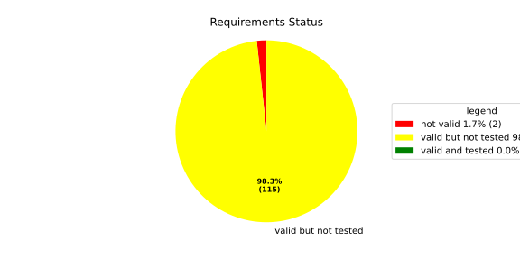
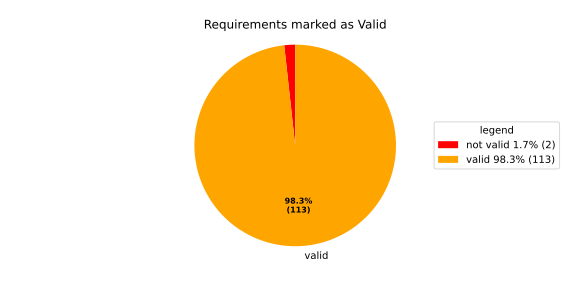
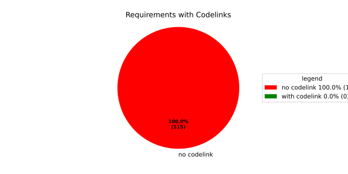

Component Requirements Statistics#
Overview#

In Detail#


No needs passed the filters
Failed Tests
Hint: This table should be empty. Before a PR can be merged all tests have to be successful.
No needs passed the filters
Skipped / Disabled Tests
No needs passed the filters
All passed Tests#
No needs passed the filters
Details About Testcases#
No needs passed the filters
No needs passed the filters
Test Log Files#
tests-report/score/health_monitor/src/rust/tests/test.log
exec ${PAGER:-/usr/bin/less} "$0" || exit 1
Executing tests from //score/health_monitor/src/rust:tests
-----------------------------------------------------------------------------
running 232 tests
test common::tests::duration_to_int_too_large - should panic ... ok
test common::tests::time_offset_diff_too_large - should panic ... ok
test common::tests::time_offset_valid ... ok
test common::tests::time_offset_wrong_order ... ok
test common::tests::time_range_from_interval_lower_too_large - should panic ... ok
test common::tests::time_range_from_interval_valid ... ok
test common::tests::time_range_new_valid ... ok
test common::tests::time_range_new_wrong_order - should panic ... ok
test deadline::common::tests::acquire_and_release_deadline ... ok
test deadline::common::tests::new_and_fields ... ok
test common::tests::duration_to_int_valid ... ok
test deadline::deadline_monitor::tests::deadline_failed_on_first_run_and_then_restarted_is_evaluated_as_error ... ok
test deadline::deadline_monitor::tests::deadline_outside_time_range_is_error_when_dropped_after_evaluate ... ok
test deadline::common::tests::concurrent_acquire ... ok
test deadline::deadline_monitor::tests::get_deadline_unknown_tag ... ok
test deadline::deadline_monitor::tests::start_stop_deadline_outside_ranges_is_evaluated_as_error ... ok
test deadline::deadline_monitor::tests::start_stop_deadline_outside_ranges_is_error_when_dropped_before_evaluate ... ok
test deadline::deadline_state::tests::as_u64_and_new ... ok
test deadline::deadline_state::tests::deadline_state_default_and_snapshot ... ok
test deadline::deadline_state::tests::deadline_state_update_none_returns_err ... ok
test deadline::deadline_state::tests::default_state ... ok
test deadline::deadline_state::tests::set_and_get_timestamp_ms ... ok
test deadline::deadline_state::tests::deadline_state_update_success ... ok
test deadline::deadline_state::tests::set_running ... ok
test deadline::deadline_state::tests::set_underrun ... ok
test deadline::ffi::tests::deadline_destroy_null_deadline ... ok
test deadline::ffi::tests::deadline_monitor_builder_add_deadline_invalid_range ... ok
test deadline::ffi::tests::deadline_monitor_builder_add_deadline_null_builder ... ok
test deadline::ffi::tests::deadline_monitor_builder_add_deadline_null_deadline_tag ... ok
test deadline::ffi::tests::deadline_monitor_builder_add_deadline_succeeds ... ok
test deadline::ffi::tests::deadline_monitor_builder_create_null_builder ... ok
test deadline::ffi::tests::deadline_monitor_builder_create_succeeds ... ok
test deadline::ffi::tests::deadline_monitor_builder_destroy_null_builder ... ok
test deadline::ffi::tests::deadline_monitor_destroy_null_monitor ... ok
test deadline::ffi::tests::deadline_monitor_get_deadline_null_deadline_handle ... ok
test deadline::ffi::tests::deadline_monitor_get_deadline_null_deadline_tag ... ok
test deadline::ffi::tests::deadline_monitor_get_deadline_null_monitor ... ok
test deadline::ffi::tests::deadline_monitor_get_deadline_unknown_deadline ... ok
test deadline::ffi::tests::deadline_monitor_get_deadline_succeeds ... ok
test deadline::ffi::tests::deadline_start_already_started ... ok
test deadline::ffi::tests::deadline_start_null_deadline ... ok
test deadline::ffi::tests::deadline_stop_null_deadline ... ok
test deadline::ffi::tests::deadline_start_succeeds ... ok
test deadline::ffi::tests::deadline_stop_succeeds ... ok
test ffi::tests::health_monitor_builder_add_deadline_monitor_null_deadline_monitor_builder ... ok
test ffi::tests::health_monitor_builder_add_deadline_monitor_null_hmon_builder ... ok
test ffi::tests::health_monitor_builder_add_deadline_monitor_null_monitor_tag ... ok
test ffi::tests::health_monitor_builder_add_deadline_monitor_succeeds ... ok
test ffi::tests::health_monitor_builder_add_heartbeat_monitor_null_hmon_builder ... ok
test ffi::tests::health_monitor_builder_add_heartbeat_monitor_null_heartbeat_monitor_builder ... ok
test ffi::tests::health_monitor_builder_add_heartbeat_monitor_null_monitor_tag ... ok
test ffi::tests::health_monitor_builder_add_heartbeat_monitor_succeeds ... ok
test ffi::tests::health_monitor_builder_add_logic_monitor_null_hmon_builder ... ok
test ffi::tests::health_monitor_builder_add_logic_monitor_null_logic_monitor_builder ... ok
test ffi::tests::health_monitor_builder_add_logic_monitor_null_monitor_tag ... ok
test ffi::tests::health_monitor_builder_add_logic_monitor_succeeds ... ok
test ffi::tests::health_monitor_builder_build_invalid_cycle_intervals ... ok
test ffi::tests::health_monitor_builder_build_no_monitors ... ok
test ffi::tests::health_monitor_builder_build_null_builder_handle ... ok
test ffi::tests::health_monitor_builder_build_null_monitor_handle ... ok
test ffi::tests::health_monitor_builder_build_succeeds ... ok
test ffi::tests::health_monitor_builder_build_thread_parameters ... ok
test ffi::tests::health_monitor_builder_build_valid_cycle_intervals_succeeds ... ok
test ffi::tests::health_monitor_builder_create_null_handle ... ok
test ffi::tests::health_monitor_builder_create_succeeds ... ok
test ffi::tests::health_monitor_builder_destroy_null_handle ... ok
test ffi::tests::health_monitor_destroy_null_hmon ... ok
test ffi::tests::health_monitor_get_deadline_monitor_already_taken ... ok
test ffi::tests::health_monitor_get_deadline_monitor_null_deadline_monitor ... ok
test ffi::tests::health_monitor_get_deadline_monitor_null_hmon ... ok
test ffi::tests::health_monitor_get_deadline_monitor_null_monitor_tag ... ok
test ffi::tests::health_monitor_get_deadline_monitor_succeeds ... ok
test ffi::tests::health_monitor_get_heartbeat_monitor_already_taken ... ok
test ffi::tests::health_monitor_get_heartbeat_monitor_null_heartbeat_monitor ... ok
test ffi::tests::health_monitor_get_heartbeat_monitor_null_monitor_tag ... ok
test ffi::tests::health_monitor_get_heartbeat_monitor_null_hmon ... ok
test ffi::tests::health_monitor_get_heartbeat_monitor_succeeds ... ok
test ffi::tests::health_monitor_get_logic_monitor_already_taken ... ok
test ffi::tests::health_monitor_get_logic_monitor_null_hmon ... ok
test ffi::tests::health_monitor_get_logic_monitor_null_logic_monitor ... ok
test ffi::tests::health_monitor_get_logic_monitor_null_monitor_tag ... ok
test ffi::tests::health_monitor_get_logic_monitor_succeeds ... ok
test ffi::tests::health_monitor_start_null_hmon ... ok
test ffi::tests::health_monitor_start_monitor_not_taken ... ok
test health_monitor::tests::health_monitor_builder_build_invalid_cycles ... ok
test health_monitor::tests::health_monitor_builder_build_no_monitors ... ok
test health_monitor::tests::health_monitor_builder_build_succeeds ... ok
test health_monitor::tests::health_monitor_builder_new_succeeds ... ok
test health_monitor::tests::health_monitor_get_deadline_monitor_available ... ok
test health_monitor::tests::health_monitor_get_deadline_monitor_invalid_state ... ok
test health_monitor::tests::health_monitor_get_deadline_monitor_taken ... ok
test health_monitor::tests::health_monitor_get_deadline_monitor_unknown ... ok
test health_monitor::tests::health_monitor_get_heartbeat_monitor_available ... ok
test health_monitor::tests::health_monitor_get_heartbeat_monitor_invalid_state ... ok
test health_monitor::tests::health_monitor_get_heartbeat_monitor_taken ... ok
test health_monitor::tests::health_monitor_get_heartbeat_monitor_unknown ... ok
test health_monitor::tests::health_monitor_get_logic_monitor_available ... ok
test health_monitor::tests::health_monitor_get_logic_monitor_invalid_state ... ok
[2026/06/01 13:07:08.7969051][7815][HMON][INFO] Monitoring thread started.
[2026/06/01 13:07:08.7969244][7815][HMON][INFO] Monitoring thread exiting.
test ffi::tests::health_monitor_start_succeeds ... ok
test health_monitor::tests::health_monitor_get_logic_monitor_taken ... ok
test health_monitor::tests::health_monitor_get_logic_monitor_unknown ... ok
[2026/06/01 13:07:08.7984349][7815][HMON][INFO] Monitoring thread started.
[2026/06/01 13:07:08.7984505][7815][HMON][INFO] Monitoring thread exiting.
test health_monitor::tests::health_monitor_start_monitors_not_taken - should panic ... ok
test health_monitor::tests::health_monitor_start_succeeds ... ok
test heartbeat::ffi::tests::heartbeat_monitor_builder_create_invalid_range ... ok
test heartbeat::ffi::tests::heartbeat_monitor_builder_create_null_builder ... ok
test heartbeat::ffi::tests::heartbeat_monitor_builder_create_succeeds ... ok
test heartbeat::ffi::tests::heartbeat_monitor_builder_destroy_null_builder ... ok
test heartbeat::ffi::tests::heartbeat_monitor_heartbeat_null_monitor ... ok
test heartbeat::ffi::tests::heartbeat_monitor_heartbeat_succeeds ... ok
test heartbeat::ffi::tests::heartbeat_monitor_destroy_null_monitor ... ok
test deadline::deadline_monitor::tests::monitor_with_multiple_running_deadlines ... ok
test heartbeat::heartbeat_monitor::tests::heartbeat_monitor_beat_early_evaluate_early ... ok
test heartbeat::heartbeat_monitor::tests::heartbeat_monitor_beat_early_evaluate_in_range ... ok
test heartbeat::heartbeat_monitor::tests::heartbeat_monitor_beat_in_range_evaluate_in_range ... ok
test heartbeat::heartbeat_monitor::tests::heartbeat_monitor_beat_early_evaluate_late ... ok
test heartbeat::heartbeat_monitor::tests::heartbeat_monitor_builder_build_invalid_internal_processing_cycle ... ok
test heartbeat::heartbeat_monitor::tests::heartbeat_monitor_builder_build_ok ... ok
test heartbeat::heartbeat_monitor::tests::heartbeat_monitor_beat_in_range_evaluate_late ... ok
test heartbeat::heartbeat_monitor::tests::heartbeat_monitor_beat_late_evaluate_late ... ok
test heartbeat::heartbeat_monitor::tests::heartbeat_monitor_cycle_early ... ok
test heartbeat::heartbeat_monitor::tests::heartbeat_monitor_multiple_beats_early_evaluate_early ... ok
test heartbeat::heartbeat_monitor::tests::heartbeat_monitor_cycle_in_range ... ok
test heartbeat::heartbeat_monitor::tests::heartbeat_monitor_multiple_beats_early_evaluate_in_range ... ok
test heartbeat::heartbeat_monitor::tests::heartbeat_monitor_multiple_beats_in_range_evaluate_in_range ... ok
test heartbeat::heartbeat_monitor::tests::heartbeat_monitor_cycle_late ... ok
test heartbeat::heartbeat_monitor::tests::heartbeat_monitor_multiple_beats_early_evaluate_late ... ok
test heartbeat::heartbeat_monitor::tests::heartbeat_monitor_no_beat_evaluate_early ... ok
test heartbeat::heartbeat_monitor::tests::heartbeat_monitor_no_beat_evaluate_in_range ... ok
test heartbeat::heartbeat_monitor::tests::heartbeat_monitor_multiple_beats_in_range_evaluate_late ... ok
test heartbeat::heartbeat_monitor::tests::heartbeat_monitor_multiple_beats_late_evaluate_late ... ok
test heartbeat::heartbeat_state::tests::snapshot_counter_increment ... ok
test heartbeat::heartbeat_state::tests::snapshot_default ... ok
test heartbeat::heartbeat_state::tests::snapshot_from_u64_max ... ok
test heartbeat::heartbeat_state::tests::snapshot_from_u64_valid ... ok
test heartbeat::heartbeat_state::tests::snapshot_from_u64_zero ... ok
test heartbeat::heartbeat_state::tests::snapshot_new_succeeds ... ok
test heartbeat::heartbeat_state::tests::snapshot_set_heartbeat_timestamp_out_of_range - should panic ... ok
test heartbeat::heartbeat_state::tests::snapshot_set_heartbeat_timestamp_valid ... ok
test heartbeat::heartbeat_state::tests::state_default ... ok
test heartbeat::heartbeat_state::tests::state_new ... ok
test heartbeat::heartbeat_state::tests::state_reset ... ok
test heartbeat::heartbeat_state::tests::state_snapshot ... ok
test heartbeat::heartbeat_state::tests::state_update_none ... ok
test heartbeat::heartbeat_state::tests::state_update_some ... ok
test logic::ffi::tests::logic_monitor_builder_add_state_null_allowed_states_many_elements ... ok
test logic::ffi::tests::logic_monitor_builder_add_state_null_allowed_states_zero_elements ... ok
test logic::ffi::tests::logic_monitor_builder_add_state_null_builder ... ok
test logic::ffi::tests::logic_monitor_builder_add_state_null_tag ... ok
test logic::ffi::tests::logic_monitor_builder_add_state_succeeds ... ok
test logic::ffi::tests::logic_monitor_builder_create_null_builder ... ok
test logic::ffi::tests::logic_monitor_builder_create_null_initial_state ... ok
test logic::ffi::tests::logic_monitor_builder_create_succeeds ... ok
test logic::ffi::tests::logic_monitor_builder_destroy_null_builder ... ok
test logic::ffi::tests::logic_monitor_destroy_null_monitor ... ok
test logic::ffi::tests::logic_monitor_state_fails ... ok
test logic::ffi::tests::logic_monitor_state_null_monitor ... ok
test logic::ffi::tests::logic_monitor_state_null_state ... ok
test logic::ffi::tests::logic_monitor_state_succeeds ... ok
test logic::ffi::tests::logic_monitor_transition_fails ... ok
test logic::ffi::tests::logic_monitor_transition_null_monitor ... ok
test logic::ffi::tests::logic_monitor_transition_null_target_state ... ok
test logic::ffi::tests::logic_monitor_transition_succeeds ... ok
test logic::logic_monitor::tests::logic_monitor_builder_build_no_states ... ok
test logic::logic_monitor::tests::logic_monitor_builder_build_succeeds ... ok
test logic::logic_monitor::tests::logic_monitor_builder_build_undefined_initial_state ... ok
test logic::logic_monitor::tests::logic_monitor_builder_build_undefined_target ... ok
test logic::logic_monitor::tests::logic_monitor_builder_new_succeeds ... ok
test logic::logic_monitor::tests::logic_monitor_evaluate_invalid_state ... ok
test logic::logic_monitor::tests::logic_monitor_evaluate_invalid_transition ... ok
test logic::logic_monitor::tests::logic_monitor_evaluate_succeeds ... ok
test logic::logic_monitor::tests::logic_monitor_state_indeterminate_current_state ... ok
test logic::logic_monitor::tests::logic_monitor_state_succeeds ... ok
test logic::logic_monitor::tests::logic_monitor_transition_indeterminate_current_state ... ok
test logic::logic_monitor::tests::logic_monitor_transition_invalid_transition ... ok
test logic::logic_monitor::tests::logic_monitor_transition_succeeds ... ok
test logic::logic_monitor::tests::logic_monitor_transition_unknown_node ... ok
test logic::logic_state::tests::snapshot_from_u64_max ... ok
test logic::logic_state::tests::snapshot_from_u64_valid ... ok
test logic::logic_state::tests::snapshot_from_u64_zero ... ok
test logic::logic_state::tests::snapshot_new_succeeds ... ok
test logic::logic_state::tests::snapshot_set_current_state_index_valid ... ok
test logic::logic_state::tests::snapshot_set_heartbeat_timestamp_out_of_range - should panic ... ok
test logic::logic_state::tests::snapshot_set_monitor_status_valid ... ok
test logic::logic_state::tests::state_new ... ok
test logic::logic_state::tests::state_snapshot ... ok
test logic::logic_state::tests::state_swap ... ok
test tag::tests::deadline_tag_debug ... ok
test tag::tests::deadline_tag_from_str ... ok
test tag::tests::deadline_tag_from_string ... ok
test tag::tests::deadline_tag_new ... ok
test tag::tests::deadline_tag_score_debug ... ok
test tag::tests::monitor_tag_debug ... ok
test tag::tests::monitor_tag_from_str ... ok
test tag::tests::monitor_tag_from_string ... ok
test tag::tests::monitor_tag_new ... ok
test tag::tests::monitor_tag_score_debug ... ok
test tag::tests::state_tag_debug ... ok
test tag::tests::state_tag_from_str ... ok
test tag::tests::state_tag_from_string ... ok
test tag::tests::state_tag_new ... ok
test tag::tests::state_tag_score_debug ... ok
test tag::tests::tag_debug ... ok
test tag::tests::tag_hash_is_eq ... ok
test tag::tests::tag_hash_is_ne ... ok
test tag::tests::tag_new ... ok
test tag::tests::tag_partial_eq_is_eq ... ok
test tag::tests::tag_partial_eq_is_ne ... ok
test tag::tests::tag_score_debug ... ok
test tag::tests::test_from_str ... ok
test tag::tests::test_from_string ... ok
test thread_ffi::tests::scheduler_policy_priority_max_null_priority ... ok
test thread_ffi::tests::scheduler_policy_priority_max_succeeds ... ok
test thread_ffi::tests::scheduler_policy_priority_min_null_priority ... ok
test thread_ffi::tests::scheduler_policy_priority_min_succeeds ... ok
test thread_ffi::tests::thread_parameters_affinity_null_affinity_many_elements ... ok
test thread_ffi::tests::thread_parameters_affinity_null_affinity_zero_elements ... ok
test thread_ffi::tests::thread_parameters_affinity_null_handle ... ok
test thread_ffi::tests::thread_parameters_affinity_succeeds ... ok
test thread_ffi::tests::thread_parameters_create_succeeds ... ok
test thread_ffi::tests::thread_parameters_destroy_null_handle ... ok
test thread_ffi::tests::thread_parameters_scheduler_parameters_invalid_priority ... ok
test thread_ffi::tests::thread_parameters_scheduler_parameters_null_handle ... ok
test thread_ffi::tests::thread_parameters_scheduler_parameters_succeeds ... ok
test thread_ffi::tests::thread_parameters_stack_size_null_handle ... ok
test thread_ffi::tests::thread_parameters_stack_size_succeeds ... ok
test worker::tests::monitoring_logic_report_alive_on_each_call_when_no_error ... ok
test heartbeat::heartbeat_monitor::tests::heartbeat_monitor_no_beat_evaluate_late ... ok
test worker::tests::monitoring_logic_report_error_when_deadline_failed ... ok
[2026/06/01 13:07:09.7562980][7815][HMON][INFO] Monitoring thread started.
test deadline::deadline_monitor::tests::start_stop_deadline_within_range_works ... ok
[2026/06/01 13:07:09.8167115][7815][HMON][WARN] Deadline (DeadlineTag(deadline_fast)) missed! Expected: 50, now: 60
[2026/06/01 13:07:09.8167394][7815][HMON][WARN] Deadline monitor with tag MonitorTag(deadline_monitor) reported error: TooLate.
[2026/06/01 13:07:09.8167466][7815][HMON][WARN] One or more monitors reported errors, skipping AliveAPI notification.
[2026/06/01 13:07:09.8167535][7815][HMON][INFO] Monitoring logic failed, stopping thread.
[2026/06/01 13:07:09.8167586][7815][HMON][INFO] Monitoring thread exiting.
test worker::tests::monitoring_logic_report_alive_respect_cycle ... ok
test worker::tests::unique_thread_runner_monitoring_works ... ok
test heartbeat::heartbeat_monitor::tests::heartbeat_monitor_timestamp_offset ... ok
test result: ok. 232 passed; 0 failed; 0 ignored; 0 measured; 0 filtered out; finished in 1.27s
tests-report/score/health_monitor/src/rust/loom_tests/test.log
exec ${PAGER:-/usr/bin/less} "$0" || exit 1
Executing tests from //score/health_monitor/src/rust:loom_tests
-----------------------------------------------------------------------------
running 3 tests
test heartbeat::heartbeat_monitor::loom_tests::heartbeat_monitor_heartbeat_evaluate_too_early ... ok
test heartbeat::heartbeat_monitor::loom_tests::heartbeat_monitor_heartbeat_evaluate_in_range ... ok
test heartbeat::heartbeat_monitor::loom_tests::heartbeat_monitor_heartbeat_evaluate_too_late ... ok
test result: ok. 3 passed; 0 failed; 0 ignored; 0 measured; 0 filtered out; finished in 0.70s
tests-report/score/health_monitor/src/cpp/cpp_integration_tests/test.log
exec ${PAGER:-/usr/bin/less} "$0" || exit 1
Executing tests from //score/health_monitor/src/cpp:cpp_integration_tests
-----------------------------------------------------------------------------
Running main() from gmock_main.cc
[==========] Running 1 test from 1 test suite.
[----------] Global test environment set-up.
[----------] 1 test from HealthMonitorTest
[ RUN ] HealthMonitorTest.Integrated
[2026/06/05 09:54:42.0717292][score/health_monitor/src/rust/deadline/deadline_monitor.rs:217][4986][HMON][ERROR] Deadline DeadlineTag(deadline_1) stopped too early by 100 ms
[2026/06/05 09:54:42.0717485][score/health_monitor/src/rust/worker.rs:121][4986][HMON][INFO] Monitoring thread started.
[2026/06/05 09:54:42.0717714][score/health_monitor/src/rust/worker.rs:139][4986][HMON][INFO] Monitoring thread exiting.
[ OK ] HealthMonitorTest.Integrated (3 ms)
[----------] 1 test from HealthMonitorTest (3 ms total)
[----------] Global test environment tear-down
[==========] 1 test from 1 test suite ran. (3 ms total)
[ PASSED ] 1 test.
tests-report/score/health_monitor/src/cpp/cpp_unit_tests/test.log
exec ${PAGER:-/usr/bin/less} "$0" || exit 1
Executing tests from //score/health_monitor/src/cpp:cpp_unit_tests
-----------------------------------------------------------------------------
Running main() from gmock_main.cc
[==========] Running 33 tests from 10 test suites.
[----------] Global test environment set-up.
[----------] 2 tests from DeadlineMonitorBuilderFixture
[ RUN ] DeadlineMonitorBuilderFixture.New_Succeeds
[ OK ] DeadlineMonitorBuilderFixture.New_Succeeds (0 ms)
[ RUN ] DeadlineMonitorBuilderFixture.AddDeadline_Succeeds
[ OK ] DeadlineMonitorBuilderFixture.AddDeadline_Succeeds (0 ms)
[----------] 2 tests from DeadlineMonitorBuilderFixture (0 ms total)
[----------] 2 tests from DeadlineMonitorFixture
[ RUN ] DeadlineMonitorFixture.GetDeadline_Succeeds
[ OK ] DeadlineMonitorFixture.GetDeadline_Succeeds (0 ms)
[ RUN ] DeadlineMonitorFixture.GetDeadline_Unknown
[ OK ] DeadlineMonitorFixture.GetDeadline_Unknown (0 ms)
[----------] 2 tests from DeadlineMonitorFixture (0 ms total)
[----------] 2 tests from DeadlineFixture
[ RUN ] DeadlineFixture.Start_Succeeds
[2026/06/05 09:54:43.4389358][score/health_monitor/src/rust/deadline/deadline_monitor.rs:217][5018][HMON][ERROR] Deadline DeadlineTag(deadline) stopped too early by 50 ms
[ OK ] DeadlineFixture.Start_Succeeds (0 ms)
[ RUN ] DeadlineFixture.Start_AlreadyRunning
[2026/06/05 09:54:43.4389870][score/health_monitor/src/rust/deadline/deadline_monitor.rs:217][5018][HMON][ERROR] Deadline DeadlineTag(deadline) stopped too early by 50 ms
[2026/06/05 09:54:43.4389935][score/health_monitor/src/rust/deadline/deadline_monitor.rs:172][5018][HMON][WARN] Trying to start deadline DeadlineTag(deadline) that already failed
[ OK ] DeadlineFixture.Start_AlreadyRunning (0 ms)
[----------] 2 tests from DeadlineFixture (0 ms total)
[----------] 4 tests from HealthMonitorBuilderFixture
[ RUN ] HealthMonitorBuilderFixture.New_Succeeds
[ OK ] HealthMonitorBuilderFixture.New_Succeeds (0 ms)
[ RUN ] HealthMonitorBuilderFixture.Build_Succeeds
[ OK ] HealthMonitorBuilderFixture.Build_Succeeds (0 ms)
[ RUN ] HealthMonitorBuilderFixture.Build_InvalidCycles
[2026/06/05 09:54:43.4390903][score/health_monitor/src/rust/health_monitor.rs:134][5018][HMON][ERROR] Supervisor API cycle duration (123 ms) must be a multiple of internal processing cycle interval (100 ms).
[ OK ] HealthMonitorBuilderFixture.Build_InvalidCycles (0 ms)
[ RUN ] HealthMonitorBuilderFixture.Build_NoMonitors
[2026/06/05 09:54:43.4391104][score/health_monitor/src/rust/health_monitor.rs:146][5018][HMON][ERROR] No monitors have been added. HealthMonitor cannot be created.
[ OK ] HealthMonitorBuilderFixture.Build_NoMonitors (0 ms)
[----------] 4 tests from HealthMonitorBuilderFixture (0 ms total)
[----------] 11 tests from HealthMonitor
[ RUN ] HealthMonitor.GetDeadlineMonitor_Available
[ OK ] HealthMonitor.GetDeadlineMonitor_Available (0 ms)
[ RUN ] HealthMonitor.GetDeadlineMonitor_Taken
[ OK ] HealthMonitor.GetDeadlineMonitor_Taken (0 ms)
[ RUN ] HealthMonitor.GetDeadlineMonitor_Unknown
[ OK ] HealthMonitor.GetDeadlineMonitor_Unknown (0 ms)
[ RUN ] HealthMonitor.GetHeartbeatMonitor_Available
[ OK ] HealthMonitor.GetHeartbeatMonitor_Available (0 ms)
[ RUN ] HealthMonitor.GetHeartbeatMonitor_Taken
[ OK ] HealthMonitor.GetHeartbeatMonitor_Taken (0 ms)
[ RUN ] HealthMonitor.GetHeartbeatMonitor_Unknown
[ OK ] HealthMonitor.GetHeartbeatMonitor_Unknown (0 ms)
[ RUN ] HealthMonitor.GetLogicMonitor_Available
[ OK ] HealthMonitor.GetLogicMonitor_Available (0 ms)
[ RUN ] HealthMonitor.GetLogicMonitor_Taken
[ OK ] HealthMonitor.GetLogicMonitor_Taken (0 ms)
[ RUN ] HealthMonitor.GetLogicMonitor_Unknown
[ OK ] HealthMonitor.GetLogicMonitor_Unknown (0 ms)
[ RUN ] HealthMonitor.Start_Succeeds
[2026/06/05 09:54:43.4393663][score/health_monitor/src/rust/worker.rs:121][5018][HMON][INFO] Monitoring thread started.
[2026/06/05 09:54:43.4393754][score/health_monitor/src/rust/worker.rs:139][5018][HMON][INFO] Monitoring thread exiting.
[ OK ] HealthMonitor.Start_Succeeds (0 ms)
[ RUN ] HealthMonitor.Start_MonitorsNotTaken
[2026/06/05 09:54:43.4400290][score/health_monitor/src/rust/health_monitor.rs:307][5023][HMON][ERROR] All monitors must be taken before starting HealthMonitor but MonitorTag(deadline_monitor) is not taken.
[ OK ] HealthMonitor.Start_MonitorsNotTaken (158 ms)
[----------] 11 tests from HealthMonitor (158 ms total)
[----------] 1 test from HeartbeatMonitorBuilder
[ RUN ] HeartbeatMonitorBuilder.New_Succeeds
[ OK ] HeartbeatMonitorBuilder.New_Succeeds (0 ms)
[----------] 1 test from HeartbeatMonitorBuilder (0 ms total)
[----------] 1 test from HeartbeatMonitor
[ RUN ] HeartbeatMonitor.Heartbeat_Succeeds
[ OK ] HeartbeatMonitor.Heartbeat_Succeeds (0 ms)
[----------] 1 test from HeartbeatMonitor (0 ms total)
[----------] 2 tests from LogicMonitorBuilderFixture
[ RUN ] LogicMonitorBuilderFixture.New_Succeeds
[ OK ] LogicMonitorBuilderFixture.New_Succeeds (0 ms)
[ RUN ] LogicMonitorBuilderFixture.AddState_Succeeds
[ OK ] LogicMonitorBuilderFixture.AddState_Succeeds (0 ms)
[----------] 2 tests from LogicMonitorBuilderFixture (0 ms total)
[----------] 5 tests from LogicMonitorFixture
[ RUN ] LogicMonitorFixture.Transition_Succeeds
[ OK ] LogicMonitorFixture.Transition_Succeeds (0 ms)
[ RUN ] LogicMonitorFixture.Transition_Unknown
[2026/06/05 09:54:43.5978984][score/health_monitor/src/rust/logic/logic_monitor.rs:265][5018][HMON][WARN] Requested state transition is invalid: StateTag(state1) -> StateTag(unknown)
[ OK ] LogicMonitorFixture.Transition_Unknown (0 ms)
[ RUN ] LogicMonitorFixture.Transition_Invalid
[2026/06/05 09:54:43.5979562][score/health_monitor/src/rust/logic/logic_monitor.rs:265][5018][HMON][WARN] Requested state transition is invalid: StateTag(state1) -> StateTag(unknown)
[2026/06/05 09:54:43.5979644][score/health_monitor/src/rust/logic/logic_monitor.rs:254][5018][HMON][WARN] Current logic monitor state cannot be determined
[ OK ] LogicMonitorFixture.Transition_Invalid (0 ms)
[ RUN ] LogicMonitorFixture.State_Succeeds
[ OK ] LogicMonitorFixture.State_Succeeds (0 ms)
[ RUN ] LogicMonitorFixture.State_Invalid
[2026/06/05 09:54:43.5980688][score/health_monitor/src/rust/logic/logic_monitor.rs:265][5018][HMON][WARN] Requested state transition is invalid: StateTag(state1) -> StateTag(unknown)
[2026/06/05 09:54:43.5980816][score/health_monitor/src/rust/logic/logic_monitor.rs:290][5018][HMON][WARN] Current logic monitor state cannot be determined
[ OK ] LogicMonitorFixture.State_Invalid (0 ms)
[----------] 5 tests from LogicMonitorFixture (0 ms total)
[----------] 3 tests from TimeRangeFixture
[ RUN ] TimeRangeFixture.New_Succeeds
[ OK ] TimeRangeFixture.New_Succeeds (0 ms)
[ RUN ] TimeRangeFixture.New_InvalidOrder
[ OK ] TimeRangeFixture.New_InvalidOrder (149 ms)
[ RUN ] TimeRangeFixture.MinMax
[ OK ] TimeRangeFixture.MinMax (0 ms)
[----------] 3 tests from TimeRangeFixture (149 ms total)
[----------] Global test environment tear-down
[==========] 33 tests from 10 test suites ran. (309 ms total)
[ PASSED ] 33 tests.
tests-report/score/launch_manager/exec_error_domain_UT/test.log
exec ${PAGER:-/usr/bin/less} "$0" || exit 1
Executing tests from //score/launch_manager:exec_error_domain_UT
-----------------------------------------------------------------------------
Running main() from gmock_main.cc
[==========] Running 3 tests from 1 test suite.
[----------] Global test environment set-up.
[----------] 3 tests from ExecErrorDomainTest
[ RUN ] ExecErrorDomainTest.AllKnownCodesReturnNonEmptyMessage
[ OK ] ExecErrorDomainTest.AllKnownCodesReturnNonEmptyMessage (0 ms)
[ RUN ] ExecErrorDomainTest.AllKnownCodesHaveDistinctMessages
[ OK ] ExecErrorDomainTest.AllKnownCodesHaveDistinctMessages (0 ms)
[ RUN ] ExecErrorDomainTest.UnknownCodeReturnsNonEmptyMessage
[ OK ] ExecErrorDomainTest.UnknownCodeReturnsNonEmptyMessage (0 ms)
[----------] 3 tests from ExecErrorDomainTest (0 ms total)
[----------] Global test environment tear-down
[==========] 3 tests from 1 test suite ran. (0 ms total)
[ PASSED ] 3 tests.
tests-report/score/launch_manager/daemon/src/process_state_client/process_state_client_ut/test.log
exec ${PAGER:-/usr/bin/less} "$0" || exit 1
Executing tests from //score/launch_manager/daemon/src/process_state_client:process_state_client_ut
-----------------------------------------------------------------------------
Running main() from gmock_main.cc
[==========] Running 4 tests from 1 test suite.
[----------] Global test environment set-up.
[----------] 4 tests from ProcessStateClient_UT
[ RUN ] ProcessStateClient_UT.ProcessStateClient_ConstructReceiver_Succeeds
[ OK ] ProcessStateClient_UT.ProcessStateClient_ConstructReceiver_Succeeds (0 ms)
[ RUN ] ProcessStateClient_UT.ProcessStateClient_QueueOneProcess_Succeeds
[ OK ] ProcessStateClient_UT.ProcessStateClient_QueueOneProcess_Succeeds (0 ms)
[ RUN ] ProcessStateClient_UT.ProcessStateClient_QueueMaxNumberOfProcesses_Succeeds
[ OK ] ProcessStateClient_UT.ProcessStateClient_QueueMaxNumberOfProcesses_Succeeds (8 ms)
[ RUN ] ProcessStateClient_UT.ProcessStateClient_QueueOneProcessTooMany_Fails
mw::log initialization error: Error No logging configuration files could be found. occurred with context information: Failed to load configuration files. Fallback to console logging.
2026/06/01 13:07:07.9227519 1538361 000 ECU1 NONE LM log error verbose 1 Failed to queue posix process
2026/06/01 13:07:07.9227520 1538363 000 ECU1 NONE LM log error verbose 1 ProcessStateReceiver::getNextChangedPosixProcess: Overflow occurred, will be reported as kCommunicationError
[ OK ] ProcessStateClient_UT.ProcessStateClient_QueueOneProcessTooMany_Fails (5 ms)
[----------] 4 tests from ProcessStateClient_UT (15 ms total)
[----------] Global test environment tear-down
[==========] 4 tests from 1 test suite ran. (15 ms total)
[ PASSED ] 4 tests.
tests-report/score/launch_manager/daemon/src/recovery_client/recovery_client_UT/test.log
exec ${PAGER:-/usr/bin/less} "$0" || exit 1
Executing tests from //score/launch_manager/daemon/src/recovery_client:recovery_client_UT
-----------------------------------------------------------------------------
Running main() from gmock_main.cc
[==========] Running 5 tests from 1 test suite.
[----------] Global test environment set-up.
[----------] 5 tests from RecoveryClientTest
[ RUN ] RecoveryClientTest.SendSingleRequest
[ OK ] RecoveryClientTest.SendSingleRequest (0 ms)
[ RUN ] RecoveryClientTest.GetNextRequest
[ OK ] RecoveryClientTest.GetNextRequest (0 ms)
[ RUN ] RecoveryClientTest.GetNextRequestEmpty
[ OK ] RecoveryClientTest.GetNextRequestEmpty (0 ms)
[ RUN ] RecoveryClientTest.RingBufferFull
[ OK ] RecoveryClientTest.RingBufferFull (0 ms)
[ RUN ] RecoveryClientTest.FIFOOrdering
[ OK ] RecoveryClientTest.FIFOOrdering (0 ms)
[----------] 5 tests from RecoveryClientTest (0 ms total)
[----------] Global test environment tear-down
[==========] 5 tests from 1 test suite ran. (0 ms total)
[ PASSED ] 5 tests.
tests-report/score/launch_manager/daemon/src/alive_monitor/details/MonitorImpl_UT/test.log
exec ${PAGER:-/usr/bin/less} "$0" || exit 1
Executing tests from //score/launch_manager/daemon/src/alive_monitor/details:MonitorImpl_UT
-----------------------------------------------------------------------------
Running main() from gmock_main.cc
[==========] Running 3 tests from 1 test suite.
[----------] Global test environment set-up.
[----------] 3 tests from MonitorImplTest
[ RUN ] MonitorImplTest.ThrowsWhenInterfacePathEnvVarIsNotSet
mw::log initialization error: Error No logging configuration files could be found. occurred with context information: Failed to load configuration files. Fallback to console logging.
2026/06/05 09:40:17.2417211 1457806 000 ECU1 NONE Sprv log error verbose 3 Failed to load interface path for Monitor ( test/instance )
[ OK ] MonitorImplTest.ThrowsWhenInterfacePathEnvVarIsNotSet (6 ms)
[ RUN ] MonitorImplTest.DoesNotThrowWhenInterfacePathEnvVarIsSet
2026/06/05 09:40:17.2417214 1457832 000 ECU1 NONE Sprv log error verbose 3 Connection to PHM daemon failed, for the Monitor ( test/instance )
[ OK ] MonitorImplTest.DoesNotThrowWhenInterfacePathEnvVarIsSet (0 ms)
[ RUN ] MonitorImplTest.ReportCheckpointSafeWhenNotConnected
2026/06/05 09:40:17.2417214 1457833 000 ECU1 NONE Sprv log error verbose 3 Connection to PHM daemon failed, for the Monitor ( test/instance )
[ OK ] MonitorImplTest.ReportCheckpointSafeWhenNotConnected (0 ms)
[----------] 3 tests from MonitorImplTest (8 ms total)
[----------] Global test environment tear-down
[==========] 3 tests from 1 test suite ran. (9 ms total)
[ PASSED ] 3 tests.
tests-report/score/launch_manager/daemon/src/alive_monitor/details/supervision/Alive_UT/test.log
exec ${PAGER:-/usr/bin/less} "$0" || exit 1
Executing tests from //score/launch_manager/daemon/src/alive_monitor/details/supervision:Alive_UT
-----------------------------------------------------------------------------
Running main() from gmock_main.cc
[==========] Running 4 tests from 1 test suite.
[----------] Global test environment set-up.
[----------] 4 tests from AliveSupervisionTest
[ RUN ] AliveSupervisionTest.AliveTransitionsOkToExpiredOnMissingHeartbeat
mw::log initialization error: Error No logging configuration files could be found. occurred with context information: Failed to load configuration files. Fallback to console logging.
2026/06/03 10:29:52.2592505 1296245 000 ECU1 NONE Sprv log warn verbose 13 Alive Supervision ( test_alive ) switched to EXPIRED , due to 0 reported alive indication(s) (expected >= 1 ). Failed supervision cycles: 0 / 0
[ OK ] AliveSupervisionTest.AliveTransitionsOkToExpiredOnMissingHeartbeat (5 ms)
[ RUN ] AliveSupervisionTest.AliveStaysOkWithCorrectHeartbeats
[ OK ] AliveSupervisionTest.AliveStaysOkWithCorrectHeartbeats (0 ms)
[ RUN ] AliveSupervisionTest.AliveReportsEnqueueFailureWhenRingBufferFull
2026/06/03 10:29:52.2592506 1296255 000 ECU1 NONE Sprv log warn verbose 13 Alive Supervision ( test_alive ) switched to EXPIRED , due to 0 reported alive indication(s) (expected >= 1 ). Failed supervision cycles: 0 / 0
2026/06/03 10:29:52.2592506 1296256 000 ECU1 NONE Sprv log error verbose 3 Failed to enqueue recovery request for alive supervision test_alive failure (ring buffer full)
[ OK ] AliveSupervisionTest.AliveReportsEnqueueFailureWhenRingBufferFull (0 ms)
[ RUN ] AliveSupervisionTest.AliveDebouncesThroughFailedBeforeExpired
2026/06/03 10:29:52.2592506 1296257 000 ECU1 NONE Sprv log warn verbose 13 Alive Supervision ( test_alive ) switched to FAILED , due to 0 reported alive indication(s) (expected >= 1 ). Failed supervision cycles: 1 / 1
2026/06/03 10:29:52.2592506 1296258 000 ECU1 NONE Sprv log warn verbose 13 Alive Supervision ( test_alive ) switched to EXPIRED , due to 0 reported alive indication(s) (expected >= 1 ). Failed supervision cycles: 2 / 1
[ OK ] AliveSupervisionTest.AliveDebouncesThroughFailedBeforeExpired (0 ms)
[----------] 4 tests from AliveSupervisionTest (5 ms total)
[----------] Global test environment tear-down
[==========] 4 tests from 1 test suite ran. (6 ms total)
[ PASSED ] 4 tests.
tests-report/score/launch_manager/daemon/src/alive_monitor/details/ifappl/MonitorIfDaemon_UT/test.log
exec ${PAGER:-/usr/bin/less} "$0" || exit 1
Executing tests from //score/launch_manager/daemon/src/alive_monitor/details/ifappl:MonitorIfDaemon_UT
-----------------------------------------------------------------------------
Running main() from gmock_main.cc
[==========] Running 16 tests from 1 test suite.
[----------] Global test environment set-up.
[----------] 16 tests from MonitorIfDaemonTest
[ RUN ] MonitorIfDaemonTest.GetInterfaceName_ReturnsNameGivenAtConstruction
mw::log initialization error: Error No logging configuration files could be found. occurred with context information: Failed to load configuration files. Fallback to console logging.
[ OK ] MonitorIfDaemonTest.GetInterfaceName_ReturnsNameGivenAtConstruction (2 ms)
[ RUN ] MonitorIfDaemonTest.InitiallyInactive_CheckForNewData_DoesNotNotifyCheckpoint
[ OK ] MonitorIfDaemonTest.InitiallyInactive_CheckForNewData_DoesNotNotifyCheckpoint (0 ms)
[ RUN ] MonitorIfDaemonTest.ProcessOffBeforeActivation_RemainsInactive
[ OK ] MonitorIfDaemonTest.ProcessOffBeforeActivation_RemainsInactive (0 ms)
[ RUN ] MonitorIfDaemonTest.ProcessRunning_ActivatesMonitorOnNextCheckForNewData
[ OK ] MonitorIfDaemonTest.ProcessRunning_ActivatesMonitorOnNextCheckForNewData (0 ms)
[ RUN ] MonitorIfDaemonTest.ProcessStarting_AlsoActivatesMonitor
[ OK ] MonitorIfDaemonTest.ProcessStarting_AlsoActivatesMonitor (0 ms)
[ RUN ] MonitorIfDaemonTest.ProcessOff_DeactivatesMonitor_NoFurtherDataForwarded
[ OK ] MonitorIfDaemonTest.ProcessOff_DeactivatesMonitor_NoFurtherDataForwarded (0 ms)
[ RUN ] MonitorIfDaemonTest.Active_CheckpointDataForwarded
[ OK ] MonitorIfDaemonTest.Active_CheckpointDataForwarded (0 ms)
[ RUN ] MonitorIfDaemonTest.Active_FutureTimestamp_NotForwardedInCurrentCycle
[ OK ] MonitorIfDaemonTest.Active_FutureTimestamp_NotForwardedInCurrentCycle (0 ms)
[ RUN ] MonitorIfDaemonTest.Active_FutureTimestampCheckpoint_ConsumedInLaterCycle
[ OK ] MonitorIfDaemonTest.Active_FutureTimestampCheckpoint_ConsumedInLaterCycle (0 ms)
[ RUN ] MonitorIfDaemonTest.Active_NonMatchingCheckpointId_NotForwarded
[ OK ] MonitorIfDaemonTest.Active_NonMatchingCheckpointId_NotForwarded (0 ms)
[ RUN ] MonitorIfDaemonTest.Active_MultipleCheckpointsInOneCycle_AllForwarded
[ OK ] MonitorIfDaemonTest.Active_MultipleCheckpointsInOneCycle_AllForwarded (0 ms)
[ RUN ] MonitorIfDaemonTest.Active_TwoAttachedCheckpoints_RoutedByCheckpointId
[ OK ] MonitorIfDaemonTest.Active_TwoAttachedCheckpoints_RoutedByCheckpointId (0 ms)
[ RUN ] MonitorIfDaemonTest.Active_OverflowDetected_TransitionsToInactiveOverflow
2026/06/03 10:29:52.2592545 1296648 000 ECU1 NONE Sprv log warn verbose 3 MonitorInterface: Potential data loss of checkpoint ring buffer occurred. Instance: test_interface
[ OK ] MonitorIfDaemonTest.Active_OverflowDetected_TransitionsToInactiveOverflow (1 ms)
[ RUN ] MonitorIfDaemonTest.InactiveOverflow_NoProcessRestart_DoesNotRepeatNotification
2026/06/03 10:29:52.2592546 1296653 000 ECU1 NONE Sprv log warn verbose 3 MonitorInterface: Potential data loss of checkpoint ring buffer occurred. Instance: test_interface
[ OK ] MonitorIfDaemonTest.InactiveOverflow_NoProcessRestart_DoesNotRepeatNotification (0 ms)
[ RUN ] MonitorIfDaemonTest.InactiveOverflow_ProcessRestarts_PushesOverflowNotificationAgain
2026/06/03 10:29:52.2592546 1296655 000 ECU1 NONE Sprv log warn verbose 3 MonitorInterface: Potential data loss of checkpoint ring buffer occurred. Instance: test_interface
[ OK ] MonitorIfDaemonTest.InactiveOverflow_ProcessRestarts_PushesOverflowNotificationAgain (0 ms)
[ RUN ] MonitorIfDaemonTest.InactiveOverflow_ProcessRestartFlag_ClearedAfterNotification
2026/06/03 10:29:52.2592546 1296658 000 ECU1 NONE Sprv log warn verbose 3 MonitorInterface: Potential data loss of checkpoint ring buffer occurred. Instance: test_interface
[ OK ] MonitorIfDaemonTest.InactiveOverflow_ProcessRestartFlag_ClearedAfterNotification (0 ms)
[----------] 16 tests from MonitorIfDaemonTest (7 ms total)
[----------] Global test environment tear-down
[==========] 16 tests from 1 test suite ran. (7 ms total)
[ PASSED ] 16 tests.
tests-report/score/launch_manager/daemon/src/process_group_manager/details/safeprocessmap_UT/test.log
exec ${PAGER:-/usr/bin/less} "$0" || exit 1
Executing tests from //score/launch_manager/daemon/src/process_group_manager/details:safeprocessmap_UT
-----------------------------------------------------------------------------
Running main() from gmock_main.cc
[==========] Running 13 tests from 1 test suite.
[----------] Global test environment set-up.
[----------] 13 tests from SafeProcessMapTest
[ RUN ] SafeProcessMapTest.ConstructWithZeroCapacity
[ OK ] SafeProcessMapTest.ConstructWithZeroCapacity (0 ms)
[ RUN ] SafeProcessMapTest.FindTerminatedWithNegativePidReturnsInvalid
[ OK ] SafeProcessMapTest.FindTerminatedWithNegativePidReturnsInvalid (0 ms)
[ RUN ] SafeProcessMapTest.FindTerminatedInsertsEntryWhenPidNotPresent
[ OK ] SafeProcessMapTest.FindTerminatedInsertsEntryWhenPidNotPresent (0 ms)
[ RUN ] SafeProcessMapTest.FindTerminatedMatchesExistingInsertAndCallsCallback
[ OK ] SafeProcessMapTest.FindTerminatedMatchesExistingInsertAndCallsCallback (0 ms)
[ RUN ] SafeProcessMapTest.InsertIntoEmptyTreeReturnsZero
[ OK ] SafeProcessMapTest.InsertIntoEmptyTreeReturnsZero (0 ms)
[ RUN ] SafeProcessMapTest.InsertMatchesExistingFindTerminatedEntry
[ OK ] SafeProcessMapTest.InsertMatchesExistingFindTerminatedEntry (0 ms)
[ RUN ] SafeProcessMapTest.InsertMultipleNodesThenFindTerminatedRemovesAll
[ OK ] SafeProcessMapTest.InsertMultipleNodesThenFindTerminatedRemovesAll (7 ms)
[ RUN ] SafeProcessMapTest.InsertBeyondCapacityReturnsOutOfMemory
[ OK ] SafeProcessMapTest.InsertBeyondCapacityReturnsOutOfMemory (2 ms)
[ RUN ] SafeProcessMapTest.InsertSamePidTwiceYieldsUntilFindTerminatedResolves
[ OK ] SafeProcessMapTest.InsertSamePidTwiceYieldsUntilFindTerminatedResolves (11 ms)
[ RUN ] SafeProcessMapTest.FindTerminatedSamePidTwiceYieldsUntilInsertResolves
[ OK ] SafeProcessMapTest.FindTerminatedSamePidTwiceYieldsUntilInsertResolves (11 ms)
[ RUN ] SafeProcessMapTest.FindTerminatedWorksAtMaxTreeDepth
[ OK ] SafeProcessMapTest.FindTerminatedWorksAtMaxTreeDepth (0 ms)
[ RUN ] SafeProcessMapTest.ConcurrentInsertAndFindFromMultipleThreads
[ OK ] SafeProcessMapTest.ConcurrentInsertAndFindFromMultipleThreads (2575 ms)
[ RUN ] SafeProcessMapTest.ConcurrentFindAndInsertFromMultipleThreads
[ OK ] SafeProcessMapTest.ConcurrentFindAndInsertFromMultipleThreads (2210 ms)
[----------] 13 tests from SafeProcessMapTest (4821 ms total)
[----------] Global test environment tear-down
[==========] 13 tests from 1 test suite ran. (4821 ms total)
[ PASSED ] 13 tests.
tests-report/score/launch_manager/daemon/src/process_group_manager/details/oshandler_UT/test.log
exec ${PAGER:-/usr/bin/less} "$0" || exit 1
Executing tests from //score/launch_manager/daemon/src/process_group_manager/details:oshandler_UT
-----------------------------------------------------------------------------
Running main() from gmock_main.cc
[==========] Running 6 tests from 1 test suite.
[----------] Global test environment set-up.
[----------] 6 tests from OsHandlerTest
[ RUN ] OsHandlerTest.WaitReturnsProcessId_FindTerminatedIsCalled
[ OK ] OsHandlerTest.WaitReturnsProcessId_FindTerminatedIsCalled (102 ms)
[ RUN ] OsHandlerTest.WaitReturnsError_OsHandlerSleepsAndDoesNotCallFindTerminated
[ OK ] OsHandlerTest.WaitReturnsError_OsHandlerSleepsAndDoesNotCallFindTerminated (101 ms)
[ RUN ] OsHandlerTest.WaitReturnsZeroPid_OsHandlerSleepsAndDoesNotCallFindTerminated
[ OK ] OsHandlerTest.WaitReturnsZeroPid_OsHandlerSleepsAndDoesNotCallFindTerminated (104 ms)
[ RUN ] OsHandlerTest.WaitReturnsProcessIdBeforeRegistration_LaterRegistrationReceivesStoredTermination
[ OK ] OsHandlerTest.WaitReturnsProcessIdBeforeRegistration_LaterRegistrationReceivesStoredTermination (102 ms)
[ RUN ] OsHandlerTest.WaitReturnsUnknownPidWhenMapIsFull_OutOfResourcesPathDoesNotNotifyCallbacks
mw::log initialization error: Error No logging configuration files could be found. occurred with context information: Failed to load configuration files. Fallback to console logging.
2026/06/03 06:59:29.9969867 1115355 000 ECU1 NONE LM log error verbose 3 No more resources available to track process with PID 9999 (SafeProcessMap capacity exceeded).
[ OK ] OsHandlerTest.WaitReturnsUnknownPidWhenMapIsFull_OutOfResourcesPathDoesNotNotifyCallbacks (112 ms)
[ RUN ] OsHandlerTest.WaitReturnsErrorThenProcessId_HandlerRecoversAndInvokesCallback
[ OK ] OsHandlerTest.WaitReturnsErrorThenProcessId_HandlerRecoversAndInvokesCallback (202 ms)
[----------] 6 tests from OsHandlerTest (813 ms total)
[----------] Global test environment tear-down
[==========] 6 tests from 1 test suite ran. (814 ms total)
[ PASSED ] 6 tests.
tests-report/score/launch_manager/daemon/src/common/identifier_hash_UT/test.log
exec ${PAGER:-/usr/bin/less} "$0" || exit 1
Executing tests from //score/launch_manager/daemon/src/common:identifier_hash_UT
-----------------------------------------------------------------------------
Running main() from gmock_main.cc
[==========] Running 7 tests from 1 test suite.
[----------] Global test environment set-up.
[----------] 7 tests from IdentifierHashTest
[ RUN ] IdentifierHashTest.IdentifierHash_with_string_view_created
[ OK ] IdentifierHashTest.IdentifierHash_with_string_view_created (0 ms)
[ RUN ] IdentifierHashTest.IdentifierHash_with_string_created
[ OK ] IdentifierHashTest.IdentifierHash_with_string_created (0 ms)
[ RUN ] IdentifierHashTest.IdentifierHash_default_created
[ OK ] IdentifierHashTest.IdentifierHash_default_created (0 ms)
[ RUN ] IdentifierHashTest.IdentifierHash_invalid_hash_no_string_representation
[ OK ] IdentifierHashTest.IdentifierHash_invalid_hash_no_string_representation (0 ms)
[ RUN ] IdentifierHashTest.IdentifierHash_no_dangling_pointer_after_source_string_dies
[ OK ] IdentifierHashTest.IdentifierHash_no_dangling_pointer_after_source_string_dies (0 ms)
[ RUN ] IdentifierHashTest.IdentifierHash_EqualityOperators
[ OK ] IdentifierHashTest.IdentifierHash_EqualityOperators (0 ms)
[ RUN ] IdentifierHashTest.IdentifierHash_LessThanOperator
[ OK ] IdentifierHashTest.IdentifierHash_LessThanOperator (0 ms)
[----------] 7 tests from IdentifierHashTest (0 ms total)
[----------] Global test environment tear-down
[==========] 7 tests from 1 test suite ran. (0 ms total)
[ PASSED ] 7 tests.
tests-report/score/launch_manager/daemon/src/common/concurrency/mpmc_concurrent_queue_tsan_test/test.log
exec ${PAGER:-/usr/bin/less} "$0" || exit 1
Executing tests from //score/launch_manager/daemon/src/common/concurrency:mpmc_concurrent_queue_tsan_test
-----------------------------------------------------------------------------
Running main() from gmock_main.cc
[==========] Running 15 tests from 5 test suites.
[----------] Global test environment set-up.
[----------] 5 tests from MPMCConcurrentQueueTest_Basic
[ RUN ] MPMCConcurrentQueueTest_Basic.PushAndPopSingleItem
[ OK ] MPMCConcurrentQueueTest_Basic.PushAndPopSingleItem (0 ms)
[ RUN ] MPMCConcurrentQueueTest_Basic.PushAndPopPreservesOrder
[ OK ] MPMCConcurrentQueueTest_Basic.PushAndPopPreservesOrder (0 ms)
[ RUN ] MPMCConcurrentQueueTest_Basic.LvaluePushCopiesItem
[ OK ] MPMCConcurrentQueueTest_Basic.LvaluePushCopiesItem (0 ms)
[ RUN ] MPMCConcurrentQueueTest_Basic.RvaluePushWorksWithMoveOnlyType
[ OK ] MPMCConcurrentQueueTest_Basic.RvaluePushWorksWithMoveOnlyType (0 ms)
[ RUN ] MPMCConcurrentQueueTest_Basic.PopReturnsNulloptOnSemaphoreWaitFailure
[ OK ] MPMCConcurrentQueueTest_Basic.PopReturnsNulloptOnSemaphoreWaitFailure (20 ms)
[----------] 5 tests from MPMCConcurrentQueueTest_Basic (21 ms total)
[----------] 2 tests from MPMCConcurrentQueueTest_Timeout
[ RUN ] MPMCConcurrentQueueTest_Timeout.PushWithTimeoutSucceedsWhenSlotAvailable
[ OK ] MPMCConcurrentQueueTest_Timeout.PushWithTimeoutSucceedsWhenSlotAvailable (0 ms)
[ RUN ] MPMCConcurrentQueueTest_Timeout.PushWithTimeoutReturnsFalseWhenFull
[ OK ] MPMCConcurrentQueueTest_Timeout.PushWithTimeoutReturnsFalseWhenFull (20 ms)
[----------] 2 tests from MPMCConcurrentQueueTest_Timeout (20 ms total)
[----------] 3 tests from MPMCConcurrentQueueTest_Stop
[ RUN ] MPMCConcurrentQueueTest_Stop.PushReturnsFalseAfterStop
[ OK ] MPMCConcurrentQueueTest_Stop.PushReturnsFalseAfterStop (0 ms)
[ RUN ] MPMCConcurrentQueueTest_Stop.PopReturnsNulloptWhenStoppedAndEmpty
[ OK ] MPMCConcurrentQueueTest_Stop.PopReturnsNulloptWhenStoppedAndEmpty (0 ms)
[ RUN ] MPMCConcurrentQueueTest_Stop.ItemsAreDroppedAfterStop
[ OK ] MPMCConcurrentQueueTest_Stop.ItemsAreDroppedAfterStop (0 ms)
[----------] 3 tests from MPMCConcurrentQueueTest_Stop (0 ms total)
[----------] 4 tests from MPMCConcurrentQueueTest_Blocking
[ RUN ] MPMCConcurrentQueueTest_Blocking.PopBlocksUntilItemAvailable
[ OK ] MPMCConcurrentQueueTest_Blocking.PopBlocksUntilItemAvailable (0 ms)
[ RUN ] MPMCConcurrentQueueTest_Blocking.PushBlocksWhenFull
[ OK ] MPMCConcurrentQueueTest_Blocking.PushBlocksWhenFull (0 ms)
[ RUN ] MPMCConcurrentQueueTest_Blocking.StopUnblocksBlockedConsumer
[ OK ] MPMCConcurrentQueueTest_Blocking.StopUnblocksBlockedConsumer (0 ms)
[ RUN ] MPMCConcurrentQueueTest_Blocking.StopUnblocksBlockedProducer
[ OK ] MPMCConcurrentQueueTest_Blocking.StopUnblocksBlockedProducer (0 ms)
[----------] 4 tests from MPMCConcurrentQueueTest_Blocking (0 ms total)
[----------] 1 test from MPMCConcurrentQueueTest_MPMC
[ RUN ] MPMCConcurrentQueueTest_MPMC.AllItemsDelivered
[ OK ] MPMCConcurrentQueueTest_MPMC.AllItemsDelivered (1 ms)
[----------] 1 test from MPMCConcurrentQueueTest_MPMC (1 ms total)
[----------] Global test environment tear-down
[==========] 15 tests from 5 test suites ran. (45 ms total)
[ PASSED ] 15 tests.
tests-report/score/launch_manager/daemon/src/common/concurrency/mpmc_concurrent_queue_test/test.log
exec ${PAGER:-/usr/bin/less} "$0" || exit 1
Executing tests from //score/launch_manager/daemon/src/common/concurrency:mpmc_concurrent_queue_test
-----------------------------------------------------------------------------
Running main() from gmock_main.cc
[==========] Running 15 tests from 5 test suites.
[----------] Global test environment set-up.
[----------] 5 tests from MPMCConcurrentQueueTest_Basic
[ RUN ] MPMCConcurrentQueueTest_Basic.PushAndPopSingleItem
[ OK ] MPMCConcurrentQueueTest_Basic.PushAndPopSingleItem (0 ms)
[ RUN ] MPMCConcurrentQueueTest_Basic.PushAndPopPreservesOrder
[ OK ] MPMCConcurrentQueueTest_Basic.PushAndPopPreservesOrder (0 ms)
[ RUN ] MPMCConcurrentQueueTest_Basic.LvaluePushCopiesItem
[ OK ] MPMCConcurrentQueueTest_Basic.LvaluePushCopiesItem (0 ms)
[ RUN ] MPMCConcurrentQueueTest_Basic.RvaluePushWorksWithMoveOnlyType
[ OK ] MPMCConcurrentQueueTest_Basic.RvaluePushWorksWithMoveOnlyType (0 ms)
[ RUN ] MPMCConcurrentQueueTest_Basic.PopReturnsNulloptOnSemaphoreWaitFailure
[ OK ] MPMCConcurrentQueueTest_Basic.PopReturnsNulloptOnSemaphoreWaitFailure (20 ms)
[----------] 5 tests from MPMCConcurrentQueueTest_Basic (20 ms total)
[----------] 2 tests from MPMCConcurrentQueueTest_Timeout
[ RUN ] MPMCConcurrentQueueTest_Timeout.PushWithTimeoutSucceedsWhenSlotAvailable
[ OK ] MPMCConcurrentQueueTest_Timeout.PushWithTimeoutSucceedsWhenSlotAvailable (0 ms)
[ RUN ] MPMCConcurrentQueueTest_Timeout.PushWithTimeoutReturnsFalseWhenFull
[ OK ] MPMCConcurrentQueueTest_Timeout.PushWithTimeoutReturnsFalseWhenFull (20 ms)
[----------] 2 tests from MPMCConcurrentQueueTest_Timeout (20 ms total)
[----------] 3 tests from MPMCConcurrentQueueTest_Stop
[ RUN ] MPMCConcurrentQueueTest_Stop.PushReturnsFalseAfterStop
[ OK ] MPMCConcurrentQueueTest_Stop.PushReturnsFalseAfterStop (0 ms)
[ RUN ] MPMCConcurrentQueueTest_Stop.PopReturnsNulloptWhenStoppedAndEmpty
[ OK ] MPMCConcurrentQueueTest_Stop.PopReturnsNulloptWhenStoppedAndEmpty (0 ms)
[ RUN ] MPMCConcurrentQueueTest_Stop.ItemsAreDroppedAfterStop
[ OK ] MPMCConcurrentQueueTest_Stop.ItemsAreDroppedAfterStop (0 ms)
[----------] 3 tests from MPMCConcurrentQueueTest_Stop (0 ms total)
[----------] 4 tests from MPMCConcurrentQueueTest_Blocking
[ RUN ] MPMCConcurrentQueueTest_Blocking.PopBlocksUntilItemAvailable
[ OK ] MPMCConcurrentQueueTest_Blocking.PopBlocksUntilItemAvailable (0 ms)
[ RUN ] MPMCConcurrentQueueTest_Blocking.PushBlocksWhenFull
[ OK ] MPMCConcurrentQueueTest_Blocking.PushBlocksWhenFull (0 ms)
[ RUN ] MPMCConcurrentQueueTest_Blocking.StopUnblocksBlockedConsumer
[ OK ] MPMCConcurrentQueueTest_Blocking.StopUnblocksBlockedConsumer (0 ms)
[ RUN ] MPMCConcurrentQueueTest_Blocking.StopUnblocksBlockedProducer
[ OK ] MPMCConcurrentQueueTest_Blocking.StopUnblocksBlockedProducer (0 ms)
[----------] 4 tests from MPMCConcurrentQueueTest_Blocking (0 ms total)
[----------] 1 test from MPMCConcurrentQueueTest_MPMC
[ RUN ] MPMCConcurrentQueueTest_MPMC.AllItemsDelivered
[ OK ] MPMCConcurrentQueueTest_MPMC.AllItemsDelivered (0 ms)
[----------] 1 test from MPMCConcurrentQueueTest_MPMC (0 ms total)
[----------] Global test environment tear-down
[==========] 15 tests from 5 test suites ran. (42 ms total)
[ PASSED ] 15 tests.
tests-report/tests/integration/smoke/smoke/test.log
exec ${PAGER:-/usr/bin/less} "$0" || exit 1
Executing tests from //tests/integration/smoke:smoke
-----------------------------------------------------------------------------
============================= test session starts ==============================
platform linux -- Python 3.12.12, pytest-9.0.3, pluggy-1.5.0
rootdir: /home/runner/.bazel/sandbox/processwrapper-sandbox/892/execroot/_main/bazel-out/k8-fastbuild/bin/tests/integration/smoke/smoke.runfiles/score_itf+
configfile: pytest.ini
collected 1 item
../score_itf+::test_smoke
-------------------------------- live log setup --------------------------------
[2026-06-08 12:47:09.673] [INFO] [score.itf.plugins.docker] Executing custom image bootstrap command: tests/utils/environments/x86_64-linux/x86_64-linux.sh
[2026-06-08 12:47:14.275] [DEBUG] [docker.utils.config] Trying paths: ['/home/runner/.docker/config.json', '/home/runner/.dockercfg']
[2026-06-08 12:47:14.275] [DEBUG] [docker.utils.config] Found file at path: /home/runner/.docker/config.json
[2026-06-08 12:47:14.275] [DEBUG] [docker.auth] Found 'auths' section
[2026-06-08 12:47:14.275] [DEBUG] [docker.auth] Found entry (registry='https://index.docker.io/v1/', username='githubactions')
[2026-06-08 12:47:14.286] [DEBUG] [urllib3.connectionpool] http://localhost:None "GET /version HTTP/1.1" 200 823
[2026-06-08 12:47:14.305] [DEBUG] [urllib3.connectionpool] http://localhost:None "POST /v1.48/containers/create HTTP/1.1" 201 88
[2026-06-08 12:47:14.306] [DEBUG] [urllib3.connectionpool] http://localhost:None "GET /v1.48/containers/6bc38c2485f5de38ab70fc76aee20aab9c2e1693bb259c95b5a9d1bd96af0020/json HTTP/1.1" 200 None
[2026-06-08 12:47:14.523] [DEBUG] [urllib3.connectionpool] http://localhost:None "POST /v1.48/containers/6bc38c2485f5de38ab70fc76aee20aab9c2e1693bb259c95b5a9d1bd96af0020/start HTTP/1.1" 204 0
[2026-06-08 12:47:14.524] [DEBUG] [docker.utils.config] Trying paths: ['/home/runner/.docker/config.json', '/home/runner/.dockercfg']
[2026-06-08 12:47:14.524] [DEBUG] [docker.utils.config] Found file at path: /home/runner/.docker/config.json
[2026-06-08 12:47:14.524] [DEBUG] [docker.auth] Found 'auths' section
[2026-06-08 12:47:14.524] [DEBUG] [docker.auth] Found entry (registry='https://index.docker.io/v1/', username='githubactions')
[2026-06-08 12:47:14.534] [DEBUG] [urllib3.connectionpool] http://localhost:None "GET /version HTTP/1.1" 200 823
[2026-06-08 12:47:14.755] [INFO] [tests.utils.testing_utils.setup_test] Test case setup finished
-------------------------------- live log call ---------------------------------
[2026-06-08 12:47:14.891] [INFO] [launch_manager] 2026/06/08 12:47:14.2834889 1758666 000 ECU1 LM LM log debug verbose 1 Launch Manager Started !!!!
[2026-06-08 12:47:14.893] [INFO] [launch_manager] 2026/06/08 12:47:14.2834889 1758668 000 ECU1 LM LM log debug verbose 1 Loading LCM Configurations...
[2026-06-08 12:47:14.893] [INFO] [launch_manager] 2026/06/08 12:47:14.2834889 1758669 000 ECU1 LM LM log debug verbose 1 ECUCFG_ENV_VAR_ROOTFOLDER set successfully
[2026-06-08 12:47:14.893] [INFO] [launch_manager] 2026/06/08 12:47:14.2834890 1758675 000 ECU1 LM LM log debug verbose 5 FlatBufferParser::getModeGroupPgName: MainPG ( IdentifierHash: 18079021346025578134 )
[2026-06-08 12:47:14.893] [INFO] [launch_manager] 2026/06/08 12:47:14.2834890 1758676 000 ECU1 LM LM log debug verbose 5 FlatBufferParser::getModeGroupPgStateName: MainPG/Startup ( IdentifierHash: 10504605499600661529 )
[2026-06-08 12:47:14.893] [INFO] [launch_manager] 2026/06/08 12:47:14.2834890 1758676 000 ECU1 LM LM log debug verbose 5 FlatBufferParser::getModeGroupPgStateName: MainPG/Running ( IdentifierHash: 15039935902284124227 )
[2026-06-08 12:47:14.893] [INFO] [launch_manager] 2026/06/08 12:47:14.2834890 1758678 000 ECU1 LM LM log debug verbose 5 FlatBufferParser::getModeGroupPgStateName: MainPG/Off ( IdentifierHash: 15281793077830264047 )
[2026-06-08 12:47:14.893] [INFO] [launch_manager] 2026/06/08 12:47:14.2834890 1758678 000 ECU1 LM LM log debug verbose 5 FlatBufferParser::getModeGroupPgStateName: MainPG/fallback_run_target ( IdentifierHash: 4059409696722237352 )
[2026-06-08 12:47:14.894] [INFO] [launch_manager] 2026/06/08 12:47:14.2834890 1758679 000 ECU1 LM LM log debug verbose 4 parseProcessConfigurations: Process index: 0 executable_path_: /tmp/tests/smoke/control_daemon_mock
[2026-06-08 12:47:14.894] [INFO] [launch_manager] 2026/06/08 12:47:14.2834890 1758679 000 ECU1 LM LM log debug verbose 3 Process control_daemon is Reporting execution state
[2026-06-08 12:47:14.894] [INFO] [launch_manager] 2026/06/08 12:47:14.2834890 1758680 000 ECU1 LM LM log debug verbose 1 Process is STATE_MANAGEMENT function Cluster Affiliation
[2026-06-08 12:47:14.894] [INFO] [launch_manager] 2026/06/08 12:47:14.2834890 1758680 000 ECU1 LM LM log debug verbose 3 Process control_daemon is NOT Self terminating
[2026-06-08 12:47:14.894] [INFO] [launch_manager] 2026/06/08 12:47:14.2834890 1758680 000 ECU1 LM LM log debug verbose 4 ParseProcessProcessGroup: id:::pg_name_: MainPG , pg_state_name_: MainPG/Startup
[2026-06-08 12:47:14.894] [INFO] [launch_manager] 2026/06/08 12:47:14.2834890 1758681 000 ECU1 LM LM log debug verbose 4 ParseProcessProcessGroup: id:::pg_name_: MainPG , pg_state_name_: MainPG/Running
[2026-06-08 12:47:14.894] [INFO] [launch_manager] 2026/06/08 12:47:14.2834890 1758681 000 ECU1 LM LM log debug verbose 4 parseProcessConfigurations: Process index: 1 executable_path_: /tmp/tests/smoke/gtest_process
[2026-06-08 12:47:14.894] [INFO] [launch_manager] 2026/06/08 12:47:14.2834890 1758681 000 ECU1 LM LM log debug verbose 3 Process gtest_process is Reporting execution state
[2026-06-08 12:47:14.894] [INFO] [launch_manager] 2026/06/08 12:47:14.2834890 1758682 000 ECU1 LM LM log debug verbose 1 Process is NOT associated with any function Cluster Affiliation
[2026-06-08 12:47:14.894] [INFO] [launch_manager] 2026/06/08 12:47:14.2834890 1758682 000 ECU1 LM LM log debug verbose 3 Process gtest_process is NOT Self terminating
[2026-06-08 12:47:14.895] [INFO] [launch_manager] 2026/06/08 12:47:14.2834891 1758690 000 ECU1 LM LM log debug verbose 4 ParseProcessProcessGroup: id:::pg_name_: MainPG , pg_state_name_: MainPG/Running
[2026-06-08 12:47:14.895] [INFO] [launch_manager] 2026/06/08 12:47:14.2834891 1758691 000 ECU1 LM LM log debug verbose 3 Loading SWCL Nr. 0 Succeeded
[2026-06-08 12:47:14.896] [INFO] [launch_manager] 2026/06/08 12:47:14.2834891 1758694 000 ECU1 LM LM log debug verbose 2 1 process group(s)
[2026-06-08 12:47:14.896] [INFO] [launch_manager] 2026/06/08 12:47:14.2834891 1758694 000 ECU1 LM LM log debug verbose 3 Creating graph with 2 nodes
[2026-06-08 12:47:14.896] [INFO] [launch_manager] 2026/06/08 12:47:14.2834892 1758697 000 ECU1 LM LM log debug verbose 1 Process groups initialized successfully
[2026-06-08 12:47:14.896] [INFO] [launch_manager] 2026/06/08 12:47:14.2834892 1758698 000 ECU1 LM LM log debug verbose 1 Process Group initialization done
[2026-06-08 12:47:14.897] [INFO] [launch_manager] 2026/06/08 12:47:14.2834892 1758698 000 ECU1 LM LM log debug verbose 3 Creating Safe Process Map with 2 entries
[2026-06-08 12:47:14.897] [INFO] [launch_manager] 2026/06/08 12:47:14.2834892 1758698 000 ECU1 LM LM log debug verbose 2 Creating job queue with capacity 1024
[2026-06-08 12:47:14.897] [INFO] [launch_manager] 2026/06/08 12:47:14.2834892 1758700 000 ECU1 LM LM log debug verbose 1 Creating worker threads...
[2026-06-08 12:47:14.899] [INFO] [launch_manager] 2026/06/08 12:47:14.2834897 1758750 000 ECU1 LM LM log debug verbose 7 Process group index 0 (with name MainPG ) has 2 processes
[2026-06-08 12:47:14.899] [INFO] [launch_manager] 2026/06/08 12:47:14.2834897 1758750 000 ECU1 LM LM log debug verbose 2 Creating process node with id: 0
[2026-06-08 12:47:14.899] [INFO] [launch_manager] 2026/06/08 12:47:14.2834897 1758751 000 ECU1 LM LM log debug verbose 5 Process 0 has 0 start dependencies
[2026-06-08 12:47:14.899] [INFO] [launch_manager] 2026/06/08 12:47:14.2834897 1758751 000 ECU1 LM LM log debug verbose 2 Creating process node with id: 1
[2026-06-08 12:47:14.899] [INFO] [launch_manager] 2026/06/08 12:47:14.2834897 1758751 000 ECU1 LM LM log debug verbose 5 Process 1 has 0 start dependencies
[2026-06-08 12:47:14.899] [INFO] [launch_manager] 2026/06/08 12:47:14.2834897 1758752 000 ECU1 LM LM log debug verbose 3 Created 2 process nodes
[2026-06-08 12:47:14.899] [INFO] [launch_manager] 2026/06/08 12:47:14.2834897 1758752 000 ECU1 LM LM log debug verbose 2 Creating successor lists for process group MainPG
[2026-06-08 12:47:14.900] [INFO] [launch_manager] 2026/06/08 12:47:14.2834897 1758752 000 ECU1 LM LM log debug verbose 1 Graphs initialized
[2026-06-08 12:47:14.900] [INFO] [launch_manager] 2026/06/08 12:47:14.2834897 1758754 000 ECU1 LM Fcty log info verbose 2 Factory for FlatCfg MachineConfig: Loading of HM Machine Configuration succeeded.
[2026-06-08 12:47:14.900] [INFO] [launch_manager] 2026/06/08 12:47:14.2834897 1758755 000 ECU1 LM Fcty log debug verbose 3 Factory for FlatCfg MachineConfig: Alive Supervision buffer size: 100
[2026-06-08 12:47:14.900] [INFO] [launch_manager] 2026/06/08 12:47:14.2834898 1758755 000 ECU1 LM Fcty log debug verbose 3 Factory for FlatCfg MachineConfig: Monitor buffer size: 512
[2026-06-08 12:47:14.900] [INFO] [launch_manager] 2026/06/08 12:47:14.2834898 1758755 000 ECU1 LM Fcty log debug verbose 4 Factory for FlatCfg MachineConfig: Periodicity: 50000000 ns
[2026-06-08 12:47:14.900] [INFO] [launch_manager] 2026/06/08 12:47:14.2834898 1758755 000 ECU1 LM Fcty log debug verbose 3 Factory for FlatCfg MachineConfig: Configured watchdogs: 0
[2026-06-08 12:47:14.900] [INFO] [launch_manager] 2026/06/08 12:47:14.2834898 1758756 000 ECU1 LM Fcty log warn verbose 2 Factory for FlatCfg MachineConfig: No watchdog configured
[2026-06-08 12:47:14.900] [INFO] [launch_manager] 2026/06/08 12:47:14.2834898 1758756 000 ECU1 LM Fcty log debug verbose 2 Software Cluster Handler starts constructing workers: MainCluster
[2026-06-08 12:47:14.900] [INFO] [launch_manager] 2026/06/08 12:47:14.2834898 1758757 000 ECU1 LM Fcty log debug verbose 3 Factory for FlatCfg AR24-11: Successfully created Process States: control_daemon
[2026-06-08 12:47:14.900] [INFO] [launch_manager] 2026/06/08 12:47:14.2834898 1758757 000 ECU1 LM Fcty log debug verbose 3 Factory for FlatCfg AR24-11: Number of constructed Process States: 1
[2026-06-08 12:47:14.900] [INFO] [launch_manager] 2026/06/08 12:47:14.2834898 1758758 000 ECU1 LM Fcty log debug verbose 3 Factory for FlatCfg AR24-11: Successfully created Monitor interface IPC with path: lifecycle_health_control_daemon
[2026-06-08 12:47:14.901] [INFO] [launch_manager] 2026/06/08 12:47:14.2834898 1758759 000 ECU1 LM Fcty log debug verbose 3 Factory for FlatCfg AR24-11: Number of constructed Monitor interface IPCs: 1
[2026-06-08 12:47:14.901] [INFO] [launch_manager] 2026/06/08 12:47:14.2834898 1758761 000 ECU1 LM Fcty log debug verbose 3 Factory for FlatCfg AR24-11: Successfully created MonitorInterface: /lifecycle_health_control_daemon
[2026-06-08 12:47:14.901] [INFO] [launch_manager] 2026/06/08 12:47:14.2834898 1758761 000 ECU1 LM Fcty log debug verbose 3 Factory for FlatCfg AR24-11: Number of constructed Monitor interfaces: 1
[2026-06-08 12:47:14.901] [INFO] [launch_manager] 2026/06/08 12:47:14.2834898 1758761 000 ECU1 LM Fcty log debug verbose 3 Factory for FlatCfg AR24-11: Successfully created supervision checkpoint: control_daemon_checkpoint
[2026-06-08 12:47:14.901] [INFO] [launch_manager] 2026/06/08 12:47:14.2834898 1758763 000 ECU1 LM Fcty log debug verbose 3 Factory for FlatCfg AR24-11: Number of constructed supervision checkpoints: 1
[2026-06-08 12:47:14.901] [INFO] [launch_manager] 2026/06/08 12:47:14.2834898 1758765 000 ECU1 LM Fcty log debug verbose 3
[2026-06-08 12:47:14.901] [INFO] [launch_manager] Factory for FlatCfg AR24-11: Successfully created alive supervision worker object: control_daemon_alive_supervision
[2026-06-08 12:47:14.901] [INFO] [launch_manager] 2026/06/08 12:47:14.2834899 1758766 000 ECU1 LM Fcty log debug verbose 3 Factory for FlatCfg AR24-11: Number of constructed alive supervisions: 1
[2026-06-08 12:47:14.901] [INFO] [launch_manager] 2026/06/08 12:47:14.2834899 1758766 000 ECU1 LM Fcty log info verbose 2 Phm Daemon: The (configured) periodicity in [ns] is set to: 50000000
[2026-06-08 12:47:14.901] [INFO] [launch_manager] 2026/06/08 12:47:14.2834899 1758766 000 ECU1 LM Fcty log debug verbose 2 Phm Daemon: The accuracy of the monotonic system clock in [ns] is: 1
[2026-06-08 12:47:14.901] [INFO] [launch_manager] 2026/06/08 12:47:14.2834900 1758781 000 ECU1 LM Fcty log debug verbose 3 HealthMonitor: Initialization took 2 ms
[2026-06-08 12:47:14.902] [INFO] [launch_manager] 2026/06/08 12:47:14.2834900 1758783 000 ECU1 LM LM log info verbose 1 LCM started successfully
[2026-06-08 12:47:14.902] [INFO] [launch_manager] 2026/06/08 12:47:14.2834900 1758784 000 ECU1 LM LM log debug verbose 3 clock() at run(): 35.320000 ms
[2026-06-08 12:47:14.902] [INFO] [launch_manager] 2026/06/08 12:47:14.2834901 1758788 000 ECU1 LM LM log debug verbose 1 =============STARTING MAINPG STARTUP STATE============
[2026-06-08 12:47:14.904] [INFO] [launch_manager] 2026/06/08 12:47:14.2834901 1758788 000 ECU1 LM LM log debug verbose 9 Graph::setState changes from kSuccess to kInTransition for PG 0 ( MainPG )
[2026-06-08 12:47:14.904] [INFO] [launch_manager] 2026/06/08 12:47:14.2834901 1758793 000 ECU1 LM LM log debug verbose 2 Stop Dependencies: 0
[2026-06-08 12:47:14.904] [INFO] [launch_manager] 2026/06/08 12:47:14.2834901 1758793 000 ECU1 LM LM log debug verbose 2 Stop Dependencies: 0
[2026-06-08 12:47:14.904] [INFO] [launch_manager] 2026/06/08 12:47:14.2834901 1758793 000 ECU1 LM LM log debug verbose 2 Start Dependencies: 0
[2026-06-08 12:47:14.904] [INFO] [launch_manager] 2026/06/08 12:47:14.2834902 1758796 000 ECU1 LM LM log debug verbose 2 Start Dependencies: 0
[2026-06-08 12:47:14.904] [INFO] [launch_manager] 2026/06/08 12:47:14.2834902 1758798 000 ECU1 LM LM log debug verbose 6 Starting process 0 ( control_daemon ) from executable /tmp/tests/smoke/control_daemon_mock
[2026-06-08 12:47:14.905] [INFO] [launch_manager] 2026/06/08 12:47:14.2834902 1758799 000 ECU1 LM LM log debug verbose 3 Initialize the control client for control_daemon process
[2026-06-08 12:47:14.905] [INFO] [launch_manager] 2026/06/08 12:47:14.2834902 1758799 000 ECU1 LM LM log debug verbose 1 ControlClientChannel initialized
[2026-06-08 12:47:14.905] [INFO] [launch_manager] 2026/06/08 12:47:14.2834903 1758810 000 ECU1 LM LM log debug verbose 4
[2026-06-08 12:47:14.907] [INFO] [launch_manager] [==========] Running 1 test from 1 test suite.
[2026-06-08 12:47:14.907] [INFO] [launch_manager] [----------] Global test environment set-up.
[2026-06-08 12:47:14.908] [INFO] [launch_manager] [----------] 1 test from Smoke
[2026-06-08 12:47:14.908] [INFO] [launch_manager] [ RUN ] Smoke.Daemon
[2026-06-08 12:47:14.908] [INFO] [launch_manager] [ STEP ] Control daemon report kRunning
[2026-06-08 12:47:14.913] [INFO] [launch_manager] startProcess pid 67 received for process: control_daemon
[2026-06-08 12:47:14.913] [INFO] [launch_manager] 2026/06/08 12:47:14.2834913 1758907 000 ECU1 LM LM log debug verbose 1 ControlClientChannel obtained from sync.
[2026-06-08 12:47:14.916] [INFO] [launch_manager] [ END STEP ] Control daemon report kRunning
[2026-06-08 12:47:14.916] [INFO] [launch_manager] [ STEP ] Activate RunTarget Running
[2026-06-08 12:47:14.916] [INFO] [launch_manager] 2026/06/08 12:47:14.2834915 1758929 000 ECU1 LM LM log debug verbose 1 Request sent. Waiting for acknowledgment...
[2026-06-08 12:47:14.916] [INFO] [launch_manager] 2026/06/08 12:47:14.2834915 1758931 000 ECU1 LM LM log debug verbose 8 Got kRunning for pid 67 ( control_daemon ) process 0 of group MainPG
[2026-06-08 12:47:14.916] [INFO] [launch_manager] 2026/06/08 12:47:14.2834915 1758932 000 ECU1 LM LM log debug verbose 7 startProcess for MainPG process 0 ( control_daemon ) done
[2026-06-08 12:47:14.916] [INFO] [launch_manager] 2026/06/08 12:47:14.2834915 1758932 000 ECU1 LM LM log debug verbose 1 Control Client handler nudged
[2026-06-08 12:47:14.916] [INFO] [launch_manager] 2026/06/08 12:47:14.2834915 1758933 000 ECU1 LM LM log debug verbose 3 clock() at successful initial state transition: 36.786000 ms
[2026-06-08 12:47:14.916] [INFO] [launch_manager] 2026/06/08 12:47:14.2834915 1758933 000 ECU1 LM LM log debug verbose 9 Graph::setState changes from kInTransition to kSuccess for PG 0 ( MainPG )
[2026-06-08 12:47:14.916] [INFO] [launch_manager] 2026/06/08 12:47:14.2834915 1758934 000 ECU1 LM LM log info verbose 7 Completed the request for PG MainPG to State MainPG/Startup in 14 ms
[2026-06-08 12:47:14.917] [INFO] [launch_manager] 2026/06/08 12:47:14.2834916 1758935 000 ECU1 LM LM log debug verbose 1 Control Client handler nudged
[2026-06-08 12:47:14.923] [INFO] [launch_manager] 2026/06/08 12:47:14.2834922 1759001 000 ECU1 LM LM log debug verbose 8 ProcessGroupManager::ControlClientHandler: got request kSetStateRequest ( 16 ) re state MainPG/Running of PG MainPG
[2026-06-08 12:47:14.923] [INFO] [launch_manager] 2026/06/08 12:47:14.2834923 1759007 000 ECU1 LM LM log debug verbose 6
[2026-06-08 12:47:14.923] [INFO] [launch_manager] Pending state for process group MainPG changed from to MainPG/Running
[2026-06-08 12:47:14.923] [INFO] [launch_manager] 2026/06/08 12:47:14.2834923 1759009 000 ECU1 LM LM log debug verbose 1
[2026-06-08 12:47:14.923] [INFO] [launch_manager] Request acknowledged.
[2026-06-08 12:47:14.923] [INFO] [launch_manager] 2026/06/08 12:47:14.2834923 1759010 000 ECU1 LM LM log debug verbose 1 Request acknowledged.
[2026-06-08 12:47:14.925] [INFO] [launch_manager] 2026/06/08 12:47:14.2834924 1759016 000 ECU1 LM LM log debug verbose 6 Pending state for process group MainPG changed from MainPG/Running to
[2026-06-08 12:47:14.926] [INFO] [launch_manager] 2026/06/08 12:47:14.2834924 1759018 000 ECU1 LM LM log debug verbose 4 Start transition to MainPG/Running for PG MainPG
[2026-06-08 12:47:14.926] [INFO] [launch_manager] 2026/06/08 12:47:14.2834924 1759019 000 ECU1 LM LM log debug verbose 9 Graph::setState changes from kSuccess to kInTransition for PG 0 ( MainPG )
[2026-06-08 12:47:14.926] [INFO] [launch_manager] 2026/06/08 12:47:14.2834924 1759019 000 ECU1 LM LM log debug verbose 2 Stop Dependencies: 0
[2026-06-08 12:47:14.926] [INFO] [launch_manager] 2026/06/08 12:47:14.2834924 1759019 000 ECU1 LM LM log debug verbose 2 Stop Dependencies: 0
[2026-06-08 12:47:14.926] [INFO] [launch_manager] 2026/06/08 12:47:14.2834924 1759020 000 ECU1 LM LM log debug verbose 2 Start Dependencies: 0
[2026-06-08 12:47:14.926] [INFO] [launch_manager] 2026/06/08 12:47:14.2834925 1759034 000 ECU1 LM LM log debug verbose 2 Start Dependencies: 0
[2026-06-08 12:47:14.926] [INFO] [launch_manager] 2026/06/08 12:47:14.2834926 1759035 000 ECU1 LM LM log debug verbose 6 Starting process 1 ( gtest_process ) from executable /tmp/tests/smoke/gtest_process
[2026-06-08 12:47:14.935] [INFO] [launch_manager] 2026/06/08 12:47:14.2834929 1759073 000 ECU1 LM LM log debug verbose 4 startProcess pid 75 received for process: gtest_process
[2026-06-08 12:47:14.935] [INFO] [launch_manager] [==========] Running 1 test from 1 test suite.
[2026-06-08 12:47:14.935] [INFO] [launch_manager] [----------] Global test environment set-up.
[2026-06-08 12:47:14.935] [INFO] [launch_manager] [----------] 1 test from Smoke
[2026-06-08 12:47:14.935] [INFO] [launch_manager] [ RUN ] Smoke.Process
[2026-06-08 12:47:14.938] [INFO] [launch_manager] [ OK ] Smoke.Process (2 ms)
[2026-06-08 12:47:14.938] [INFO] [launch_manager] [----------] 1 test from Smoke (2 ms total)
[2026-06-08 12:47:14.938] [INFO] [launch_manager] [----------] Global test environment tear-down
[2026-06-08 12:47:14.939] [INFO] [launch_manager] 2026/06/08 12:47:14.2834936 1759136 000 ECU1 LM LM log debug verbose 8 Got kRunning for pid 75 ( gtest_process ) process 1 of group MainPG
[2026-06-08 12:47:14.939] [INFO] [launch_manager] [==========] 1 test from 1 test suite ran. (2 ms total)
[2026-06-08 12:47:14.939] [INFO] [launch_manager] [ PASSED ] 1 test.
[2026-06-08 12:47:14.939] [INFO] [launch_manager] 2026/06/08 12:47:14.2834936 1759136 000 ECU1 LM LM log debug verbose 7 startProcess for MainPG process 1 ( gtest_process ) done
[2026-06-08 12:47:14.939] [INFO] [launch_manager] 2026/06/08 12:47:14.2834936 1759137 000 ECU1 LM LM log debug verbose 9 Graph::setState changes from kInTransition to kSuccess for PG 0 ( MainPG )
[2026-06-08 12:47:14.939] [INFO] [launch_manager] 2026/06/08 12:47:14.2834936 1759137 000 ECU1 LM LM log info verbose 7 Completed the request for PG MainPG to State MainPG/Running in 12 ms
[2026-06-08 12:47:14.939] [INFO] [launch_manager] 2026/06/08 12:47:14.2834936 1759137 000 ECU1 LM LM log debug verbose 1 Control Client handler nudged
[2026-06-08 12:47:14.939] [INFO] [launch_manager] 2026/06/08 12:47:14.2834937 1759151 000 ECU1 LM LM log debug verbose 8 ProcessGroupManager::ControlClientHandler: Sending kSetStateSuccess ( 20 ) re state MainPG/Running of PG MainPG
[2026-06-08 12:47:14.939] [INFO] [launch_manager] 2026/06/08 12:47:14.2834937 1759152 000 ECU1 LM LM log debug verbose 1 Response sent.
[2026-06-08 12:47:14.951] [INFO] [launch_manager] 2026/06/08 12:47:14.2834951 1759285 000 ECU1 LM Sprv log debug verbose 6 Process with Id control_daemon changed state PG MainPG/Startup PS 1
[2026-06-08 12:47:14.951] [INFO] [launch_manager] 2026/06/08 12:47:14.2834951 1759287 000 ECU1 LM Sprv log debug verbose 6 Process with Id control_daemon changed state PG MainPG/Startup PS 2
[2026-06-08 12:47:14.952] [INFO] [launch_manager] 2026/06/08 12:47:14.2834951 1759288 000 ECU1 LM Sprv log debug verbose 6 Process with Id gtest_process changed state PG MainPG/Running PS 1
[2026-06-08 12:47:14.952] [INFO] [launch_manager] 2026/06/08 12:47:14.2834951 1759290 000 ECU1 LM Sprv log debug verbose 6 Process with Id gtest_process changed state PG MainPG/Running PS 2
[2026-06-08 12:47:14.954] [INFO] [launch_manager] 2026/06/08 12:47:14.2834952 1759297 000 ECU1 LM Sprv log info verbose 3 Alive Supervision ( control_daemon_alive_supervision ) switched to OK.
[2026-06-08 12:47:14.962] [DEBUG] [tests.utils.testing_utils.run_until_file_deployed] Waiting for /tmp/tests/test_end
[2026-06-08 12:47:15.009] [INFO] [launch_manager] 2026/06/08 12:47:15.2835009 1759870 000 ECU1 LM LM log debug verbose 1 Response retrieved.
[2026-06-08 12:47:15.009] [INFO] [launch_manager] [ END STEP ] Activate RunTarget Running
[2026-06-08 12:47:15.010] [INFO] [launch_manager] [ STEP ] Activate RunTarget Startup
[2026-06-08 12:47:15.010] [INFO] [launch_manager] 2026/06/08 12:47:15.2835009 1759871 000 ECU1 LM LM log debug verbose 1 Request sent. Waiting for acknowledgment...
[2026-06-08 12:47:15.011] [INFO] [launch_manager] 2026/06/08 12:47:15.2835011 1759890 000 ECU1 LM LM log debug verbose 8 ProcessGroupManager::ControlClientHandler: got request kSetStateRequest ( 16 ) re state MainPG/Startup of PG MainPG
[2026-06-08 12:47:15.011] [INFO] [launch_manager] 2026/06/08 12:47:15.2835011 1759891 000 ECU1 LM LM log debug verbose 6 Pending state for process group MainPG changed from to MainPG/Startup
[2026-06-08 12:47:15.012] [INFO] [launch_manager] 2026/06/08 12:47:15.2835011 1759891 000 ECU1 LM LM log debug verbose 1 Request acknowledged.
[2026-06-08 12:47:15.012] [INFO] [launch_manager] 2026/06/08 12:47:15.2835011 1759891 000 ECU1 LM LM log debug verbose 6 Pending state for process group MainPG changed from MainPG/Startup to
[2026-06-08 12:47:15.012] [INFO] [launch_manager] 2026/06/08 12:47:15.2835011 1759892 000 ECU1 LM LM log debug verbose 4 Start transition to MainPG/Startup for PG MainPG
[2026-06-08 12:47:15.012] [INFO] [launch_manager] 2026/06/08 12:47:15.2835011 1759892 000 ECU1 LM LM log debug verbose 9 Graph::setState changes from kSuccess to kInTransition for PG 0 ( MainPG )
[2026-06-08 12:47:15.012] [INFO] [launch_manager] 2026/06/08 12:47:15.2835011 1759893 000 ECU1 LM LM log debug verbose 2 Stop Dependencies: 0
[2026-06-08 12:47:15.012] [INFO] [launch_manager] 2026/06/08 12:47:15.2835011 1759893 000 ECU1 LM LM log debug verbose 2 Stop Dependencies: 0
[2026-06-08 12:47:15.013] [INFO] [launch_manager] 2026/06/08 12:47:15.2835011 1759893 000 ECU1 LM LM log debug verbose 1 Request acknowledged.
[2026-06-08 12:47:15.013] [INFO] [launch_manager] 2026/06/08 12:47:15.2835011 1759894 000 ECU1 LM LM log debug verbose 5 terminating process 1 ( gtest_process )
[2026-06-08 12:47:15.013] [INFO] [launch_manager] 2026/06/08 12:47:15.2835012 1759895 000 ECU1 LM LM log debug verbose 9 Requesting termination of process 1 of MainPG pid 75 ( gtest_process )
[2026-06-08 12:47:15.013] [INFO] [launch_manager] 2026/06/08 12:47:15.2835012 1759895 000 ECU1 LM LM log debug verbose 2 Request termination received for 75
[2026-06-08 12:47:15.013] [INFO] [launch_manager] 2026/06/08 12:47:15.2835012 1759899 000 ECU1 LM LM log debug verbose 12 Child process 1 of MainPG pid 75 ( gtest_process ) for node True terminated with status 0
[2026-06-08 12:47:15.014] [INFO] [launch_manager] 2026/06/08 12:47:15.2835014 1759916 000 ECU1 LM LM log debug verbose 5 Queuing jobs after regular termination of process wait 1 ( gtest_process )
[2026-06-08 12:47:15.014] [INFO] [launch_manager] 2026/06/08 12:47:15.2835014 1759916 000 ECU1 LM LM log debug verbose 7 terminateProcess for MainPG process 1 ( gtest_process ) done
[2026-06-08 12:47:15.014] [INFO] [launch_manager] 2026/06/08 12:47:15.2835014 1759917 000 ECU1 LM LM log debug verbose 2 Start Dependencies: 0
[2026-06-08 12:47:15.014] [INFO] [launch_manager] 2026/06/08 12:47:15.2835014 1759917 000 ECU1 LM LM log debug verbose 2 Start Dependencies: 0
[2026-06-08 12:47:15.014] [INFO] [launch_manager] 2026/06/08 12:47:15.2835014 1759917 000 ECU1 LM LM log debug verbose 9 Graph::setState changes from kInTransition to kSuccess for PG 0 ( MainPG )
[2026-06-08 12:47:15.014] [INFO] [launch_manager] 2026/06/08 12:47:15.2835014 1759918 000 ECU1 LM LM log info verbose 7 Completed the request for PG MainPG to State MainPG/Startup in 2 ms
[2026-06-08 12:47:15.014] [INFO] [launch_manager] 2026/06/08 12:47:15.2835014 1759918 000 ECU1 LM LM log debug verbose 1 Control Client handler nudged
[2026-06-08 12:47:15.016] [INFO] [launch_manager] 2026/06/08 12:47:15.2835016 1759935 000 ECU1 LM LM log debug verbose 8 ProcessGroupManager::ControlClientHandler: Sending kSetStateSuccess ( 20 ) re state MainPG/Startup of PG MainPG
[2026-06-08 12:47:15.016] [INFO] [launch_manager] 2026/06/08 12:47:15.2835016 1759935 000 ECU1 LM LM log debug verbose 1 Response sent.
[2026-06-08 12:47:15.050] [INFO] [launch_manager] 2026/06/08 12:47:15.2835050 1760282 000 ECU1 LM Sprv log debug verbose 6 Process with Id gtest_process changed state PG MainPG/Startup PS 3
[2026-06-08 12:47:15.051] [INFO] [launch_manager] 2026/06/08 12:47:15.2835050 1760283 000 ECU1 LM Sprv log debug verbose 6 Process with Id gtest_process changed state PG MainPG/Startup PS 4
[2026-06-08 12:47:15.109] [INFO] [launch_manager] 2026/06/08 12:47:15.2835109 1760871 000 ECU1 LM LM log debug verbose 1 Response retrieved.
[2026-06-08 12:47:15.109] [INFO] [launch_manager] [ END STEP ] Activate RunTarget Startup
[2026-06-08 12:47:15.110] [INFO] [launch_manager] [ STEP ] Activate RunTarget Off
[2026-06-08 12:47:15.110] [INFO] [launch_manager] 2026/06/08 12:47:15.2835109 1760872 000 ECU1 LM LM log debug verbose 1 Request sent. Waiting for acknowledgment...
[2026-06-08 12:47:15.111] [INFO] [launch_manager] 2026/06/08 12:47:15.2835111 1760890 000 ECU1 LM LM log debug verbose 8 ProcessGroupManager::ControlClientHandler: got request kSetStateRequest ( 16 ) re state MainPG/Off of PG MainPG
[2026-06-08 12:47:15.111] [INFO] [launch_manager] 2026/06/08 12:47:15.2835111 1760890 000 ECU1 LM LM log debug verbose 6 Pending state for process group MainPG changed from to MainPG/Off
[2026-06-08 12:47:15.111] [INFO] [launch_manager] 2026/06/08 12:47:15.2835111 1760891 000 ECU1 LM LM log debug verbose 1 Request acknowledged.
[2026-06-08 12:47:15.112] [INFO] [launch_manager] 2026/06/08 12:47:15.2835111 1760891 000 ECU1 LM LM log debug verbose 6 Pending state for process group MainPG changed from MainPG/Off to
[2026-06-08 12:47:15.112] [INFO] [launch_manager] 2026/06/08 12:47:15.2835111 1760891 000 ECU1 LM LM log debug verbose 4 Start transition to MainPG/Off for PG MainPG
[2026-06-08 12:47:15.112] [INFO] [launch_manager] 2026/06/08 12:47:15.2835111 1760892 000 ECU1 LM LM log debug verbose 9 Graph::setState changes from kSuccess to kInTransition for PG 0 ( MainPG )
[2026-06-08 12:47:15.114] [INFO] [launch_manager] 2026/06/08 12:47:15.2835111 1760892 000 ECU1 LM LM log debug verbose 2 Stop Dependencies: 0
[2026-06-08 12:47:15.114] [INFO] [launch_manager] 2026/06/08 12:47:15.2835111 1760892 000 ECU1 LM LM log debug verbose 2 Stop Dependencies: 0
[2026-06-08 12:47:15.114] [INFO] [launch_manager] 2026/06/08 12:47:15.2835111 1760893 000 ECU1 LM LM log debug verbose 5 terminating process 0 ( control_daemon )
[2026-06-08 12:47:15.115] [INFO] [launch_manager] 2026/06/08 12:47:15.2835111 1760893 000 ECU1 LM LM log debug verbose 9 Requesting termination of process 0 of MainPG pid 67 ( control_daemon )
[2026-06-08 12:47:15.115] [INFO] [launch_manager] 2026/06/08 12:47:15.2835111 1760894 000 ECU1 LM LM log debug verbose 2 Request termination received for 67
[2026-06-08 12:47:15.115] [INFO] [launch_manager] 2026/06/08 12:47:15.2835111 1760895 000 ECU1 LM LM log debug verbose 1 Request acknowledged.
[2026-06-08 12:47:15.115] [INFO] [launch_manager] [ END STEP ] Activate RunTarget Off
[2026-06-08 12:47:15.150] [INFO] [launch_manager] 2026/06/08 12:47:15.2835150 1761282 000 ECU1 LM Sprv log debug verbose 6 Process with Id control_daemon changed state PG MainPG/Off PS 3
[2026-06-08 12:47:15.151] [INFO] [launch_manager] 2026/06/08 12:47:15.2835150 1761283 000 ECU1 LM Sprv log debug verbose 3 Alive Supervision ( control_daemon_alive_supervision ) switched to DEACTIVATED.
[2026-06-08 12:47:15.210] [INFO] [launch_manager] [ OK ] Smoke.Daemon (304 ms)
[2026-06-08 12:47:15.210] [INFO] [launch_manager] [----------] 1 test from Smoke (304 ms total)
[2026-06-08 12:47:15.210] [INFO] [launch_manager] [----------] Global test environment tear-down
[2026-06-08 12:47:15.210] [INFO] [launch_manager] [==========] 1 test from 1 test suite ran. (304 ms total)
[2026-06-08 12:47:15.210] [INFO] [launch_manager] [ PASSED ] 1 test.
[2026-06-08 12:47:15.211] [INFO] [launch_manager] 2026/06/08 12:47:15.2835211 1761886 000 ECU1 LM LM log debug verbose 12 Child process 0 of MainPG pid 67 ( control_daemon ) for node True terminated with status 0
[2026-06-08 12:47:15.213] [INFO] [launch_manager] 2026/06/08 12:47:15.2835213 1761906 000 ECU1 LM LM log debug verbose 5 Queuing jobs after regular termination of process wait 0 ( control_daemon )
[2026-06-08 12:47:15.213] [INFO] [launch_manager] 2026/06/08 12:47:15.2835213 1761907 000 ECU1 LM LM log debug verbose 7 terminateProcess for MainPG process 0 ( control_daemon ) done
[2026-06-08 12:47:15.213] [INFO] [launch_manager] 2026/06/08 12:47:15.2835213 1761907 000 ECU1 LM LM log debug verbose 2 Start Dependencies: 0
[2026-06-08 12:47:15.213] [INFO] [launch_manager] 2026/06/08 12:47:15.2835213 1761907 000 ECU1 LM LM log debug verbose 2 Start Dependencies: 0
[2026-06-08 12:47:15.213] [INFO] [launch_manager] 2026/06/08 12:47:15.2835213 1761907 000 ECU1 LM LM log debug verbose 9 Graph::setState changes from kInTransition to kSuccess for PG 0 ( MainPG )
[2026-06-08 12:47:15.213] [INFO] [launch_manager] 2026/06/08 12:47:15.2835213 1761908 000 ECU1 LM LM log info verbose 7 Completed the request for PG MainPG to State MainPG/Off in 101 ms
[2026-06-08 12:47:15.213] [INFO] [launch_manager] 2026/06/08 12:47:15.2835213 1761908 000 ECU1 LM LM log debug verbose 1 Control Client handler nudged
[2026-06-08 12:47:15.250] [INFO] [launch_manager] 2026/06/08 12:47:15.2835250 1762282 000 ECU1 LM Sprv log debug verbose 6 Process with Id control_daemon changed state PG MainPG/Off PS 4
[2026-06-08 12:47:15.631] [INFO] [launch_manager] 2026/06/08 12:47:15.2835631 1766085 000 ECU1 LM LM log debug verbose 1 Cancel all process group transitions
[2026-06-08 12:47:15.631] [INFO] [launch_manager] 2026/06/08 12:47:15.2835631 1766086 000 ECU1 LM LM log debug verbose 9 Graph::setState changes from kSuccess to kUndefinedState for PG 0 ( MainPG )
[2026-06-08 12:47:15.631] [INFO] [launch_manager] 2026/06/08 12:47:15.2835631 1766086 000 ECU1 LM LM log debug verbose 1 Wait for process group cancellations
[2026-06-08 12:47:15.631] [INFO] [launch_manager] 2026/06/08 12:47:15.2835631 1766086 000 ECU1 LM LM log debug verbose 1 Start transitioning process groups to Off state
[2026-06-08 12:47:15.631] [INFO] [launch_manager] 2026/06/08 12:47:15.2835631 1766087 000 ECU1 LM LM log debug verbose 9 Graph::setState changes from kUndefinedState to kInTransition for PG 0 ( MainPG )
[2026-06-08 12:47:15.631] [INFO] [launch_manager] 2026/06/08 12:47:15.2835631 1766087 000 ECU1 LM LM log debug verbose 2 Stop Dependencies: 0
[2026-06-08 12:47:15.631] [INFO] [launch_manager] 2026/06/08 12:47:15.2835631 1766087 000 ECU1 LM LM log debug verbose 2 Stop Dependencies: 0
[2026-06-08 12:47:15.632] [INFO] [launch_manager] 2026/06/08 12:47:15.2835631 1766088 000 ECU1 LM LM log debug verbose 2
[2026-06-08 12:47:15.632] [INFO] [launch_manager] Start Dependencies: 0
[2026-06-08 12:47:15.632] [INFO] [launch_manager] 2026/06/08 12:47:15.2835631 1766089 000 ECU1 LM LM log debug verbose 2 Start Dependencies: 0
[2026-06-08 12:47:15.632] [INFO] [launch_manager] 2026/06/08 12:47:15.2835631 1766089 000 ECU1 LM LM log debug verbose 9 Graph::setState changes from kInTransition to kSuccess for PG 0 ( MainPG )
[2026-06-08 12:47:15.632] [INFO] [launch_manager] 2026/06/08 12:47:15.2835631 1766090 000 ECU1 LM LM log info verbose 7 Completed the request for PG MainPG to State MainPG/Off in 0 ms
[2026-06-08 12:47:15.632] [INFO] [launch_manager] 2026/06/08 12:47:15.2835631 1766090 000 ECU1 LM LM log debug verbose 1 Control Client handler nudged
[2026-06-08 12:47:15.632] [INFO] [launch_manager] 2026/06/08 12:47:15.2835631 1766091 000 ECU1 LM LM log debug verbose 1 Wait for all process groups to complete the transition
[2026-06-08 12:47:15.711] [INFO] [launch_manager] 2026/06/08 12:47:15.2835711 1766891 000 ECU1 LM LM log debug verbose 1 LCM run successfully
[2026-06-08 12:47:15.751] [INFO] [launch_manager] 2026/06/08 12:47:15.2835750 1767283 000 ECU1 LM Fcty log info verbose 1 Phm Daemon: Received termination request - shutting down
[2026-06-08 12:47:15.752] [INFO] [launch_manager] 2026/06/08 12:47:15.2835752 1767299 000 ECU1 LM LM log debug verbose 1 Graph destroyed
[2026-06-08 12:47:15.752] [INFO] [launch_manager] 2026/06/08 12:47:15.2835752 1767299 000 ECU1 LM LM log info verbose 2 Launch Manager completed with exit code value: 0
PASSED [100%]
- generated xml file: /home/runner/.bazel/sandbox/processwrapper-sandbox/892/execroot/_main/bazel-out/k8-fastbuild/testlogs/tests/integration/smoke/smoke/test.xml -
============================== 1 passed in 6.89s ===============================
tests-report/tests/integration/process_launch_args/process_launch_args/test.log
exec ${PAGER:-/usr/bin/less} "$0" || exit 1
Executing tests from //tests/integration/process_launch_args:process_launch_args
-----------------------------------------------------------------------------
============================= test session starts ==============================
platform linux -- Python 3.12.12, pytest-9.0.3, pluggy-1.5.0
rootdir: /home/runner/.bazel/sandbox/processwrapper-sandbox/895/execroot/_main/bazel-out/k8-fastbuild/bin/tests/integration/process_launch_args/process_launch_args.runfiles/score_itf+
configfile: pytest.ini
collected 1 item
../score_itf+::test_process_launch_args
-------------------------------- live log setup --------------------------------
[2026-06-08 12:47:18.665] [INFO] [score.itf.plugins.docker] Executing custom image bootstrap command: tests/utils/environments/x86_64-linux/x86_64-linux.sh
[2026-06-08 12:47:18.842] [DEBUG] [docker.utils.config] Trying paths: ['/home/runner/.docker/config.json', '/home/runner/.dockercfg']
[2026-06-08 12:47:18.842] [DEBUG] [docker.utils.config] Found file at path: /home/runner/.docker/config.json
[2026-06-08 12:47:18.842] [DEBUG] [docker.auth] Found 'auths' section
[2026-06-08 12:47:18.842] [DEBUG] [docker.auth] Found entry (registry='https://index.docker.io/v1/', username='githubactions')
[2026-06-08 12:47:18.854] [DEBUG] [urllib3.connectionpool] http://localhost:None "GET /version HTTP/1.1" 200 823
[2026-06-08 12:47:18.893] [DEBUG] [urllib3.connectionpool] http://localhost:None "POST /v1.48/containers/create HTTP/1.1" 201 88
[2026-06-08 12:47:18.894] [DEBUG] [urllib3.connectionpool] http://localhost:None "GET /v1.48/containers/3847266168c566232122f038e03be4bcec7f541abdba3f5e98b3e0565faaf091/json HTTP/1.1" 200 None
[2026-06-08 12:47:19.029] [DEBUG] [urllib3.connectionpool] http://localhost:None "POST /v1.48/containers/3847266168c566232122f038e03be4bcec7f541abdba3f5e98b3e0565faaf091/start HTTP/1.1" 204 0
[2026-06-08 12:47:19.030] [DEBUG] [docker.utils.config] Trying paths: ['/home/runner/.docker/config.json', '/home/runner/.dockercfg']
[2026-06-08 12:47:19.030] [DEBUG] [docker.utils.config] Found file at path: /home/runner/.docker/config.json
[2026-06-08 12:47:19.030] [DEBUG] [docker.auth] Found 'auths' section
[2026-06-08 12:47:19.030] [DEBUG] [docker.auth] Found entry (registry='https://index.docker.io/v1/', username='githubactions')
[2026-06-08 12:47:19.039] [DEBUG] [urllib3.connectionpool] http://localhost:None "GET /version HTTP/1.1" 200 823
[2026-06-08 12:47:19.212] [INFO] [tests.utils.testing_utils.setup_test] Test case setup finished
-------------------------------- live log call ---------------------------------
[2026-06-08 12:47:19.314] [INFO] [launch_manager] 2026/06/08 12:47:19.2839311 1802888 000 ECU1 LM LM log debug verbose 1 Launch Manager Started !!!!
[2026-06-08 12:47:19.315] [INFO] [launch_manager] 2026/06/08 12:47:19.2839312 1802903 000 ECU1 LM LM log debug verbose 1
[2026-06-08 12:47:19.315] [INFO] [launch_manager] Loading LCM Configurations...
[2026-06-08 12:47:19.315] [INFO] [launch_manager] 2026/06/08 12:47:19.2839313 1802905 000 ECU1 LM LM log debug verbose 1
[2026-06-08 12:47:19.315] [INFO] [launch_manager] ECUCFG_ENV_VAR_ROOTFOLDER set successfully
[2026-06-08 12:47:19.315] [INFO] [launch_manager] 2026/06/08 12:47:19.2839313 1802908 000 ECU1 LM LM log debug verbose 5
[2026-06-08 12:47:19.317] [INFO] [launch_manager] FlatBufferParser::getModeGroupPgName: MainPG ( IdentifierHash: 18079021346025578134 )
[2026-06-08 12:47:19.317] [INFO] [launch_manager] 2026/06/08 12:47:19.2839313 1802910 000 ECU1 LM LM log debug verbose 5 FlatBufferParser::getModeGroupPgStateName: MainPG/Startup ( IdentifierHash: 10504605499600661529 )
[2026-06-08 12:47:19.317] [INFO] [launch_manager] 2026/06/08 12:47:19.2839313 1802911 000 ECU1 LM LM log debug verbose 5 FlatBufferParser::getModeGroupPgStateName: MainPG/fallback_run_target ( IdentifierHash: 4059409696722237352 )
[2026-06-08 12:47:19.317] [INFO] [launch_manager] 2026/06/08 12:47:19.2839313 1802912 000 ECU1 LM LM log debug verbose 4 parseProcessConfigurations: Process index: 0 executable_path_: /tmp/tests/process_launch_args/process_initial
[2026-06-08 12:47:19.317] [INFO] [launch_manager] 2026/06/08 12:47:19.2839313 1802912 000 ECU1 LM LM log debug verbose 3 Process component_initial is Reporting execution state
[2026-06-08 12:47:19.317] [INFO] [launch_manager] 2026/06/08 12:47:19.2839313 1802912 000 ECU1 LM LM log debug verbose 1 Process is NOT associated with any function Cluster Affiliation
[2026-06-08 12:47:19.317] [INFO] [launch_manager] 2026/06/08 12:47:19.2839313 1802912 000 ECU1 LM LM log debug verbose 3 Process component_initial is Self terminating
[2026-06-08 12:47:19.317] [INFO] [launch_manager] 2026/06/08 12:47:19.2839313 1802913 000 ECU1 LM LM log debug verbose 4 ParseProcessProcessGroup: id:::pg_name_: MainPG , pg_state_name_: MainPG/Startup
[2026-06-08 12:47:19.317] [INFO] [launch_manager] 2026/06/08 12:47:19.2839313 1802913 000 ECU1 LM LM log debug verbose 3 Loading SWCL Nr. 0 Succeeded
[2026-06-08 12:47:19.317] [INFO] [launch_manager] 2026/06/08 12:47:19.2839313 1802913 000 ECU1 LM LM log debug verbose 2 1 process group(s)
[2026-06-08 12:47:19.318] [INFO] [launch_manager] 2026/06/08 12:47:19.2839313 1802914 000 ECU1 LM LM log debug verbose 3 Creating graph with 1 nodes
[2026-06-08 12:47:19.318] [INFO] [launch_manager] 2026/06/08 12:47:19.2839313 1802914 000 ECU1 LM LM log debug verbose 1 Process groups initialized successfully
[2026-06-08 12:47:19.318] [INFO] [launch_manager] 2026/06/08 12:47:19.2839313 1802914 000 ECU1 LM LM log debug verbose 1 Process Group initialization done
[2026-06-08 12:47:19.318] [INFO] [launch_manager] 2026/06/08 12:47:19.2839313 1802914 000 ECU1 LM LM log debug verbose 3 Creating Safe Process Map with 1 entries
[2026-06-08 12:47:19.318] [INFO] [launch_manager] 2026/06/08 12:47:19.2839313 1802914 000 ECU1 LM LM log debug verbose 2 Creating job queue with capacity 1024
[2026-06-08 12:47:19.318] [INFO] [launch_manager] 2026/06/08 12:47:19.2839314 1802915 000 ECU1 LM LM log debug verbose 1 Creating worker threads...
[2026-06-08 12:47:19.319] [INFO] [launch_manager] 2026/06/08 12:47:19.2839315 1802934 000 ECU1 LM LM log debug verbose 7
[2026-06-08 12:47:19.320] [INFO] [launch_manager] Process group index 0 (with name MainPG ) has 1 processes
[2026-06-08 12:47:19.320] [INFO] [launch_manager] 2026/06/08 12:47:19.2839316 1802936 000 ECU1 LM LM log debug verbose 2
[2026-06-08 12:47:19.320] [INFO] [launch_manager] Creating process node with id: 0
[2026-06-08 12:47:19.320] [INFO] [launch_manager] 2026/06/08 12:47:19.2839316 1802938 000 ECU1 LM LM log debug verbose 5
[2026-06-08 12:47:19.320] [INFO] [launch_manager] Process 0 has 0 start dependencies
[2026-06-08 12:47:19.321] [INFO] [launch_manager] 2026/06/08 12:47:19.2839316 1802939 000 ECU1 LM LM log debug verbose 3
[2026-06-08 12:47:19.321] [INFO] [launch_manager] Created 1 process nodes
[2026-06-08 12:47:19.321] [INFO] [launch_manager] 2026/06/08 12:47:19.2839316 1802941 000 ECU1 LM LM log debug verbose 2
[2026-06-08 12:47:19.321] [INFO] [launch_manager] Creating successor lists for process group MainPG
[2026-06-08 12:47:19.321] [INFO] [launch_manager] 2026/06/08 12:47:19.2839316 1802942 000 ECU1 LM LM log debug verbose 1
[2026-06-08 12:47:19.322] [INFO] [launch_manager] Graphs initialized
[2026-06-08 12:47:19.323] [INFO] [launch_manager] 2026/06/08 12:47:19.2839317 1802949 000 ECU1 LM Fcty log info verbose 2
[2026-06-08 12:47:19.323] [INFO] [launch_manager] Factory for FlatCfg MachineConfig: Loading of HM Machine Configuration succeeded.
[2026-06-08 12:47:19.323] [INFO] [launch_manager] 2026/06/08 12:47:19.2839317 1802951 000 ECU1 LM Fcty log debug verbose 3
[2026-06-08 12:47:19.323] [INFO] [launch_manager] Factory for FlatCfg MachineConfig: Alive Supervision buffer size: 100
[2026-06-08 12:47:19.324] [INFO] [launch_manager] 2026/06/08 12:47:19.2839317 1802953 000 ECU1 LM Fcty log debug verbose 3
[2026-06-08 12:47:19.324] [INFO] [launch_manager] Factory for FlatCfg MachineConfig: Monitor buffer size: 512
[2026-06-08 12:47:19.324] [INFO] [launch_manager] 2026/06/08 12:47:19.2839317 1802954 000 ECU1 LM Fcty log debug verbose 4
[2026-06-08 12:47:19.324] [INFO] [launch_manager] Factory for FlatCfg MachineConfig: Periodicity: 50000000 ns
[2026-06-08 12:47:19.324] [INFO] [launch_manager] 2026/06/08 12:47:19.2839318 1802956 000 ECU1 LM Fcty log debug verbose 3 Factory for FlatCfg MachineConfig: Configured watchdogs: 0
[2026-06-08 12:47:19.324] [INFO] [launch_manager] 2026/06/08 12:47:19.2839318 1802957 000 ECU1 LM Fcty log warn verbose 2
[2026-06-08 12:47:19.324] [INFO] [launch_manager] Factory for FlatCfg MachineConfig: No watchdog configured
[2026-06-08 12:47:19.325] [INFO] [launch_manager] 2026/06/08 12:47:19.2839318 1802959 000 ECU1 LM Fcty log debug verbose 2 Software Cluster Handler starts constructing workers: MainCluster
[2026-06-08 12:47:19.325] [INFO] [launch_manager] 2026/06/08 12:47:19.2839318 1802960 000 ECU1 LM Fcty log debug verbose 3 Factory for FlatCfg AR24-11: Number of constructed Process States: 0
[2026-06-08 12:47:19.325] [INFO] [launch_manager] 2026/06/08 12:47:19.2839318 1802961 000 ECU1 LM Fcty log debug verbose 3 Factory for FlatCfg AR24-11: Number of constructed Monitor interface IPCs: 0
[2026-06-08 12:47:19.325] [INFO] [launch_manager] 2026/06/08 12:47:19.2839318 1802962 000 ECU1 LM Fcty log debug verbose 3
[2026-06-08 12:47:19.325] [INFO] [launch_manager] Factory for FlatCfg AR24-11: Number of constructed Monitor interfaces: 0
[2026-06-08 12:47:19.325] [INFO] [launch_manager] 2026/06/08 12:47:19.2839318 1802963 000 ECU1 LM Fcty log debug verbose 3 Factory for FlatCfg AR24-11: Number of constructed supervision checkpoints: 0
[2026-06-08 12:47:19.327] [INFO] [launch_manager] 2026/06/08 12:47:19.2839318 1802964 000 ECU1 LM Fcty log debug verbose 3 Factory for FlatCfg AR24-11: Number of constructed alive supervisions: 0
[2026-06-08 12:47:19.327] [INFO] [launch_manager] 2026/06/08 12:47:19.2839319 1802965 000 ECU1 LM Fcty log info verbose 2
[2026-06-08 12:47:19.327] [INFO] [launch_manager] Phm Daemon: The (configured) periodicity in [ns] is set to: 50000000
[2026-06-08 12:47:19.327] [INFO] [launch_manager] 2026/06/08 12:47:19.2839319 1802966 000 ECU1 LM Fcty log debug verbose 2 Phm Daemon: The accuracy of the monotonic system clock in [ns] is: 1
[2026-06-08 12:47:19.328] [INFO] [launch_manager] 2026/06/08 12:47:19.2839319 1802968 000 ECU1 LM Fcty log debug verbose 3 HealthMonitor: Initialization took 1 ms
[2026-06-08 12:47:19.328] [INFO] [launch_manager] 2026/06/08 12:47:19.2839319 1802969 000 ECU1 LM LM log info verbose 1
[2026-06-08 12:47:19.328] [INFO] [launch_manager] LCM started successfully
[2026-06-08 12:47:19.328] [INFO] [launch_manager] 2026/06/08 12:47:19.2839320 1802980 000 ECU1 LM LM log debug verbose 3
[2026-06-08 12:47:19.328] [INFO] [launch_manager] clock() at run(): 30.796000 ms
[2026-06-08 12:47:19.328] [INFO] [launch_manager] 2026/06/08 12:47:19.2839320 1802983 000 ECU1 LM LM log debug verbose 1
[2026-06-08 12:47:19.329] [INFO] [launch_manager] =============STARTING MAINPG STARTUP STATE============
[2026-06-08 12:47:19.329] [INFO] [launch_manager] 2026/06/08 12:47:19.2839321 1802985 000 ECU1 LM LM log debug verbose 9
[2026-06-08 12:47:19.329] [INFO] [launch_manager] Graph::setState changes from kSuccess to kInTransition for PG 0 ( MainPG )
[2026-06-08 12:47:19.329] [INFO] [launch_manager] 2026/06/08 12:47:19.2839321 1802987 000 ECU1 LM LM log debug verbose 2
[2026-06-08 12:47:19.329] [INFO] [launch_manager] Stop Dependencies: 0
[2026-06-08 12:47:19.329] [INFO] [launch_manager] 2026/06/08 12:47:19.2839321 1802990 000 ECU1 LM LM log debug verbose 2 Start Dependencies: 0
[2026-06-08 12:47:19.329] [INFO] [launch_manager] 2026/06/08 12:47:19.2839321 1802992 000 ECU1 LM LM log debug verbose 6 Starting process 0 ( component_initial ) from executable /tmp/tests/process_launch_args/process_initial
[2026-06-08 12:47:19.329] [INFO] [launch_manager] 2026/06/08 12:47:19.2839322 1802997 000 ECU1 LM LM log debug verbose 4 startProcess pid 69 received for process: component_initial
[2026-06-08 12:47:19.329] [INFO] [launch_manager] [==========] Running 1 test from 1 test suite.
[2026-06-08 12:47:19.329] [INFO] [launch_manager] [----------] Global test environment set-up.
[2026-06-08 12:47:19.330] [INFO] [launch_manager] [----------] 1 test from ProcessLaunchArgs
[2026-06-08 12:47:19.330] [INFO] [launch_manager] [ RUN ] ProcessLaunchArgs.ProcessInitial
[2026-06-08 12:47:19.330] [INFO] [launch_manager] [ STEP ] Report kRunning
[2026-06-08 12:47:19.331] [INFO] [launch_manager] [ END STEP ] Report kRunning
[2026-06-08 12:47:19.331] [INFO] [launch_manager] [ STEP ] Check args
[2026-06-08 12:47:19.331] [INFO] [launch_manager] [ END STEP ] Check args
[2026-06-08 12:47:19.331] [INFO] [launch_manager] [ OK ] ProcessLaunchArgs.ProcessInitial (2 ms)
[2026-06-08 12:47:19.332] [INFO] [launch_manager] [----------] 1 test from ProcessLaunchArgs (2 ms total)
[2026-06-08 12:47:19.332] [INFO] [launch_manager] [----------] Global test environment tear-down
[2026-06-08 12:47:19.333] [INFO] [launch_manager] [==========] 1 test from 1 test suite ran. (2 ms total)
[2026-06-08 12:47:19.333] [INFO] [launch_manager] [ PASSED ] 1 test.
[2026-06-08 12:47:19.333] [INFO] [launch_manager] 2026/06/08 12:47:19.2839332 1803095 000 ECU1 LM LM log debug verbose 8
[2026-06-08 12:47:19.333] [INFO] [launch_manager] Got kRunning for pid 69 ( component_initial ) process 0 of group MainPG
[2026-06-08 12:47:19.333] [INFO] [launch_manager] 2026/06/08 12:47:19.2839332 1803101 000 ECU1 LM LM log debug verbose 7 startProcess for MainPG process 0 ( component_initial ) done
[2026-06-08 12:47:19.334] [INFO] [launch_manager] 2026/06/08 12:47:19.2839332 1803101 000 ECU1 LM LM log debug verbose 1 Control Client handler nudged
[2026-06-08 12:47:19.334] [INFO] [launch_manager] 2026/06/08 12:47:19.2839332 1803101 000 ECU1 LM LM log debug verbose 3 clock() at successful initial state transition: 32.206000 ms
[2026-06-08 12:47:19.334] [INFO] [launch_manager] 2026/06/08 12:47:19.2839332 1803102 000 ECU1 LM LM log debug verbose 9 Graph::setState changes from kInTransition to kSuccess for PG 0 ( MainPG )
[2026-06-08 12:47:19.334] [INFO] [launch_manager] 2026/06/08 12:47:19.2839332 1803102 000 ECU1 LM LM log info verbose 7 Completed the request for PG MainPG to State MainPG/Startup in 11 ms
[2026-06-08 12:47:19.334] [INFO] [launch_manager] 2026/06/08 12:47:19.2839332 1803102 000 ECU1 LM LM log debug verbose 1 Control Client handler nudged
[2026-06-08 12:47:19.369] [INFO] [launch_manager] 2026/06/08 12:47:19.2839369 1803470 000 ECU1 LM Sprv log debug verbose 6 Process with Id component_initial changed state PG MainPG/Startup PS 1
[2026-06-08 12:47:19.370] [INFO] [launch_manager] 2026/06/08 12:47:19.2839369 1803471 000 ECU1 LM Sprv log debug verbose 6 Process with Id component_initial changed state PG MainPG/Startup PS 2
[2026-06-08 12:47:19.421] [INFO] [launch_manager] 2026/06/08 12:47:19.2839420 1803985 000 ECU1 LM LM log debug verbose 12 Child process 0 of MainPG pid 69 ( component_initial ) for node True terminated with status 0
[2026-06-08 12:47:19.442] [INFO] [launch_manager] 2026/06/08 12:47:19.2839442 1804196 000 ECU1 LM LM log debug verbose 1 Cancel all process group transitions
[2026-06-08 12:47:19.442] [INFO] [launch_manager] 2026/06/08 12:47:19.2839442 1804197 000 ECU1 LM LM log debug verbose 9 Graph::setState changes from kSuccess to kUndefinedState for PG 0 ( MainPG )
[2026-06-08 12:47:19.442] [INFO] [launch_manager] 2026/06/08 12:47:19.2839442 1804197 000 ECU1 LM LM log debug verbose 1 Wait for process group cancellations
[2026-06-08 12:47:19.443] [INFO] [launch_manager] 2026/06/08 12:47:19.2839442 1804197 000 ECU1 LM LM log debug verbose 1 Start transitioning process groups to Off state
[2026-06-08 12:47:19.443] [INFO] [launch_manager] 2026/06/08 12:47:19.2839442 1804198 000 ECU1 LM LM log debug verbose 9 Graph::setState changes from kUndefinedState to kInTransition for PG 0 ( MainPG )
[2026-06-08 12:47:19.443] [INFO] [launch_manager] 2026/06/08 12:47:19.2839442 1804198 000 ECU1 LM LM log debug verbose 2 Stop Dependencies: 0
[2026-06-08 12:47:19.443] [INFO] [launch_manager] 2026/06/08 12:47:19.2839442 1804198 000 ECU1 LM LM log debug verbose 2 Start Dependencies: 0
[2026-06-08 12:47:19.443] [INFO] [launch_manager] 2026/06/08 12:47:19.2839442 1804198 000 ECU1 LM LM log debug verbose 9 Graph::setState changes from kInTransition to kSuccess for PG 0 ( MainPG )
[2026-06-08 12:47:19.443] [INFO] [launch_manager] 2026/06/08 12:47:19.2839442 1804199 000 ECU1 LM LM log info verbose 7 Completed the request for PG MainPG to State Off in 0 ms
[2026-06-08 12:47:19.443] [INFO] [launch_manager] 2026/06/08 12:47:19.2839442 1804199 000 ECU1 LM LM log debug verbose 1 Control Client handler nudged
[2026-06-08 12:47:19.443] [INFO] [launch_manager] 2026/06/08 12:47:19.2839442 1804199 000 ECU1 LM LM log debug verbose 1 Wait for all process groups to complete the transition
[2026-06-08 12:47:19.469] [INFO] [launch_manager] 2026/06/08 12:47:19.2839469 1804470 000 ECU1 LM Sprv log debug verbose 6 Process with Id component_initial changed state PG MainPG/Startup PS 4
[2026-06-08 12:47:19.521] [INFO] [launch_manager] 2026/06/08 12:47:19.2839521 1804987 000 ECU1 LM LM log debug verbose 1 LCM run successfully
[2026-06-08 12:47:19.569] [INFO] [launch_manager] 2026/06/08 12:47:19.2839569 1805470 000 ECU1 LM Fcty log info verbose 1 Phm Daemon: Received termination request - shutting down
[2026-06-08 12:47:19.570] [INFO] [launch_manager] 2026/06/08 12:47:19.2839570 1805482 000 ECU1 LM LM log debug verbose 1 Graph destroyed
[2026-06-08 12:47:19.571] [INFO] [launch_manager] 2026/06/08 12:47:19.2839570 1805483 000 ECU1 LM LM log info verbose 2 Launch Manager completed with exit code value: 0
PASSED [100%]
- generated xml file: /home/runner/.bazel/sandbox/processwrapper-sandbox/895/execroot/_main/bazel-out/k8-fastbuild/testlogs/tests/integration/process_launch_args/process_launch_args/test.xml -
============================== 1 passed in 1.56s ===============================
tests-report/tests/integration/crash_on_startup/crash_on_startup/test.log
exec ${PAGER:-/usr/bin/less} "$0" || exit 1
Executing tests from //tests/integration/crash_on_startup:crash_on_startup
-----------------------------------------------------------------------------
============================= test session starts ==============================
platform linux -- Python 3.12.12, pytest-9.0.3, pluggy-1.5.0
rootdir: /home/runner/.bazel/sandbox/processwrapper-sandbox/897/execroot/_main/bazel-out/k8-fastbuild/bin/tests/integration/crash_on_startup/crash_on_startup.runfiles/score_itf+
configfile: pytest.ini
collected 1 item
../score_itf+::test_crash_on_startup
-------------------------------- live log setup --------------------------------
[2026-06-08 12:47:19.856] [INFO] [score.itf.plugins.docker] Executing custom image bootstrap command: tests/utils/environments/x86_64-linux/x86_64-linux.sh
[2026-06-08 12:47:19.943] [DEBUG] [docker.utils.config] Trying paths: ['/home/runner/.docker/config.json', '/home/runner/.dockercfg']
[2026-06-08 12:47:19.943] [DEBUG] [docker.utils.config] Found file at path: /home/runner/.docker/config.json
[2026-06-08 12:47:19.944] [DEBUG] [docker.auth] Found 'auths' section
[2026-06-08 12:47:19.944] [DEBUG] [docker.auth] Found entry (registry='https://index.docker.io/v1/', username='githubactions')
[2026-06-08 12:47:19.954] [DEBUG] [urllib3.connectionpool] http://localhost:None "GET /version HTTP/1.1" 200 823
[2026-06-08 12:47:19.994] [DEBUG] [urllib3.connectionpool] http://localhost:None "POST /v1.48/containers/create HTTP/1.1" 201 88
[2026-06-08 12:47:19.995] [DEBUG] [urllib3.connectionpool] http://localhost:None "GET /v1.48/containers/cffba56e0486830904f915020e17107cc8c17b503af2bec580ab132910c285d4/json HTTP/1.1" 200 None
[2026-06-08 12:47:20.113] [DEBUG] [urllib3.connectionpool] http://localhost:None "POST /v1.48/containers/cffba56e0486830904f915020e17107cc8c17b503af2bec580ab132910c285d4/start HTTP/1.1" 204 0
[2026-06-08 12:47:20.114] [DEBUG] [docker.utils.config] Trying paths: ['/home/runner/.docker/config.json', '/home/runner/.dockercfg']
[2026-06-08 12:47:20.114] [DEBUG] [docker.utils.config] Found file at path: /home/runner/.docker/config.json
[2026-06-08 12:47:20.114] [DEBUG] [docker.auth] Found 'auths' section
[2026-06-08 12:47:20.114] [DEBUG] [docker.auth] Found entry (registry='https://index.docker.io/v1/', username='githubactions')
[2026-06-08 12:47:20.120] [DEBUG] [urllib3.connectionpool] http://localhost:None "GET /version HTTP/1.1" 200 823
[2026-06-08 12:47:20.310] [INFO] [tests.utils.testing_utils.setup_test] Test case setup finished
-------------------------------- live log call ---------------------------------
[2026-06-08 12:47:20.400] [INFO] [launch_manager] 2026/06/08 12:47:20.2840398 1813760 000 ECU1 LM LM log debug verbose 1 Launch Manager Started !!!!
[2026-06-08 12:47:20.400] [INFO] [launch_manager] 2026/06/08 12:47:20.2840398 1813762 000 ECU1 LM LM log debug verbose 1 Loading LCM Configurations...
[2026-06-08 12:47:20.401] [INFO] [launch_manager] 2026/06/08 12:47:20.2840398 1813763 000 ECU1 LM LM log debug verbose 1 ECUCFG_ENV_VAR_ROOTFOLDER set successfully
[2026-06-08 12:47:20.401] [INFO] [launch_manager] 2026/06/08 12:47:20.2840398 1813763 000 ECU1 LM LM log debug verbose 5 FlatBufferParser::getModeGroupPgName: MainPG ( IdentifierHash: 18079021346025578134 )
[2026-06-08 12:47:20.401] [INFO] [launch_manager] 2026/06/08 12:47:20.2840398 1813764 000 ECU1 LM LM log debug verbose 5 FlatBufferParser::getModeGroupPgStateName: MainPG/Startup ( IdentifierHash: 10504605499600661529 )
[2026-06-08 12:47:20.401] [INFO] [launch_manager] 2026/06/08 12:47:20.2840398 1813764 000 ECU1 LM LM log debug verbose 5 FlatBufferParser::getModeGroupPgStateName: MainPG/run_target_crash_on_startup_twice ( IdentifierHash: 16083544560338850016 )
[2026-06-08 12:47:20.402] [INFO] [launch_manager] 2026/06/08 12:47:20.2840398 1813765 000 ECU1 LM LM log debug verbose 5 FlatBufferParser::getModeGroupPgStateName: MainPG/run_target_crash_on_startup_always ( IdentifierHash: 12093248490838190123 )
[2026-06-08 12:47:20.402] [INFO] [launch_manager] 2026/06/08 12:47:20.2840399 1813765 000 ECU1 LM LM log debug verbose 5 FlatBufferParser::getModeGroupPgStateName: MainPG/Off ( IdentifierHash: 15281793077830264047 )
[2026-06-08 12:47:20.402] [INFO] [launch_manager] 2026/06/08 12:47:20.2840399 1813765 000 ECU1 LM LM log debug verbose 5 FlatBufferParser::getModeGroupPgStateName: MainPG/fallback_run_target ( IdentifierHash: 4059409696722237352 )
[2026-06-08 12:47:20.402] [INFO] [launch_manager] 2026/06/08 12:47:20.2840399 1813766 000 ECU1 LM LM log debug verbose 4 parseProcessConfigurations: Process index: 0 executable_path_: /tmp/tests/crash_on_startup/control_client_mock
[2026-06-08 12:47:20.402] [INFO] [launch_manager] 2026/06/08 12:47:20.2840399 1813766 000 ECU1 LM LM log debug verbose 3 Process control_client_mock is Reporting execution state
[2026-06-08 12:47:20.404] [INFO] [launch_manager] 2026/06/08 12:47:20.2840399 1813766 000 ECU1 LM LM log debug verbose 1 Process is STATE_MANAGEMENT function Cluster Affiliation
[2026-06-08 12:47:20.404] [INFO] [launch_manager] 2026/06/08 12:47:20.2840399 1813766 000 ECU1 LM LM log debug verbose 3 Process control_client_mock is NOT Self terminating
[2026-06-08 12:47:20.404] [INFO] [launch_manager] 2026/06/08 12:47:20.2840399 1813767 000 ECU1 LM LM log debug verbose 4 ParseProcessProcessGroup: id:::pg_name_: MainPG , pg_state_name_: MainPG/Startup
[2026-06-08 12:47:20.404] [INFO] [launch_manager] 2026/06/08 12:47:20.2840399 1813767 000 ECU1 LM LM log debug verbose 4 ParseProcessProcessGroup: id:::pg_name_: MainPG , pg_state_name_: MainPG/run_target_crash_on_startup_twice
[2026-06-08 12:47:20.404] [INFO] [launch_manager] 2026/06/08 12:47:20.2840399 1813767 000 ECU1 LM LM log debug verbose 4 ParseProcessProcessGroup: id:::pg_name_: MainPG , pg_state_name_: MainPG/run_target_crash_on_startup_always
[2026-06-08 12:47:20.404] [INFO] [launch_manager] 2026/06/08 12:47:20.2840399 1813767 000 ECU1 LM LM log debug verbose 4 ParseProcessProcessGroup: id:::pg_name_: MainPG , pg_state_name_: MainPG/fallback_run_target
[2026-06-08 12:47:20.404] [INFO] [launch_manager] 2026/06/08 12:47:20.2840399 1813767 000 ECU1 LM LM log debug verbose 4 parseProcessConfigurations: Process index: 1 executable_path_: /tmp/tests/crash_on_startup/process_crashing_on_startup_twice
[2026-06-08 12:47:20.404] [INFO] [launch_manager] 2026/06/08 12:47:20.2840399 1813768 000 ECU1 LM LM log debug verbose 3 Process process_crashing_on_startup_twice is Reporting execution state
[2026-06-08 12:47:20.404] [INFO] [launch_manager] 2026/06/08 12:47:20.2840399 1813768 000 ECU1 LM LM log debug verbose 1 Process is NOT associated with any function Cluster Affiliation
[2026-06-08 12:47:20.405] [INFO] [launch_manager] 2026/06/08 12:47:20.2840399 1813768 000 ECU1 LM LM log debug verbose 3 Process process_crashing_on_startup_twice is NOT Self terminating
[2026-06-08 12:47:20.405] [INFO] [launch_manager] 2026/06/08 12:47:20.2840399 1813768 000 ECU1 LM LM log debug verbose 4 ParseProcessProcessGroup: id:::pg_name_: MainPG , pg_state_name_: MainPG/run_target_crash_on_startup_twice
[2026-06-08 12:47:20.405] [INFO] [launch_manager] 2026/06/08 12:47:20.2840399 1813768 000 ECU1 LM LM log debug verbose 4 parseProcessConfigurations: Process index: 2 executable_path_: /tmp/tests/crash_on_startup/process_crashing_on_startup_always
[2026-06-08 12:47:20.405] [INFO] [launch_manager] 2026/06/08 12:47:20.2840399 1813769 000 ECU1 LM LM log debug verbose 3 Process process_crashing_on_startup_always is Reporting execution state
[2026-06-08 12:47:20.405] [INFO] [launch_manager] 2026/06/08 12:47:20.2840399 1813769 000 ECU1 LM LM log debug verbose 1 Process is NOT associated with any function Cluster Affiliation
[2026-06-08 12:47:20.405] [INFO] [launch_manager] 2026/06/08 12:47:20.2840399 1813769 000 ECU1 LM LM log debug verbose 3 Process process_crashing_on_startup_always is NOT Self terminating
[2026-06-08 12:47:20.405] [INFO] [launch_manager] 2026/06/08 12:47:20.2840399 1813769 000 ECU1 LM LM log debug verbose 4 ParseProcessProcessGroup: id:::pg_name_: MainPG , pg_state_name_: MainPG/run_target_crash_on_startup_always
[2026-06-08 12:47:20.406] [INFO] [launch_manager] 2026/06/08 12:47:20.2840399 1813769 000 ECU1 LM LM log debug verbose 4 parseProcessConfigurations: Process index: 3 executable_path_: /tmp/tests/crash_on_startup/verification_process
[2026-06-08 12:47:20.406] [INFO] [launch_manager] 2026/06/08 12:47:20.2840399 1813769 000 ECU1 LM LM log debug verbose 3 Process verification_component is NOT Reporting execution state
[2026-06-08 12:47:20.406] [INFO] [launch_manager] 2026/06/08 12:47:20.2840399 1813770 000 ECU1 LM LM log debug verbose 1 Process is NOT associated with any function Cluster Affiliation
[2026-06-08 12:47:20.406] [INFO] [launch_manager] 2026/06/08 12:47:20.2840399 1813770 000 ECU1 LM LM log debug verbose 3 Process verification_component is Self terminating
[2026-06-08 12:47:20.406] [INFO] [launch_manager] 2026/06/08 12:47:20.2840399 1813771 000 ECU1 LM LM log debug verbose 4 ParseProcessProcessGroup: id:::pg_name_: MainPG , pg_state_name_: MainPG/fallback_run_target
[2026-06-08 12:47:20.406] [INFO] [launch_manager] 2026/06/08 12:47:20.2840399 1813771 000 ECU1 LM LM log debug verbose 3
[2026-06-08 12:47:20.406] [INFO] [launch_manager] Loading SWCL Nr. 0 Succeeded
[2026-06-08 12:47:20.406] [INFO] [launch_manager] 2026/06/08 12:47:20.2840399 1813772 000 ECU1 LM LM log debug verbose 2 1 process group(s)
[2026-06-08 12:47:20.407] [INFO] [launch_manager] 2026/06/08 12:47:20.2840399 1813772 000 ECU1 LM LM log debug verbose 3 Creating graph with 4 nodes
[2026-06-08 12:47:20.407] [INFO] [launch_manager] 2026/06/08 12:47:20.2840399 1813772 000 ECU1 LM LM log debug verbose 1 Process groups initialized successfully
[2026-06-08 12:47:20.407] [INFO] [launch_manager] 2026/06/08 12:47:20.2840399 1813772 000 ECU1 LM LM log debug verbose 1 Process Group initialization done
[2026-06-08 12:47:20.407] [INFO] [launch_manager] 2026/06/08 12:47:20.2840399 1813773 000 ECU1 LM LM log debug verbose 3 Creating Safe Process Map with 4 entries
[2026-06-08 12:47:20.407] [INFO] [launch_manager] 2026/06/08 12:47:20.2840399 1813773 000 ECU1 LM LM log debug verbose 2 Creating job queue with capacity 1024
[2026-06-08 12:47:20.407] [INFO] [launch_manager] 2026/06/08 12:47:20.2840399 1813773 000 ECU1 LM LM log debug verbose 1 Creating worker threads...
[2026-06-08 12:47:20.407] [INFO] [launch_manager] 2026/06/08 12:47:20.2840401 1813786 000 ECU1 LM LM log debug verbose 7 Process group index 0 (with name MainPG ) has 4 processes
[2026-06-08 12:47:20.407] [INFO] [launch_manager] 2026/06/08 12:47:20.2840401 1813787 000 ECU1 LM LM log debug verbose 2 Creating process node with id: 0
[2026-06-08 12:47:20.407] [INFO] [launch_manager] 2026/06/08 12:47:20.2840401 1813787 000 ECU1 LM LM log debug verbose 5
[2026-06-08 12:47:20.407] [INFO] [launch_manager] Process 0 has 0 start dependencies
[2026-06-08 12:47:20.408] [INFO] [launch_manager] 2026/06/08 12:47:20.2840401 1813788 000 ECU1 LM LM log debug verbose 2 Creating process node with id: 1
[2026-06-08 12:47:20.408] [INFO] [launch_manager] 2026/06/08 12:47:20.2840401 1813788 000 ECU1 LM LM log debug verbose 5 Process 1 has 0 start dependencies
[2026-06-08 12:47:20.408] [INFO] [launch_manager] 2026/06/08 12:47:20.2840401 1813789 000 ECU1 LM LM log debug verbose 2 Creating process node with id: 2
[2026-06-08 12:47:20.408] [INFO] [launch_manager] 2026/06/08 12:47:20.2840401 1813789 000 ECU1 LM LM log debug verbose 5
[2026-06-08 12:47:20.408] [INFO] [launch_manager] Process 2 has 0 start dependencies
[2026-06-08 12:47:20.408] [INFO] [launch_manager] 2026/06/08 12:47:20.2840401 1813790 000 ECU1 LM LM log debug verbose 2 Creating process node with id: 3
[2026-06-08 12:47:20.408] [INFO] [launch_manager] 2026/06/08 12:47:20.2840401 1813791 000 ECU1 LM LM log debug verbose 5 Process 3 has 0 start dependencies
[2026-06-08 12:47:20.408] [INFO] [launch_manager] 2026/06/08 12:47:20.2840401 1813791 000 ECU1 LM LM log debug verbose 3 Created 4 process nodes
[2026-06-08 12:47:20.408] [INFO] [launch_manager] 2026/06/08 12:47:20.2840401 1813791 000 ECU1 LM LM log debug verbose 2 Creating successor lists for process group MainPG
[2026-06-08 12:47:20.408] [INFO] [launch_manager] 2026/06/08 12:47:20.2840401 1813791 000 ECU1 LM LM log debug verbose 1 Graphs initialized
[2026-06-08 12:47:20.408] [INFO] [launch_manager] 2026/06/08 12:47:20.2840401 1813793 000 ECU1 LM Fcty log info verbose 2 Factory for FlatCfg MachineConfig: Loading of HM Machine Configuration succeeded.
[2026-06-08 12:47:20.408] [INFO] [launch_manager] 2026/06/08 12:47:20.2840401 1813794 000 ECU1 LM Fcty log debug verbose 3 Factory for FlatCfg MachineConfig: Alive Supervision buffer size: 100
[2026-06-08 12:47:20.408] [INFO] [launch_manager] 2026/06/08 12:47:20.2840401 1813794 000 ECU1 LM Fcty log debug verbose 3 Factory for FlatCfg MachineConfig: Monitor buffer size: 512
[2026-06-08 12:47:20.409] [INFO] [launch_manager] 2026/06/08 12:47:20.2840401 1813794 000 ECU1 LM Fcty log debug verbose 4 Factory for FlatCfg MachineConfig: Periodicity: 50000000 ns
[2026-06-08 12:47:20.409] [INFO] [launch_manager] 2026/06/08 12:47:20.2840402 1813795 000 ECU1 LM Fcty log debug verbose 3 Factory for FlatCfg MachineConfig: Configured watchdogs: 0
[2026-06-08 12:47:20.409] [INFO] [launch_manager] 2026/06/08 12:47:20.2840402 1813795 000 ECU1 LM Fcty log warn verbose 2 Factory for FlatCfg MachineConfig: No watchdog configured
[2026-06-08 12:47:20.409] [INFO] [launch_manager] 2026/06/08 12:47:20.2840402 1813796 000 ECU1 LM Fcty log debug verbose 2 Software Cluster Handler starts constructing workers: MainCluster
[2026-06-08 12:47:20.409] [INFO] [launch_manager] 2026/06/08 12:47:20.2840402 1813796 000 ECU1 LM Fcty log debug verbose 3 Factory for FlatCfg AR24-11: Successfully created Process States: control_client_mock
[2026-06-08 12:47:20.409] [INFO] [launch_manager] 2026/06/08 12:47:20.2840402 1813797 000 ECU1 LM Fcty log debug verbose 3 Factory for FlatCfg AR24-11: Number of constructed Process States: 1
[2026-06-08 12:47:20.409] [INFO] [launch_manager] 2026/06/08 12:47:20.2840402 1813798 000 ECU1 LM Fcty log debug verbose 3 Factory for FlatCfg AR24-11: Successfully created Monitor interface IPC with path: lifecycle_health_control_client_mock
[2026-06-08 12:47:20.409] [INFO] [launch_manager] 2026/06/08 12:47:20.2840402 1813798 000 ECU1 LM Fcty log debug verbose 3 Factory for FlatCfg AR24-11: Number of constructed Monitor interface IPCs: 1
[2026-06-08 12:47:20.409] [INFO] [launch_manager] 2026/06/08 12:47:20.2840402 1813798 000 ECU1 LM Fcty log debug verbose 3 Factory for FlatCfg AR24-11: Successfully created MonitorInterface: /lifecycle_health_control_client_mock
[2026-06-08 12:47:20.409] [INFO] [launch_manager] 2026/06/08 12:47:20.2840402 1813798 000 ECU1 LM Fcty log debug verbose 3 Factory for FlatCfg AR24-11: Number of constructed Monitor interfaces: 1
[2026-06-08 12:47:20.409] [INFO] [launch_manager] 2026/06/08 12:47:20.2840402 1813798 000 ECU1 LM Fcty log debug verbose 3 Factory for FlatCfg AR24-11: Successfully created supervision checkpoint: control_client_mock_checkpoint
[2026-06-08 12:47:20.409] [INFO] [launch_manager] 2026/06/08 12:47:20.2840402 1813799 000 ECU1 LM Fcty log debug verbose 3 Factory for FlatCfg AR24-11: Number of constructed supervision checkpoints: 1
[2026-06-08 12:47:20.410] [INFO] [launch_manager] 2026/06/08 12:47:20.2840402 1813799 000 ECU1 LM Fcty log debug verbose 3 Factory for FlatCfg AR24-11: Successfully created alive supervision worker object: control_client_mock_alive_supervision
[2026-06-08 12:47:20.410] [INFO] [launch_manager] 2026/06/08 12:47:20.2840402 1813799 000 ECU1 LM Fcty log debug verbose 3 Factory for FlatCfg AR24-11: Number of constructed alive supervisions: 1
[2026-06-08 12:47:20.410] [INFO] [launch_manager] 2026/06/08 12:47:20.2840402 1813799 000 ECU1 LM Fcty log info verbose 2 Phm Daemon: The (configured) periodicity in [ns] is set to: 50000000
[2026-06-08 12:47:20.410] [INFO] [launch_manager] 2026/06/08 12:47:20.2840402 1813799 000 ECU1 LM Fcty log debug verbose 2 Phm Daemon: The accuracy of the monotonic system clock in [ns] is: 1
[2026-06-08 12:47:20.410] [INFO] [launch_manager] 2026/06/08 12:47:20.2840402 1813799 000 ECU1 LM Fcty log debug verbose 3 HealthMonitor: Initialization took 0 ms
[2026-06-08 12:47:20.410] [INFO] [launch_manager] 2026/06/08 12:47:20.2840402 1813800 000 ECU1 LM LM log info verbose 1 LCM started successfully
[2026-06-08 12:47:20.410] [INFO] [launch_manager] 2026/06/08 12:47:20.2840402 1813801 000 ECU1 LM LM log debug verbose 3 clock() at run(): 29.660000 ms
[2026-06-08 12:47:20.410] [INFO] [launch_manager] 2026/06/08 12:47:20.2840402 1813802 000 ECU1 LM LM log debug verbose 1
[2026-06-08 12:47:20.410] [INFO] [launch_manager] =============STARTING MAINPG STARTUP STATE============
[2026-06-08 12:47:20.410] [INFO] [launch_manager] 2026/06/08 12:47:20.2840402 1813803 000 ECU1 LM LM log debug verbose 9
[2026-06-08 12:47:20.411] [INFO] [launch_manager] Graph::setState changes from kSuccess to kInTransition for PG 0 ( MainPG )
[2026-06-08 12:47:20.411] [INFO] [launch_manager] 2026/06/08 12:47:20.2840402 1813804 000 ECU1 LM LM log debug verbose 2
[2026-06-08 12:47:20.411] [INFO] [launch_manager] Stop Dependencies: 0
[2026-06-08 12:47:20.411] [INFO] [launch_manager] 2026/06/08 12:47:20.2840403 1813805 000 ECU1 LM LM log debug verbose 2
[2026-06-08 12:47:20.411] [INFO] [launch_manager] Stop Dependencies: 0
[2026-06-08 12:47:20.411] [INFO] [launch_manager] 2026/06/08 12:47:20.2840403 1813806 000 ECU1 LM LM log debug verbose 2 Stop Dependencies: 0
[2026-06-08 12:47:20.411] [INFO] [launch_manager] 2026/06/08 12:47:20.2840403 1813806 000 ECU1 LM LM log debug verbose 2 Stop Dependencies: 0
[2026-06-08 12:47:20.411] [INFO] [launch_manager] 2026/06/08 12:47:20.2840403 1813807 000 ECU1 LM LM log debug verbose 2
[2026-06-08 12:47:20.411] [INFO] [launch_manager] Start Dependencies: 0
[2026-06-08 12:47:20.412] [INFO] [launch_manager] 2026/06/08 12:47:20.2840403 1813807 000 ECU1 LM LM log debug verbose 2 Start Dependencies: 0
[2026-06-08 12:47:20.412] [INFO] [launch_manager] 2026/06/08 12:47:20.2840403 1813808 000 ECU1 LM LM log debug verbose 2
[2026-06-08 12:47:20.412] [INFO] [launch_manager] Start Dependencies: 0
[2026-06-08 12:47:20.412] [INFO] [launch_manager] 2026/06/08 12:47:20.2840403 1813808 000 ECU1 LM LM log debug verbose 2
[2026-06-08 12:47:20.412] [INFO] [launch_manager] Start Dependencies: 0
[2026-06-08 12:47:20.412] [INFO] [launch_manager] 2026/06/08 12:47:20.2840403 1813809 000 ECU1 LM LM log debug verbose 6 Starting process 0 ( control_client_mock ) from executable /tmp/tests/crash_on_startup/control_client_mock
[2026-06-08 12:47:20.412] [INFO] [launch_manager] 2026/06/08 12:47:20.2840403 1813811 000 ECU1 LM LM log debug verbose 3 Initialize the control client for control_client_mock process
[2026-06-08 12:47:20.412] [INFO] [launch_manager] 2026/06/08 12:47:20.2840403 1813811 000 ECU1 LM LM log debug verbose 1 ControlClientChannel initialized
[2026-06-08 12:47:20.412] [INFO] [launch_manager] 2026/06/08 12:47:20.2840404 1813815 000 ECU1 LM LM log debug verbose 4 startProcess pid 69 received for process: control_client_mock
[2026-06-08 12:47:20.412] [INFO] [launch_manager] 2026/06/08 12:47:20.2840404 1813816 000 ECU1 LM LM log debug verbose 1 ControlClientChannel obtained from sync.
[2026-06-08 12:47:20.412] [INFO] [launch_manager] [==========] Running 1 test from 1 test suite.
[2026-06-08 12:47:20.413] [INFO] [launch_manager] [----------] Global test environment set-up.
[2026-06-08 12:47:20.413] [INFO] [launch_manager] [----------] 1 test from CrashOnStartup
[2026-06-08 12:47:20.413] [INFO] [launch_manager] [ RUN ] CrashOnStartup.ControlClientMock
[2026-06-08 12:47:20.413] [INFO] [launch_manager] [ STEP ] Report kRunning
[2026-06-08 12:47:20.413] [INFO] [launch_manager] [ END STEP ] Report kRunning
[2026-06-08 12:47:20.413] [INFO] [launch_manager] [ STEP ] Launch process crashing on startup twice
[2026-06-08 12:47:20.413] [INFO] [launch_manager] 2026/06/08 12:47:20.2840409 1813872 000 ECU1 LM LM log debug verbose 1 Request sent. Waiting for acknowledgment...
[2026-06-08 12:47:20.413] [INFO] [launch_manager] 2026/06/08 12:47:20.2840410 1813877 000 ECU1 LM LM log debug verbose 8 ProcessGroupManager::ControlClientHandler: got request kSetStateRequest ( 16 ) re state MainPG/run_target_crash_on_startup_twice of PG MainPG
[2026-06-08 12:47:20.413] [INFO] [launch_manager] 2026/06/08 12:47:20.2840410 1813878 000 ECU1 LM LM log debug verbose 6 Pending state for process group MainPG changed from to MainPG/run_target_crash_on_startup_twice
[2026-06-08 12:47:20.414] [INFO] [launch_manager] 2026/06/08 12:47:20.2840410 1813878 000 ECU1 LM LM log debug verbose 9 Graph::setState changes from kInTransition to kCancelled for PG 0 ( MainPG )
[2026-06-08 12:47:20.414] [INFO] [launch_manager] 2026/06/08 12:47:20.2840410 1813879 000 ECU1 LM LM log debug verbose 1
[2026-06-08 12:47:20.414] [INFO] [launch_manager] Control Client handler nudged
[2026-06-08 12:47:20.414] [INFO] [launch_manager] 2026/06/08 12:47:20.2840410 1813880 000 ECU1 LM LM log debug verbose 1
[2026-06-08 12:47:20.414] [INFO] [launch_manager] Request acknowledged.
[2026-06-08 12:47:20.414] [INFO] [launch_manager] 2026/06/08 12:47:20.2840410 1813881 000 ECU1 LM LM log debug verbose 8 Got kRunning for pid 69 ( control_client_mock ) process 0 of group MainPG
[2026-06-08 12:47:20.415] [INFO] [launch_manager] 2026/06/08 12:47:20.2840410 1813881 000 ECU1 LM LM log debug verbose 1 Request acknowledged.
[2026-06-08 12:47:20.415] [INFO] [launch_manager] 2026/06/08 12:47:20.2840410 1813882 000 ECU1 LM LM log debug verbose 7 startProcess for MainPG process 0 ( control_client_mock ) done
[2026-06-08 12:47:20.415] [INFO] [launch_manager] 2026/06/08 12:47:20.2840410 1813882 000 ECU1 LM LM log debug verbose 1 Control Client handler nudged
[2026-06-08 12:47:20.415] [INFO] [launch_manager] 2026/06/08 12:47:20.2840410 1813883 000 ECU1 LM LM log fatal verbose 3
[2026-06-08 12:47:20.415] [INFO] [launch_manager] clock() at failed initial state transition: 31.340000 ms
[2026-06-08 12:47:20.415] [INFO] [launch_manager] 2026/06/08 12:47:20.2840410 1813884 000 ECU1 LM LM log debug verbose 9 Graph::setState changes from kCancelled to kUndefinedState for PG 0 ( MainPG )
[2026-06-08 12:47:20.415] [INFO] [launch_manager] 2026/06/08 12:47:20.2840410 1813884 000 ECU1 LM LM log debug verbose 1 Control Client handler nudged
[2026-06-08 12:47:20.415] [INFO] [launch_manager] 2026/06/08 12:47:20.2840412 1813902 000 ECU1 LM LM log debug verbose 6 Pending state for process group MainPG changed from MainPG/run_target_crash_on_startup_twice to
[2026-06-08 12:47:20.415] [INFO] [launch_manager] 2026/06/08 12:47:20.2840412 1813903 000 ECU1 LM LM log debug verbose 4 Start transition to MainPG/run_target_crash_on_startup_twice for PG MainPG
[2026-06-08 12:47:20.415] [INFO] [launch_manager] 2026/06/08 12:47:20.2840412 1813903 000 ECU1 LM LM log debug verbose 9 Graph::setState changes from kUndefinedState to kInTransition for PG 0 ( MainPG )
[2026-06-08 12:47:20.416] [INFO] [launch_manager] 2026/06/08 12:47:20.2840412 1813903 000 ECU1 LM LM log debug verbose 2 Stop Dependencies: 0
[2026-06-08 12:47:20.416] [INFO] [launch_manager] 2026/06/08 12:47:20.2840412 1813903 000 ECU1 LM LM log debug verbose 2 Stop Dependencies: 0
[2026-06-08 12:47:20.416] [INFO] [launch_manager] 2026/06/08 12:47:20.2840412 1813904 000 ECU1 LM LM log debug verbose 2 Stop Dependencies: 0
[2026-06-08 12:47:20.416] [INFO] [launch_manager] 2026/06/08 12:47:20.2840412 1813904 000 ECU1 LM LM log debug verbose 2 Stop Dependencies: 0
[2026-06-08 12:47:20.416] [INFO] [launch_manager] 2026/06/08 12:47:20.2840412 1813904 000 ECU1 LM LM log debug verbose 2 Start Dependencies: 0
[2026-06-08 12:47:20.416] [INFO] [launch_manager] 2026/06/08 12:47:20.2840412 1813904 000 ECU1 LM LM log debug verbose 2 Start Dependencies: 0
[2026-06-08 12:47:20.416] [INFO] [launch_manager] 2026/06/08 12:47:20.2840412 1813904 000 ECU1 LM LM log debug verbose 2 Start Dependencies: 0
[2026-06-08 12:47:20.416] [INFO] [launch_manager] 2026/06/08 12:47:20.2840413 1813905 000 ECU1 LM LM log debug verbose 2 Start Dependencies: 0
[2026-06-08 12:47:20.416] [INFO] [launch_manager] 2026/06/08 12:47:20.2840413 1813907 000 ECU1 LM LM log debug verbose 6 Starting process 1 ( process_crashing_on_startup_twice ) from executable /tmp/tests/crash_on_startup/process_crashing_on_startup_twice
[2026-06-08 12:47:20.416] [INFO] [launch_manager] 2026/06/08 12:47:20.2840413 1813914 000 ECU1 LM LM log debug verbose 4
[2026-06-08 12:47:20.416] [INFO] [launch_manager] startProcess pid 71 received for process: process_crashing_on_startup_twice
[2026-06-08 12:47:20.417] [INFO] [launch_manager] Process crashing on startup...
[2026-06-08 12:47:20.444] [DEBUG] [tests.utils.testing_utils.run_until_file_deployed] Waiting for /tmp/tests/test_end
[2026-06-08 12:47:20.452] [INFO] [launch_manager] 2026/06/08 12:47:20.2840452 1814301 000 ECU1 LM Sprv log debug verbose 6 Process with Id control_client_mock changed state PG MainPG/Startup PS 1
[2026-06-08 12:47:20.453] [INFO] [launch_manager] 2026/06/08 12:47:20.2840452 1814302 000 ECU1 LM Sprv log debug verbose 6 Process with Id control_client_mock changed state PG MainPG/Startup PS 2
[2026-06-08 12:47:20.453] [INFO] [launch_manager] 2026/06/08 12:47:20.2840452 1814303 000 ECU1 LM Sprv log debug verbose 6 Process with Id process_crashing_on_startup_twice changed state PG MainPG/run_target_crash_on_startup_twice PS 1
[2026-06-08 12:47:20.453] [INFO] [launch_manager] 2026/06/08 12:47:20.2840452 1814304 000 ECU1 LM Sprv log info verbose 3 Alive Supervision ( control_client_mock_alive_supervision ) switched to OK.
[2026-06-08 12:47:20.503] [INFO] [launch_manager] 2026/06/08 12:47:20.2840502 1814803 000 ECU1 LM LM log debug verbose 12 Child process 1 of MainPG pid 71 ( process_crashing_on_startup_twice ) for node True terminated with status 134
[2026-06-08 12:47:20.503] [INFO] [launch_manager] 2026/06/08 12:47:20.2840502 1814804 000 ECU1 LM LM log warn verbose 7 unexpected termination of process 1 pid 71 ( process_crashing_on_startup_twice )
[2026-06-08 12:47:20.552] [INFO] [launch_manager] 2026/06/08 12:47:20.2840552 1815301 000 ECU1 LM Sprv log debug verbose 6 Process with Id process_crashing_on_startup_twice changed state PG MainPG/run_target_crash_on_startup_twice PS 4
[2026-06-08 12:47:20.607] [INFO] [launch_manager] 2026/06/08 12:47:20.2840606 1815843 000 ECU1 LM LM log warn verbose 5 Got kRunning timeout for process 1 ( process_crashing_on_startup_twice )
[2026-06-08 12:47:20.607] [INFO] [launch_manager] 2026/06/08 12:47:20.2840606 1815843 000 ECU1 LM LM log debug verbose 5 terminating process 1 ( process_crashing_on_startup_twice )
[2026-06-08 12:47:20.607] [INFO] [launch_manager] 2026/06/08 12:47:20.2840606 1815844 000 ECU1 LM LM log debug verbose 7 terminateProcess for MainPG process 1 ( process_crashing_on_startup_twice ) done
[2026-06-08 12:47:20.607] [INFO] [launch_manager] 2026/06/08 12:47:20.2840607 1815851 000 ECU1 LM LM log debug verbose 4 startProcess pid 78 received for process: process_crashing_on_startup_twice
[2026-06-08 12:47:20.608] [INFO] [launch_manager] Process crashing on startup...
[2026-06-08 12:47:20.652] [INFO] [launch_manager] 2026/06/08 12:47:20.2840652 1816302 000 ECU1 LM Sprv log debug verbose 6 Process with Id process_crashing_on_startup_twice changed state PG MainPG/run_target_crash_on_startup_twice PS 1
[2026-06-08 12:47:20.680] [INFO] [launch_manager] 2026/06/08 12:47:20.2840680 1816578 000 ECU1 LM LM log debug verbose 12 Child process 1 of MainPG pid 78 ( process_crashing_on_startup_twice ) for node True terminated with status 134
[2026-06-08 12:47:20.681] [INFO] [launch_manager] 2026/06/08 12:47:20.2840680 1816579 000 ECU1 LM LM log warn verbose 7 unexpected termination of process 1 pid 78 ( process_crashing_on_startup_twice )
[2026-06-08 12:47:20.703] [INFO] [launch_manager] 2026/06/08 12:47:20.2840702 1816802 000 ECU1 LM Sprv log debug verbose 6 Process with Id process_crashing_on_startup_twice changed state PG MainPG/run_target_crash_on_startup_twice PS 4
[2026-06-08 12:47:20.785] [INFO] [launch_manager] 2026/06/08 12:47:20.2840785 1817625 000 ECU1 LM LM log warn verbose 5 Got kRunning timeout for process 1 ( process_crashing_on_startup_twice )
[2026-06-08 12:47:20.785] [INFO] [launch_manager] 2026/06/08 12:47:20.2840785 1817626 000 ECU1 LM LM log debug verbose 5 terminating process 1 ( process_crashing_on_startup_twice )
[2026-06-08 12:47:20.785] [INFO] [launch_manager] 2026/06/08 12:47:20.2840785 1817626 000 ECU1 LM LM log debug verbose 7 terminateProcess for MainPG process 1 ( process_crashing_on_startup_twice ) done
[2026-06-08 12:47:20.786] [INFO] [launch_manager] 2026/06/08 12:47:20.2840785 1817634 000 ECU1 LM LM log debug verbose 4 startProcess pid 79 received for process: process_crashing_on_startup_twice
[2026-06-08 12:47:20.787] [INFO] [launch_manager] Process starting successfully...
[2026-06-08 12:47:20.788] [INFO] [launch_manager] [==========] Running 1 test from 1 test suite.
[2026-06-08 12:47:20.788] [INFO] [launch_manager] [----------] Global test environment set-up.
[2026-06-08 12:47:20.788] [INFO] [launch_manager] [----------] 1 test from CrashOnStartup
[2026-06-08 12:47:20.788] [INFO] [launch_manager] [ RUN ] CrashOnStartup.ProcessCrashingOnStartupTwice
[2026-06-08 12:47:20.788] [INFO] [launch_manager] [ STEP ] Report kRunning
[2026-06-08 12:47:20.790] [INFO] [launch_manager] [ END STEP ] Report kRunning
[2026-06-08 12:47:20.790] [INFO] [launch_manager] [ OK ] CrashOnStartup.ProcessCrashingOnStartupTwice (2 ms)
[2026-06-08 12:47:20.790] [INFO] [launch_manager] [----------] 1 test from CrashOnStartup (2 ms total)
[2026-06-08 12:47:20.790] [INFO] [launch_manager] [----------] Global test environment tear-down
[2026-06-08 12:47:20.790] [INFO] [launch_manager] [==========] 1 test from 1 test suite ran. (2 ms total)
[2026-06-08 12:47:20.790] [INFO] [launch_manager] [ PASSED ] 1 test.
[2026-06-08 12:47:20.790] [INFO] [launch_manager] 2026/06/08 12:47:20.2840790 1817679 000 ECU1 LM LM log debug verbose 8 Got kRunning for pid 79 ( process_crashing_on_startup_twice ) process 1 of group MainPG
[2026-06-08 12:47:20.790] [INFO] [launch_manager] 2026/06/08 12:47:20.2840790 1817680 000 ECU1 LM LM log debug verbose 7 startProcess for MainPG process 1 ( process_crashing_on_startup_twice ) done
[2026-06-08 12:47:20.791] [INFO] [launch_manager] 2026/06/08 12:47:20.2840790 1817681 000 ECU1 LM LM log debug verbose 9 Graph::setState changes from kInTransition to kSuccess for PG 0 ( MainPG )
[2026-06-08 12:47:20.791] [INFO] [launch_manager] 2026/06/08 12:47:20.2840790 1817682 000 ECU1 LM LM log info verbose 7 Completed the request for PG MainPG to State MainPG/run_target_crash_on_startup_twice in 380 ms
[2026-06-08 12:47:20.791] [INFO] [launch_manager] 2026/06/08 12:47:20.2840790 1817682 000 ECU1 LM LM log debug verbose 1 Control Client handler nudged
[2026-06-08 12:47:20.791] [INFO] [launch_manager] 2026/06/08 12:47:20.2840791 1817692 000 ECU1 LM LM log debug verbose 8 ProcessGroupManager::ControlClientHandler: Sending kSetStateSuccess ( 20 ) re state MainPG/run_target_crash_on_startup_twice of PG MainPG
[2026-06-08 12:47:20.792] [INFO] [launch_manager] 2026/06/08 12:47:20.2840791 1817693 000 ECU1 LM LM log debug verbose 1 Response sent.
[2026-06-08 12:47:20.802] [INFO] [launch_manager] 2026/06/08 12:47:20.2840802 1817801 000 ECU1 LM Sprv log debug verbose 6 Process with Id process_crashing_on_startup_twice changed state PG MainPG/run_target_crash_on_startup_twice PS 1
[2026-06-08 12:47:20.802] [INFO] [launch_manager] 2026/06/08 12:47:20.2840802 1817801 000 ECU1 LM Sprv log debug verbose 6 Process with Id process_crashing_on_startup_twice changed state PG MainPG/run_target_crash_on_startup_twice PS 2
[2026-06-08 12:47:20.807] [INFO] [launch_manager] 2026/06/08 12:47:20.2840807 1817848 000 ECU1 LM LM log debug verbose 1 Response retrieved.
[2026-06-08 12:47:20.807] [INFO] [launch_manager] [ END STEP ] Launch process crashing on startup twice
[2026-06-08 12:47:20.807] [INFO] [launch_manager] [ STEP ] Verify fallback run target was not activated, i.e. process eventually started successfully
[2026-06-08 12:47:20.807] [INFO] [launch_manager] [ END STEP ] Verify fallback run target was not activated, i.e. process eventually started successfully
[2026-06-08 12:47:20.808] [INFO] [launch_manager] [ STEP ] Attempt to launch process crashing on startup always
[2026-06-08 12:47:20.808] [INFO] [launch_manager] 2026/06/08 12:47:20.2840807 1817850 000 ECU1 LM LM log debug verbose 1 Request sent. Waiting for acknowledgment...
[2026-06-08 12:47:20.808] [INFO] [launch_manager] 2026/06/08 12:47:20.2840808 1817860 000 ECU1 LM LM log debug verbose 8
[2026-06-08 12:47:20.809] [INFO] [launch_manager] ProcessGroupManager::ControlClientHandler: got request kSetStateRequest ( 16 ) re state MainPG/run_target_crash_on_startup_always of PG MainPG
[2026-06-08 12:47:20.809] [INFO] [launch_manager] 2026/06/08 12:47:20.2840808 1817863 000 ECU1 LM LM log debug verbose 6 Pending state for process group MainPG changed from to MainPG/run_target_crash_on_startup_always
[2026-06-08 12:47:20.809] [INFO] [launch_manager] 2026/06/08 12:47:20.2840808 1817864 000 ECU1 LM LM log debug verbose 1 Request acknowledged.
[2026-06-08 12:47:20.809] [INFO] [launch_manager] 2026/06/08 12:47:20.2840808 1817864 000 ECU1 LM LM log debug verbose 6 Pending state for process group MainPG changed from MainPG/run_target_crash_on_startup_always to
[2026-06-08 12:47:20.809] [INFO] [launch_manager] 2026/06/08 12:47:20.2840808 1817864 000 ECU1 LM LM log debug verbose 4 Start transition to MainPG/run_target_crash_on_startup_always for PG MainPG
[2026-06-08 12:47:20.809] [INFO] [launch_manager] 2026/06/08 12:47:20.2840808 1817864 000 ECU1 LM LM log debug verbose 9 Graph::setState changes from kSuccess to kInTransition for PG 0 ( MainPG )
[2026-06-08 12:47:20.809] [INFO] [launch_manager] 2026/06/08 12:47:20.2840808 1817864 000 ECU1 LM LM log debug verbose 2 Stop Dependencies: 0
[2026-06-08 12:47:20.809] [INFO] [launch_manager] 2026/06/08 12:47:20.2840809 1817865 000 ECU1 LM LM log debug verbose 2 Stop Dependencies: 0
[2026-06-08 12:47:20.809] [INFO] [launch_manager] 2026/06/08 12:47:20.2840809 1817865 000 ECU1 LM LM log debug verbose 2 Stop Dependencies: 0
[2026-06-08 12:47:20.809] [INFO] [launch_manager] 2026/06/08 12:47:20.2840809 1817865 000 ECU1 LM LM log debug verbose 2 Stop Dependencies: 0
[2026-06-08 12:47:20.810] [INFO] [launch_manager] 2026/06/08 12:47:20.2840809 1817871 000 ECU1 LM LM log debug verbose 5 terminating process 1 ( process_crashing_on_startup_twice )
[2026-06-08 12:47:20.810] [INFO] [launch_manager] 2026/06/08 12:47:20.2840809 1817871 000 ECU1 LM LM log debug verbose 9 Requesting termination of process 1 of MainPG pid 79 ( process_crashing_on_startup_twice )
[2026-06-08 12:47:20.810] [INFO] [launch_manager] 2026/06/08 12:47:20.2840809 1817871 000 ECU1 LM LM log debug verbose 2 Request termination received for 79
[2026-06-08 12:47:20.810] [INFO] [launch_manager] 2026/06/08 12:47:20.2840809 1817872 000 ECU1 LM LM log debug verbose 1 Request acknowledged.
[2026-06-08 12:47:20.810] [INFO] [launch_manager] 2026/06/08 12:47:20.2840810 1817878 000 ECU1 LM LM log debug verbose 12 Child process 1 of MainPG pid 79 ( process_crashing_on_startup_twice ) for node True terminated with status 0
[2026-06-08 12:47:20.812] [INFO] [launch_manager] 2026/06/08 12:47:20.2840811 1817893 000 ECU1 LM LM log debug verbose 5
[2026-06-08 12:47:20.812] [INFO] [launch_manager] Queuing jobs after regular termination of process wait 1 ( process_crashing_on_startup_twice )
[2026-06-08 12:47:20.812] [INFO] [launch_manager] 2026/06/08 12:47:20.2840812 1817899 000 ECU1 LM LM log debug verbose 7
[2026-06-08 12:47:20.812] [INFO] [launch_manager] terminateProcess for MainPG process 1 ( process_crashing_on_startup_twice ) done
[2026-06-08 12:47:20.813] [INFO] [launch_manager] 2026/06/08 12:47:20.2840812 1817904 000 ECU1 LM LM log debug verbose 2
[2026-06-08 12:47:20.813] [INFO] [launch_manager] Start Dependencies: 0
[2026-06-08 12:47:20.813] [INFO] [launch_manager] 2026/06/08 12:47:20.2840813 1817909 000 ECU1 LM LM log debug verbose 2
[2026-06-08 12:47:20.813] [INFO] [launch_manager] Start Dependencies: 0
[2026-06-08 12:47:20.814] [INFO] [launch_manager] 2026/06/08 12:47:20.2840813 1817914 000 ECU1 LM LM log debug verbose 2 Start Dependencies: 0
[2026-06-08 12:47:20.814] [INFO] [launch_manager] 2026/06/08 12:47:20.2840813 1817914 000 ECU1 LM LM log debug verbose 2 Start Dependencies: 0
[2026-06-08 12:47:20.814] [INFO] [launch_manager] 2026/06/08 12:47:20.2840813 1817915 000 ECU1 LM LM log debug verbose 6 Starting process 2 ( process_crashing_on_startup_always ) from executable /tmp/tests/crash_on_startup/process_crashing_on_startup_always
[2026-06-08 12:47:20.815] [INFO] [launch_manager] 2026/06/08 12:47:20.2840815 1817933 000 ECU1 LM LM log debug verbose 4 startProcess pid 80 received for process: process_crashing_on_startup_always
[2026-06-08 12:47:20.816] [INFO] [launch_manager] Process crashing on startup (always)...
[2026-06-08 12:47:20.853] [INFO] [launch_manager] 2026/06/08 12:47:20.2840852 1818302 000 ECU1 LM Sprv log debug verbose 6
[2026-06-08 12:47:20.853] [INFO] [launch_manager] Process with Id process_crashing_on_startup_twice changed state PG MainPG/run_target_crash_on_startup_always PS 3
[2026-06-08 12:47:20.853] [INFO] [launch_manager] 2026/06/08 12:47:20.2840853 1818309 000 ECU1 LM Sprv log debug verbose 6
[2026-06-08 12:47:20.854] [INFO] [launch_manager] Process with Id process_crashing_on_startup_twice changed state PG MainPG/run_target_crash_on_startup_always PS 4
[2026-06-08 12:47:20.854] [INFO] [launch_manager] 2026/06/08 12:47:20.2840853 1818310 000 ECU1 LM Sprv log debug verbose 6 Process with Id process_crashing_on_startup_always changed state PG MainPG/run_target_crash_on_startup_always PS 1
[2026-06-08 12:47:20.901] [INFO] [launch_manager] 2026/06/08 12:47:20.2840901 1818787 000 ECU1 LM LM log debug verbose 12
[2026-06-08 12:47:20.901] [INFO] [launch_manager] Child process 2 of MainPG pid 80 ( process_crashing_on_startup_always ) for node True terminated with status 134
[2026-06-08 12:47:20.902] [INFO] [launch_manager] 2026/06/08 12:47:20.2840902 1818795 000 ECU1 LM LM log warn verbose 7
[2026-06-08 12:47:20.902] [INFO] [launch_manager] unexpected termination of process 2 pid 80 ( process_crashing_on_startup_always )
[2026-06-08 12:47:20.961] [INFO] [launch_manager] 2026/06/08 12:47:20.2840960 1819382 000 ECU1 LM Sprv log debug verbose 6
[2026-06-08 12:47:20.962] [INFO] [launch_manager] Process with Id process_crashing_on_startup_always changed state PG MainPG/run_target_crash_on_startup_always PS 4
[2026-06-08 12:47:21.001] [DEBUG] [tests.utils.testing_utils.run_until_file_deployed] Waiting for /tmp/tests/test_end
[2026-06-08 12:47:21.023] [INFO] [launch_manager] 2026/06/08 12:47:21.2841022 1820003 000 ECU1 LM LM log warn verbose 5 Got kRunning timeout for process 2 ( process_crashing_on_startup_always )
[2026-06-08 12:47:21.023] [INFO] [launch_manager] 2026/06/08 12:47:21.2841022 1820004 000 ECU1 LM LM log debug verbose 5 terminating process 2 ( process_crashing_on_startup_always )
[2026-06-08 12:47:21.024] [INFO] [launch_manager] 2026/06/08 12:47:21.2841022 1820004 000 ECU1 LM LM log debug verbose 7 terminateProcess for MainPG process 2 ( process_crashing_on_startup_always ) done
[2026-06-08 12:47:21.025] [INFO] [launch_manager] 2026/06/08 12:47:21.2841025 1820030 000 ECU1 LM LM log debug verbose 4
[2026-06-08 12:47:21.025] [INFO] [launch_manager] startProcess pid 87 received for process: process_crashing_on_startup_always
[2026-06-08 12:47:21.026] [INFO] [launch_manager] Process crashing on startup (always)...
[2026-06-08 12:47:21.053] [INFO] [launch_manager] 2026/06/08 12:47:21.2841052 1820302 000 ECU1 LM Sprv log debug verbose 6 Process with Id process_crashing_on_startup_always changed state PG MainPG/run_target_crash_on_startup_always PS 1
[2026-06-08 12:47:21.135] [INFO] [launch_manager] 2026/06/08 12:47:21.2841135 1821127 000 ECU1 LM LM log debug verbose 12 Child process 2 of MainPG pid 87 ( process_crashing_on_startup_always ) for node True terminated with status 134
[2026-06-08 12:47:21.135] [INFO] [launch_manager] 2026/06/08 12:47:21.2841135 1821128 000 ECU1 LM LM log warn verbose 7 unexpected termination of process 2 pid 87 ( process_crashing_on_startup_always )
[2026-06-08 12:47:21.153] [INFO] [launch_manager] 2026/06/08 12:47:21.2841152 1821302 000 ECU1 LM Sprv log debug verbose 6 Process with Id process_crashing_on_startup_always changed state PG MainPG/run_target_crash_on_startup_always PS 4
[2026-06-08 12:47:21.243] [INFO] [launch_manager] 2026/06/08 12:47:21.2841243 1822209 000 ECU1 LM LM log warn verbose 5
[2026-06-08 12:47:21.244] [INFO] [launch_manager] Got kRunning timeout for process 2 ( process_crashing_on_startup_always )
[2026-06-08 12:47:21.244] [INFO] [launch_manager] 2026/06/08 12:47:21.2841244 1822218 000 ECU1 LM LM log debug verbose 5
[2026-06-08 12:47:21.244] [INFO] [launch_manager] terminating process 2 ( process_crashing_on_startup_always )
[2026-06-08 12:47:21.245] [INFO] [launch_manager] 2026/06/08 12:47:21.2841244 1822224 000 ECU1 LM LM log debug verbose 7
[2026-06-08 12:47:21.245] [INFO] [launch_manager] terminateProcess for MainPG process 2 ( process_crashing_on_startup_always ) done
[2026-06-08 12:47:21.246] [INFO] [launch_manager] 2026/06/08 12:47:21.2841246 1822237 000 ECU1 LM LM log debug verbose 4
[2026-06-08 12:47:21.246] [INFO] [launch_manager] startProcess pid 88 received for process: process_crashing_on_startup_always
[2026-06-08 12:47:21.249] [INFO] [launch_manager] Process crashing on startup (always)...
[2026-06-08 12:47:21.252] [INFO] [launch_manager] 2026/06/08 12:47:21.2841252 1822302 000 ECU1 LM Sprv log debug verbose 6
[2026-06-08 12:47:21.253] [INFO] [launch_manager] Process with Id process_crashing_on_startup_always changed state PG MainPG/run_target_crash_on_startup_always PS 1
[2026-06-08 12:47:21.361] [INFO] [launch_manager] 2026/06/08 12:47:21.2841361 1823387 000 ECU1 LM LM log debug verbose 12
[2026-06-08 12:47:21.361] [INFO] [launch_manager] Child process 2 of MainPG pid 88 ( process_crashing_on_startup_always ) for node True terminated with status 134
[2026-06-08 12:47:21.362] [INFO] [launch_manager] 2026/06/08 12:47:21.2841362 1823396 000 ECU1 LM LM log warn verbose 7
[2026-06-08 12:47:21.362] [INFO] [launch_manager] unexpected termination of process 2 pid 88 ( process_crashing_on_startup_always )
[2026-06-08 12:47:21.403] [INFO] [launch_manager] 2026/06/08 12:47:21.2841402 1823802 000 ECU1 LM Sprv log debug verbose 6 Process with Id process_crashing_on_startup_always changed state PG MainPG/run_target_crash_on_startup_always PS 4
[2026-06-08 12:47:21.468] [INFO] [launch_manager] 2026/06/08 12:47:21.2841468 1824460 000 ECU1 LM LM log warn verbose 5 Got kRunning timeout for process 2 ( process_crashing_on_startup_always )
[2026-06-08 12:47:21.469] [INFO] [launch_manager] 2026/06/08 12:47:21.2841468 1824461 000 ECU1 LM LM log debug verbose 5 terminating process 2 ( process_crashing_on_startup_always )
[2026-06-08 12:47:21.469] [INFO] [launch_manager] 2026/06/08 12:47:21.2841468 1824461 000 ECU1 LM LM log debug verbose 7 terminateProcess for MainPG process 2 ( process_crashing_on_startup_always ) done
[2026-06-08 12:47:21.469] [INFO] [launch_manager] 2026/06/08 12:47:21.2841468 1824461 000 ECU1 LM LM log debug verbose 9 Graph::setState changes from kInTransition to kAborting for PG 0 ( MainPG )
[2026-06-08 12:47:21.469] [INFO] [launch_manager] 2026/06/08 12:47:21.2841468 1824462 000 ECU1 LM LM log debug verbose 7 startProcess for MainPG process 2 ( process_crashing_on_startup_always ) done
[2026-06-08 12:47:21.469] [INFO] [launch_manager] 2026/06/08 12:47:21.2841468 1824462 000 ECU1 LM LM log debug verbose 9 Graph::setState changes from kAborting to kUndefinedState for PG 0 ( MainPG )
[2026-06-08 12:47:21.469] [INFO] [launch_manager] 2026/06/08 12:47:21.2841468 1824462 000 ECU1 LM LM log debug verbose 1 Control Client handler nudged
[2026-06-08 12:47:21.469] [INFO] [launch_manager] 2026/06/08 12:47:21.2841468 1824463 000 ECU1 LM LM log debug verbose 8 ProcessGroupManager::ControlClientHandler: Sending kFailedUnexpectedTerminationOnEnter ( 23 ) re state MainPG/run_target_crash_on_startup_always of PG MainPG
[2026-06-08 12:47:21.470] [INFO] [launch_manager] 2026/06/08 12:47:21.2841468 1824463 000 ECU1 LM LM log debug verbose 1 Response sent.
[2026-06-08 12:47:21.470] [INFO] [launch_manager] 2026/06/08 12:47:21.2841468 1824464 000 ECU1 LM LM log warn verbose 3 Problem discovered in PG MainPG Activating Recovery state.
[2026-06-08 12:47:21.470] [INFO] [launch_manager] 2026/06/08 12:47:21.2841468 1824464 000 ECU1 LM LM log debug verbose 9 Graph::setState changes from kUndefinedState to kInTransition for PG 0 ( MainPG )
[2026-06-08 12:47:21.470] [INFO] [launch_manager] 2026/06/08 12:47:21.2841468 1824464 000 ECU1 LM LM log debug verbose 2 Stop Dependencies: 0
[2026-06-08 12:47:21.470] [INFO] [launch_manager] 2026/06/08 12:47:21.2841468 1824464 000 ECU1 LM LM log debug verbose 2 Stop Dependencies: 0
[2026-06-08 12:47:21.470] [INFO] [launch_manager] 2026/06/08 12:47:21.2841468 1824464 000 ECU1 LM LM log debug verbose 2 Stop Dependencies: 0
[2026-06-08 12:47:21.470] [INFO] [launch_manager] 2026/06/08 12:47:21.2841468 1824465 000 ECU1 LM LM log debug verbose 2 Stop Dependencies: 0
[2026-06-08 12:47:21.470] [INFO] [launch_manager] 2026/06/08 12:47:21.2841469 1824465 000 ECU1 LM LM log debug verbose 2 Start Dependencies: 0
[2026-06-08 12:47:21.470] [INFO] [launch_manager] 2026/06/08 12:47:21.2841469 1824465 000 ECU1 LM LM log debug verbose 2 Start Dependencies: 0
[2026-06-08 12:47:21.470] [INFO] [launch_manager] 2026/06/08 12:47:21.2841469 1824465 000 ECU1 LM LM log debug verbose 2 Start Dependencies: 0
[2026-06-08 12:47:21.470] [INFO] [launch_manager] 2026/06/08 12:47:21.2841469 1824465 000 ECU1 LM LM log debug verbose 2 Start Dependencies: 0
[2026-06-08 12:47:21.470] [INFO] [launch_manager] 2026/06/08 12:47:21.2841469 1824466 000 ECU1 LM LM log debug verbose 6 Starting process 3 ( verification_component ) from executable /tmp/tests/crash_on_startup/verification_process
[2026-06-08 12:47:21.471] [INFO] [launch_manager] 2026/06/08 12:47:21.2841469 1824473 000 ECU1 LM LM log debug verbose 4 startProcess pid 89 received for process: verification_component
[2026-06-08 12:47:21.471] [INFO] [launch_manager] 2026/06/08 12:47:21.2841469 1824474 000 ECU1 LM LM log debug verbose 8 Considered kRunning for Non Reporting Process pid 89 ( verification_component ) process 3 of group MainPG
[2026-06-08 12:47:21.471] [INFO] [launch_manager] 2026/06/08 12:47:21.2841470 1824475 000 ECU1 LM LM log debug verbose 7 startProcess for MainPG process 3 ( verification_component ) done
[2026-06-08 12:47:21.471] [INFO] [launch_manager] 2026/06/08 12:47:21.2841470 1824476 000 ECU1 LM LM log debug verbose 9 Graph::setState changes from kInTransition to kSuccess for PG 0 ( MainPG )
[2026-06-08 12:47:21.471] [INFO] [launch_manager] 2026/06/08 12:47:21.2841470 1824477 000 ECU1 LM LM log info verbose 7 Completed the request for PG MainPG to State MainPG/fallback_run_target in 1 ms
[2026-06-08 12:47:21.471] [INFO] [launch_manager] 2026/06/08 12:47:21.2841470 1824477 000 ECU1 LM LM log debug verbose 1 Control Client handler nudged
[2026-06-08 12:47:21.471] [INFO] [launch_manager] 2026/06/08 12:47:21.2841471 1824487 000 ECU1 LM LM log debug verbose 8
[2026-06-08 12:47:21.473] [INFO] [launch_manager] ProcessGroupManager::ControlClientHandler: Sending kSetStateSuccess ( 20 ) re state MainPG/fallback_run_target of PG MainPG
[2026-06-08 12:47:21.473] [INFO] [launch_manager] 2026/06/08 12:47:21.2841473 1824511 000 ECU1 LM LM log debug verbose 1 Failed to send response: response is not empty.
[2026-06-08 12:47:21.474] [INFO] [launch_manager] 2026/06/08 12:47:21.2841473 1824512 000 ECU1 LM LM log debug verbose 12 Child process 3 of MainPG pid 89 ( verification_component ) for node True terminated with status 0
[2026-06-08 12:47:21.474] [INFO] [launch_manager] 2026/06/08 12:47:21.2841473 1824512 000 ECU1 LM LM log debug verbose 1 Control Client handler nudged
[2026-06-08 12:47:21.476] [INFO] [launch_manager] 2026/06/08 12:47:21.2841473 1824513 000 ECU1 LM LM log debug verbose 8 ProcessGroupManager::ControlClientHandler: Sending kSetStateSuccess ( 20 ) re state MainPG/fallback_run_target of PG MainPG
[2026-06-08 12:47:21.476] [INFO] [launch_manager] 2026/06/08 12:47:21.2841473 1824514 000 ECU1 LM LM log debug verbose 1 Failed to send response: response is not empty.
[2026-06-08 12:47:21.477] [INFO] [launch_manager] 2026/06/08 12:47:21.2841473 1824514 000 ECU1 LM LM log debug verbose 1 Control Client handler nudged
[2026-06-08 12:47:21.477] [INFO] [launch_manager] 2026/06/08 12:47:21.2841473 1824514 000 ECU1 LM LM log debug verbose 8 ProcessGroupManager::ControlClientHandler: Sending kSetStateSuccess ( 20 ) re state MainPG/fallback_run_target of PG MainPG
[2026-06-08 12:47:21.477] [INFO] [launch_manager] 2026/06/08 12:47:21.2841473 1824514 000 ECU1 LM LM log debug verbose 1 Failed to send response: response is not empty.
[2026-06-08 12:47:21.477] [INFO] [launch_manager] 2026/06/08 12:47:21.2841473 1824515 000 ECU1 LM LM log debug verbose 1 Control Client handler nudged
[2026-06-08 12:47:21.477] [INFO] [launch_manager] 2026/06/08 12:47:21.2841474 1824515 000 ECU1 LM LM log debug verbose 8 ProcessGroupManager::ControlClientHandler: Sending kSetStateSuccess ( 20 ) re state MainPG/fallback_run_target of PG MainPG
[2026-06-08 12:47:21.477] [INFO] [launch_manager] 2026/06/08 12:47:21.2841474 1824515 000 ECU1 LM LM log debug verbose 1 Failed to send response: response is not empty.
[2026-06-08 12:47:21.477] [INFO] [launch_manager] 2026/06/08 12:47:21.2841474 1824515 000 ECU1 LM LM log debug verbose 1 Control Client handler nudged
[2026-06-08 12:47:21.477] [INFO] [launch_manager] 2026/06/08 12:47:21.2841474 1824516 000 ECU1 LM LM log debug verbose 8 ProcessGroupManager::ControlClientHandler: Sending kSetStateSuccess ( 20 ) re state MainPG/fallback_run_target of PG MainPG
[2026-06-08 12:47:21.477] [INFO] [launch_manager] 2026/06/08 12:47:21.2841474 1824516 000 ECU1 LM LM log debug verbose 1 Failed to send response: response is not empty.
[2026-06-08 12:47:21.477] [INFO] [launch_manager] 2026/06/08 12:47:21.2841474 1824516 000 ECU1 LM LM log debug verbose 1 Control Client handler nudged
[2026-06-08 12:47:21.477] [INFO] [launch_manager] 2026/06/08 12:47:21.2841474 1824516 000 ECU1 LM LM log debug verbose 8 ProcessGroupManager::ControlClientHandler: Sending kSetStateSuccess ( 20 ) re state MainPG/fallback_run_target of PG MainPG
[2026-06-08 12:47:21.477] [INFO] [launch_manager] 2026/06/08 12:47:21.2841474 1824517 000 ECU1 LM LM log debug verbose 1 Failed to send response: response is not empty.
[2026-06-08 12:47:21.478] [INFO] [launch_manager] 2026/06/08 12:47:21.2841474 1824517 000 ECU1 LM LM log debug verbose 1 Control Client handler nudged
[2026-06-08 12:47:21.478] [INFO] [launch_manager] 2026/06/08 12:47:21.2841474 1824517 000 ECU1 LM LM log debug verbose 8 ProcessGroupManager::ControlClientHandler: Sending kSetStateSuccess ( 20 ) re state MainPG/fallback_run_target of PG MainPG
[2026-06-08 12:47:21.478] [INFO] [launch_manager] 2026/06/08 12:47:21.2841474 1824517 000 ECU1 LM LM log debug verbose 1 Failed to send response: response is not empty.
[2026-06-08 12:47:21.478] [INFO] [launch_manager] 2026/06/08 12:47:21.2841474 1824518 000 ECU1 LM LM log debug verbose 1 Control Client handler nudged
[2026-06-08 12:47:21.478] [INFO] [launch_manager] 2026/06/08 12:47:21.2841474 1824518 000 ECU1 LM LM log debug verbose 8 ProcessGroupManager::ControlClientHandler: Sending kSetStateSuccess ( 20 ) re state MainPG/fallback_run_target of PG MainPG
[2026-06-08 12:47:21.478] [INFO] [launch_manager] 2026/06/08 12:47:21.2841474 1824518 000 ECU1 LM LM log debug verbose 1 Failed to send response: response is not empty.
[2026-06-08 12:47:21.478] [INFO] [launch_manager] 2026/06/08 12:47:21.2841474 1824518 000 ECU1 LM LM log debug verbose 1 Control Client handler nudged
[2026-06-08 12:47:21.478] [INFO] [launch_manager] 2026/06/08 12:47:21.2841474 1824518 000 ECU1 LM LM log debug verbose 8 ProcessGroupManager::ControlClientHandler: Sending kSetStateSuccess ( 20 ) re state MainPG/fallback_run_target of PG MainPG
[2026-06-08 12:47:21.478] [INFO] [launch_manager] 2026/06/08 12:47:21.2841474 1824519 000 ECU1 LM LM log debug verbose 1 Failed to send response: response is not empty.
[2026-06-08 12:47:21.478] [INFO] [launch_manager] 2026/06/08 12:47:21.2841474 1824519 000 ECU1 LM LM log debug verbose 1 Control Client handler nudged
[2026-06-08 12:47:21.478] [INFO] [launch_manager] 2026/06/08 12:47:21.2841474 1824519 000 ECU1 LM LM log debug verbose 8 ProcessGroupManager::ControlClientHandler: Sending kSetStateSuccess ( 20 ) re state MainPG/fallback_run_target of PG MainPG
[2026-06-08 12:47:21.478] [INFO] [launch_manager] 2026/06/08 12:47:21.2841474 1824519 000 ECU1 LM LM log debug verbose 1 Failed to send response: response is not empty.
[2026-06-08 12:47:21.479] [INFO] [launch_manager] 2026/06/08 12:47:21.2841474 1824519 000 ECU1 LM LM log debug verbose 1 Control Client handler nudged
[2026-06-08 12:47:21.479] [INFO] [launch_manager] 2026/06/08 12:47:21.2841474 1824520 000 ECU1 LM LM log debug verbose 8 ProcessGroupManager::ControlClientHandler: Sending kSetStateSuccess ( 20 ) re state MainPG/fallback_run_target of PG MainPG
[2026-06-08 12:47:21.479] [INFO] [launch_manager] 2026/06/08 12:47:21.2841474 1824520 000 ECU1 LM LM log debug verbose 1 Failed to send response: response is not empty.
[2026-06-08 12:47:21.479] [INFO] [launch_manager] 2026/06/08 12:47:21.2841474 1824520 000 ECU1 LM LM log debug verbose 1 Control Client handler nudged
[2026-06-08 12:47:21.479] [INFO] [launch_manager] 2026/06/08 12:47:21.2841474 1824521 000 ECU1 LM LM log debug verbose 8 ProcessGroupManager::ControlClientHandler: Sending kSetStateSuccess ( 20 ) re state MainPG/fallback_run_target of PG MainPG
[2026-06-08 12:47:21.479] [INFO] [launch_manager] 2026/06/08 12:47:21.2841474 1824521 000 ECU1 LM LM log debug verbose 1 Failed to send response: response is not empty.
[2026-06-08 12:47:21.479] [INFO] [launch_manager] 2026/06/08 12:47:21.2841474 1824521 000 ECU1 LM LM log debug verbose 1 Control Client handler nudged
[2026-06-08 12:47:21.479] [INFO] [launch_manager] 2026/06/08 12:47:21.2841474 1824521 000 ECU1 LM LM log debug verbose 8 ProcessGroupManager::ControlClientHandler: Sending kSetStateSuccess ( 20 ) re state MainPG/fallback_run_target of PG MainPG
[2026-06-08 12:47:21.479] [INFO] [launch_manager] 2026/06/08 12:47:21.2841474 1824521 000 ECU1 LM LM log debug verbose 1 Failed to send response: response is not empty.
[2026-06-08 12:47:21.480] [INFO] [launch_manager] 2026/06/08 12:47:21.2841474 1824522 000 ECU1 LM LM log debug verbose 1 Control Client handler nudged
[2026-06-08 12:47:21.480] [INFO] [launch_manager] 2026/06/08 12:47:21.2841474 1824522 000 ECU1 LM LM log debug verbose 8 ProcessGroupManager::ControlClientHandler: Sending kSetStateSuccess ( 20 ) re state MainPG/fallback_run_target of PG MainPG
[2026-06-08 12:47:21.480] [INFO] [launch_manager] 2026/06/08 12:47:21.2841474 1824522 000 ECU1 LM LM log debug verbose 1 Failed to send response: response is not empty.
[2026-06-08 12:47:21.480] [INFO] [launch_manager] 2026/06/08 12:47:21.2841474 1824522 000 ECU1 LM LM log debug verbose 1 Control Client handler nudged
[2026-06-08 12:47:21.480] [INFO] [launch_manager] 2026/06/08 12:47:21.2841474 1824523 000 ECU1 LM LM log debug verbose 8 ProcessGroupManager::ControlClientHandler: Sending kSetStateSuccess ( 20 ) re state MainPG/fallback_run_target of PG MainPG
[2026-06-08 12:47:21.480] [INFO] [launch_manager] 2026/06/08 12:47:21.2841474 1824523 000 ECU1 LM LM log debug verbose 1 Failed to send response: response is not empty.
[2026-06-08 12:47:21.480] [INFO] [launch_manager] 2026/06/08 12:47:21.2841474 1824523 000 ECU1 LM LM log debug verbose 1 Control Client handler nudged
[2026-06-08 12:47:21.480] [INFO] [launch_manager] 2026/06/08 12:47:21.2841474 1824523 000 ECU1 LM LM log debug verbose 8 ProcessGroupManager::ControlClientHandler: Sending kSetStateSuccess ( 20 ) re state MainPG/fallback_run_target of PG MainPG
[2026-06-08 12:47:21.480] [INFO] [launch_manager] 2026/06/08 12:47:21.2841474 1824523 000 ECU1 LM LM log debug verbose 1 Failed to send response: response is not empty.
[2026-06-08 12:47:21.480] [INFO] [launch_manager] 2026/06/08 12:47:21.2841474 1824524 000 ECU1 LM LM log debug verbose 1 Control Client handler nudged
[2026-06-08 12:47:21.480] [INFO] [launch_manager] 2026/06/08 12:47:21.2841474 1824524 000 ECU1 LM LM log debug verbose 8 ProcessGroupManager::ControlClientHandler: Sending kSetStateSuccess ( 20 ) re state MainPG/fallback_run_target of PG MainPG
[2026-06-08 12:47:21.480] [INFO] [launch_manager] 2026/06/08 12:47:21.2841474 1824524 000 ECU1 LM LM log debug verbose 1 Failed to send response: response is not empty.
[2026-06-08 12:47:21.481] [INFO] [launch_manager] 2026/06/08 12:47:21.2841474 1824524 000 ECU1 LM LM log debug verbose 1 Control Client handler nudged
[2026-06-08 12:47:21.481] [INFO] [launch_manager] 2026/06/08 12:47:21.2841474 1824525 000 ECU1 LM LM log debug verbose 8 ProcessGroupManager::ControlClientHandler: Sending kSetStateSuccess ( 20 ) re state MainPG/fallback_run_target of PG MainPG
[2026-06-08 12:47:21.481] [INFO] [launch_manager] 2026/06/08 12:47:21.2841475 1824525 000 ECU1 LM LM log debug verbose 1 Failed to send response: response is not empty.
[2026-06-08 12:47:21.481] [INFO] [launch_manager] 2026/06/08 12:47:21.2841475 1824525 000 ECU1 LM LM log debug verbose 1 Control Client handler nudged
[2026-06-08 12:47:21.481] [INFO] [launch_manager] 2026/06/08 12:47:21.2841475 1824525 000 ECU1 LM LM log debug verbose 8 ProcessGroupManager::ControlClientHandler: Sending kSetStateSuccess ( 20 ) re state MainPG/fallback_run_target of PG MainPG
[2026-06-08 12:47:21.481] [INFO] [launch_manager] 2026/06/08 12:47:21.2841475 1824525 000 ECU1 LM LM log debug verbose 1 Failed to send response: response is not empty.
[2026-06-08 12:47:21.481] [INFO] [launch_manager] 2026/06/08 12:47:21.2841475 1824525 000 ECU1 LM LM log debug verbose 1 Control Client handler nudged
[2026-06-08 12:47:21.481] [INFO] [launch_manager] 2026/06/08 12:47:21.2841475 1824526 000 ECU1 LM LM log debug verbose 8 ProcessGroupManager::ControlClientHandler: Sending kSetStateSuccess ( 20 ) re state MainPG/fallback_run_target of PG MainPG
[2026-06-08 12:47:21.481] [INFO] [launch_manager] 2026/06/08 12:47:21.2841475 1824526 000 ECU1 LM LM log debug verbose 1 Failed to send response: response is not empty.
[2026-06-08 12:47:21.481] [INFO] [launch_manager] 2026/06/08 12:47:21.2841475 1824526 000 ECU1 LM LM log debug verbose 1 Control Client handler nudged
[2026-06-08 12:47:21.481] [INFO] [launch_manager] 2026/06/08 12:47:21.2841475 1824526 000 ECU1 LM LM log debug verbose 8 ProcessGroupManager::ControlClientHandler: Sending kSetStateSuccess ( 20 ) re state MainPG/fallback_run_target of PG MainPG
[2026-06-08 12:47:21.481] [INFO] [launch_manager] 2026/06/08 12:47:21.2841475 1824527 000 ECU1 LM LM log debug verbose 1 Failed to send response: response is not empty.
[2026-06-08 12:47:21.482] [INFO] [launch_manager] 2026/06/08 12:47:21.2841475 1824527 000 ECU1 LM LM log debug verbose 1 Control Client handler nudged
[2026-06-08 12:47:21.482] [INFO] [launch_manager] 2026/06/08 12:47:21.2841475 1824527 000 ECU1 LM LM log debug verbose 8 ProcessGroupManager::ControlClientHandler: Sending kSetStateSuccess ( 20 ) re state MainPG/fallback_run_target of PG MainPG
[2026-06-08 12:47:21.482] [INFO] [launch_manager] 2026/06/08 12:47:21.2841475 1824527 000 ECU1 LM LM log debug verbose 1 Failed to send response: response is not empty.
[2026-06-08 12:47:21.482] [INFO] [launch_manager] 2026/06/08 12:47:21.2841475 1824527 000 ECU1 LM LM log debug verbose 1 Control Client handler nudged
[2026-06-08 12:47:21.482] [INFO] [launch_manager] 2026/06/08 12:47:21.2841475 1824528 000 ECU1 LM LM log debug verbose 8 ProcessGroupManager::ControlClientHandler: Sending kSetStateSuccess ( 20 ) re state MainPG/fallback_run_target of PG MainPG
[2026-06-08 12:47:21.482] [INFO] [launch_manager] 2026/06/08 12:47:21.2841475 1824528 000 ECU1 LM LM log debug verbose 1 Failed to send response: response is not empty.
[2026-06-08 12:47:21.482] [INFO] [launch_manager] 2026/06/08 12:47:21.2841475 1824528 000 ECU1 LM LM log debug verbose 1 Control Client handler nudged
[2026-06-08 12:47:21.482] [INFO] [launch_manager] 2026/06/08 12:47:21.2841475 1824528 000 ECU1 LM LM log debug verbose 8 ProcessGroupManager::ControlClientHandler: Sending kSetStateSuccess ( 20 ) re state MainPG/fallback_run_target of PG MainPG
[2026-06-08 12:47:21.482] [INFO] [launch_manager] 2026/06/08 12:47:21.2841475 1824529 000 ECU1 LM LM log debug verbose 1 Failed to send response: response is not empty.
[2026-06-08 12:47:21.482] [INFO] [launch_manager] 2026/06/08 12:47:21.2841475 1824529 000 ECU1 LM LM log debug verbose 1 Control Client handler nudged
[2026-06-08 12:47:21.483] [INFO] [launch_manager] 2026/06/08 12:47:21.2841475 1824529 000 ECU1 LM LM log debug verbose 8 ProcessGroupManager::ControlClientHandler: Sending kSetStateSuccess ( 20 ) re state MainPG/fallback_run_target of PG MainPG
[2026-06-08 12:47:21.483] [INFO] [launch_manager] 2026/06/08 12:47:21.2841475 1824529 000 ECU1 LM LM log debug verbose 1 Failed to send response: response is not empty.
[2026-06-08 12:47:21.483] [INFO] [launch_manager] 2026/06/08 12:47:21.2841475 1824529 000 ECU1 LM LM log debug verbose 1 Control Client handler nudged
[2026-06-08 12:47:21.483] [INFO] [launch_manager] 2026/06/08 12:47:21.2841475 1824530 000 ECU1 LM LM log debug verbose 8 ProcessGroupManager::ControlClientHandler: Sending kSetStateSuccess ( 20 ) re state MainPG/fallback_run_target of PG MainPG
[2026-06-08 12:47:21.483] [INFO] [launch_manager] 2026/06/08 12:47:21.2841475 1824530 000 ECU1 LM LM log debug verbose 1 Failed to send response: response is not empty.
[2026-06-08 12:47:21.483] [INFO] [launch_manager] 2026/06/08 12:47:21.2841475 1824530 000 ECU1 LM LM log debug verbose 1 Control Client handler nudged
[2026-06-08 12:47:21.483] [INFO] [launch_manager] 2026/06/08 12:47:21.2841475 1824531 000 ECU1 LM LM log debug verbose 8 ProcessGroupManager::ControlClientHandler: Sending kSetStateSuccess ( 20 ) re state MainPG/fallback_run_target of PG MainPG
[2026-06-08 12:47:21.483] [INFO] [launch_manager] 2026/06/08 12:47:21.2841475 1824531 000 ECU1 LM LM log debug verbose 1 Failed to send response: response is not empty.
[2026-06-08 12:47:21.483] [INFO] [launch_manager] 2026/06/08 12:47:21.2841475 1824531 000 ECU1 LM LM log debug verbose 1 Control Client handler nudged
[2026-06-08 12:47:21.483] [INFO] [launch_manager] 2026/06/08 12:47:21.2841475 1824531 000 ECU1 LM LM log debug verbose 8 ProcessGroupManager::ControlClientHandler: Sending kSetStateSuccess ( 20 ) re state MainPG/fallback_run_target of PG MainPG
[2026-06-08 12:47:21.483] [INFO] [launch_manager] 2026/06/08 12:47:21.2841475 1824531 000 ECU1 LM LM log debug verbose 1 Failed to send response: response is not empty.
[2026-06-08 12:47:21.483] [INFO] [launch_manager] 2026/06/08 12:47:21.2841475 1824532 000 ECU1 LM LM log debug verbose 1 Control Client handler nudged
[2026-06-08 12:47:21.484] [INFO] [launch_manager] 2026/06/08 12:47:21.2841475 1824532 000 ECU1 LM LM log debug verbose 8 ProcessGroupManager::ControlClientHandler: Sending kSetStateSuccess ( 20 ) re state MainPG/fallback_run_target of PG MainPG
[2026-06-08 12:47:21.484] [INFO] [launch_manager] 2026/06/08 12:47:21.2841475 1824532 000 ECU1 LM LM log debug verbose 1 Failed to send response: response is not empty.
[2026-06-08 12:47:21.484] [INFO] [launch_manager] 2026/06/08 12:47:21.2841475 1824532 000 ECU1 LM LM log debug verbose 1 Control Client handler nudged
[2026-06-08 12:47:21.484] [INFO] [launch_manager] 2026/06/08 12:47:21.2841475 1824533 000 ECU1 LM LM log debug verbose 8 ProcessGroupManager::ControlClientHandler: Sending kSetStateSuccess ( 20 ) re state MainPG/fallback_run_target of PG MainPG
[2026-06-08 12:47:21.484] [INFO] [launch_manager] 2026/06/08 12:47:21.2841475 1824533 000 ECU1 LM LM log debug verbose 1 Failed to send response: response is not empty.
[2026-06-08 12:47:21.484] [INFO] [launch_manager] 2026/06/08 12:47:21.2841475 1824533 000 ECU1 LM LM log debug verbose 1 Control Client handler nudged
[2026-06-08 12:47:21.484] [INFO] [launch_manager] 2026/06/08 12:47:21.2841475 1824533 000 ECU1 LM LM log debug verbose 8 ProcessGroupManager::ControlClientHandler: Sending kSetStateSuccess ( 20 ) re state MainPG/fallback_run_target of PG MainPG
[2026-06-08 12:47:21.484] [INFO] [launch_manager] 2026/06/08 12:47:21.2841475 1824533 000 ECU1 LM LM log debug verbose 1 Failed to send response: response is not empty.
[2026-06-08 12:47:21.484] [INFO] [launch_manager] 2026/06/08 12:47:21.2841475 1824533 000 ECU1 LM LM log debug verbose 1 Control Client handler nudged
[2026-06-08 12:47:21.484] [INFO] [launch_manager] 2026/06/08 12:47:21.2841475 1824534 000 ECU1 LM LM log debug verbose 8 ProcessGroupManager::ControlClientHandler: Sending kSetStateSuccess ( 20 ) re state MainPG/fallback_run_target of PG MainPG
[2026-06-08 12:47:21.484] [INFO] [launch_manager] 2026/06/08 12:47:21.2841475 1824534 000 ECU1 LM LM log debug verbose 1 Failed to send response: response is not empty.
[2026-06-08 12:47:21.484] [INFO] [launch_manager] 2026/06/08 12:47:21.2841475 1824534 000 ECU1 LM LM log debug verbose 1 Control Client handler nudged
[2026-06-08 12:47:21.484] [INFO] [launch_manager] 2026/06/08 12:47:21.2841475 1824534 000 ECU1 LM LM log debug verbose 8 ProcessGroupManager::ControlClientHandler: Sending kSetStateSuccess ( 20 ) re state MainPG/fallback_run_target of PG MainPG
[2026-06-08 12:47:21.485] [INFO] [launch_manager] 2026/06/08 12:47:21.2841475 1824535 000 ECU1 LM LM log debug verbose 1 Failed to send response: response is not empty.
[2026-06-08 12:47:21.485] [INFO] [launch_manager] 2026/06/08 12:47:21.2841476 1824535 000 ECU1 LM LM log debug verbose 1 Control Client handler nudged
[2026-06-08 12:47:21.485] [INFO] [launch_manager] 2026/06/08 12:47:21.2841476 1824535 000 ECU1 LM LM log debug verbose 8 ProcessGroupManager::ControlClientHandler: Sending kSetStateSuccess ( 20 ) re state MainPG/fallback_run_target of PG MainPG
[2026-06-08 12:47:21.485] [INFO] [launch_manager] 2026/06/08 12:47:21.2841476 1824535 000 ECU1 LM LM log debug verbose 1 Failed to send response: response is not empty.
[2026-06-08 12:47:21.485] [INFO] [launch_manager] 2026/06/08 12:47:21.2841476 1824535 000 ECU1 LM LM log debug verbose 1 Control Client handler nudged
[2026-06-08 12:47:21.485] [INFO] [launch_manager] 2026/06/08 12:47:21.2841476 1824536 000 ECU1 LM LM log debug verbose 8 ProcessGroupManager::ControlClientHandler: Sending kSetStateSuccess ( 20 ) re state MainPG/fallback_run_target of PG MainPG
[2026-06-08 12:47:21.485] [INFO] [launch_manager] 2026/06/08 12:47:21.2841476 1824536 000 ECU1 LM LM log debug verbose 1 Failed to send response: response is not empty.
[2026-06-08 12:47:21.486] [INFO] [launch_manager] 2026/06/08 12:47:21.2841476 1824536 000 ECU1 LM LM log debug verbose 1 Control Client handler nudged
[2026-06-08 12:47:21.486] [INFO] [launch_manager] 2026/06/08 12:47:21.2841476 1824536 000 ECU1 LM LM log debug verbose 8 ProcessGroupManager::ControlClientHandler: Sending kSetStateSuccess ( 20 ) re state MainPG/fallback_run_target of PG MainPG
[2026-06-08 12:47:21.486] [INFO] [launch_manager] 2026/06/08 12:47:21.2841476 1824536 000 ECU1 LM LM log debug verbose 1 Failed to send response: response is not empty.
[2026-06-08 12:47:21.486] [INFO] [launch_manager] 2026/06/08 12:47:21.2841476 1824536 000 ECU1 LM LM log debug verbose 1 Control Client handler nudged
[2026-06-08 12:47:21.486] [INFO] [launch_manager] 2026/06/08 12:47:21.2841476 1824537 000 ECU1 LM LM log debug verbose 8 ProcessGroupManager::ControlClientHandler: Sending kSetStateSuccess ( 20 ) re state MainPG/fallback_run_target of PG MainPG
[2026-06-08 12:47:21.486] [INFO] [launch_manager] 2026/06/08 12:47:21.2841476 1824537 000 ECU1 LM LM log debug verbose 1 Failed to send response: response is not empty.
[2026-06-08 12:47:21.486] [INFO] [launch_manager] 2026/06/08 12:47:21.2841476 1824537 000 ECU1 LM LM log debug verbose 1 Control Client handler nudged
[2026-06-08 12:47:21.486] [INFO] [launch_manager] 2026/06/08 12:47:21.2841476 1824537 000 ECU1 LM LM log debug verbose 8 ProcessGroupManager::ControlClientHandler: Sending kSetStateSuccess ( 20 ) re state MainPG/fallback_run_target of PG MainPG
[2026-06-08 12:47:21.486] [INFO] [launch_manager] 2026/06/08 12:47:21.2841476 1824538 000 ECU1 LM LM log debug verbose 1 Failed to send response: response is not empty.
[2026-06-08 12:47:21.486] [INFO] [launch_manager] 2026/06/08 12:47:21.2841476 1824538 000 ECU1 LM LM log debug verbose 1 Control Client handler nudged
[2026-06-08 12:47:21.486] [INFO] [launch_manager] 2026/06/08 12:47:21.2841476 1824538 000 ECU1 LM LM log debug verbose 8 ProcessGroupManager::ControlClientHandler: Sending kSetStateSuccess ( 20 ) re state MainPG/fallback_run_target of PG MainPG
[2026-06-08 12:47:21.487] [INFO] [launch_manager] 2026/06/08 12:47:21.2841476 1824538 000 ECU1 LM LM log debug verbose 1 Failed to send response: response is not empty.
[2026-06-08 12:47:21.487] [INFO] [launch_manager] 2026/06/08 12:47:21.2841476 1824538 000 ECU1 LM LM log debug verbose 1 Control Client handler nudged
[2026-06-08 12:47:21.487] [INFO] [launch_manager] 2026/06/08 12:47:21.2841476 1824539 000 ECU1 LM LM log debug verbose 8 ProcessGroupManager::ControlClientHandler: Sending kSetStateSuccess ( 20 ) re state MainPG/fallback_run_target of PG MainPG
[2026-06-08 12:47:21.487] [INFO] [launch_manager] 2026/06/08 12:47:21.2841476 1824539 000 ECU1 LM LM log debug verbose 1 Failed to send response: response is not empty.
[2026-06-08 12:47:21.487] [INFO] [launch_manager] 2026/06/08 12:47:21.2841476 1824539 000 ECU1 LM LM log debug verbose 1 Control Client handler nudged
[2026-06-08 12:47:21.487] [INFO] [launch_manager] 2026/06/08 12:47:21.2841476 1824539 000 ECU1 LM LM log debug verbose 8 ProcessGroupManager::ControlClientHandler: Sending kSetStateSuccess ( 20 ) re state MainPG/fallback_run_target of PG MainPG
[2026-06-08 12:47:21.487] [INFO] [launch_manager] 2026/06/08 12:47:21.2841476 1824540 000 ECU1 LM LM log debug verbose 1 Failed to send response: response is not empty.
[2026-06-08 12:47:21.487] [INFO] [launch_manager] 2026/06/08 12:47:21.2841476 1824541 000 ECU1 LM LM log debug verbose 1 Control Client handler nudged
[2026-06-08 12:47:21.487] [INFO] [launch_manager] 2026/06/08 12:47:21.2841476 1824541 000 ECU1 LM LM log debug verbose 8 ProcessGroupManager::ControlClientHandler: Sending kSetStateSuccess ( 20 ) re state MainPG/fallback_run_target of PG MainPG
[2026-06-08 12:47:21.487] [INFO] [launch_manager] 2026/06/08 12:47:21.2841476 1824541 000 ECU1 LM LM log debug verbose 1 Failed to send response: response is not empty.
[2026-06-08 12:47:21.487] [INFO] [launch_manager] 2026/06/08 12:47:21.2841476 1824541 000 ECU1 LM LM log debug verbose 1 Control Client handler nudged
[2026-06-08 12:47:21.488] [INFO] [launch_manager] 2026/06/08 12:47:21.2841476 1824542 000 ECU1 LM LM log debug verbose 8 ProcessGroupManager::ControlClientHandler: Sending kSetStateSuccess ( 20 ) re state MainPG/fallback_run_target of PG MainPG
[2026-06-08 12:47:21.488] [INFO] [launch_manager] 2026/06/08 12:47:21.2841476 1824542 000 ECU1 LM LM log debug verbose 1 Failed to send response: response is not empty.
[2026-06-08 12:47:21.488] [INFO] [launch_manager] 2026/06/08 12:47:21.2841476 1824542 000 ECU1 LM LM log debug verbose 1 Control Client handler nudged
[2026-06-08 12:47:21.488] [INFO] [launch_manager] 2026/06/08 12:47:21.2841476 1824542 000 ECU1 LM LM log debug verbose 8 ProcessGroupManager::ControlClientHandler: Sending kSetStateSuccess ( 20 ) re state MainPG/fallback_run_target of PG MainPG
[2026-06-08 12:47:21.488] [INFO] [launch_manager] 2026/06/08 12:47:21.2841476 1824543 000 ECU1 LM LM log debug verbose 1 Failed to send response: response is not empty.
[2026-06-08 12:47:21.488] [INFO] [launch_manager] 2026/06/08 12:47:21.2841476 1824543 000 ECU1 LM LM log debug verbose 1 Control Client handler nudged
[2026-06-08 12:47:21.488] [INFO] [launch_manager] 2026/06/08 12:47:21.2841476 1824543 000 ECU1 LM LM log debug verbose 8 ProcessGroupManager::ControlClientHandler: Sending kSetStateSuccess ( 20 ) re state MainPG/fallback_run_target of PG MainPG
[2026-06-08 12:47:21.488] [INFO] [launch_manager] 2026/06/08 12:47:21.2841476 1824543 000 ECU1 LM LM log debug verbose 1 Failed to send response: response is not empty.
[2026-06-08 12:47:21.488] [INFO] [launch_manager] 2026/06/08 12:47:21.2841476 1824543 000 ECU1 LM LM log debug verbose 1 Control Client handler nudged
[2026-06-08 12:47:21.488] [INFO] [launch_manager] 2026/06/08 12:47:21.2841476 1824544 000 ECU1 LM LM log debug verbose 8 ProcessGroupManager::ControlClientHandler: Sending kSetStateSuccess ( 20 ) re state MainPG/fallback_run_target of PG MainPG
[2026-06-08 12:47:21.488] [INFO] [launch_manager] 2026/06/08 12:47:21.2841476 1824544 000 ECU1 LM LM log debug verbose 1 Failed to send response: response is not empty.
[2026-06-08 12:47:21.489] [INFO] [launch_manager] 2026/06/08 12:47:21.2841476 1824544 000 ECU1 LM LM log debug verbose 1 Control Client handler nudged
[2026-06-08 12:47:21.489] [INFO] [launch_manager] 2026/06/08 12:47:21.2841476 1824545 000 ECU1 LM LM log debug verbose 8 ProcessGroupManager::ControlClientHandler: Sending kSetStateSuccess ( 20 ) re state MainPG/fallback_run_target of PG MainPG
[2026-06-08 12:47:21.489] [INFO] [launch_manager] 2026/06/08 12:47:21.2841477 1824545 000 ECU1 LM LM log debug verbose 1 Failed to send response: response is not empty.
[2026-06-08 12:47:21.489] [INFO] [launch_manager] 2026/06/08 12:47:21.2841477 1824545 000 ECU1 LM LM log debug verbose 1 Control Client handler nudged
[2026-06-08 12:47:21.489] [INFO] [launch_manager] 2026/06/08 12:47:21.2841477 1824545 000 ECU1 LM LM log debug verbose 8 ProcessGroupManager::ControlClientHandler: Sending kSetStateSuccess ( 20 ) re state MainPG/fallback_run_target of PG MainPG
[2026-06-08 12:47:21.489] [INFO] [launch_manager] 2026/06/08 12:47:21.2841477 1824546 000 ECU1 LM LM log debug verbose 1 Failed to send response: response is not empty.
[2026-06-08 12:47:21.489] [INFO] [launch_manager] 2026/06/08 12:47:21.2841477 1824546 000 ECU1 LM LM log debug verbose 1 Control Client handler nudged
[2026-06-08 12:47:21.489] [INFO] [launch_manager] 2026/06/08 12:47:21.2841477 1824546 000 ECU1 LM LM log debug verbose 8 ProcessGroupManager::ControlClientHandler: Sending kSetStateSuccess ( 20 ) re state MainPG/fallback_run_target of PG MainPG
[2026-06-08 12:47:21.489] [INFO] [launch_manager] 2026/06/08 12:47:21.2841477 1824546 000 ECU1 LM LM log debug verbose 1 Failed to send response: response is not empty.
[2026-06-08 12:47:21.489] [INFO] [launch_manager] 2026/06/08 12:47:21.2841477 1824547 000 ECU1 LM LM log debug verbose 1 Control Client handler nudged
[2026-06-08 12:47:21.489] [INFO] [launch_manager] 2026/06/08 12:47:21.2841477 1824547 000 ECU1 LM LM log debug verbose 8 ProcessGroupManager::ControlClientHandler: Sending kSetStateSuccess ( 20 ) re state MainPG/fallback_run_target of PG MainPG
[2026-06-08 12:47:21.489] [INFO] [launch_manager] 2026/06/08 12:47:21.2841477 1824547 000 ECU1 LM LM log debug verbose 1 Failed to send response: response is not empty.
[2026-06-08 12:47:21.490] [INFO] [launch_manager] 2026/06/08 12:47:21.2841477 1824547 000 ECU1 LM LM log debug verbose 1 Control Client handler nudged
[2026-06-08 12:47:21.490] [INFO] [launch_manager] 2026/06/08 12:47:21.2841477 1824548 000 ECU1 LM LM log debug verbose 8 ProcessGroupManager::ControlClientHandler: Sending kSetStateSuccess ( 20 ) re state MainPG/fallback_run_target of PG MainPG
[2026-06-08 12:47:21.490] [INFO] [launch_manager] 2026/06/08 12:47:21.2841477 1824548 000 ECU1 LM LM log debug verbose 1 Failed to send response: response is not empty.
[2026-06-08 12:47:21.490] [INFO] [launch_manager] 2026/06/08 12:47:21.2841477 1824548 000 ECU1 LM LM log debug verbose 1 Control Client handler nudged
[2026-06-08 12:47:21.490] [INFO] [launch_manager] 2026/06/08 12:47:21.2841477 1824548 000 ECU1 LM LM log debug verbose 8 ProcessGroupManager::ControlClientHandler: Sending kSetStateSuccess ( 20 ) re state MainPG/fallback_run_target of PG MainPG
[2026-06-08 12:47:21.490] [INFO] [launch_manager] 2026/06/08 12:47:21.2841477 1824549 000 ECU1 LM LM log debug verbose 1 Failed to send response: response is not empty.
[2026-06-08 12:47:21.490] [INFO] [launch_manager] 2026/06/08 12:47:21.2841477 1824549 000 ECU1 LM LM log debug verbose 1 Control Client handler nudged
[2026-06-08 12:47:21.490] [INFO] [launch_manager] 2026/06/08 12:47:21.2841477 1824549 000 ECU1 LM LM log debug verbose 8 ProcessGroupManager::ControlClientHandler: Sending kSetStateSuccess ( 20 ) re state MainPG/fallback_run_target of PG MainPG
[2026-06-08 12:47:21.490] [INFO] [launch_manager] 2026/06/08 12:47:21.2841477 1824549 000 ECU1 LM LM log debug verbose 1 Failed to send response: response is not empty.
[2026-06-08 12:47:21.490] [INFO] [launch_manager] 2026/06/08 12:47:21.2841477 1824550 000 ECU1 LM LM log debug verbose 1 Control Client handler nudged
[2026-06-08 12:47:21.490] [INFO] [launch_manager] 2026/06/08 12:47:21.2841477 1824550 000 ECU1 LM LM log debug verbose 8 ProcessGroupManager::ControlClientHandler: Sending kSetStateSuccess ( 20 ) re state MainPG/fallback_run_target of PG MainPG
[2026-06-08 12:47:21.490] [INFO] [launch_manager] 2026/06/08 12:47:21.2841477 1824550 000 ECU1 LM LM log debug verbose 1 Failed to send response: response is not empty.
[2026-06-08 12:47:21.490] [INFO] [launch_manager] 2026/06/08 12:47:21.2841477 1824551 000 ECU1 LM LM log debug verbose 1 Control Client handler nudged
[2026-06-08 12:47:21.491] [INFO] [launch_manager] 2026/06/08 12:47:21.2841477 1824551 000 ECU1 LM LM log debug verbose 8 ProcessGroupManager::ControlClientHandler: Sending kSetStateSuccess ( 20 ) re state MainPG/fallback_run_target of PG MainPG
[2026-06-08 12:47:21.491] [INFO] [launch_manager] 2026/06/08 12:47:21.2841477 1824551 000 ECU1 LM LM log debug verbose 1 Failed to send response: response is not empty.
[2026-06-08 12:47:21.491] [INFO] [launch_manager] 2026/06/08 12:47:21.2841477 1824551 000 ECU1 LM LM log debug verbose 1 Control Client handler nudged
[2026-06-08 12:47:21.491] [INFO] [launch_manager] 2026/06/08 12:47:21.2841477 1824552 000 ECU1 LM LM log debug verbose 8 ProcessGroupManager::ControlClientHandler: Sending kSetStateSuccess ( 20 ) re state MainPG/fallback_run_target of PG MainPG
[2026-06-08 12:47:21.491] [INFO] [launch_manager] 2026/06/08 12:47:21.2841477 1824552 000 ECU1 LM LM log debug verbose 1 Failed to send response: response is not empty.
[2026-06-08 12:47:21.491] [INFO] [launch_manager] 2026/06/08 12:47:21.2841477 1824552 000 ECU1 LM LM log debug verbose 1 Control Client handler nudged
[2026-06-08 12:47:21.492] [INFO] [launch_manager] 2026/06/08 12:47:21.2841477 1824553 000 ECU1 LM LM log debug verbose 8 ProcessGroupManager::ControlClientHandler: Sending kSetStateSuccess ( 20 ) re state MainPG/fallback_run_target of PG MainPG
[2026-06-08 12:47:21.492] [INFO] [launch_manager] 2026/06/08 12:47:21.2841477 1824553 000 ECU1 LM LM log debug verbose 1 Failed to send response: response is not empty.
[2026-06-08 12:47:21.492] [INFO] [launch_manager] 2026/06/08 12:47:21.2841477 1824553 000 ECU1 LM LM log debug verbose 1 Control Client handler nudged
[2026-06-08 12:47:21.492] [INFO] [launch_manager] 2026/06/08 12:47:21.2841477 1824553 000 ECU1 LM LM log debug verbose 8 ProcessGroupManager::ControlClientHandler: Sending kSetStateSuccess ( 20 ) re state MainPG/fallback_run_target of PG MainPG
[2026-06-08 12:47:21.492] [INFO] [launch_manager] 2026/06/08 12:47:21.2841477 1824554 000 ECU1 LM LM log debug verbose 1 Failed to send response: response is not empty.
[2026-06-08 12:47:21.492] [INFO] [launch_manager] 2026/06/08 12:47:21.2841477 1824554 000 ECU1 LM LM log debug verbose 1 Control Client handler nudged
[2026-06-08 12:47:21.493] [INFO] [launch_manager] 2026/06/08 12:47:21.2841477 1824554 000 ECU1 LM LM log debug verbose 8 ProcessGroupManager::ControlClientHandler: Sending kSetStateSuccess ( 20 ) re state MainPG/fallback_run_target of PG MainPG
[2026-06-08 12:47:21.493] [INFO] [launch_manager] 2026/06/08 12:47:21.2841477 1824554 000 ECU1 LM LM log debug verbose 1 Failed to send response: response is not empty.
[2026-06-08 12:47:21.493] [INFO] [launch_manager] 2026/06/08 12:47:21.2841477 1824554 000 ECU1 LM LM log debug verbose 1 Control Client handler nudged
[2026-06-08 12:47:21.493] [INFO] [launch_manager] 2026/06/08 12:47:21.2841478 1824555 000 ECU1 LM LM log debug verbose 8 ProcessGroupManager::ControlClientHandler: Sending kSetStateSuccess ( 20 ) re state MainPG/fallback_run_target of PG MainPG
[2026-06-08 12:47:21.493] [INFO] [launch_manager] 2026/06/08 12:47:21.2841478 1824555 000 ECU1 LM LM log debug verbose 1 Failed to send response: response is not empty.
[2026-06-08 12:47:21.493] [INFO] [launch_manager] 2026/06/08 12:47:21.2841478 1824555 000 ECU1 LM LM log debug verbose 1 Control Client handler nudged
[2026-06-08 12:47:21.493] [INFO] [launch_manager] 2026/06/08 12:47:21.2841478 1824555 000 ECU1 LM LM log debug verbose 8 ProcessGroupManager::ControlClientHandler: Sending kSetStateSuccess ( 20 ) re state MainPG/fallback_run_target of PG MainPG
[2026-06-08 12:47:21.493] [INFO] [launch_manager] 2026/06/08 12:47:21.2841478 1824556 000 ECU1 LM LM log debug verbose 1 Failed to send response: response is not empty.
[2026-06-08 12:47:21.493] [INFO] [launch_manager] 2026/06/08 12:47:21.2841478 1824556 000 ECU1 LM LM log debug verbose 1 Control Client handler nudged
[2026-06-08 12:47:21.493] [INFO] [launch_manager] 2026/06/08 12:47:21.2841478 1824556 000 ECU1 LM LM log debug verbose 8 ProcessGroupManager::ControlClientHandler: Sending kSetStateSuccess ( 20 ) re state MainPG/fallback_run_target of PG MainPG
[2026-06-08 12:47:21.493] [INFO] [launch_manager] 2026/06/08 12:47:21.2841478 1824556 000 ECU1 LM LM log debug verbose 1 Failed to send response: response is not empty.
[2026-06-08 12:47:21.493] [INFO] [launch_manager] 2026/06/08 12:47:21.2841478 1824557 000 ECU1 LM LM log debug verbose 1 Control Client handler nudged
[2026-06-08 12:47:21.494] [INFO] [launch_manager] 2026/06/08 12:47:21.2841478 1824557 000 ECU1 LM LM log debug verbose 8 ProcessGroupManager::ControlClientHandler: Sending kSetStateSuccess ( 20 ) re state MainPG/fallback_run_target of PG MainPG
[2026-06-08 12:47:21.494] [INFO] [launch_manager] 2026/06/08 12:47:21.2841478 1824557 000 ECU1 LM LM log debug verbose 1 Failed to send response: response is not empty.
[2026-06-08 12:47:21.494] [INFO] [launch_manager] 2026/06/08 12:47:21.2841478 1824557 000 ECU1 LM LM log debug verbose 1 Control Client handler nudged
[2026-06-08 12:47:21.494] [INFO] [launch_manager] 2026/06/08 12:47:21.2841478 1824558 000 ECU1 LM LM log debug verbose 8 ProcessGroupManager::ControlClientHandler: Sending kSetStateSuccess ( 20 ) re state MainPG/fallback_run_target of PG MainPG
[2026-06-08 12:47:21.494] [INFO] [launch_manager] 2026/06/08 12:47:21.2841478 1824558 000 ECU1 LM LM log debug verbose 1 Failed to send response: response is not empty.
[2026-06-08 12:47:21.494] [INFO] [launch_manager] 2026/06/08 12:47:21.2841478 1824558 000 ECU1 LM LM log debug verbose 1 Control Client handler nudged
[2026-06-08 12:47:21.494] [INFO] [launch_manager] 2026/06/08 12:47:21.2841478 1824558 000 ECU1 LM LM log debug verbose 8 ProcessGroupManager::ControlClientHandler: Sending kSetStateSuccess ( 20 ) re state MainPG/fallback_run_target of PG MainPG
[2026-06-08 12:47:21.494] [INFO] [launch_manager] 2026/06/08 12:47:21.2841478 1824559 000 ECU1 LM LM log debug verbose 1 Failed to send response: response is not empty.
[2026-06-08 12:47:21.494] [INFO] [launch_manager] 2026/06/08 12:47:21.2841478 1824559 000 ECU1 LM LM log debug verbose 1 Control Client handler nudged
[2026-06-08 12:47:21.494] [INFO] [launch_manager] 2026/06/08 12:47:21.2841478 1824559 000 ECU1 LM LM log debug verbose 8 ProcessGroupManager::ControlClientHandler: Sending kSetStateSuccess ( 20 ) re state MainPG/fallback_run_target of PG MainPG
[2026-06-08 12:47:21.494] [INFO] [launch_manager] 2026/06/08 12:47:21.2841478 1824559 000 ECU1 LM LM log debug verbose 1 Failed to send response: response is not empty.
[2026-06-08 12:47:21.494] [INFO] [launch_manager] 2026/06/08 12:47:21.2841478 1824560 000 ECU1 LM LM log debug verbose 1 Control Client handler nudged
[2026-06-08 12:47:21.494] [INFO] [launch_manager] 2026/06/08 12:47:21.2841478 1824560 000 ECU1 LM LM log debug verbose 8 ProcessGroupManager::ControlClientHandler: Sending kSetStateSuccess ( 20 ) re state MainPG/fallback_run_target of PG MainPG
[2026-06-08 12:47:21.495] [INFO] [launch_manager] 2026/06/08 12:47:21.2841478 1824561 000 ECU1 LM LM log debug verbose 1 Failed to send response: response is not empty.
[2026-06-08 12:47:21.495] [INFO] [launch_manager] 2026/06/08 12:47:21.2841478 1824561 000 ECU1 LM LM log debug verbose 1 Control Client handler nudged
[2026-06-08 12:47:21.495] [INFO] [launch_manager] 2026/06/08 12:47:21.2841478 1824561 000 ECU1 LM LM log debug verbose 8 ProcessGroupManager::ControlClientHandler: Sending kSetStateSuccess ( 20 ) re state MainPG/fallback_run_target of PG MainPG
[2026-06-08 12:47:21.495] [INFO] [launch_manager] 2026/06/08 12:47:21.2841478 1824561 000 ECU1 LM LM log debug verbose 1 Failed to send response: response is not empty.
[2026-06-08 12:47:21.495] [INFO] [launch_manager] 2026/06/08 12:47:21.2841478 1824562 000 ECU1 LM LM log debug verbose 1 Control Client handler nudged
[2026-06-08 12:47:21.495] [INFO] [launch_manager] 2026/06/08 12:47:21.2841478 1824562 000 ECU1 LM LM log debug verbose 8 ProcessGroupManager::ControlClientHandler: Sending kSetStateSuccess ( 20 ) re state MainPG/fallback_run_target of PG MainPG
[2026-06-08 12:47:21.495] [INFO] [launch_manager] 2026/06/08 12:47:21.2841478 1824562 000 ECU1 LM LM log debug verbose 1 Failed to send response: response is not empty.
[2026-06-08 12:47:21.495] [INFO] [launch_manager] 2026/06/08 12:47:21.2841478 1824562 000 ECU1 LM LM log debug verbose 1 Control Client handler nudged
[2026-06-08 12:47:21.495] [INFO] [launch_manager] 2026/06/08 12:47:21.2841478 1824563 000 ECU1 LM LM log debug verbose 8 ProcessGroupManager::ControlClientHandler: Sending kSetStateSuccess ( 20 ) re state MainPG/fallback_run_target of PG MainPG
[2026-06-08 12:47:21.495] [INFO] [launch_manager] 2026/06/08 12:47:21.2841478 1824563 000 ECU1 LM LM log debug verbose 1 Failed to send response: response is not empty.
[2026-06-08 12:47:21.495] [INFO] [launch_manager] 2026/06/08 12:47:21.2841478 1824563 000 ECU1 LM LM log debug verbose 1 Control Client handler nudged
[2026-06-08 12:47:21.495] [INFO] [launch_manager] 2026/06/08 12:47:21.2841478 1824563 000 ECU1 LM LM log debug verbose 8 ProcessGroupManager::ControlClientHandler: Sending kSetStateSuccess ( 20 ) re state MainPG/fallback_run_target of PG MainPG
[2026-06-08 12:47:21.495] [INFO] [launch_manager] 2026/06/08 12:47:21.2841478 1824564 000 ECU1 LM LM log debug verbose 1 Failed to send response: response is not empty.
[2026-06-08 12:47:21.496] [INFO] [launch_manager] 2026/06/08 12:47:21.2841478 1824564 000 ECU1 LM LM log debug verbose 1 Control Client handler nudged
[2026-06-08 12:47:21.496] [INFO] [launch_manager] 2026/06/08 12:47:21.2841478 1824564 000 ECU1 LM LM log debug verbose 8 ProcessGroupManager::ControlClientHandler: Sending kSetStateSuccess ( 20 ) re state MainPG/fallback_run_target of PG MainPG
[2026-06-08 12:47:21.496] [INFO] [launch_manager] 2026/06/08 12:47:21.2841478 1824564 000 ECU1 LM LM log debug verbose 1 Failed to send response: response is not empty.
[2026-06-08 12:47:21.497] [INFO] [launch_manager] 2026/06/08 12:47:21.2841479 1824565 000 ECU1 LM LM log debug verbose 1 Control Client handler nudged
[2026-06-08 12:47:21.497] [INFO] [launch_manager] 2026/06/08 12:47:21.2841479 1824565 000 ECU1 LM LM log debug verbose 8 ProcessGroupManager::ControlClientHandler: Sending kSetStateSuccess ( 20 ) re state MainPG/fallback_run_target of PG MainPG
[2026-06-08 12:47:21.497] [INFO] [launch_manager] 2026/06/08 12:47:21.2841479 1824565 000 ECU1 LM LM log debug verbose 1 Failed to send response: response is not empty.
[2026-06-08 12:47:21.497] [INFO] [launch_manager] 2026/06/08 12:47:21.2841479 1824565 000 ECU1 LM LM log debug verbose 1 Control Client handler nudged
[2026-06-08 12:47:21.497] [INFO] [launch_manager] 2026/06/08 12:47:21.2841479 1824566 000 ECU1 LM LM log debug verbose 8 ProcessGroupManager::ControlClientHandler: Sending kSetStateSuccess ( 20 ) re state MainPG/fallback_run_target of PG MainPG
[2026-06-08 12:47:21.497] [INFO] [launch_manager] 2026/06/08 12:47:21.2841479 1824566 000 ECU1 LM LM log debug verbose 1 Failed to send response: response is not empty.
[2026-06-08 12:47:21.497] [INFO] [launch_manager] 2026/06/08 12:47:21.2841479 1824566 000 ECU1 LM LM log debug verbose 1 Control Client handler nudged
[2026-06-08 12:47:21.498] [INFO] [launch_manager] 2026/06/08 12:47:21.2841479 1824566 000 ECU1 LM LM log debug verbose 8 ProcessGroupManager::ControlClientHandler: Sending kSetStateSuccess ( 20 ) re state MainPG/fallback_run_target of PG MainPG
[2026-06-08 12:47:21.498] [INFO] [launch_manager] 2026/06/08 12:47:21.2841479 1824567 000 ECU1 LM LM log debug verbose 1 Failed to send response: response is not empty.
[2026-06-08 12:47:21.498] [INFO] [launch_manager] 2026/06/08 12:47:21.2841479 1824567 000 ECU1 LM LM log debug verbose 1 Control Client handler nudged
[2026-06-08 12:47:21.498] [INFO] [launch_manager] 2026/06/08 12:47:21.2841479 1824567 000 ECU1 LM LM log debug verbose 8 ProcessGroupManager::ControlClientHandler: Sending kSetStateSuccess ( 20 ) re state MainPG/fallback_run_target of PG MainPG
[2026-06-08 12:47:21.498] [INFO] [launch_manager] 2026/06/08 12:47:21.2841479 1824567 000 ECU1 LM LM log debug verbose 1 Failed to send response: response is not empty.
[2026-06-08 12:47:21.498] [INFO] [launch_manager] 2026/06/08 12:47:21.2841479 1824568 000 ECU1 LM LM log debug verbose 1 Control Client handler nudged
[2026-06-08 12:47:21.499] [INFO] [launch_manager] 2026/06/08 12:47:21.2841479 1824568 000 ECU1 LM LM log debug verbose 8 ProcessGroupManager::ControlClientHandler: Sending kSetStateSuccess ( 20 ) re state MainPG/fallback_run_target of PG MainPG
[2026-06-08 12:47:21.499] [INFO] [launch_manager] 2026/06/08 12:47:21.2841479 1824568 000 ECU1 LM LM log debug verbose 1 Failed to send response: response is not empty.
[2026-06-08 12:47:21.499] [INFO] [launch_manager] 2026/06/08 12:47:21.2841479 1824568 000 ECU1 LM LM log debug verbose 1 Control Client handler nudged
[2026-06-08 12:47:21.499] [INFO] [launch_manager] 2026/06/08 12:47:21.2841479 1824569 000 ECU1 LM LM log debug verbose 8 ProcessGroupManager::ControlClientHandler: Sending kSetStateSuccess ( 20 ) re state MainPG/fallback_run_target of PG MainPG
[2026-06-08 12:47:21.499] [INFO] [launch_manager] 2026/06/08 12:47:21.2841479 1824569 000 ECU1 LM LM log debug verbose 1 Failed to send response: response is not empty.
[2026-06-08 12:47:21.500] [INFO] [launch_manager] 2026/06/08 12:47:21.2841479 1824569 000 ECU1 LM LM log debug verbose 1 Control Client handler nudged
[2026-06-08 12:47:21.500] [INFO] [launch_manager] 2026/06/08 12:47:21.2841479 1824570 000 ECU1 LM LM log debug verbose 8 ProcessGroupManager::ControlClientHandler: Sending kSetStateSuccess ( 20 ) re state MainPG/fallback_run_target of PG MainPG
[2026-06-08 12:47:21.500] [INFO] [launch_manager] 2026/06/08 12:47:21.2841479 1824570 000 ECU1 LM LM log debug verbose 1 Failed to send response: response is not empty.
[2026-06-08 12:47:21.500] [INFO] [launch_manager] 2026/06/08 12:47:21.2841479 1824571 000 ECU1 LM LM log debug verbose 1 Control Client handler nudged
[2026-06-08 12:47:21.500] [INFO] [launch_manager] 2026/06/08 12:47:21.2841479 1824571 000 ECU1 LM LM log debug verbose 8 ProcessGroupManager::ControlClientHandler: Sending kSetStateSuccess ( 20 ) re state MainPG/fallback_run_target of PG MainPG
[2026-06-08 12:47:21.500] [INFO] [launch_manager] 2026/06/08 12:47:21.2841479 1824571 000 ECU1 LM LM log debug verbose 1 Failed to send response: response is not empty.
[2026-06-08 12:47:21.500] [INFO] [launch_manager] 2026/06/08 12:47:21.2841479 1824571 000 ECU1 LM LM log debug verbose 1 Control Client handler nudged
[2026-06-08 12:47:21.500] [INFO] [launch_manager] 2026/06/08 12:47:21.2841479 1824572 000 ECU1 LM LM log debug verbose 8 ProcessGroupManager::ControlClientHandler: Sending kSetStateSuccess ( 20 ) re state MainPG/fallback_run_target of PG MainPG
[2026-06-08 12:47:21.500] [INFO] [launch_manager] 2026/06/08 12:47:21.2841479 1824572 000 ECU1 LM LM log debug verbose 1 Failed to send response: response is not empty.
[2026-06-08 12:47:21.500] [INFO] [launch_manager] 2026/06/08 12:47:21.2841479 1824572 000 ECU1 LM LM log debug verbose 1 Control Client handler nudged
[2026-06-08 12:47:21.500] [INFO] [launch_manager] 2026/06/08 12:47:21.2841479 1824572 000 ECU1 LM LM log debug verbose 8 ProcessGroupManager::ControlClientHandler: Sending kSetStateSuccess ( 20 ) re state MainPG/fallback_run_target of PG MainPG
[2026-06-08 12:47:21.500] [INFO] [launch_manager] 2026/06/08 12:47:21.2841479 1824573 000 ECU1 LM LM log debug verbose 1 Failed to send response: response is not empty.
[2026-06-08 12:47:21.500] [INFO] [launch_manager] 2026/06/08 12:47:21.2841479 1824573 000 ECU1 LM LM log debug verbose 1 Control Client handler nudged
[2026-06-08 12:47:21.500] [INFO] [launch_manager] 2026/06/08 12:47:21.2841479 1824573 000 ECU1 LM LM log debug verbose 8 ProcessGroupManager::ControlClientHandler: Sending kSetStateSuccess ( 20 ) re state MainPG/fallback_run_target of PG MainPG
[2026-06-08 12:47:21.500] [INFO] [launch_manager] 2026/06/08 12:47:21.2841479 1824573 000 ECU1 LM LM log debug verbose 1 Failed to send response: response is not empty.
[2026-06-08 12:47:21.501] [INFO] [launch_manager] 2026/06/08 12:47:21.2841479 1824574 000 ECU1 LM LM log debug verbose 1 Control Client handler nudged
[2026-06-08 12:47:21.501] [INFO] [launch_manager] 2026/06/08 12:47:21.2841479 1824574 000 ECU1 LM LM log debug verbose 8 ProcessGroupManager::ControlClientHandler: Sending kSetStateSuccess ( 20 ) re state MainPG/fallback_run_target of PG MainPG
[2026-06-08 12:47:21.501] [INFO] [launch_manager] 2026/06/08 12:47:21.2841479 1824574 000 ECU1 LM LM log debug verbose 1 Failed to send response: response is not empty.
[2026-06-08 12:47:21.501] [INFO] [launch_manager] 2026/06/08 12:47:21.2841479 1824574 000 ECU1 LM LM log debug verbose 1 Control Client handler nudged
[2026-06-08 12:47:21.501] [INFO] [launch_manager] 2026/06/08 12:47:21.2841480 1824575 000 ECU1 LM LM log debug verbose 8 ProcessGroupManager::ControlClientHandler: Sending kSetStateSuccess ( 20 ) re state MainPG/fallback_run_target of PG MainPG
[2026-06-08 12:47:21.501] [INFO] [launch_manager] 2026/06/08 12:47:21.2841480 1824575 000 ECU1 LM LM log debug verbose 1 Failed to send response: response is not empty.
[2026-06-08 12:47:21.501] [INFO] [launch_manager] 2026/06/08 12:47:21.2841480 1824575 000 ECU1 LM LM log debug verbose 1 Control Client handler nudged
[2026-06-08 12:47:21.501] [INFO] [launch_manager] 2026/06/08 12:47:21.2841480 1824576 000 ECU1 LM LM log debug verbose 8 ProcessGroupManager::ControlClientHandler: Sending kSetStateSuccess ( 20 ) re state MainPG/fallback_run_target of PG MainPG
[2026-06-08 12:47:21.501] [INFO] [launch_manager] 2026/06/08 12:47:21.2841480 1824576 000 ECU1 LM LM log debug verbose 1 Failed to send response: response is not empty.
[2026-06-08 12:47:21.501] [INFO] [launch_manager] 2026/06/08 12:47:21.2841480 1824576 000 ECU1 LM LM log debug verbose 1 Control Client handler nudged
[2026-06-08 12:47:21.501] [INFO] [launch_manager] 2026/06/08 12:47:21.2841480 1824576 000 ECU1 LM LM log debug verbose 8 ProcessGroupManager::ControlClientHandler: Sending kSetStateSuccess ( 20 ) re state MainPG/fallback_run_target of PG MainPG
[2026-06-08 12:47:21.501] [INFO] [launch_manager] 2026/06/08 12:47:21.2841480 1824577 000 ECU1 LM LM log debug verbose 1 Failed to send response: response is not empty.
[2026-06-08 12:47:21.501] [INFO] [launch_manager] 2026/06/08 12:47:21.2841480 1824577 000 ECU1 LM LM log debug verbose 1 Control Client handler nudged
[2026-06-08 12:47:21.501] [INFO] [launch_manager] 2026/06/08 12:47:21.2841480 1824577 000 ECU1 LM LM log debug verbose 8 ProcessGroupManager::ControlClientHandler: Sending kSetStateSuccess ( 20 ) re state MainPG/fallback_run_target of PG MainPG
[2026-06-08 12:47:21.501] [INFO] [launch_manager] 2026/06/08 12:47:21.2841480 1824577 000 ECU1 LM LM log debug verbose 1 Failed to send response: response is not empty.
[2026-06-08 12:47:21.501] [INFO] [launch_manager] 2026/06/08 12:47:21.2841480 1824578 000 ECU1 LM LM log debug verbose 1 Control Client handler nudged
[2026-06-08 12:47:21.502] [INFO] [launch_manager] 2026/06/08 12:47:21.2841480 1824578 000 ECU1 LM LM log debug verbose 8 ProcessGroupManager::ControlClientHandler: Sending kSetStateSuccess ( 20 ) re state MainPG/fallback_run_target of PG MainPG
[2026-06-08 12:47:21.502] [INFO] [launch_manager] 2026/06/08 12:47:21.2841480 1824578 000 ECU1 LM LM log debug verbose 1 Failed to send response: response is not empty.
[2026-06-08 12:47:21.502] [INFO] [launch_manager] 2026/06/08 12:47:21.2841480 1824578 000 ECU1 LM LM log debug verbose 1 Control Client handler nudged
[2026-06-08 12:47:21.502] [INFO] [launch_manager] 2026/06/08 12:47:21.2841480 1824579 000 ECU1 LM LM log debug verbose 8 ProcessGroupManager::ControlClientHandler: Sending kSetStateSuccess ( 20 ) re state MainPG/fallback_run_target of PG MainPG
[2026-06-08 12:47:21.502] [INFO] [launch_manager] 2026/06/08 12:47:21.2841480 1824579 000 ECU1 LM LM log debug verbose 1 Failed to send response: response is not empty.
[2026-06-08 12:47:21.502] [INFO] [launch_manager] 2026/06/08 12:47:21.2841480 1824579 000 ECU1 LM LM log debug verbose 1 Control Client handler nudged
[2026-06-08 12:47:21.502] [INFO] [launch_manager] 2026/06/08 12:47:21.2841480 1824580 000 ECU1 LM LM log debug verbose 8 ProcessGroupManager::ControlClientHandler: Sending kSetStateSuccess ( 20 ) re state MainPG/fallback_run_target of PG MainPG
[2026-06-08 12:47:21.503] [INFO] [launch_manager] 2026/06/08 12:47:21.2841480 1824580 000 ECU1 LM LM log debug verbose 1 Failed to send response: response is not empty.
[2026-06-08 12:47:21.503] [INFO] [launch_manager] 2026/06/08 12:47:21.2841480 1824580 000 ECU1 LM LM log debug verbose 1 Control Client handler nudged
[2026-06-08 12:47:21.503] [INFO] [launch_manager] 2026/06/08 12:47:21.2841480 1824581 000 ECU1 LM LM log debug verbose 8 ProcessGroupManager::ControlClientHandler: Sending kSetStateSuccess ( 20 ) re state MainPG/fallback_run_target of PG MainPG
[2026-06-08 12:47:21.503] [INFO] [launch_manager] 2026/06/08 12:47:21.2841480 1824581 000 ECU1 LM LM log debug verbose 1 Failed to send response: response is not empty.
[2026-06-08 12:47:21.503] [INFO] [launch_manager] 2026/06/08 12:47:21.2841480 1824581 000 ECU1 LM LM log debug verbose 1 Control Client handler nudged
[2026-06-08 12:47:21.504] [INFO] [launch_manager] 2026/06/08 12:47:21.2841480 1824581 000 ECU1 LM LM log debug verbose 8 ProcessGroupManager::ControlClientHandler: Sending kSetStateSuccess ( 20 ) re state MainPG/fallback_run_target of PG MainPG
[2026-06-08 12:47:21.504] [INFO] [launch_manager] 2026/06/08 12:47:21.2841480 1824582 000 ECU1 LM LM log debug verbose 1 Failed to send response: response is not empty.
[2026-06-08 12:47:21.504] [INFO] [launch_manager] 2026/06/08 12:47:21.2841480 1824582 000 ECU1 LM LM log debug verbose 1 Control Client handler nudged
[2026-06-08 12:47:21.504] [INFO] [launch_manager] 2026/06/08 12:47:21.2841480 1824582 000 ECU1 LM LM log debug verbose 8 ProcessGroupManager::ControlClientHandler: Sending kSetStateSuccess ( 20 ) re state MainPG/fallback_run_target of PG MainPG
[2026-06-08 12:47:21.504] [INFO] [launch_manager] 2026/06/08 12:47:21.2841480 1824582 000 ECU1 LM LM log debug verbose 1 Failed to send response: response is not empty.
[2026-06-08 12:47:21.505] [INFO] [launch_manager] 2026/06/08 12:47:21.2841480 1824583 000 ECU1 LM LM log debug verbose 1 Control Client handler nudged
[2026-06-08 12:47:21.505] [INFO] [launch_manager] 2026/06/08 12:47:21.2841480 1824583 000 ECU1 LM LM log debug verbose 8 ProcessGroupManager::ControlClientHandler: Sending kSetStateSuccess ( 20 ) re state MainPG/fallback_run_target of PG MainPG
[2026-06-08 12:47:21.505] [INFO] [launch_manager] 2026/06/08 12:47:21.2841480 1824583 000 ECU1 LM LM log debug verbose 1 Failed to send response: response is not empty.
[2026-06-08 12:47:21.505] [INFO] [launch_manager] 2026/06/08 12:47:21.2841480 1824583 000 ECU1 LM LM log debug verbose 1 Control Client handler nudged
[2026-06-08 12:47:21.505] [INFO] [launch_manager] 2026/06/08 12:47:21.2841480 1824584 000 ECU1 LM LM log debug verbose 8 ProcessGroupManager::ControlClientHandler: Sending kSetStateSuccess ( 20 ) re state MainPG/fallback_run_target of PG MainPG
[2026-06-08 12:47:21.505] [INFO] [launch_manager] 2026/06/08 12:47:21.2841480 1824584 000 ECU1 LM LM log debug verbose 1 Failed to send response: response is not empty.
[2026-06-08 12:47:21.507] [INFO] [launch_manager] 2026/06/08 12:47:21.2841480 1824584 000 ECU1 LM LM log debug verbose 1 Control Client handler nudged
[2026-06-08 12:47:21.507] [INFO] [launch_manager] 2026/06/08 12:47:21.2841480 1824584 000 ECU1 LM LM log debug verbose 8 ProcessGroupManager::ControlClientHandler: Sending kSetStateSuccess ( 20 ) re state MainPG/fallback_run_target of PG MainPG
[2026-06-08 12:47:21.507] [INFO] [launch_manager] 2026/06/08 12:47:21.2841481 1824585 000 ECU1 LM LM log debug verbose 1 Failed to send response: response is not empty.
[2026-06-08 12:47:21.507] [INFO] [launch_manager] 2026/06/08 12:47:21.2841481 1824585 000 ECU1 LM LM log debug verbose 1 Control Client handler nudged
[2026-06-08 12:47:21.508] [INFO] [launch_manager] 2026/06/08 12:47:21.2841481 1824585 000 ECU1 LM LM log debug verbose 8 ProcessGroupManager::ControlClientHandler: Sending kSetStateSuccess ( 20 ) re state MainPG/fallback_run_target of PG MainPG
[2026-06-08 12:47:21.508] [INFO] [launch_manager] 2026/06/08 12:47:21.2841481 1824585 000 ECU1 LM LM log debug verbose 1 Failed to send response: response is not empty.
[2026-06-08 12:47:21.508] [INFO] [launch_manager] 2026/06/08 12:47:21.2841481 1824586 000 ECU1 LM LM log debug verbose 1 Control Client handler nudged
[2026-06-08 12:47:21.508] [INFO] [launch_manager] 2026/06/08 12:47:21.2841481 1824586 000 ECU1 LM LM log debug verbose 8 ProcessGroupManager::ControlClientHandler: Sending kSetStateSuccess ( 20 ) re state MainPG/fallback_run_target of PG MainPG
[2026-06-08 12:47:21.509] [INFO] [launch_manager] 2026/06/08 12:47:21.2841481 1824586 000 ECU1 LM LM log debug verbose 1 Failed to send response: response is not empty.
[2026-06-08 12:47:21.509] [INFO] [launch_manager] 2026/06/08 12:47:21.2841481 1824586 000 ECU1 LM LM log debug verbose 1 Control Client handler nudged
[2026-06-08 12:47:21.509] [INFO] [launch_manager] 2026/06/08 12:47:21.2841481 1824587 000 ECU1 LM LM log debug verbose 8 ProcessGroupManager::ControlClientHandler: Sending kSetStateSuccess ( 20 ) re state MainPG/fallback_run_target of PG MainPG
[2026-06-08 12:47:21.509] [INFO] [launch_manager] 2026/06/08 12:47:21.2841481 1824587 000 ECU1 LM LM log debug verbose 1 Failed to send response: response is not empty.
[2026-06-08 12:47:21.509] [INFO] [launch_manager] 2026/06/08 12:47:21.2841481 1824587 000 ECU1 LM LM log debug verbose 1 Control Client handler nudged
[2026-06-08 12:47:21.509] [INFO] [launch_manager] 2026/06/08 12:47:21.2841481 1824588 000 ECU1 LM LM log debug verbose 8 ProcessGroupManager::ControlClientHandler: Sending kSetStateSuccess ( 20 ) re state MainPG/fallback_run_target of PG MainPG
[2026-06-08 12:47:21.510] [INFO] [launch_manager] 2026/06/08 12:47:21.2841481 1824588 000 ECU1 LM LM log debug verbose 1 Failed to send response: response is not empty.
[2026-06-08 12:47:21.510] [INFO] [launch_manager] 2026/06/08 12:47:21.2841481 1824588 000 ECU1 LM LM log debug verbose 1 Control Client handler nudged
[2026-06-08 12:47:21.510] [INFO] [launch_manager] 2026/06/08 12:47:21.2841481 1824588 000 ECU1 LM LM log debug verbose 8 ProcessGroupManager::ControlClientHandler: Sending kSetStateSuccess ( 20 ) re state MainPG/fallback_run_target of PG MainPG
[2026-06-08 12:47:21.510] [INFO] [launch_manager] 2026/06/08 12:47:21.2841481 1824589 000 ECU1 LM LM log debug verbose 1 Failed to send response: response is not empty.
[2026-06-08 12:47:21.510] [INFO] [launch_manager] 2026/06/08 12:47:21.2841481 1824589 000 ECU1 LM LM log debug verbose 1 Control Client handler nudged
[2026-06-08 12:47:21.511] [INFO] [launch_manager] 2026/06/08 12:47:21.2841481 1824589 000 ECU1 LM LM log debug verbose 8 ProcessGroupManager::ControlClientHandler: Sending kSetStateSuccess ( 20 ) re state MainPG/fallback_run_target of PG MainPG
[2026-06-08 12:47:21.511] [INFO] [launch_manager] 2026/06/08 12:47:21.2841481 1824589 000 ECU1 LM LM log debug verbose 1 Failed to send response: response is not empty.
[2026-06-08 12:47:21.511] [INFO] [launch_manager] 2026/06/08 12:47:21.2841481 1824590 000 ECU1 LM LM log debug verbose 1 Control Client handler nudged
[2026-06-08 12:47:21.511] [INFO] [launch_manager] 2026/06/08 12:47:21.2841481 1824590 000 ECU1 LM LM log debug verbose 8 ProcessGroupManager::ControlClientHandler: Sending kSetStateSuccess ( 20 ) re state MainPG/fallback_run_target of PG MainPG
[2026-06-08 12:47:21.511] [INFO] [launch_manager] 2026/06/08 12:47:21.2841481 1824590 000 ECU1 LM LM log debug verbose 1 Failed to send response: response is not empty.
[2026-06-08 12:47:21.511] [INFO] [launch_manager] 2026/06/08 12:47:21.2841481 1824591 000 ECU1 LM LM log debug verbose 1 Control Client handler nudged
[2026-06-08 12:47:21.511] [INFO] [launch_manager] 2026/06/08 12:47:21.2841481 1824591 000 ECU1 LM LM log debug verbose 8 ProcessGroupManager::ControlClientHandler: Sending kSetStateSuccess ( 20 ) re state MainPG/fallback_run_target of PG MainPG
[2026-06-08 12:47:21.511] [INFO] [launch_manager] 2026/06/08 12:47:21.2841481 1824591 000 ECU1 LM LM log debug verbose 1 Failed to send response: response is not empty.
[2026-06-08 12:47:21.512] [INFO] [launch_manager] 2026/06/08 12:47:21.2841481 1824591 000 ECU1 LM LM log debug verbose 1 Control Client handler nudged
[2026-06-08 12:47:21.512] [INFO] [launch_manager] 2026/06/08 12:47:21.2841481 1824592 000 ECU1 LM LM log debug verbose 8 ProcessGroupManager::ControlClientHandler: Sending kSetStateSuccess ( 20 ) re state MainPG/fallback_run_target of PG MainPG
[2026-06-08 12:47:21.512] [INFO] [launch_manager] 2026/06/08 12:47:21.2841481 1824592 000 ECU1 LM LM log debug verbose 1 Failed to send response: response is not empty.
[2026-06-08 12:47:21.512] [INFO] [launch_manager] 2026/06/08 12:47:21.2841481 1824592 000 ECU1 LM LM log debug verbose 1 Control Client handler nudged
[2026-06-08 12:47:21.512] [INFO] [launch_manager] 2026/06/08 12:47:21.2841481 1824592 000 ECU1 LM LM log debug verbose 8 ProcessGroupManager::ControlClientHandler: Sending kSetStateSuccess ( 20 ) re state MainPG/fallback_run_target of PG MainPG
[2026-06-08 12:47:21.512] [INFO] [launch_manager] 2026/06/08 12:47:21.2841481 1824593 000 ECU1 LM LM log debug verbose 1 Failed to send response: response is not empty.
[2026-06-08 12:47:21.512] [INFO] [launch_manager] 2026/06/08 12:47:21.2841481 1824593 000 ECU1 LM LM log debug verbose 1 Control Client handler nudged
[2026-06-08 12:47:21.512] [INFO] [launch_manager] 2026/06/08 12:47:21.2841481 1824593 000 ECU1 LM LM log debug verbose 8 ProcessGroupManager::ControlClientHandler: Sending kSetStateSuccess ( 20 ) re state MainPG/fallback_run_target of PG MainPG
[2026-06-08 12:47:21.512] [INFO] [launch_manager] 2026/06/08 12:47:21.2841481 1824593 000 ECU1 LM LM log debug verbose 1 Failed to send response: response is not empty.
[2026-06-08 12:47:21.513] [INFO] [launch_manager] 2026/06/08 12:47:21.2841481 1824594 000 ECU1 LM LM log debug verbose 1 Control Client handler nudged
[2026-06-08 12:47:21.513] [INFO] [launch_manager] 2026/06/08 12:47:21.2841481 1824594 000 ECU1 LM LM log debug verbose 8 ProcessGroupManager::ControlClientHandler: Sending kSetStateSuccess ( 20 ) re state MainPG/fallback_run_target of PG MainPG
[2026-06-08 12:47:21.513] [INFO] [launch_manager] 2026/06/08 12:47:21.2841481 1824594 000 ECU1 LM LM log debug verbose 1 Failed to send response: response is not empty.
[2026-06-08 12:47:21.513] [INFO] [launch_manager] 2026/06/08 12:47:21.2841481 1824594 000 ECU1 LM LM log debug verbose 1 Control Client handler nudged
[2026-06-08 12:47:21.513] [INFO] [launch_manager] 2026/06/08 12:47:21.2841482 1824595 000 ECU1 LM LM log debug verbose 8 ProcessGroupManager::ControlClientHandler: Sending kSetStateSuccess ( 20 ) re state MainPG/fallback_run_target of PG MainPG
[2026-06-08 12:47:21.513] [INFO] [launch_manager] 2026/06/08 12:47:21.2841482 1824595 000 ECU1 LM LM log debug verbose 1 Failed to send response: response is not empty.
[2026-06-08 12:47:21.513] [INFO] [launch_manager] 2026/06/08 12:47:21.2841482 1824595 000 ECU1 LM LM log debug verbose 1 Control Client handler nudged
[2026-06-08 12:47:21.514] [INFO] [launch_manager] 2026/06/08 12:47:21.2841482 1824596 000 ECU1 LM LM log debug verbose 8 ProcessGroupManager::ControlClientHandler: Sending kSetStateSuccess ( 20 ) re state MainPG/fallback_run_target of PG MainPG
[2026-06-08 12:47:21.514] [INFO] [launch_manager] 2026/06/08 12:47:21.2841482 1824596 000 ECU1 LM LM log debug verbose 1 Failed to send response: response is not empty.
[2026-06-08 12:47:21.514] [INFO] [launch_manager] 2026/06/08 12:47:21.2841482 1824596 000 ECU1 LM LM log debug verbose 1 Control Client handler nudged
[2026-06-08 12:47:21.514] [INFO] [launch_manager] 2026/06/08 12:47:21.2841482 1824596 000 ECU1 LM LM log debug verbose 8 ProcessGroupManager::ControlClientHandler: Sending kSetStateSuccess ( 20 ) re state MainPG/fallback_run_target of PG MainPG
[2026-06-08 12:47:21.514] [INFO] [launch_manager] 2026/06/08 12:47:21.2841482 1824596 000 ECU1 LM LM log debug verbose 1 Failed to send response: response is not empty.
[2026-06-08 12:47:21.514] [INFO] [launch_manager] 2026/06/08 12:47:21.2841482 1824597 000 ECU1 LM LM log debug verbose 1 Control Client handler nudged
[2026-06-08 12:47:21.515] [INFO] [launch_manager] 2026/06/08 12:47:21.2841482 1824597 000 ECU1 LM LM log debug verbose 8 ProcessGroupManager::ControlClientHandler: Sending kSetStateSuccess ( 20 ) re state MainPG/fallback_run_target of PG MainPG
[2026-06-08 12:47:21.515] [INFO] [launch_manager] 2026/06/08 12:47:21.2841482 1824597 000 ECU1 LM LM log debug verbose 1 Failed to send response: response is not empty.
[2026-06-08 12:47:21.515] [INFO] [launch_manager] 2026/06/08 12:47:21.2841482 1824597 000 ECU1 LM LM log debug verbose 1 Control Client handler nudged
[2026-06-08 12:47:21.515] [INFO] [launch_manager] 2026/06/08 12:47:21.2841482 1824598 000 ECU1 LM LM log debug verbose 8 ProcessGroupManager::ControlClientHandler: Sending kSetStateSuccess ( 20 ) re state MainPG/fallback_run_target of PG MainPG
[2026-06-08 12:47:21.516] [INFO] [launch_manager] 2026/06/08 12:47:21.2841482 1824598 000 ECU1 LM LM log debug verbose 1 Failed to send response: response is not empty.
[2026-06-08 12:47:21.516] [INFO] [launch_manager] 2026/06/08 12:47:21.2841482 1824598 000 ECU1 LM LM log debug verbose 1 Control Client handler nudged
[2026-06-08 12:47:21.516] [INFO] [launch_manager] 2026/06/08 12:47:21.2841482 1824599 000 ECU1 LM LM log debug verbose 8 ProcessGroupManager::ControlClientHandler: Sending kSetStateSuccess ( 20 ) re state MainPG/fallback_run_target of PG MainPG
[2026-06-08 12:47:21.516] [INFO] [launch_manager] 2026/06/08 12:47:21.2841482 1824599 000 ECU1 LM LM log debug verbose 1 Failed to send response: response is not empty.
[2026-06-08 12:47:21.516] [INFO] [launch_manager] 2026/06/08 12:47:21.2841482 1824599 000 ECU1 LM LM log debug verbose 1 Control Client handler nudged
[2026-06-08 12:47:21.516] [INFO] [launch_manager] 2026/06/08 12:47:21.2841482 1824599 000 ECU1 LM LM log debug verbose 8 ProcessGroupManager::ControlClientHandler: Sending kSetStateSuccess ( 20 ) re state MainPG/fallback_run_target of PG MainPG
[2026-06-08 12:47:21.517] [INFO] [launch_manager] 2026/06/08 12:47:21.2841482 1824600 000 ECU1 LM LM log debug verbose 1 Failed to send response: response is not empty.
[2026-06-08 12:47:21.517] [INFO] [launch_manager] 2026/06/08 12:47:21.2841482 1824601 000 ECU1 LM LM log debug verbose 1 Control Client handler nudged
[2026-06-08 12:47:21.517] [INFO] [launch_manager] 2026/06/08 12:47:21.2841482 1824601 000 ECU1 LM LM log debug verbose 8 ProcessGroupManager::ControlClientHandler: Sending kSetStateSuccess ( 20 ) re state MainPG/fallback_run_target of PG MainPG
[2026-06-08 12:47:21.517] [INFO] [launch_manager] 2026/06/08 12:47:21.2841482 1824601 000 ECU1 LM LM log debug verbose 1 Failed to send response: response is not empty.
[2026-06-08 12:47:21.517] [INFO] [launch_manager] 2026/06/08 12:47:21.2841482 1824601 000 ECU1 LM LM log debug verbose 1 Control Client handler nudged
[2026-06-08 12:47:21.517] [INFO] [launch_manager] 2026/06/08 12:47:21.2841482 1824602 000 ECU1 LM LM log debug verbose 8 ProcessGroupManager::ControlClientHandler: Sending kSetStateSuccess ( 20 ) re state MainPG/fallback_run_target of PG MainPG
[2026-06-08 12:47:21.517] [INFO] [launch_manager] 2026/06/08 12:47:21.2841482 1824602 000 ECU1 LM LM log debug verbose 1 Failed to send response: response is not empty.
[2026-06-08 12:47:21.518] [INFO] [launch_manager] 2026/06/08 12:47:21.2841482 1824602 000 ECU1 LM LM log debug verbose 1 Control Client handler nudged
[2026-06-08 12:47:21.518] [INFO] [launch_manager] 2026/06/08 12:47:21.2841482 1824603 000 ECU1 LM LM log debug verbose 8 ProcessGroupManager::ControlClientHandler: Sending kSetStateSuccess ( 20 ) re state MainPG/fallback_run_target of PG MainPG
[2026-06-08 12:47:21.518] [INFO] [launch_manager] 2026/06/08 12:47:21.2841482 1824603 000 ECU1 LM LM log debug verbose 1 Failed to send response: response is not empty.
[2026-06-08 12:47:21.518] [INFO] [launch_manager] 2026/06/08 12:47:21.2841482 1824603 000 ECU1 LM LM log debug verbose 1 Control Client handler nudged
[2026-06-08 12:47:21.518] [INFO] [launch_manager] 2026/06/08 12:47:21.2841482 1824603 000 ECU1 LM LM log debug verbose 8 ProcessGroupManager::ControlClientHandler: Sending kSetStateSuccess ( 20 ) re state MainPG/fallback_run_target of PG MainPG
[2026-06-08 12:47:21.518] [INFO] [launch_manager] 2026/06/08 12:47:21.2841482 1824603 000 ECU1 LM LM log debug verbose 1 Failed to send response: response is not empty.
[2026-06-08 12:47:21.518] [INFO] [launch_manager] 2026/06/08 12:47:21.2841482 1824604 000 ECU1 LM LM log debug verbose 1 Control Client handler nudged
[2026-06-08 12:47:21.519] [INFO] [launch_manager] 2026/06/08 12:47:21.2841482 1824604 000 ECU1 LM LM log debug verbose 8 ProcessGroupManager::ControlClientHandler: Sending kSetStateSuccess ( 20 ) re state MainPG/fallback_run_target of PG MainPG
[2026-06-08 12:47:21.519] [INFO] [launch_manager] 2026/06/08 12:47:21.2841482 1824604 000 ECU1 LM LM log debug verbose 1 Failed to send response: response is not empty.
[2026-06-08 12:47:21.519] [INFO] [launch_manager] 2026/06/08 12:47:21.2841482 1824604 000 ECU1 LM LM log debug verbose 1 Control Client handler nudged
[2026-06-08 12:47:21.519] [INFO] [launch_manager] 2026/06/08 12:47:21.2841483 1824605 000 ECU1 LM LM log debug verbose 8 ProcessGroupManager::ControlClientHandler: Sending kSetStateSuccess ( 20 ) re state MainPG/fallback_run_target of PG MainPG
[2026-06-08 12:47:21.519] [INFO] [launch_manager] 2026/06/08 12:47:21.2841483 1824605 000 ECU1 LM LM log debug verbose 1 Failed to send response: response is not empty.
[2026-06-08 12:47:21.520] [INFO] [launch_manager] 2026/06/08 12:47:21.2841483 1824605 000 ECU1 LM LM log debug verbose 1 Control Client handler nudged
[2026-06-08 12:47:21.520] [INFO] [launch_manager] 2026/06/08 12:47:21.2841483 1824606 000 ECU1 LM LM log debug verbose 8 ProcessGroupManager::ControlClientHandler: Sending kSetStateSuccess ( 20 ) re state MainPG/fallback_run_target of PG MainPG
[2026-06-08 12:47:21.520] [INFO] [launch_manager] 2026/06/08 12:47:21.2841483 1824606 000 ECU1 LM LM log debug verbose 1 Failed to send response: response is not empty.
[2026-06-08 12:47:21.520] [INFO] [launch_manager] 2026/06/08 12:47:21.2841483 1824606 000 ECU1 LM LM log debug verbose 1 Control Client handler nudged
[2026-06-08 12:47:21.520] [INFO] [launch_manager] 2026/06/08 12:47:21.2841483 1824606 000 ECU1 LM LM log debug verbose 8 ProcessGroupManager::ControlClientHandler: Sending kSetStateSuccess ( 20 ) re state MainPG/fallback_run_target of PG MainPG
[2026-06-08 12:47:21.520] [INFO] [launch_manager] 2026/06/08 12:47:21.2841483 1824607 000 ECU1 LM LM log debug verbose 1 Failed to send response: response is not empty.
[2026-06-08 12:47:21.520] [INFO] [launch_manager] 2026/06/08 12:47:21.2841483 1824607 000 ECU1 LM LM log debug verbose 1 Control Client handler nudged
[2026-06-08 12:47:21.520] [INFO] [launch_manager] 2026/06/08 12:47:21.2841483 1824607 000 ECU1 LM LM log debug verbose 8 ProcessGroupManager::ControlClientHandler: Sending kSetStateSuccess ( 20 ) re state MainPG/fallback_run_target of PG MainPG
[2026-06-08 12:47:21.520] [INFO] [launch_manager] 2026/06/08 12:47:21.2841483 1824607 000 ECU1 LM LM log debug verbose 1 Failed to send response: response is not empty.
[2026-06-08 12:47:21.521] [INFO] [launch_manager] 2026/06/08 12:47:21.2841483 1824608 000 ECU1 LM LM log debug verbose 1 Control Client handler nudged
[2026-06-08 12:47:21.521] [INFO] [launch_manager] 2026/06/08 12:47:21.2841483 1824608 000 ECU1 LM LM log debug verbose 8 ProcessGroupManager::ControlClientHandler: Sending kSetStateSuccess ( 20 ) re state MainPG/fallback_run_target of PG MainPG
[2026-06-08 12:47:21.521] [INFO] [launch_manager] 2026/06/08 12:47:21.2841483 1824608 000 ECU1 LM LM log debug verbose 1 Failed to send response: response is not empty.
[2026-06-08 12:47:21.521] [INFO] [launch_manager] 2026/06/08 12:47:21.2841483 1824608 000 ECU1 LM LM log debug verbose 1 Control Client handler nudged
[2026-06-08 12:47:21.521] [INFO] [launch_manager] 2026/06/08 12:47:21.2841483 1824609 000 ECU1 LM LM log debug verbose 8 ProcessGroupManager::ControlClientHandler: Sending kSetStateSuccess ( 20 ) re state MainPG/fallback_run_target of PG MainPG
[2026-06-08 12:47:21.521] [INFO] [launch_manager] 2026/06/08 12:47:21.2841483 1824609 000 ECU1 LM LM log debug verbose 1 Failed to send response: response is not empty.
[2026-06-08 12:47:21.521] [INFO] [launch_manager] 2026/06/08 12:47:21.2841483 1824609 000 ECU1 LM LM log debug verbose 1 Control Client handler nudged
[2026-06-08 12:47:21.522] [INFO] [launch_manager] 2026/06/08 12:47:21.2841483 1824610 000 ECU1 LM LM log debug verbose 8 ProcessGroupManager::ControlClientHandler: Sending kSetStateSuccess ( 20 ) re state MainPG/fallback_run_target of PG MainPG
[2026-06-08 12:47:21.522] [INFO] [launch_manager] 2026/06/08 12:47:21.2841483 1824610 000 ECU1 LM LM log debug verbose 1 Failed to send response: response is not empty.
[2026-06-08 12:47:21.522] [INFO] [launch_manager] 2026/06/08 12:47:21.2841483 1824610 000 ECU1 LM LM log debug verbose 1 Control Client handler nudged
[2026-06-08 12:47:21.522] [INFO] [launch_manager] 2026/06/08 12:47:21.2841483 1824611 000 ECU1 LM LM log debug verbose 8 ProcessGroupManager::ControlClientHandler: Sending kSetStateSuccess ( 20 ) re state MainPG/fallback_run_target of PG MainPG
[2026-06-08 12:47:21.522] [INFO] [launch_manager] 2026/06/08 12:47:21.2841483 1824611 000 ECU1 LM LM log debug verbose 1 Failed to send response: response is not empty.
[2026-06-08 12:47:21.522] [INFO] [launch_manager] 2026/06/08 12:47:21.2841483 1824611 000 ECU1 LM LM log debug verbose 1 Control Client handler nudged
[2026-06-08 12:47:21.522] [INFO] [launch_manager] 2026/06/08 12:47:21.2841483 1824611 000 ECU1 LM LM log debug verbose 8 ProcessGroupManager::ControlClientHandler: Sending kSetStateSuccess ( 20 ) re state MainPG/fallback_run_target of PG MainPG
[2026-06-08 12:47:21.523] [INFO] [launch_manager] 2026/06/08 12:47:21.2841483 1824612 000 ECU1 LM LM log debug verbose 1 Failed to send response: response is not empty.
[2026-06-08 12:47:21.524] [INFO] [launch_manager] 2026/06/08 12:47:21.2841483 1824612 000 ECU1 LM LM log debug verbose 1 Control Client handler nudged
[2026-06-08 12:47:21.524] [INFO] [launch_manager] 2026/06/08 12:47:21.2841483 1824612 000 ECU1 LM LM log debug verbose 8 ProcessGroupManager::ControlClientHandler: Sending kSetStateSuccess ( 20 ) re state MainPG/fallback_run_target of PG MainPG
[2026-06-08 12:47:21.524] [INFO] [launch_manager] 2026/06/08 12:47:21.2841483 1824612 000 ECU1 LM LM log debug verbose 1 Failed to send response: response is not empty.
[2026-06-08 12:47:21.524] [INFO] [launch_manager] 2026/06/08 12:47:21.2841483 1824613 000 ECU1 LM LM log debug verbose 1 Control Client handler nudged
[2026-06-08 12:47:21.524] [INFO] [launch_manager] 2026/06/08 12:47:21.2841483 1824613 000 ECU1 LM LM log debug verbose 8 ProcessGroupManager::ControlClientHandler: Sending kSetStateSuccess ( 20 ) re state MainPG/fallback_run_target of PG MainPG
[2026-06-08 12:47:21.524] [INFO] [launch_manager] 2026/06/08 12:47:21.2841483 1824613 000 ECU1 LM LM log debug verbose 1 Failed to send response: response is not empty.
[2026-06-08 12:47:21.525] [INFO] [launch_manager] 2026/06/08 12:47:21.2841483 1824613 000 ECU1 LM LM log debug verbose 1 Control Client handler nudged
[2026-06-08 12:47:21.525] [INFO] [launch_manager] 2026/06/08 12:47:21.2841483 1824614 000 ECU1 LM LM log debug verbose 8 ProcessGroupManager::ControlClientHandler: Sending kSetStateSuccess ( 20 ) re state MainPG/fallback_run_target of PG MainPG
[2026-06-08 12:47:21.525] [INFO] [launch_manager] 2026/06/08 12:47:21.2841483 1824614 000 ECU1 LM LM log debug verbose 1 Failed to send response: response is not empty.
[2026-06-08 12:47:21.525] [INFO] [launch_manager] 2026/06/08 12:47:21.2841483 1824614 000 ECU1 LM LM log debug verbose 1 Control Client handler nudged
[2026-06-08 12:47:21.525] [INFO] [launch_manager] 2026/06/08 12:47:21.2841483 1824614 000 ECU1 LM LM log debug verbose 8 ProcessGroupManager::ControlClientHandler: Sending kSetStateSuccess ( 20 ) re state MainPG/fallback_run_target of PG MainPG
[2026-06-08 12:47:21.525] [INFO] [launch_manager] 2026/06/08 12:47:21.2841483 1824615 000 ECU1 LM LM log debug verbose 1 Failed to send response: response is not empty.
[2026-06-08 12:47:21.525] [INFO] [launch_manager] 2026/06/08 12:47:21.2841484 1824615 000 ECU1 LM LM log debug verbose 1 Control Client handler nudged
[2026-06-08 12:47:21.525] [INFO] [launch_manager] 2026/06/08 12:47:21.2841484 1824615 000 ECU1 LM LM log debug verbose 8 ProcessGroupManager::ControlClientHandler: Sending kSetStateSuccess ( 20 ) re state MainPG/fallback_run_target of PG MainPG
[2026-06-08 12:47:21.525] [INFO] [launch_manager] 2026/06/08 12:47:21.2841484 1824615 000 ECU1 LM LM log debug verbose 1 Failed to send response: response is not empty.
[2026-06-08 12:47:21.525] [INFO] [launch_manager] 2026/06/08 12:47:21.2841484 1824616 000 ECU1 LM LM log debug verbose 1 Control Client handler nudged
[2026-06-08 12:47:21.525] [INFO] [launch_manager] 2026/06/08 12:47:21.2841484 1824616 000 ECU1 LM LM log debug verbose 8 ProcessGroupManager::ControlClientHandler: Sending kSetStateSuccess ( 20 ) re state MainPG/fallback_run_target of PG MainPG
[2026-06-08 12:47:21.525] [INFO] [launch_manager] 2026/06/08 12:47:21.2841484 1824616 000 ECU1 LM LM log debug verbose 1 Failed to send response: response is not empty.
[2026-06-08 12:47:21.526] [INFO] [launch_manager] 2026/06/08 12:47:21.2841484 1824616 000 ECU1 LM LM log debug verbose 1 Control Client handler nudged
[2026-06-08 12:47:21.526] [INFO] [launch_manager] 2026/06/08 12:47:21.2841484 1824617 000 ECU1 LM LM log debug verbose 8 ProcessGroupManager::ControlClientHandler: Sending kSetStateSuccess ( 20 ) re state MainPG/fallback_run_target of PG MainPG
[2026-06-08 12:47:21.526] [INFO] [launch_manager] 2026/06/08 12:47:21.2841484 1824617 000 ECU1 LM LM log debug verbose 1 Failed to send response: response is not empty.
[2026-06-08 12:47:21.526] [INFO] [launch_manager] 2026/06/08 12:47:21.2841484 1824617 000 ECU1 LM LM log debug verbose 1 Control Client handler nudged
[2026-06-08 12:47:21.526] [INFO] [launch_manager] 2026/06/08 12:47:21.2841484 1824618 000 ECU1 LM LM log debug verbose 8 ProcessGroupManager::ControlClientHandler: Sending kSetStateSuccess ( 20 ) re state MainPG/fallback_run_target of PG MainPG
[2026-06-08 12:47:21.526] [INFO] [launch_manager] 2026/06/08 12:47:21.2841484 1824618 000 ECU1 LM LM log debug verbose 1 Failed to send response: response is not empty.
[2026-06-08 12:47:21.526] [INFO] [launch_manager] 2026/06/08 12:47:21.2841484 1824618 000 ECU1 LM LM log debug verbose 1 Control Client handler nudged
[2026-06-08 12:47:21.526] [INFO] [launch_manager] 2026/06/08 12:47:21.2841484 1824618 000 ECU1 LM LM log debug verbose 8 ProcessGroupManager::ControlClientHandler: Sending kSetStateSuccess ( 20 ) re state MainPG/fallback_run_target of PG MainPG
[2026-06-08 12:47:21.526] [INFO] [launch_manager] 2026/06/08 12:47:21.2841484 1824619 000 ECU1 LM LM log debug verbose 1 Failed to send response: response is not empty.
[2026-06-08 12:47:21.526] [INFO] [launch_manager] 2026/06/08 12:47:21.2841484 1824619 000 ECU1 LM LM log debug verbose 1 Control Client handler nudged
[2026-06-08 12:47:21.526] [INFO] [launch_manager] 2026/06/08 12:47:21.2841484 1824619 000 ECU1 LM LM log debug verbose 8 ProcessGroupManager::ControlClientHandler: Sending kSetStateSuccess ( 20 ) re state MainPG/fallback_run_target of PG MainPG
[2026-06-08 12:47:21.526] [INFO] [launch_manager] 2026/06/08 12:47:21.2841484 1824619 000 ECU1 LM LM log debug verbose 1 Failed to send response: response is not empty.
[2026-06-08 12:47:21.527] [INFO] [launch_manager] 2026/06/08 12:47:21.2841484 1824619 000 ECU1 LM LM log debug verbose 1 Control Client handler nudged
[2026-06-08 12:47:21.527] [INFO] [launch_manager] 2026/06/08 12:47:21.2841484 1824620 000 ECU1 LM LM log debug verbose 8 ProcessGroupManager::ControlClientHandler: Sending kSetStateSuccess ( 20 ) re state MainPG/fallback_run_target of PG MainPG
[2026-06-08 12:47:21.527] [INFO] [launch_manager] 2026/06/08 12:47:21.2841484 1824621 000 ECU1 LM LM log debug verbose 1 Failed to send response: response is not empty.
[2026-06-08 12:47:21.527] [INFO] [launch_manager] 2026/06/08 12:47:21.2841484 1824621 000 ECU1 LM LM log debug verbose 1 Control Client handler nudged
[2026-06-08 12:47:21.527] [INFO] [launch_manager] 2026/06/08 12:47:21.2841484 1824621 000 ECU1 LM LM log debug verbose 8 ProcessGroupManager::ControlClientHandler: Sending kSetStateSuccess ( 20 ) re state MainPG/fallback_run_target of PG MainPG
[2026-06-08 12:47:21.527] [INFO] [launch_manager] 2026/06/08 12:47:21.2841484 1824621 000 ECU1 LM LM log debug verbose 1 Failed to send response: response is not empty.
[2026-06-08 12:47:21.527] [INFO] [launch_manager] 2026/06/08 12:47:21.2841484 1824622 000 ECU1 LM LM log debug verbose 1 Control Client handler nudged
[2026-06-08 12:47:21.527] [INFO] [launch_manager] 2026/06/08 12:47:21.2841484 1824622 000 ECU1 LM LM log debug verbose 8 ProcessGroupManager::ControlClientHandler: Sending kSetStateSuccess ( 20 ) re state MainPG/fallback_run_target of PG MainPG
[2026-06-08 12:47:21.527] [INFO] [launch_manager] 2026/06/08 12:47:21.2841484 1824622 000 ECU1 LM LM log debug verbose 1 Failed to send response: response is not empty.
[2026-06-08 12:47:21.527] [INFO] [launch_manager] 2026/06/08 12:47:21.2841484 1824622 000 ECU1 LM LM log debug verbose 1 Control Client handler nudged
[2026-06-08 12:47:21.528] [INFO] [launch_manager] 2026/06/08 12:47:21.2841484 1824623 000 ECU1 LM LM log debug verbose 8 ProcessGroupManager::ControlClientHandler: Sending kSetStateSuccess ( 20 ) re state MainPG/fallback_run_target of PG MainPG
[2026-06-08 12:47:21.528] [INFO] [launch_manager] 2026/06/08 12:47:21.2841484 1824623 000 ECU1 LM LM log debug verbose 1 Failed to send response: response is not empty.
[2026-06-08 12:47:21.528] [INFO] [launch_manager] 2026/06/08 12:47:21.2841484 1824623 000 ECU1 LM LM log debug verbose 1 Control Client handler nudged
[2026-06-08 12:47:21.528] [INFO] [launch_manager] 2026/06/08 12:47:21.2841484 1824623 000 ECU1 LM LM log debug verbose 8 ProcessGroupManager::ControlClientHandler: Sending kSetStateSuccess ( 20 ) re state MainPG/fallback_run_target of PG MainPG
[2026-06-08 12:47:21.528] [INFO] [launch_manager] 2026/06/08 12:47:21.2841484 1824624 000 ECU1 LM LM log debug verbose 1 Failed to send response: response is not empty.
[2026-06-08 12:47:21.528] [INFO] [launch_manager] 2026/06/08 12:47:21.2841484 1824624 000 ECU1 LM LM log debug verbose 1 Control Client handler nudged
[2026-06-08 12:47:21.528] [INFO] [launch_manager] 2026/06/08 12:47:21.2841484 1824624 000 ECU1 LM LM log debug verbose 8 ProcessGroupManager::ControlClientHandler: Sending kSetStateSuccess ( 20 ) re state MainPG/fallback_run_target of PG MainPG
[2026-06-08 12:47:21.528] [INFO] [launch_manager] 2026/06/08 12:47:21.2841484 1824624 000 ECU1 LM LM log debug verbose 1 Failed to send response: response is not empty.
[2026-06-08 12:47:21.528] [INFO] [launch_manager] 2026/06/08 12:47:21.2841484 1824625 000 ECU1 LM LM log debug verbose 1 Control Client handler nudged
[2026-06-08 12:47:21.528] [INFO] [launch_manager] 2026/06/08 12:47:21.2841485 1824625 000 ECU1 LM LM log debug verbose 8 ProcessGroupManager::ControlClientHandler: Sending kSetStateSuccess ( 20 ) re state MainPG/fallback_run_target of PG MainPG
[2026-06-08 12:47:21.529] [INFO] [launch_manager] 2026/06/08 12:47:21.2841485 1824625 000 ECU1 LM LM log debug verbose 1 Failed to send response: response is not empty.
[2026-06-08 12:47:21.529] [INFO] [launch_manager] 2026/06/08 12:47:21.2841485 1824625 000 ECU1 LM LM log debug verbose 1 Control Client handler nudged
[2026-06-08 12:47:21.529] [INFO] [launch_manager] 2026/06/08 12:47:21.2841485 1824626 000 ECU1 LM LM log debug verbose 8 ProcessGroupManager::ControlClientHandler: Sending kSetStateSuccess ( 20 ) re state MainPG/fallback_run_target of PG MainPG
[2026-06-08 12:47:21.529] [INFO] [launch_manager] 2026/06/08 12:47:21.2841485 1824626 000 ECU1 LM LM log debug verbose 1 Failed to send response: response is not empty.
[2026-06-08 12:47:21.529] [INFO] [launch_manager] 2026/06/08 12:47:21.2841485 1824626 000 ECU1 LM LM log debug verbose 1 Control Client handler nudged
[2026-06-08 12:47:21.529] [INFO] [launch_manager] 2026/06/08 12:47:21.2841485 1824626 000 ECU1 LM LM log debug verbose 8 ProcessGroupManager::ControlClientHandler: Sending kSetStateSuccess ( 20 ) re state MainPG/fallback_run_target of PG MainPG
[2026-06-08 12:47:21.529] [INFO] [launch_manager] 2026/06/08 12:47:21.2841485 1824627 000 ECU1 LM LM log debug verbose 1 Failed to send response: response is not empty.
[2026-06-08 12:47:21.529] [INFO] [launch_manager] 2026/06/08 12:47:21.2841485 1824627 000 ECU1 LM LM log debug verbose 1 Control Client handler nudged
[2026-06-08 12:47:21.529] [INFO] [launch_manager] 2026/06/08 12:47:21.2841485 1824627 000 ECU1 LM LM log debug verbose 8 ProcessGroupManager::ControlClientHandler: Sending kSetStateSuccess ( 20 ) re state MainPG/fallback_run_target of PG MainPG
[2026-06-08 12:47:21.529] [INFO] [launch_manager] 2026/06/08 12:47:21.2841485 1824627 000 ECU1 LM LM log debug verbose 1 Failed to send response: response is not empty.
[2026-06-08 12:47:21.530] [INFO] [launch_manager] 2026/06/08 12:47:21.2841485 1824628 000 ECU1 LM LM log debug verbose 1 Control Client handler nudged
[2026-06-08 12:47:21.530] [INFO] [launch_manager] 2026/06/08 12:47:21.2841485 1824628 000 ECU1 LM LM log debug verbose 8 ProcessGroupManager::ControlClientHandler: Sending kSetStateSuccess ( 20 ) re state MainPG/fallback_run_target of PG MainPG
[2026-06-08 12:47:21.530] [INFO] [launch_manager] 2026/06/08 12:47:21.2841485 1824628 000 ECU1 LM LM log debug verbose 1 Failed to send response: response is not empty.
[2026-06-08 12:47:21.530] [INFO] [launch_manager] 2026/06/08 12:47:21.2841485 1824628 000 ECU1 LM LM log debug verbose 1 Control Client handler nudged
[2026-06-08 12:47:21.530] [INFO] [launch_manager] 2026/06/08 12:47:21.2841485 1824629 000 ECU1 LM LM log debug verbose 8 ProcessGroupManager::ControlClientHandler: Sending kSetStateSuccess ( 20 ) re state MainPG/fallback_run_target of PG MainPG
[2026-06-08 12:47:21.530] [INFO] [launch_manager] 2026/06/08 12:47:21.2841485 1824629 000 ECU1 LM LM log debug verbose 1 Failed to send response: response is not empty.
[2026-06-08 12:47:21.530] [INFO] [launch_manager] 2026/06/08 12:47:21.2841485 1824629 000 ECU1 LM LM log debug verbose 1 Control Client handler nudged
[2026-06-08 12:47:21.530] [INFO] [launch_manager] 2026/06/08 12:47:21.2841485 1824629 000 ECU1 LM LM log debug verbose 8 ProcessGroupManager::ControlClientHandler: Sending kSetStateSuccess ( 20 ) re state MainPG/fallback_run_target of PG MainPG
[2026-06-08 12:47:21.530] [INFO] [launch_manager] 2026/06/08 12:47:21.2841485 1824630 000 ECU1 LM LM log debug verbose 1 Failed to send response: response is not empty.
[2026-06-08 12:47:21.530] [INFO] [launch_manager] 2026/06/08 12:47:21.2841485 1824631 000 ECU1 LM LM log debug verbose 1
[2026-06-08 12:47:21.531] [INFO] [launch_manager] Control Client handler nudged
[2026-06-08 12:47:21.531] [INFO] [launch_manager] 2026/06/08 12:47:21.2841485 1824633 000 ECU1 LM LM log debug verbose 8 ProcessGroupManager::ControlClientHandler: Sending kSetStateSuccess ( 20 ) re state MainPG/fallback_run_target of PG MainPG
[2026-06-08 12:47:21.531] [INFO] [launch_manager] 2026/06/08 12:47:21.2841485 1824633 000 ECU1 LM LM log debug verbose 1
[2026-06-08 12:47:21.533] [INFO] [launch_manager] Failed to send response: response is not empty.
[2026-06-08 12:47:21.533] [INFO] [launch_manager] 2026/06/08 12:47:21.2841485 1824634 000 ECU1 LM LM log debug verbose 1 Control Client handler nudged
[2026-06-08 12:47:21.533] [INFO] [launch_manager] 2026/06/08 12:47:21.2841486 1824635 000 ECU1 LM LM log debug verbose 8 ProcessGroupManager::ControlClientHandler: Sending kSetStateSuccess ( 20 ) re state MainPG/fallback_run_target of PG MainPG
[2026-06-08 12:47:21.533] [INFO] [launch_manager] 2026/06/08 12:47:21.2841486 1824635 000 ECU1 LM LM log debug verbose 1 Failed to send response: response is not empty.
[2026-06-08 12:47:21.534] [INFO] [launch_manager] 2026/06/08 12:47:21.2841486 1824635 000 ECU1 LM LM log debug verbose 1 Control Client handler nudged
[2026-06-08 12:47:21.534] [INFO] [launch_manager] 2026/06/08 12:47:21.2841486 1824636 000 ECU1 LM LM log debug verbose 8 ProcessGroupManager::ControlClientHandler: Sending kSetStateSuccess ( 20 ) re state MainPG/fallback_run_target of PG MainPG
[2026-06-08 12:47:21.534] [INFO] [launch_manager] 2026/06/08 12:47:21.2841486 1824636 000 ECU1 LM LM log debug verbose 1 Failed to send response: response is not empty.
[2026-06-08 12:47:21.534] [INFO] [launch_manager] 2026/06/08 12:47:21.2841486 1824636 000 ECU1 LM LM log debug verbose 1 Control Client handler nudged
[2026-06-08 12:47:21.534] [INFO] [launch_manager] 2026/06/08 12:47:21.2841486 1824636 000 ECU1 LM LM log debug verbose 8 ProcessGroupManager::ControlClientHandler: Sending kSetStateSuccess ( 20 ) re state MainPG/fallback_run_target of PG MainPG
[2026-06-08 12:47:21.534] [INFO] [launch_manager] 2026/06/08 12:47:21.2841486 1824637 000 ECU1 LM LM log debug verbose 1 Failed to send response: response is not empty.
[2026-06-08 12:47:21.534] [INFO] [launch_manager] 2026/06/08 12:47:21.2841486 1824637 000 ECU1 LM LM log debug verbose 1 Control Client handler nudged
[2026-06-08 12:47:21.534] [INFO] [launch_manager] 2026/06/08 12:47:21.2841486 1824637 000 ECU1 LM LM log debug verbose 8 ProcessGroupManager::ControlClientHandler: Sending kSetStateSuccess ( 20 ) re state MainPG/fallback_run_target of PG MainPG
[2026-06-08 12:47:21.534] [INFO] [launch_manager] 2026/06/08 12:47:21.2841486 1824637 000 ECU1 LM LM log debug verbose 1 Failed to send response: response is not empty.
[2026-06-08 12:47:21.534] [INFO] [launch_manager] 2026/06/08 12:47:21.2841486 1824638 000 ECU1 LM LM log debug verbose 1 Control Client handler nudged
[2026-06-08 12:47:21.534] [INFO] [launch_manager] 2026/06/08 12:47:21.2841486 1824638 000 ECU1 LM LM log debug verbose 8 ProcessGroupManager::ControlClientHandler: Sending kSetStateSuccess ( 20 ) re state MainPG/fallback_run_target of PG MainPG
[2026-06-08 12:47:21.535] [INFO] [launch_manager] 2026/06/08 12:47:21.2841486 1824638 000 ECU1 LM LM log debug verbose 1 Failed to send response: response is not empty.
[2026-06-08 12:47:21.535] [INFO] [launch_manager] 2026/06/08 12:47:21.2841486 1824638 000 ECU1 LM LM log debug verbose 1 Control Client handler nudged
[2026-06-08 12:47:21.535] [INFO] [launch_manager] 2026/06/08 12:47:21.2841486 1824639 000 ECU1 LM LM log debug verbose 8 ProcessGroupManager::ControlClientHandler: Sending kSetStateSuccess ( 20 ) re state MainPG/fallback_run_target of PG MainPG
[2026-06-08 12:47:21.535] [INFO] [launch_manager] 2026/06/08 12:47:21.2841486 1824639 000 ECU1 LM LM log debug verbose 1 Failed to send response: response is not empty.
[2026-06-08 12:47:21.535] [INFO] [launch_manager] 2026/06/08 12:47:21.2841486 1824639 000 ECU1 LM LM log debug verbose 1 Control Client handler nudged
[2026-06-08 12:47:21.535] [INFO] [launch_manager] 2026/06/08 12:47:21.2841486 1824639 000 ECU1 LM LM log debug verbose 8 ProcessGroupManager::ControlClientHandler: Sending kSetStateSuccess ( 20 ) re state MainPG/fallback_run_target of PG MainPG
[2026-06-08 12:47:21.535] [INFO] [launch_manager] 2026/06/08 12:47:21.2841486 1824640 000 ECU1 LM LM log debug verbose 1 Failed to send response: response is not empty.
[2026-06-08 12:47:21.535] [INFO] [launch_manager] 2026/06/08 12:47:21.2841486 1824640 000 ECU1 LM LM log debug verbose 1 Control Client handler nudged
[2026-06-08 12:47:21.535] [INFO] [launch_manager] 2026/06/08 12:47:21.2841486 1824641 000 ECU1 LM LM log debug verbose 8 ProcessGroupManager::ControlClientHandler: Sending kSetStateSuccess ( 20 ) re state MainPG/fallback_run_target of PG MainPG
[2026-06-08 12:47:21.535] [INFO] [launch_manager] 2026/06/08 12:47:21.2841486 1824641 000 ECU1 LM LM log debug verbose 1 Failed to send response: response is not empty.
[2026-06-08 12:47:21.536] [INFO] [launch_manager] 2026/06/08 12:47:21.2841486 1824641 000 ECU1 LM LM log debug verbose 1 Control Client handler nudged
[2026-06-08 12:47:21.536] [INFO] [launch_manager] 2026/06/08 12:47:21.2841486 1824641 000 ECU1 LM LM log debug verbose 8 ProcessGroupManager::ControlClientHandler: Sending kSetStateSuccess ( 20 ) re state MainPG/fallback_run_target of PG MainPG
[2026-06-08 12:47:21.536] [INFO] [launch_manager] 2026/06/08 12:47:21.2841486 1824642 000 ECU1 LM LM log debug verbose 1 Failed to send response: response is not empty.
[2026-06-08 12:47:21.536] [INFO] [launch_manager] 2026/06/08 12:47:21.2841486 1824642 000 ECU1 LM LM log debug verbose 1 Control Client handler nudged
[2026-06-08 12:47:21.536] [INFO] [launch_manager] 2026/06/08 12:47:21.2841486 1824642 000 ECU1 LM LM log debug verbose 8 ProcessGroupManager::ControlClientHandler: Sending kSetStateSuccess ( 20 ) re state MainPG/fallback_run_target of PG MainPG
[2026-06-08 12:47:21.536] [INFO] [launch_manager] 2026/06/08 12:47:21.2841486 1824642 000 ECU1 LM LM log debug verbose 1 Failed to send response: response is not empty.
[2026-06-08 12:47:21.536] [INFO] [launch_manager] 2026/06/08 12:47:21.2841486 1824642 000 ECU1 LM LM log debug verbose 1 Control Client handler nudged
[2026-06-08 12:47:21.536] [INFO] [launch_manager] 2026/06/08 12:47:21.2841486 1824643 000 ECU1 LM LM log debug verbose 8 ProcessGroupManager::ControlClientHandler: Sending kSetStateSuccess ( 20 ) re state MainPG/fallback_run_target of PG MainPG
[2026-06-08 12:47:21.536] [INFO] [launch_manager] 2026/06/08 12:47:21.2841486 1824643 000 ECU1 LM LM log debug verbose 1 Failed to send response: response is not empty.
[2026-06-08 12:47:21.536] [INFO] [launch_manager] 2026/06/08 12:47:21.2841486 1824643 000 ECU1 LM LM log debug verbose 1 Control Client handler nudged
[2026-06-08 12:47:21.536] [INFO] [launch_manager] 2026/06/08 12:47:21.2841486 1824644 000 ECU1 LM LM log debug verbose 8 ProcessGroupManager::ControlClientHandler: Sending kSetStateSuccess ( 20 ) re state MainPG/fallback_run_target of PG MainPG
[2026-06-08 12:47:21.537] [INFO] [launch_manager] 2026/06/08 12:47:21.2841486 1824644 000 ECU1 LM LM log debug verbose 1 Failed to send response: response is not empty.
[2026-06-08 12:47:21.537] [INFO] [launch_manager] 2026/06/08 12:47:21.2841486 1824644 000 ECU1 LM LM log debug verbose 1 Control Client handler nudged
[2026-06-08 12:47:21.537] [INFO] [launch_manager] 2026/06/08 12:47:21.2841486 1824644 000 ECU1 LM LM log debug verbose 8 ProcessGroupManager::ControlClientHandler: Sending kSetStateSuccess ( 20 ) re state MainPG/fallback_run_target of PG MainPG
[2026-06-08 12:47:21.537] [INFO] [launch_manager] 2026/06/08 12:47:21.2841486 1824645 000 ECU1 LM LM log debug verbose 1 Failed to send response: response is not empty.
[2026-06-08 12:47:21.537] [INFO] [launch_manager] 2026/06/08 12:47:21.2841487 1824645 000 ECU1 LM LM log debug verbose 1 Control Client handler nudged
[2026-06-08 12:47:21.537] [INFO] [launch_manager] 2026/06/08 12:47:21.2841487 1824645 000 ECU1 LM LM log debug verbose 8 ProcessGroupManager::ControlClientHandler: Sending kSetStateSuccess ( 20 ) re state MainPG/fallback_run_target of PG MainPG
[2026-06-08 12:47:21.537] [INFO] [launch_manager] 2026/06/08 12:47:21.2841487 1824645 000 ECU1 LM LM log debug verbose 1 Failed to send response: response is not empty.
[2026-06-08 12:47:21.537] [INFO] [launch_manager] 2026/06/08 12:47:21.2841487 1824646 000 ECU1 LM LM log debug verbose 1 Control Client handler nudged
[2026-06-08 12:47:21.537] [INFO] [launch_manager] 2026/06/08 12:47:21.2841487 1824646 000 ECU1 LM LM log debug verbose 8 ProcessGroupManager::ControlClientHandler: Sending kSetStateSuccess ( 20 ) re state MainPG/fallback_run_target of PG MainPG
[2026-06-08 12:47:21.537] [INFO] [launch_manager] 2026/06/08 12:47:21.2841487 1824646 000 ECU1 LM LM log debug verbose 1 Failed to send response: response is not empty.
[2026-06-08 12:47:21.537] [INFO] [launch_manager] 2026/06/08 12:47:21.2841487 1824646 000 ECU1 LM LM log debug verbose 1 Control Client handler nudged
[2026-06-08 12:47:21.538] [INFO] [launch_manager] 2026/06/08 12:47:21.2841487 1824647 000 ECU1 LM LM log debug verbose 8 ProcessGroupManager::ControlClientHandler: Sending kSetStateSuccess ( 20 ) re state MainPG/fallback_run_target of PG MainPG
[2026-06-08 12:47:21.538] [INFO] [launch_manager] 2026/06/08 12:47:21.2841487 1824647 000 ECU1 LM LM log debug verbose 1 Failed to send response: response is not empty.
[2026-06-08 12:47:21.538] [INFO] [launch_manager] 2026/06/08 12:47:21.2841487 1824647 000 ECU1 LM LM log debug verbose 1 Control Client handler nudged
[2026-06-08 12:47:21.538] [INFO] [launch_manager] 2026/06/08 12:47:21.2841487 1824647 000 ECU1 LM LM log debug verbose 8 ProcessGroupManager::ControlClientHandler: Sending kSetStateSuccess ( 20 ) re state MainPG/fallback_run_target of PG MainPG
[2026-06-08 12:47:21.538] [INFO] [launch_manager] 2026/06/08 12:47:21.2841487 1824648 000 ECU1 LM LM log debug verbose 1 Failed to send response: response is not empty.
[2026-06-08 12:47:21.538] [INFO] [launch_manager] 2026/06/08 12:47:21.2841487 1824648 000 ECU1 LM LM log debug verbose 1 Control Client handler nudged
[2026-06-08 12:47:21.538] [INFO] [launch_manager] 2026/06/08 12:47:21.2841487 1824648 000 ECU1 LM LM log debug verbose 8 ProcessGroupManager::ControlClientHandler: Sending kSetStateSuccess ( 20 ) re state MainPG/fallback_run_target of PG MainPG
[2026-06-08 12:47:21.538] [INFO] [launch_manager] 2026/06/08 12:47:21.2841487 1824648 000 ECU1 LM LM log debug verbose 1 Failed to send response: response is not empty.
[2026-06-08 12:47:21.538] [INFO] [launch_manager] 2026/06/08 12:47:21.2841487 1824649 000 ECU1 LM LM log debug verbose 1 Control Client handler nudged
[2026-06-08 12:47:21.538] [INFO] [launch_manager] 2026/06/08 12:47:21.2841487 1824649 000 ECU1 LM LM log debug verbose 8 ProcessGroupManager::ControlClientHandler: Sending kSetStateSuccess ( 20 ) re state MainPG/fallback_run_target of PG MainPG
[2026-06-08 12:47:21.538] [INFO] [launch_manager] 2026/06/08 12:47:21.2841487 1824649 000 ECU1 LM LM log debug verbose 1 Failed to send response: response is not empty.
[2026-06-08 12:47:21.539] [INFO] [launch_manager] 2026/06/08 12:47:21.2841487 1824649 000 ECU1 LM LM log debug verbose 1 Control Client handler nudged
[2026-06-08 12:47:21.539] [INFO] [launch_manager] 2026/06/08 12:47:21.2841487 1824650 000 ECU1 LM LM log debug verbose 8 ProcessGroupManager::ControlClientHandler: Sending kSetStateSuccess ( 20 ) re state MainPG/fallback_run_target of PG MainPG
[2026-06-08 12:47:21.539] [INFO] [launch_manager] 2026/06/08 12:47:21.2841487 1824650 000 ECU1 LM LM log debug verbose 1 Failed to send response: response is not empty.
[2026-06-08 12:47:21.539] [INFO] [launch_manager] 2026/06/08 12:47:21.2841487 1824650 000 ECU1 LM LM log debug verbose 1 Control Client handler nudged
[2026-06-08 12:47:21.539] [INFO] [launch_manager] 2026/06/08 12:47:21.2841487 1824651 000 ECU1 LM LM log debug verbose 8 ProcessGroupManager::ControlClientHandler: Sending kSetStateSuccess ( 20 ) re state MainPG/fallback_run_target of PG MainPG
[2026-06-08 12:47:21.539] [INFO] [launch_manager] 2026/06/08 12:47:21.2841487 1824651 000 ECU1 LM LM log debug verbose 1 Failed to send response: response is not empty.
[2026-06-08 12:47:21.539] [INFO] [launch_manager] 2026/06/08 12:47:21.2841487 1824651 000 ECU1 LM LM log debug verbose 1 Control Client handler nudged
[2026-06-08 12:47:21.539] [INFO] [launch_manager] 2026/06/08 12:47:21.2841487 1824651 000 ECU1 LM LM log debug verbose 8 ProcessGroupManager::ControlClientHandler: Sending kSetStateSuccess ( 20 ) re state MainPG/fallback_run_target of PG MainPG
[2026-06-08 12:47:21.539] [INFO] [launch_manager] 2026/06/08 12:47:21.2841487 1824652 000 ECU1 LM LM log debug verbose 1 Failed to send response: response is not empty.
[2026-06-08 12:47:21.539] [INFO] [launch_manager] 2026/06/08 12:47:21.2841487 1824652 000 ECU1 LM LM log debug verbose 1 Control Client handler nudged
[2026-06-08 12:47:21.539] [INFO] [launch_manager] 2026/06/08 12:47:21.2841487 1824652 000 ECU1 LM LM log debug verbose 8 ProcessGroupManager::ControlClientHandler: Sending kSetStateSuccess ( 20 ) re state MainPG/fallback_run_target of PG MainPG
[2026-06-08 12:47:21.540] [INFO] [launch_manager] 2026/06/08 12:47:21.2841487 1824652 000 ECU1 LM LM log debug verbose 1 Failed to send response: response is not empty.
[2026-06-08 12:47:21.540] [INFO] [launch_manager] 2026/06/08 12:47:21.2841487 1824653 000 ECU1 LM LM log debug verbose 1 Control Client handler nudged
[2026-06-08 12:47:21.540] [INFO] [launch_manager] 2026/06/08 12:47:21.2841487 1824653 000 ECU1 LM LM log debug verbose 8 ProcessGroupManager::ControlClientHandler: Sending kSetStateSuccess ( 20 ) re state MainPG/fallback_run_target of PG MainPG
[2026-06-08 12:47:21.540] [INFO] [launch_manager] 2026/06/08 12:47:21.2841487 1824653 000 ECU1 LM LM log debug verbose 1 Failed to send response: response is not empty.
[2026-06-08 12:47:21.540] [INFO] [launch_manager] 2026/06/08 12:47:21.2841487 1824653 000 ECU1 LM LM log debug verbose 1 Control Client handler nudged
[2026-06-08 12:47:21.540] [INFO] [launch_manager] 2026/06/08 12:47:21.2841487 1824654 000 ECU1 LM LM log debug verbose 8 ProcessGroupManager::ControlClientHandler: Sending kSetStateSuccess ( 20 ) re state MainPG/fallback_run_target of PG MainPG
[2026-06-08 12:47:21.540] [INFO] [launch_manager] 2026/06/08 12:47:21.2841487 1824654 000 ECU1 LM LM log debug verbose 1 Failed to send response: response is not empty.
[2026-06-08 12:47:21.540] [INFO] [launch_manager] 2026/06/08 12:47:21.2841487 1824654 000 ECU1 LM LM log debug verbose 1 Control Client handler nudged
[2026-06-08 12:47:21.540] [INFO] [launch_manager] 2026/06/08 12:47:21.2841487 1824654 000 ECU1 LM LM log debug verbose 8 ProcessGroupManager::ControlClientHandler: Sending kSetStateSuccess ( 20 ) re state MainPG/fallback_run_target of PG MainPG
[2026-06-08 12:47:21.540] [INFO] [launch_manager] 2026/06/08 12:47:21.2841488 1824655 000 ECU1 LM LM log debug verbose 1 Failed to send response: response is not empty.
[2026-06-08 12:47:21.540] [INFO] [launch_manager] 2026/06/08 12:47:21.2841488 1824655 000 ECU1 LM LM log debug verbose 1 Control Client handler nudged
[2026-06-08 12:47:21.540] [INFO] [launch_manager] 2026/06/08 12:47:21.2841488 1824655 000 ECU1 LM LM log debug verbose 8 ProcessGroupManager::ControlClientHandler: Sending kSetStateSuccess ( 20 ) re state MainPG/fallback_run_target of PG MainPG
[2026-06-08 12:47:21.541] [INFO] [launch_manager] 2026/06/08 12:47:21.2841488 1824655 000 ECU1 LM LM log debug verbose 1 Failed to send response: response is not empty.
[2026-06-08 12:47:21.541] [INFO] [launch_manager] 2026/06/08 12:47:21.2841488 1824656 000 ECU1 LM LM log debug verbose 1 Control Client handler nudged
[2026-06-08 12:47:21.541] [INFO] [launch_manager] 2026/06/08 12:47:21.2841488 1824656 000 ECU1 LM LM log debug verbose 8 ProcessGroupManager::ControlClientHandler: Sending kSetStateSuccess ( 20 ) re state MainPG/fallback_run_target of PG MainPG
[2026-06-08 12:47:21.541] [INFO] [launch_manager] 2026/06/08 12:47:21.2841488 1824656 000 ECU1 LM LM log debug verbose 1 Failed to send response: response is not empty.
[2026-06-08 12:47:21.541] [INFO] [launch_manager] 2026/06/08 12:47:21.2841488 1824656 000 ECU1 LM LM log debug verbose 1 Control Client handler nudged
[2026-06-08 12:47:21.541] [INFO] [launch_manager] 2026/06/08 12:47:21.2841488 1824657 000 ECU1 LM LM log debug verbose 8 ProcessGroupManager::ControlClientHandler: Sending kSetStateSuccess ( 20 ) re state MainPG/fallback_run_target of PG MainPG
[2026-06-08 12:47:21.541] [INFO] [launch_manager] 2026/06/08 12:47:21.2841488 1824657 000 ECU1 LM LM log debug verbose 1 Failed to send response: response is not empty.
[2026-06-08 12:47:21.541] [INFO] [launch_manager] 2026/06/08 12:47:21.2841488 1824657 000 ECU1 LM LM log debug verbose 1 Control Client handler nudged
[2026-06-08 12:47:21.541] [INFO] [launch_manager] 2026/06/08 12:47:21.2841488 1824658 000 ECU1 LM LM log debug verbose 8 ProcessGroupManager::ControlClientHandler: Sending kSetStateSuccess ( 20 ) re state MainPG/fallback_run_target of PG MainPG
[2026-06-08 12:47:21.541] [INFO] [launch_manager] 2026/06/08 12:47:21.2841488 1824658 000 ECU1 LM LM log debug verbose 1 Failed to send response: response is not empty.
[2026-06-08 12:47:21.542] [INFO] [launch_manager] 2026/06/08 12:47:21.2841488 1824658 000 ECU1 LM LM log debug verbose 1 Control Client handler nudged
[2026-06-08 12:47:21.542] [INFO] [launch_manager] 2026/06/08 12:47:21.2841488 1824658 000 ECU1 LM LM log debug verbose 8 ProcessGroupManager::ControlClientHandler: Sending kSetStateSuccess ( 20 ) re state MainPG/fallback_run_target of PG MainPG
[2026-06-08 12:47:21.542] [INFO] [launch_manager] 2026/06/08 12:47:21.2841488 1824659 000 ECU1 LM LM log debug verbose 1 Failed to send response: response is not empty.
[2026-06-08 12:47:21.542] [INFO] [launch_manager] 2026/06/08 12:47:21.2841488 1824659 000 ECU1 LM LM log debug verbose 1 Control Client handler nudged
[2026-06-08 12:47:21.542] [INFO] [launch_manager] 2026/06/08 12:47:21.2841488 1824659 000 ECU1 LM LM log debug verbose 8 ProcessGroupManager::ControlClientHandler: Sending kSetStateSuccess ( 20 ) re state MainPG/fallback_run_target of PG MainPG
[2026-06-08 12:47:21.542] [INFO] [launch_manager] 2026/06/08 12:47:21.2841488 1824659 000 ECU1 LM LM log debug verbose 1 Failed to send response: response is not empty.
[2026-06-08 12:47:21.543] [INFO] [launch_manager] 2026/06/08 12:47:21.2841488 1824660 000 ECU1 LM LM log debug verbose 1 Control Client handler nudged
[2026-06-08 12:47:21.543] [INFO] [launch_manager] 2026/06/08 12:47:21.2841488 1824661 000 ECU1 LM LM log debug verbose 8 ProcessGroupManager::ControlClientHandler: Sending kSetStateSuccess ( 20 ) re state MainPG/fallback_run_target of PG MainPG
[2026-06-08 12:47:21.543] [INFO] [launch_manager] 2026/06/08 12:47:21.2841488 1824662 000 ECU1 LM LM log debug verbose 1 Failed to send response: response is not empty.
[2026-06-08 12:47:21.544] [INFO] [launch_manager] 2026/06/08 12:47:21.2841488 1824662 000 ECU1 LM LM log debug verbose 1 Control Client handler nudged
[2026-06-08 12:47:21.544] [INFO] [launch_manager] 2026/06/08 12:47:21.2841488 1824662 000 ECU1 LM LM log debug verbose 8 ProcessGroupManager::ControlClientHandler: Sending kSetStateSuccess ( 20 ) re state MainPG/fallback_run_target of PG MainPG
[2026-06-08 12:47:21.544] [INFO] [launch_manager] 2026/06/08 12:47:21.2841488 1824662 000 ECU1 LM LM log debug verbose 1 Failed to send response: response is not empty.
[2026-06-08 12:47:21.544] [INFO] [launch_manager] 2026/06/08 12:47:21.2841488 1824663 000 ECU1 LM LM log debug verbose 1 Control Client handler nudged
[2026-06-08 12:47:21.544] [INFO] [launch_manager] 2026/06/08 12:47:21.2841488 1824663 000 ECU1 LM LM log debug verbose 8 ProcessGroupManager::ControlClientHandler: Sending kSetStateSuccess ( 20 ) re state MainPG/fallback_run_target of PG MainPG
[2026-06-08 12:47:21.544] [INFO] [launch_manager] 2026/06/08 12:47:21.2841488 1824663 000 ECU1 LM LM log debug verbose 1 Failed to send response: response is not empty.
[2026-06-08 12:47:21.544] [INFO] [launch_manager] 2026/06/08 12:47:21.2841488 1824663 000 ECU1 LM LM log debug verbose 1 Control Client handler nudged
[2026-06-08 12:47:21.544] [INFO] [launch_manager] 2026/06/08 12:47:21.2841488 1824664 000 ECU1 LM LM log debug verbose 8 ProcessGroupManager::ControlClientHandler: Sending kSetStateSuccess ( 20 ) re state MainPG/fallback_run_target of PG MainPG
[2026-06-08 12:47:21.544] [INFO] [launch_manager] 2026/06/08 12:47:21.2841488 1824664 000 ECU1 LM LM log debug verbose 1 Failed to send response: response is not empty.
[2026-06-08 12:47:21.544] [INFO] [launch_manager] 2026/06/08 12:47:21.2841488 1824664 000 ECU1 LM LM log debug verbose 1 Control Client handler nudged
[2026-06-08 12:47:21.544] [INFO] [launch_manager] 2026/06/08 12:47:21.2841488 1824664 000 ECU1 LM LM log debug verbose 8 ProcessGroupManager::ControlClientHandler: Sending kSetStateSuccess ( 20 ) re state MainPG/fallback_run_target of PG MainPG
[2026-06-08 12:47:21.545] [INFO] [launch_manager] 2026/06/08 12:47:21.2841488 1824665 000 ECU1 LM LM log debug verbose 1 Failed to send response: response is not empty.
[2026-06-08 12:47:21.545] [INFO] [launch_manager] 2026/06/08 12:47:21.2841489 1824665 000 ECU1 LM LM log debug verbose 1 Control Client handler nudged
[2026-06-08 12:47:21.545] [INFO] [launch_manager] 2026/06/08 12:47:21.2841489 1824665 000 ECU1 LM LM log debug verbose 8 ProcessGroupManager::ControlClientHandler: Sending kSetStateSuccess ( 20 ) re state MainPG/fallback_run_target of PG MainPG
[2026-06-08 12:47:21.545] [INFO] [launch_manager] 2026/06/08 12:47:21.2841489 1824665 000 ECU1 LM LM log debug verbose 1 Failed to send response: response is not empty.
[2026-06-08 12:47:21.545] [INFO] [launch_manager] 2026/06/08 12:47:21.2841489 1824666 000 ECU1 LM LM log debug verbose 1 Control Client handler nudged
[2026-06-08 12:47:21.545] [INFO] [launch_manager] 2026/06/08 12:47:21.2841489 1824666 000 ECU1 LM LM log debug verbose 8 ProcessGroupManager::ControlClientHandler: Sending kSetStateSuccess ( 20 ) re state MainPG/fallback_run_target of PG MainPG
[2026-06-08 12:47:21.545] [INFO] [launch_manager] 2026/06/08 12:47:21.2841489 1824666 000 ECU1 LM LM log debug verbose 1 Failed to send response: response is not empty.
[2026-06-08 12:47:21.545] [INFO] [launch_manager] 2026/06/08 12:47:21.2841489 1824666 000 ECU1 LM LM log debug verbose 1 Control Client handler nudged
[2026-06-08 12:47:21.545] [INFO] [launch_manager] 2026/06/08 12:47:21.2841489 1824667 000 ECU1 LM LM log debug verbose 8 ProcessGroupManager::ControlClientHandler: Sending kSetStateSuccess ( 20 ) re state MainPG/fallback_run_target of PG MainPG
[2026-06-08 12:47:21.545] [INFO] [launch_manager] 2026/06/08 12:47:21.2841489 1824667 000 ECU1 LM LM log debug verbose 1 Failed to send response: response is not empty.
[2026-06-08 12:47:21.545] [INFO] [launch_manager] 2026/06/08 12:47:21.2841489 1824667 000 ECU1 LM LM log debug verbose 1 Control Client handler nudged
[2026-06-08 12:47:21.546] [INFO] [launch_manager] 2026/06/08 12:47:21.2841489 1824667 000 ECU1 LM LM log debug verbose 8 ProcessGroupManager::ControlClientHandler: Sending kSetStateSuccess ( 20 ) re state MainPG/fallback_run_target of PG MainPG
[2026-06-08 12:47:21.546] [INFO] [launch_manager] 2026/06/08 12:47:21.2841489 1824668 000 ECU1 LM LM log debug verbose 1 Failed to send response: response is not empty.
[2026-06-08 12:47:21.546] [INFO] [launch_manager] 2026/06/08 12:47:21.2841489 1824668 000 ECU1 LM LM log debug verbose 1 Control Client handler nudged
[2026-06-08 12:47:21.546] [INFO] [launch_manager] 2026/06/08 12:47:21.2841489 1824668 000 ECU1 LM LM log debug verbose 8 ProcessGroupManager::ControlClientHandler: Sending kSetStateSuccess ( 20 ) re state MainPG/fallback_run_target of PG MainPG
[2026-06-08 12:47:21.546] [INFO] [launch_manager] 2026/06/08 12:47:21.2841489 1824668 000 ECU1 LM LM log debug verbose 1 Failed to send response: response is not empty.
[2026-06-08 12:47:21.546] [INFO] [launch_manager] 2026/06/08 12:47:21.2841489 1824669 000 ECU1 LM LM log debug verbose 1 Control Client handler nudged
[2026-06-08 12:47:21.546] [INFO] [launch_manager] 2026/06/08 12:47:21.2841489 1824669 000 ECU1 LM LM log debug verbose 8 ProcessGroupManager::ControlClientHandler: Sending kSetStateSuccess ( 20 ) re state MainPG/fallback_run_target of PG MainPG
[2026-06-08 12:47:21.546] [INFO] [launch_manager] 2026/06/08 12:47:21.2841489 1824669 000 ECU1 LM LM log debug verbose 1 Failed to send response: response is not empty.
[2026-06-08 12:47:21.546] [INFO] [launch_manager] 2026/06/08 12:47:21.2841489 1824669 000 ECU1 LM LM log debug verbose 1 Control Client handler nudged
[2026-06-08 12:47:21.547] [INFO] [launch_manager] 2026/06/08 12:47:21.2841489 1824670 000 ECU1 LM LM log debug verbose 8 ProcessGroupManager::ControlClientHandler: Sending kSetStateSuccess ( 20 ) re state MainPG/fallback_run_target of PG MainPG
[2026-06-08 12:47:21.547] [INFO] [launch_manager] 2026/06/08 12:47:21.2841489 1824670 000 ECU1 LM LM log debug verbose 1 Failed to send response: response is not empty.
[2026-06-08 12:47:21.547] [INFO] [launch_manager] 2026/06/08 12:47:21.2841489 1824670 000 ECU1 LM LM log debug verbose 1 Control Client handler nudged
[2026-06-08 12:47:21.547] [INFO] [launch_manager] 2026/06/08 12:47:21.2841489 1824671 000 ECU1 LM LM log debug verbose 8 ProcessGroupManager::ControlClientHandler: Sending kSetStateSuccess ( 20 ) re state MainPG/fallback_run_target of PG MainPG
[2026-06-08 12:47:21.547] [INFO] [launch_manager] 2026/06/08 12:47:21.2841489 1824671 000 ECU1 LM LM log debug verbose 1 Failed to send response: response is not empty.
[2026-06-08 12:47:21.549] [INFO] [launch_manager] 2026/06/08 12:47:21.2841489 1824671 000 ECU1 LM LM log debug verbose 1 Control Client handler nudged
[2026-06-08 12:47:21.549] [INFO] [launch_manager] 2026/06/08 12:47:21.2841489 1824672 000 ECU1 LM LM log debug verbose 8 ProcessGroupManager::ControlClientHandler: Sending kSetStateSuccess ( 20 ) re state MainPG/fallback_run_target of PG MainPG
[2026-06-08 12:47:21.549] [INFO] [launch_manager] 2026/06/08 12:47:21.2841489 1824672 000 ECU1 LM LM log debug verbose 1 Failed to send response: response is not empty.
[2026-06-08 12:47:21.550] [INFO] [launch_manager] 2026/06/08 12:47:21.2841489 1824672 000 ECU1 LM LM log debug verbose 1 Control Client handler nudged
[2026-06-08 12:47:21.550] [INFO] [launch_manager] 2026/06/08 12:47:21.2841489 1824672 000 ECU1 LM LM log debug verbose 8 ProcessGroupManager::ControlClientHandler: Sending kSetStateSuccess ( 20 ) re state MainPG/fallback_run_target of PG MainPG
[2026-06-08 12:47:21.550] [INFO] [launch_manager] 2026/06/08 12:47:21.2841489 1824673 000 ECU1 LM LM log debug verbose 1 Failed to send response: response is not empty.
[2026-06-08 12:47:21.550] [INFO] [launch_manager] 2026/06/08 12:47:21.2841489 1824673 000 ECU1 LM LM log debug verbose 1 Control Client handler nudged
[2026-06-08 12:47:21.550] [INFO] [launch_manager] 2026/06/08 12:47:21.2841489 1824673 000 ECU1 LM LM log debug verbose 8 ProcessGroupManager::ControlClientHandler: Sending kSetStateSuccess ( 20 ) re state MainPG/fallback_run_target of PG MainPG
[2026-06-08 12:47:21.550] [INFO] [launch_manager] 2026/06/08 12:47:21.2841489 1824673 000 ECU1 LM LM log debug verbose 1 Failed to send response: response is not empty.
[2026-06-08 12:47:21.550] [INFO] [launch_manager] 2026/06/08 12:47:21.2841489 1824674 000 ECU1 LM LM log debug verbose 1 Control Client handler nudged
[2026-06-08 12:47:21.550] [INFO] [launch_manager] 2026/06/08 12:47:21.2841489 1824674 000 ECU1 LM LM log debug verbose 8 ProcessGroupManager::ControlClientHandler: Sending kSetStateSuccess ( 20 ) re state MainPG/fallback_run_target of PG MainPG
[2026-06-08 12:47:21.550] [INFO] [launch_manager] 2026/06/08 12:47:21.2841489 1824675 000 ECU1 LM LM log debug verbose 1 Failed to send response: response is not empty.
[2026-06-08 12:47:21.550] [INFO] [launch_manager] 2026/06/08 12:47:21.2841490 1824675 000 ECU1 LM LM log debug verbose 1 Control Client handler nudged
[2026-06-08 12:47:21.550] [INFO] [launch_manager] 2026/06/08 12:47:21.2841490 1824675 000 ECU1 LM LM log debug verbose 8 ProcessGroupManager::ControlClientHandler: Sending kSetStateSuccess ( 20 ) re state MainPG/fallback_run_target of PG MainPG
[2026-06-08 12:47:21.551] [INFO] [launch_manager] 2026/06/08 12:47:21.2841490 1824675 000 ECU1 LM LM log debug verbose 1 Failed to send response: response is not empty.
[2026-06-08 12:47:21.551] [INFO] [launch_manager] 2026/06/08 12:47:21.2841490 1824675 000 ECU1 LM LM log debug verbose 1 Control Client handler nudged
[2026-06-08 12:47:21.551] [INFO] [launch_manager] 2026/06/08 12:47:21.2841490 1824676 000 ECU1 LM LM log debug verbose 8 ProcessGroupManager::ControlClientHandler: Sending kSetStateSuccess ( 20 ) re state MainPG/fallback_run_target of PG MainPG
[2026-06-08 12:47:21.551] [INFO] [launch_manager] 2026/06/08 12:47:21.2841490 1824676 000 ECU1 LM LM log debug verbose 1 Failed to send response: response is not empty.
[2026-06-08 12:47:21.551] [INFO] [launch_manager] 2026/06/08 12:47:21.2841490 1824676 000 ECU1 LM LM log debug verbose 1 Control Client handler nudged
[2026-06-08 12:47:21.551] [INFO] [launch_manager] 2026/06/08 12:47:21.2841490 1824677 000 ECU1 LM LM log debug verbose 8 ProcessGroupManager::ControlClientHandler: Sending kSetStateSuccess ( 20 ) re state MainPG/fallback_run_target of PG MainPG
[2026-06-08 12:47:21.551] [INFO] [launch_manager] 2026/06/08 12:47:21.2841490 1824677 000 ECU1 LM LM log debug verbose 1 Failed to send response: response is not empty.
[2026-06-08 12:47:21.551] [INFO] [launch_manager] 2026/06/08 12:47:21.2841490 1824677 000 ECU1 LM LM log debug verbose 1 Control Client handler nudged
[2026-06-08 12:47:21.551] [INFO] [launch_manager] 2026/06/08 12:47:21.2841490 1824677 000 ECU1 LM LM log debug verbose 8 ProcessGroupManager::ControlClientHandler: Sending kSetStateSuccess ( 20 ) re state MainPG/fallback_run_target of PG MainPG
[2026-06-08 12:47:21.551] [INFO] [launch_manager] 2026/06/08 12:47:21.2841490 1824678 000 ECU1 LM LM log debug verbose 1 Failed to send response: response is not empty.
[2026-06-08 12:47:21.551] [INFO] [launch_manager] 2026/06/08 12:47:21.2841490 1824678 000 ECU1 LM LM log debug verbose 1 Control Client handler nudged
[2026-06-08 12:47:21.552] [INFO] [launch_manager] 2026/06/08 12:47:21.2841490 1824678 000 ECU1 LM LM log debug verbose 8 ProcessGroupManager::ControlClientHandler: Sending kSetStateSuccess ( 20 ) re state MainPG/fallback_run_target of PG MainPG
[2026-06-08 12:47:21.552] [INFO] [launch_manager] 2026/06/08 12:47:21.2841490 1824678 000 ECU1 LM LM log debug verbose 1 Failed to send response: response is not empty.
[2026-06-08 12:47:21.552] [INFO] [launch_manager] 2026/06/08 12:47:21.2841490 1824679 000 ECU1 LM LM log debug verbose 1 Control Client handler nudged
[2026-06-08 12:47:21.552] [INFO] [launch_manager] 2026/06/08 12:47:21.2841490 1824679 000 ECU1 LM LM log debug verbose 8 ProcessGroupManager::ControlClientHandler: Sending kSetStateSuccess ( 20 ) re state MainPG/fallback_run_target of PG MainPG
[2026-06-08 12:47:21.552] [INFO] [launch_manager] 2026/06/08 12:47:21.2841490 1824679 000 ECU1 LM LM log debug verbose 1 Failed to send response: response is not empty.
[2026-06-08 12:47:21.552] [INFO] [launch_manager] 2026/06/08 12:47:21.2841490 1824679 000 ECU1 LM LM log debug verbose 1 Control Client handler nudged
[2026-06-08 12:47:21.552] [INFO] [launch_manager] 2026/06/08 12:47:21.2841490 1824680 000 ECU1 LM LM log debug verbose 8 ProcessGroupManager::ControlClientHandler: Sending kSetStateSuccess ( 20 ) re state MainPG/fallback_run_target of PG MainPG
[2026-06-08 12:47:21.552] [INFO] [launch_manager] 2026/06/08 12:47:21.2841490 1824680 000 ECU1 LM LM log debug verbose 1 Failed to send response: response is not empty.
[2026-06-08 12:47:21.552] [INFO] [launch_manager] 2026/06/08 12:47:21.2841490 1824680 000 ECU1 LM LM log debug verbose 1 Control Client handler nudged
[2026-06-08 12:47:21.552] [INFO] [launch_manager] 2026/06/08 12:47:21.2841490 1824681 000 ECU1 LM LM log debug verbose 8 ProcessGroupManager::ControlClientHandler: Sending kSetStateSuccess ( 20 ) re state MainPG/fallback_run_target of PG MainPG
[2026-06-08 12:47:21.552] [INFO] [launch_manager] 2026/06/08 12:47:21.2841490 1824681 000 ECU1 LM LM log debug verbose 1 Failed to send response: response is not empty.
[2026-06-08 12:47:21.553] [INFO] [launch_manager] 2026/06/08 12:47:21.2841490 1824681 000 ECU1 LM LM log debug verbose 1 Control Client handler nudged
[2026-06-08 12:47:21.553] [INFO] [launch_manager] 2026/06/08 12:47:21.2841490 1824682 000 ECU1 LM LM log debug verbose 8 ProcessGroupManager::ControlClientHandler: Sending kSetStateSuccess ( 20 ) re state MainPG/fallback_run_target of PG MainPG
[2026-06-08 12:47:21.553] [INFO] [launch_manager] 2026/06/08 12:47:21.2841490 1824682 000 ECU1 LM LM log debug verbose 1 Failed to send response: response is not empty.
[2026-06-08 12:47:21.553] [INFO] [launch_manager] 2026/06/08 12:47:21.2841490 1824682 000 ECU1 LM LM log debug verbose 1 Control Client handler nudged
[2026-06-08 12:47:21.553] [INFO] [launch_manager] 2026/06/08 12:47:21.2841490 1824682 000 ECU1 LM LM log debug verbose 8 ProcessGroupManager::ControlClientHandler: Sending kSetStateSuccess ( 20 ) re state MainPG/fallback_run_target of PG MainPG
[2026-06-08 12:47:21.553] [INFO] [launch_manager] 2026/06/08 12:47:21.2841490 1824683 000 ECU1 LM LM log debug verbose 1 Failed to send response: response is not empty.
[2026-06-08 12:47:21.553] [INFO] [launch_manager] 2026/06/08 12:47:21.2841490 1824683 000 ECU1 LM LM log debug verbose 1 Control Client handler nudged
[2026-06-08 12:47:21.553] [INFO] [launch_manager] 2026/06/08 12:47:21.2841490 1824683 000 ECU1 LM LM log debug verbose 8 ProcessGroupManager::ControlClientHandler: Sending kSetStateSuccess ( 20 ) re state MainPG/fallback_run_target of PG MainPG
[2026-06-08 12:47:21.553] [INFO] [launch_manager] 2026/06/08 12:47:21.2841490 1824683 000 ECU1 LM LM log debug verbose 1 Failed to send response: response is not empty.
[2026-06-08 12:47:21.553] [INFO] [launch_manager] 2026/06/08 12:47:21.2841490 1824684 000 ECU1 LM LM log debug verbose 1 Control Client handler nudged
[2026-06-08 12:47:21.554] [INFO] [launch_manager] 2026/06/08 12:47:21.2841490 1824684 000 ECU1 LM LM log debug verbose 8 ProcessGroupManager::ControlClientHandler: Sending kSetStateSuccess ( 20 ) re state MainPG/fallback_run_target of PG MainPG
[2026-06-08 12:47:21.554] [INFO] [launch_manager] 2026/06/08 12:47:21.2841490 1824684 000 ECU1 LM LM log debug verbose 1 Failed to send response: response is not empty.
[2026-06-08 12:47:21.554] [INFO] [launch_manager] 2026/06/08 12:47:21.2841490 1824684 000 ECU1 LM LM log debug verbose 1 Control Client handler nudged
[2026-06-08 12:47:21.554] [INFO] [launch_manager] 2026/06/08 12:47:21.2841491 1824685 000 ECU1 LM LM log debug verbose 8 ProcessGroupManager::ControlClientHandler: Sending kSetStateSuccess ( 20 ) re state MainPG/fallback_run_target of PG MainPG
[2026-06-08 12:47:21.554] [INFO] [launch_manager] 2026/06/08 12:47:21.2841491 1824685 000 ECU1 LM LM log debug verbose 1 Failed to send response: response is not empty.
[2026-06-08 12:47:21.554] [INFO] [launch_manager] 2026/06/08 12:47:21.2841491 1824685 000 ECU1 LM LM log debug verbose 1 Control Client handler nudged
[2026-06-08 12:47:21.554] [INFO] [launch_manager] 2026/06/08 12:47:21.2841491 1824685 000 ECU1 LM LM log debug verbose 8 ProcessGroupManager::ControlClientHandler: Sending kSetStateSuccess ( 20 ) re state MainPG/fallback_run_target of PG MainPG
[2026-06-08 12:47:21.554] [INFO] [launch_manager] 2026/06/08 12:47:21.2841491 1824686 000 ECU1 LM LM log debug verbose 1 Failed to send response: response is not empty.
[2026-06-08 12:47:21.554] [INFO] [launch_manager] 2026/06/08 12:47:21.2841491 1824686 000 ECU1 LM LM log debug verbose 1 Control Client handler nudged
[2026-06-08 12:47:21.554] [INFO] [launch_manager] 2026/06/08 12:47:21.2841491 1824686 000 ECU1 LM LM log debug verbose 8 ProcessGroupManager::ControlClientHandler: Sending kSetStateSuccess ( 20 ) re state MainPG/fallback_run_target of PG MainPG
[2026-06-08 12:47:21.554] [INFO] [launch_manager] 2026/06/08 12:47:21.2841491 1824687 000 ECU1 LM LM log debug verbose 1 Failed to send response: response is not empty.
[2026-06-08 12:47:21.554] [INFO] [launch_manager] 2026/06/08 12:47:21.2841491 1824687 000 ECU1 LM LM log debug verbose 1 Control Client handler nudged
[2026-06-08 12:47:21.555] [INFO] [launch_manager] 2026/06/08 12:47:21.2841491 1824687 000 ECU1 LM LM log debug verbose 8 ProcessGroupManager::ControlClientHandler: Sending kSetStateSuccess ( 20 ) re state MainPG/fallback_run_target of PG MainPG
[2026-06-08 12:47:21.555] [INFO] [launch_manager] 2026/06/08 12:47:21.2841491 1824687 000 ECU1 LM LM log debug verbose 1 Failed to send response: response is not empty.
[2026-06-08 12:47:21.555] [INFO] [launch_manager] 2026/06/08 12:47:21.2841491 1824688 000 ECU1 LM LM log debug verbose 1 Control Client handler nudged
[2026-06-08 12:47:21.555] [INFO] [launch_manager] 2026/06/08 12:47:21.2841491 1824688 000 ECU1 LM LM log debug verbose 8 ProcessGroupManager::ControlClientHandler: Sending kSetStateSuccess ( 20 ) re state MainPG/fallback_run_target of PG MainPG
[2026-06-08 12:47:21.555] [INFO] [launch_manager] 2026/06/08 12:47:21.2841491 1824688 000 ECU1 LM LM log debug verbose 1 Failed to send response: response is not empty.
[2026-06-08 12:47:21.555] [INFO] [launch_manager] 2026/06/08 12:47:21.2841491 1824688 000 ECU1 LM LM log debug verbose 1 Control Client handler nudged
[2026-06-08 12:47:21.555] [INFO] [launch_manager] 2026/06/08 12:47:21.2841491 1824689 000 ECU1 LM LM log debug verbose 8 ProcessGroupManager::ControlClientHandler: Sending kSetStateSuccess ( 20 ) re state MainPG/fallback_run_target of PG MainPG
[2026-06-08 12:47:21.555] [INFO] [launch_manager] 2026/06/08 12:47:21.2841491 1824689 000 ECU1 LM LM log debug verbose 1 Failed to send response: response is not empty.
[2026-06-08 12:47:21.555] [INFO] [launch_manager] 2026/06/08 12:47:21.2841491 1824689 000 ECU1 LM LM log debug verbose 1 Control Client handler nudged
[2026-06-08 12:47:21.555] [INFO] [launch_manager] 2026/06/08 12:47:21.2841491 1824689 000 ECU1 LM LM log debug verbose 8 ProcessGroupManager::ControlClientHandler: Sending kSetStateSuccess ( 20 ) re state MainPG/fallback_run_target of PG MainPG
[2026-06-08 12:47:21.556] [INFO] [launch_manager] 2026/06/08 12:47:21.2841491 1824691 000 ECU1 LM LM log debug verbose 1
[2026-06-08 12:47:21.556] [INFO] [launch_manager] Failed to send response: response is not empty.
[2026-06-08 12:47:21.556] [INFO] [launch_manager] 2026/06/08 12:47:21.2841491 1824691 000 ECU1 LM LM log debug verbose 1 Control Client handler nudged
[2026-06-08 12:47:21.556] [INFO] [launch_manager] 2026/06/08 12:47:21.2841491 1824692 000 ECU1 LM LM log debug verbose 8 ProcessGroupManager::ControlClientHandler: Sending kSetStateSuccess ( 20 ) re state MainPG/fallback_run_target of PG MainPG
[2026-06-08 12:47:21.556] [INFO] [launch_manager] 2026/06/08 12:47:21.2841491 1824692 000 ECU1 LM LM log debug verbose 1 Failed to send response: response is not empty.
[2026-06-08 12:47:21.556] [INFO] [launch_manager] 2026/06/08 12:47:21.2841491 1824692 000 ECU1 LM LM log debug verbose 1 Control Client handler nudged
[2026-06-08 12:47:21.556] [INFO] [launch_manager] 2026/06/08 12:47:21.2841491 1824692 000 ECU1 LM LM log debug verbose 8 ProcessGroupManager::ControlClientHandler: Sending kSetStateSuccess ( 20 ) re state MainPG/fallback_run_target of PG MainPG
[2026-06-08 12:47:21.557] [INFO] [launch_manager] 2026/06/08 12:47:21.2841491 1824693 000 ECU1 LM LM log debug verbose 1 Failed to send response: response is not empty.
[2026-06-08 12:47:21.557] [INFO] [launch_manager] 2026/06/08 12:47:21.2841491 1824693 000 ECU1 LM LM log debug verbose 1 Control Client handler nudged
[2026-06-08 12:47:21.557] [INFO] [launch_manager] 2026/06/08 12:47:21.2841491 1824693 000 ECU1 LM LM log debug verbose 8 ProcessGroupManager::ControlClientHandler: Sending kSetStateSuccess ( 20 ) re state MainPG/fallback_run_target of PG MainPG
[2026-06-08 12:47:21.557] [INFO] [launch_manager] 2026/06/08 12:47:21.2841491 1824693 000 ECU1 LM LM log debug verbose 1 Failed to send response: response is not empty.
[2026-06-08 12:47:21.557] [INFO] [launch_manager] 2026/06/08 12:47:21.2841491 1824693 000 ECU1 LM LM log debug verbose 1 Control Client handler nudged
[2026-06-08 12:47:21.557] [INFO] [launch_manager] 2026/06/08 12:47:21.2841491 1824694 000 ECU1 LM LM log debug verbose 8 ProcessGroupManager::ControlClientHandler: Sending kSetStateSuccess ( 20 ) re state MainPG/fallback_run_target of PG MainPG
[2026-06-08 12:47:21.557] [INFO] [launch_manager] 2026/06/08 12:47:21.2841491 1824694 000 ECU1 LM LM log debug verbose 1 Failed to send response: response is not empty.
[2026-06-08 12:47:21.557] [INFO] [launch_manager] 2026/06/08 12:47:21.2841491 1824694 000 ECU1 LM LM log debug verbose 1 Control Client handler nudged
[2026-06-08 12:47:21.557] [INFO] [launch_manager] 2026/06/08 12:47:21.2841491 1824694 000 ECU1 LM LM log debug verbose 8 ProcessGroupManager::ControlClientHandler: Sending kSetStateSuccess ( 20 ) re state MainPG/fallback_run_target of PG MainPG
[2026-06-08 12:47:21.558] [INFO] [launch_manager] 2026/06/08 12:47:21.2841491 1824694 000 ECU1 LM LM log debug verbose 1 Failed to send response: response is not empty.
[2026-06-08 12:47:21.558] [INFO] [launch_manager] 2026/06/08 12:47:21.2841491 1824695 000 ECU1 LM LM log debug verbose 1 Control Client handler nudged
[2026-06-08 12:47:21.558] [INFO] [launch_manager] 2026/06/08 12:47:21.2841492 1824695 000 ECU1 LM LM log debug verbose 8 ProcessGroupManager::ControlClientHandler: Sending kSetStateSuccess ( 20 ) re state MainPG/fallback_run_target of PG MainPG
[2026-06-08 12:47:21.558] [INFO] [launch_manager] 2026/06/08 12:47:21.2841492 1824695 000 ECU1 LM LM log debug verbose 1 Failed to send response: response is not empty.
[2026-06-08 12:47:21.558] [INFO] [launch_manager] 2026/06/08 12:47:21.2841492 1824695 000 ECU1 LM LM log debug verbose 1 Control Client handler nudged
[2026-06-08 12:47:21.558] [INFO] [launch_manager] 2026/06/08 12:47:21.2841492 1824695 000 ECU1 LM LM log debug verbose 8 ProcessGroupManager::ControlClientHandler: Sending kSetStateSuccess ( 20 ) re state MainPG/fallback_run_target of PG MainPG
[2026-06-08 12:47:21.558] [INFO] [launch_manager] 2026/06/08 12:47:21.2841492 1824696 000 ECU1 LM LM log debug verbose 1 Failed to send response: response is not empty.
[2026-06-08 12:47:21.558] [INFO] [launch_manager] 2026/06/08 12:47:21.2841492 1824696 000 ECU1 LM LM log debug verbose 1 Control Client handler nudged
[2026-06-08 12:47:21.558] [INFO] [launch_manager] 2026/06/08 12:47:21.2841492 1824696 000 ECU1 LM LM log debug verbose 8 ProcessGroupManager::ControlClientHandler: Sending kSetStateSuccess ( 20 ) re state MainPG/fallback_run_target of PG MainPG
[2026-06-08 12:47:21.558] [INFO] [launch_manager] 2026/06/08 12:47:21.2841492 1824696 000 ECU1 LM LM log debug verbose 1 Failed to send response: response is not empty.
[2026-06-08 12:47:21.558] [INFO] [launch_manager] 2026/06/08 12:47:21.2841492 1824696 000 ECU1 LM LM log debug verbose 1 Control Client handler nudged
[2026-06-08 12:47:21.559] [INFO] [launch_manager] 2026/06/08 12:47:21.2841492 1824697 000 ECU1 LM LM log debug verbose 8 ProcessGroupManager::ControlClientHandler: Sending kSetStateSuccess ( 20 ) re state MainPG/fallback_run_target of PG MainPG
[2026-06-08 12:47:21.559] [INFO] [launch_manager] 2026/06/08 12:47:21.2841492 1824697 000 ECU1 LM LM log debug verbose 1 Failed to send response: response is not empty.
[2026-06-08 12:47:21.559] [INFO] [launch_manager] 2026/06/08 12:47:21.2841492 1824697 000 ECU1 LM LM log debug verbose 1 Control Client handler nudged
[2026-06-08 12:47:21.559] [INFO] [launch_manager] 2026/06/08 12:47:21.2841492 1824697 000 ECU1 LM LM log debug verbose 8 ProcessGroupManager::ControlClientHandler: Sending kSetStateSuccess ( 20 ) re state MainPG/fallback_run_target of PG MainPG
[2026-06-08 12:47:21.559] [INFO] [launch_manager] 2026/06/08 12:47:21.2841492 1824697 000 ECU1 LM LM log debug verbose 1 Failed to send response: response is not empty.
[2026-06-08 12:47:21.560] [INFO] [launch_manager] 2026/06/08 12:47:21.2841492 1824698 000 ECU1 LM LM log debug verbose 1 Control Client handler nudged
[2026-06-08 12:47:21.560] [INFO] [launch_manager] 2026/06/08 12:47:21.2841492 1824698 000 ECU1 LM LM log debug verbose 8 ProcessGroupManager::ControlClientHandler: Sending kSetStateSuccess ( 20 ) re state MainPG/fallback_run_target of PG MainPG
[2026-06-08 12:47:21.560] [INFO] [launch_manager] 2026/06/08 12:47:21.2841492 1824698 000 ECU1 LM LM log debug verbose 1 Failed to send response: response is not empty.
[2026-06-08 12:47:21.561] [INFO] [launch_manager] 2026/06/08 12:47:21.2841492 1824698 000 ECU1 LM LM log debug verbose 1 Control Client handler nudged
[2026-06-08 12:47:21.561] [INFO] [launch_manager] 2026/06/08 12:47:21.2841492 1824699 000 ECU1 LM LM log debug verbose 8 ProcessGroupManager::ControlClientHandler: Sending kSetStateSuccess ( 20 ) re state MainPG/fallback_run_target of PG MainPG
[2026-06-08 12:47:21.561] [INFO] [launch_manager] 2026/06/08 12:47:21.2841492 1824699 000 ECU1 LM LM log debug verbose 1 Failed to send response: response is not empty.
[2026-06-08 12:47:21.562] [INFO] [launch_manager] 2026/06/08 12:47:21.2841492 1824699 000 ECU1 LM LM log debug verbose 1 Control Client handler nudged
[2026-06-08 12:47:21.562] [INFO] [launch_manager] 2026/06/08 12:47:21.2841492 1824699 000 ECU1 LM LM log debug verbose 8 ProcessGroupManager::ControlClientHandler: Sending kSetStateSuccess ( 20 ) re state MainPG/fallback_run_target of PG MainPG
[2026-06-08 12:47:21.562] [INFO] [launch_manager] 2026/06/08 12:47:21.2841492 1824699 000 ECU1 LM LM log debug verbose 1 Failed to send response: response is not empty.
[2026-06-08 12:47:21.562] [INFO] [launch_manager] 2026/06/08 12:47:21.2841492 1824700 000 ECU1 LM LM log debug verbose 1 Control Client handler nudged
[2026-06-08 12:47:21.562] [INFO] [launch_manager] 2026/06/08 12:47:21.2841492 1824700 000 ECU1 LM LM log debug verbose 8 ProcessGroupManager::ControlClientHandler: Sending kSetStateSuccess ( 20 ) re state MainPG/fallback_run_target of PG MainPG
[2026-06-08 12:47:21.564] [INFO] [launch_manager] 2026/06/08 12:47:21.2841492 1824700 000 ECU1 LM LM log debug verbose 1 Failed to send response: response is not empty.
[2026-06-08 12:47:21.564] [INFO] [launch_manager] 2026/06/08 12:47:21.2841492 1824701 000 ECU1 LM LM log debug verbose 1 Control Client handler nudged
[2026-06-08 12:47:21.564] [INFO] [launch_manager] 2026/06/08 12:47:21.2841492 1824701 000 ECU1 LM LM log debug verbose 8 ProcessGroupManager::ControlClientHandler: Sending kSetStateSuccess ( 20 ) re state MainPG/fallback_run_target of PG MainPG
[2026-06-08 12:47:21.565] [INFO] [launch_manager] 2026/06/08 12:47:21.2841492 1824701 000 ECU1 LM LM log debug verbose 1 Failed to send response: response is not empty.
[2026-06-08 12:47:21.565] [INFO] [launch_manager] 2026/06/08 12:47:21.2841492 1824701 000 ECU1 LM LM log debug verbose 1 Control Client handler nudged
[2026-06-08 12:47:21.565] [INFO] [launch_manager] 2026/06/08 12:47:21.2841492 1824702 000 ECU1 LM LM log debug verbose 8 ProcessGroupManager::ControlClientHandler: Sending kSetStateSuccess ( 20 ) re state MainPG/fallback_run_target of PG MainPG
[2026-06-08 12:47:21.565] [INFO] [launch_manager] 2026/06/08 12:47:21.2841492 1824702 000 ECU1 LM LM log debug verbose 1 Failed to send response: response is not empty.
[2026-06-08 12:47:21.565] [INFO] [launch_manager] 2026/06/08 12:47:21.2841492 1824702 000 ECU1 LM LM log debug verbose 1 Control Client handler nudged
[2026-06-08 12:47:21.565] [INFO] [launch_manager] 2026/06/08 12:47:21.2841492 1824703 000 ECU1 LM LM log debug verbose 8 ProcessGroupManager::ControlClientHandler: Sending kSetStateSuccess ( 20 ) re state MainPG/fallback_run_target of PG MainPG
[2026-06-08 12:47:21.565] [INFO] [launch_manager] 2026/06/08 12:47:21.2841492 1824703 000 ECU1 LM LM log debug verbose 1 Failed to send response: response is not empty.
[2026-06-08 12:47:21.566] [DEBUG] [tests.utils.testing_utils.run_until_file_deployed] Waiting for /tmp/tests/test_end
[2026-06-08 12:47:21.566] [INFO] [launch_manager] 2026/06/08 12:47:21.2841492 1824703 000 ECU1 LM LM log debug verbose 1 Control Client handler nudged
[2026-06-08 12:47:21.566] [INFO] [launch_manager] 2026/06/08 12:47:21.2841492 1824703 000 ECU1 LM LM log debug verbose 8 ProcessGroupManager::ControlClientHandler: Sending kSetStateSuccess ( 20 ) re state MainPG/fallback_run_target of PG MainPG
[2026-06-08 12:47:21.566] [INFO] [launch_manager] 2026/06/08 12:47:21.2841492 1824704 000 ECU1 LM LM log debug verbose 1 Failed to send response: response is not empty.
[2026-06-08 12:47:21.566] [INFO] [launch_manager] 2026/06/08 12:47:21.2841492 1824704 000 ECU1 LM LM log debug verbose 1 Control Client handler nudged
[2026-06-08 12:47:21.567] [INFO] [launch_manager] 2026/06/08 12:47:21.2841492 1824704 000 ECU1 LM LM log debug verbose 8 ProcessGroupManager::ControlClientHandler: Sending kSetStateSuccess ( 20 ) re state MainPG/fallback_run_target of PG MainPG
[2026-06-08 12:47:21.567] [INFO] [launch_manager] 2026/06/08 12:47:21.2841492 1824704 000 ECU1 LM LM log debug verbose 1 Failed to send response: response is not empty.
[2026-06-08 12:47:21.567] [INFO] [launch_manager] 2026/06/08 12:47:21.2841492 1824704 000 ECU1 LM LM log debug verbose 1 Control Client handler nudged
[2026-06-08 12:47:21.567] [INFO] [launch_manager] 2026/06/08 12:47:21.2841493 1824705 000 ECU1 LM LM log debug verbose 8 ProcessGroupManager::ControlClientHandler: Sending kSetStateSuccess ( 20 ) re state MainPG/fallback_run_target of PG MainPG
[2026-06-08 12:47:21.567] [INFO] [launch_manager] 2026/06/08 12:47:21.2841493 1824705 000 ECU1 LM LM log debug verbose 1 Failed to send response: response is not empty.
[2026-06-08 12:47:21.567] [INFO] [launch_manager] 2026/06/08 12:47:21.2841493 1824705 000 ECU1 LM LM log debug verbose 1 Control Client handler nudged
[2026-06-08 12:47:21.567] [INFO] [launch_manager] 2026/06/08 12:47:21.2841493 1824706 000 ECU1 LM LM log debug verbose 8 ProcessGroupManager::ControlClientHandler: Sending kSetStateSuccess ( 20 ) re state MainPG/fallback_run_target of PG MainPG
[2026-06-08 12:47:21.567] [INFO] [launch_manager] 2026/06/08 12:47:21.2841493 1824706 000 ECU1 LM LM log debug verbose 1 Failed to send response: response is not empty.
[2026-06-08 12:47:21.567] [INFO] [launch_manager] 2026/06/08 12:47:21.2841493 1824706 000 ECU1 LM LM log debug verbose 1 Control Client handler nudged
[2026-06-08 12:47:21.567] [INFO] [launch_manager] 2026/06/08 12:47:21.2841493 1824706 000 ECU1 LM LM log debug verbose 8 ProcessGroupManager::ControlClientHandler: Sending kSetStateSuccess ( 20 ) re state MainPG/fallback_run_target of PG MainPG
[2026-06-08 12:47:21.567] [INFO] [launch_manager] 2026/06/08 12:47:21.2841493 1824707 000 ECU1 LM LM log debug verbose 1 Failed to send response: response is not empty.
[2026-06-08 12:47:21.568] [INFO] [launch_manager] 2026/06/08 12:47:21.2841493 1824707 000 ECU1 LM LM log debug verbose 1 Control Client handler nudged
[2026-06-08 12:47:21.568] [INFO] [launch_manager] 2026/06/08 12:47:21.2841493 1824707 000 ECU1 LM LM log debug verbose 8 ProcessGroupManager::ControlClientHandler: Sending kSetStateSuccess ( 20 ) re state MainPG/fallback_run_target of PG MainPG
[2026-06-08 12:47:21.568] [INFO] [launch_manager] 2026/06/08 12:47:21.2841493 1824707 000 ECU1 LM LM log debug verbose 1 Failed to send response: response is not empty.
[2026-06-08 12:47:21.568] [INFO] [launch_manager] 2026/06/08 12:47:21.2841493 1824708 000 ECU1 LM LM log debug verbose 1 Control Client handler nudged
[2026-06-08 12:47:21.568] [INFO] [launch_manager] 2026/06/08 12:47:21.2841493 1824708 000 ECU1 LM LM log debug verbose 8 ProcessGroupManager::ControlClientHandler: Sending kSetStateSuccess ( 20 ) re state MainPG/fallback_run_target of PG MainPG
[2026-06-08 12:47:21.568] [INFO] [launch_manager] 2026/06/08 12:47:21.2841493 1824708 000 ECU1 LM LM log debug verbose 1 Failed to send response: response is not empty.
[2026-06-08 12:47:21.568] [INFO] [launch_manager] 2026/06/08 12:47:21.2841493 1824708 000 ECU1 LM LM log debug verbose 1 Control Client handler nudged
[2026-06-08 12:47:21.568] [INFO] [launch_manager] 2026/06/08 12:47:21.2841493 1824709 000 ECU1 LM LM log debug verbose 8 ProcessGroupManager::ControlClientHandler: Sending kSetStateSuccess ( 20 ) re state MainPG/fallback_run_target of PG MainPG
[2026-06-08 12:47:21.568] [INFO] [launch_manager] 2026/06/08 12:47:21.2841493 1824709 000 ECU1 LM LM log debug verbose 1 Failed to send response: response is not empty.
[2026-06-08 12:47:21.568] [INFO] [launch_manager] 2026/06/08 12:47:21.2841493 1824709 000 ECU1 LM LM log debug verbose 1 Control Client handler nudged
[2026-06-08 12:47:21.568] [INFO] [launch_manager] 2026/06/08 12:47:21.2841493 1824709 000 ECU1 LM LM log debug verbose 8 ProcessGroupManager::ControlClientHandler: Sending kSetStateSuccess ( 20 ) re state MainPG/fallback_run_target of PG MainPG
[2026-06-08 12:47:21.569] [INFO] [launch_manager] 2026/06/08 12:47:21.2841493 1824710 000 ECU1 LM LM log debug verbose 1 Failed to send response: response is not empty.
[2026-06-08 12:47:21.569] [INFO] [launch_manager] 2026/06/08 12:47:21.2841493 1824710 000 ECU1 LM LM log debug verbose 1 Control Client handler nudged
[2026-06-08 12:47:21.569] [INFO] [launch_manager] 2026/06/08 12:47:21.2841493 1824711 000 ECU1 LM LM log debug verbose 8 ProcessGroupManager::ControlClientHandler: Sending kSetStateSuccess ( 20 ) re state MainPG/fallback_run_target of PG MainPG
[2026-06-08 12:47:21.569] [INFO] [launch_manager] 2026/06/08 12:47:21.2841493 1824711 000 ECU1 LM LM log debug verbose 1 Failed to send response: response is not empty.
[2026-06-08 12:47:21.569] [INFO] [launch_manager] 2026/06/08 12:47:21.2841493 1824711 000 ECU1 LM LM log debug verbose 1 Control Client handler nudged
[2026-06-08 12:47:21.569] [INFO] [launch_manager] 2026/06/08 12:47:21.2841493 1824711 000 ECU1 LM LM log debug verbose 8 ProcessGroupManager::ControlClientHandler: Sending kSetStateSuccess ( 20 ) re state MainPG/fallback_run_target of PG MainPG
[2026-06-08 12:47:21.569] [INFO] [launch_manager] 2026/06/08 12:47:21.2841493 1824711 000 ECU1 LM LM log debug verbose 1 Failed to send response: response is not empty.
[2026-06-08 12:47:21.569] [INFO] [launch_manager] 2026/06/08 12:47:21.2841493 1824712 000 ECU1 LM LM log debug verbose 1 Control Client handler nudged
[2026-06-08 12:47:21.569] [INFO] [launch_manager] 2026/06/08 12:47:21.2841493 1824712 000 ECU1 LM LM log debug verbose 8 ProcessGroupManager::ControlClientHandler: Sending kSetStateSuccess ( 20 ) re state MainPG/fallback_run_target of PG MainPG
[2026-06-08 12:47:21.569] [INFO] [launch_manager] 2026/06/08 12:47:21.2841493 1824712 000 ECU1 LM LM log debug verbose 1 Failed to send response: response is not empty.
[2026-06-08 12:47:21.570] [INFO] [launch_manager] 2026/06/08 12:47:21.2841493 1824712 000 ECU1 LM LM log debug verbose 1 Control Client handler nudged
[2026-06-08 12:47:21.570] [INFO] [launch_manager] 2026/06/08 12:47:21.2841493 1824713 000 ECU1 LM LM log debug verbose 8 ProcessGroupManager::ControlClientHandler: Sending kSetStateSuccess ( 20 ) re state MainPG/fallback_run_target of PG MainPG
[2026-06-08 12:47:21.570] [INFO] [launch_manager] 2026/06/08 12:47:21.2841493 1824713 000 ECU1 LM LM log debug verbose 1 Failed to send response: response is not empty.
[2026-06-08 12:47:21.570] [INFO] [launch_manager] 2026/06/08 12:47:21.2841493 1824713 000 ECU1 LM LM log debug verbose 1 Control Client handler nudged
[2026-06-08 12:47:21.570] [INFO] [launch_manager] 2026/06/08 12:47:21.2841493 1824714 000 ECU1 LM LM log debug verbose 8 ProcessGroupManager::ControlClientHandler: Sending kSetStateSuccess ( 20 ) re state MainPG/fallback_run_target of PG MainPG
[2026-06-08 12:47:21.570] [INFO] [launch_manager] 2026/06/08 12:47:21.2841493 1824714 000 ECU1 LM LM log debug verbose 1 Failed to send response: response is not empty.
[2026-06-08 12:47:21.570] [INFO] [launch_manager] 2026/06/08 12:47:21.2841493 1824714 000 ECU1 LM LM log debug verbose 1 Control Client handler nudged
[2026-06-08 12:47:21.570] [INFO] [launch_manager] 2026/06/08 12:47:21.2841493 1824714 000 ECU1 LM LM log debug verbose 8 ProcessGroupManager::ControlClientHandler: Sending kSetStateSuccess ( 20 ) re state MainPG/fallback_run_target of PG MainPG
[2026-06-08 12:47:21.570] [INFO] [launch_manager] 2026/06/08 12:47:21.2841493 1824715 000 ECU1 LM LM log debug verbose 1 Failed to send response: response is not empty.
[2026-06-08 12:47:21.570] [INFO] [launch_manager] 2026/06/08 12:47:21.2841494 1824715 000 ECU1 LM LM log debug verbose 1 Control Client handler nudged
[2026-06-08 12:47:21.570] [INFO] [launch_manager] 2026/06/08 12:47:21.2841494 1824715 000 ECU1 LM LM log debug verbose 8 ProcessGroupManager::ControlClientHandler: Sending kSetStateSuccess ( 20 ) re state MainPG/fallback_run_target of PG MainPG
[2026-06-08 12:47:21.571] [INFO] [launch_manager] 2026/06/08 12:47:21.2841494 1824715 000 ECU1 LM LM log debug verbose 1 Failed to send response: response is not empty.
[2026-06-08 12:47:21.571] [INFO] [launch_manager] 2026/06/08 12:47:21.2841494 1824716 000 ECU1 LM LM log debug verbose 1 Control Client handler nudged
[2026-06-08 12:47:21.571] [INFO] [launch_manager] 2026/06/08 12:47:21.2841494 1824716 000 ECU1 LM LM log debug verbose 8 ProcessGroupManager::ControlClientHandler: Sending kSetStateSuccess ( 20 ) re state MainPG/fallback_run_target of PG MainPG
[2026-06-08 12:47:21.571] [INFO] [launch_manager] 2026/06/08 12:47:21.2841494 1824716 000 ECU1 LM LM log debug verbose 1 Failed to send response: response is not empty.
[2026-06-08 12:47:21.571] [INFO] [launch_manager] 2026/06/08 12:47:21.2841494 1824716 000 ECU1 LM LM log debug verbose 1 Control Client handler nudged
[2026-06-08 12:47:21.571] [INFO] [launch_manager] 2026/06/08 12:47:21.2841494 1824717 000 ECU1 LM LM log debug verbose 8 ProcessGroupManager::ControlClientHandler: Sending kSetStateSuccess ( 20 ) re state MainPG/fallback_run_target of PG MainPG
[2026-06-08 12:47:21.571] [INFO] [launch_manager] 2026/06/08 12:47:21.2841494 1824717 000 ECU1 LM LM log debug verbose 1 Failed to send response: response is not empty.
[2026-06-08 12:47:21.571] [INFO] [launch_manager] 2026/06/08 12:47:21.2841494 1824717 000 ECU1 LM LM log debug verbose 1 Control Client handler nudged
[2026-06-08 12:47:21.571] [INFO] [launch_manager] 2026/06/08 12:47:21.2841494 1824717 000 ECU1 LM LM log debug verbose 8 ProcessGroupManager::ControlClientHandler: Sending kSetStateSuccess ( 20 ) re state MainPG/fallback_run_target of PG MainPG
[2026-06-08 12:47:21.571] [INFO] [launch_manager] 2026/06/08 12:47:21.2841494 1824718 000 ECU1 LM LM log debug verbose 1 Failed to send response: response is not empty.
[2026-06-08 12:47:21.571] [INFO] [launch_manager] 2026/06/08 12:47:21.2841494 1824718 000 ECU1 LM LM log debug verbose 1 Control Client handler nudged
[2026-06-08 12:47:21.571] [INFO] [launch_manager] 2026/06/08 12:47:21.2841494 1824718 000 ECU1 LM LM log debug verbose 8 ProcessGroupManager::ControlClientHandler: Sending kSetStateSuccess ( 20 ) re state MainPG/fallback_run_target of PG MainPG
[2026-06-08 12:47:21.572] [INFO] [launch_manager] 2026/06/08 12:47:21.2841494 1824718 000 ECU1 LM LM log debug verbose 1 Failed to send response: response is not empty.
[2026-06-08 12:47:21.572] [INFO] [launch_manager] 2026/06/08 12:47:21.2841494 1824719 000 ECU1 LM LM log debug verbose 1 Control Client handler nudged
[2026-06-08 12:47:21.572] [INFO] [launch_manager] 2026/06/08 12:47:21.2841494 1824719 000 ECU1 LM LM log debug verbose 8 ProcessGroupManager::ControlClientHandler: Sending kSetStateSuccess ( 20 ) re state MainPG/fallback_run_target of PG MainPG
[2026-06-08 12:47:21.572] [INFO] [launch_manager] 2026/06/08 12:47:21.2841494 1824719 000 ECU1 LM LM log debug verbose 1 Failed to send response: response is not empty.
[2026-06-08 12:47:21.572] [INFO] [launch_manager] 2026/06/08 12:47:21.2841494 1824719 000 ECU1 LM LM log debug verbose 1 Control Client handler nudged
[2026-06-08 12:47:21.572] [INFO] [launch_manager] 2026/06/08 12:47:21.2841495 1824730 000 ECU1 LM LM log debug verbose 8
[2026-06-08 12:47:21.572] [INFO] [launch_manager] ProcessGroupManager::ControlClientHandler: Sending kSetStateSuccess ( 20 ) re state MainPG/fallback_run_target of PG MainPG
[2026-06-08 12:47:21.572] [INFO] [launch_manager] 2026/06/08 12:47:21.2841495 1824732 000 ECU1 LM LM log debug verbose 1
[2026-06-08 12:47:21.572] [INFO] [launch_manager] Failed to send response: response is not empty.
[2026-06-08 12:47:21.573] [INFO] [launch_manager] 2026/06/08 12:47:21.2841495 1824734 000 ECU1 LM LM log debug verbose 1
[2026-06-08 12:47:21.573] [INFO] [launch_manager] Control Client handler nudged
[2026-06-08 12:47:21.573] [INFO] [launch_manager] 2026/06/08 12:47:21.2841496 1824736 000 ECU1 LM LM log debug verbose 8
[2026-06-08 12:47:21.573] [INFO] [launch_manager] ProcessGroupManager::ControlClientHandler: Sending kSetStateSuccess ( 20 ) re state MainPG/fallback_run_target of PG MainPG
[2026-06-08 12:47:21.573] [INFO] [launch_manager] 2026/06/08 12:47:21.2841496 1824738 000 ECU1 LM LM log debug verbose 1
[2026-06-08 12:47:21.573] [INFO] [launch_manager] Failed to send response: response is not empty.
[2026-06-08 12:47:21.573] [INFO] [launch_manager] 2026/06/08 12:47:21.2841496 1824739 000 ECU1 LM LM log debug verbose 1
[2026-06-08 12:47:21.573] [INFO] [launch_manager] Control Client handler nudged
[2026-06-08 12:47:21.573] [INFO] [launch_manager] 2026/06/08 12:47:21.2841496 1824741 000 ECU1 LM LM log debug verbose 8
[2026-06-08 12:47:21.574] [INFO] [launch_manager] ProcessGroupManager::ControlClientHandler: Sending kSetStateSuccess ( 20 ) re state MainPG/fallback_run_target of PG MainPG
[2026-06-08 12:47:21.574] [INFO] [launch_manager] 2026/06/08 12:47:21.2841496 1824743 000 ECU1 LM LM log debug verbose 1
[2026-06-08 12:47:21.574] [INFO] [launch_manager] Failed to send response: response is not empty.
[2026-06-08 12:47:21.574] [INFO] [launch_manager] 2026/06/08 12:47:21.2841496 1824744 000 ECU1 LM LM log debug verbose 1
[2026-06-08 12:47:21.574] [INFO] [launch_manager] Control Client handler nudged
[2026-06-08 12:47:21.576] [INFO] [launch_manager] 2026/06/08 12:47:21.2841497 1824746 000 ECU1 LM LM log debug verbose 8
[2026-06-08 12:47:21.576] [INFO] [launch_manager] ProcessGroupManager::ControlClientHandler: Sending kSetStateSuccess ( 20 ) re state MainPG/fallback_run_target of PG MainPG
[2026-06-08 12:47:21.576] [INFO] [launch_manager] 2026/06/08 12:47:21.2841497 1824748 000 ECU1 LM LM log debug verbose 1
[2026-06-08 12:47:21.577] [INFO] [launch_manager] Failed to send response: response is not empty.
[2026-06-08 12:47:21.577] [INFO] [launch_manager] 2026/06/08 12:47:21.2841497 1824750 000 ECU1 LM LM log debug verbose 1 Control Client handler nudged
[2026-06-08 12:47:21.577] [INFO] [launch_manager] 2026/06/08 12:47:21.2841497 1824750 000 ECU1 LM LM log debug verbose 8 ProcessGroupManager::ControlClientHandler: Sending kSetStateSuccess ( 20 ) re state MainPG/fallback_run_target of PG MainPG
[2026-06-08 12:47:21.577] [INFO] [launch_manager] 2026/06/08 12:47:21.2841497 1824751 000 ECU1 LM LM log debug verbose 1 Failed to send response: response is not empty.
[2026-06-08 12:47:21.577] [INFO] [launch_manager] 2026/06/08 12:47:21.2841497 1824751 000 ECU1 LM LM log debug verbose 1 Control Client handler nudged
[2026-06-08 12:47:21.577] [INFO] [launch_manager] 2026/06/08 12:47:21.2841497 1824751 000 ECU1 LM LM log debug verbose 8 ProcessGroupManager::ControlClientHandler: Sending kSetStateSuccess ( 20 ) re state MainPG/fallback_run_target of PG MainPG
[2026-06-08 12:47:21.577] [INFO] [launch_manager] 2026/06/08 12:47:21.2841497 1824751 000 ECU1 LM LM log debug verbose 1 Failed to send response: response is not empty.
[2026-06-08 12:47:21.577] [INFO] [launch_manager] 2026/06/08 12:47:21.2841497 1824752 000 ECU1 LM LM log debug verbose 1 Control Client handler nudged
[2026-06-08 12:47:21.577] [INFO] [launch_manager] 2026/06/08 12:47:21.2841497 1824752 000 ECU1 LM LM log debug verbose 8 ProcessGroupManager::ControlClientHandler: Sending kSetStateSuccess ( 20 ) re state MainPG/fallback_run_target of PG MainPG
[2026-06-08 12:47:21.577] [INFO] [launch_manager] 2026/06/08 12:47:21.2841497 1824752 000 ECU1 LM LM log debug verbose 1 Failed to send response: response is not empty.
[2026-06-08 12:47:21.578] [INFO] [launch_manager] 2026/06/08 12:47:21.2841497 1824752 000 ECU1 LM LM log debug verbose 1 Control Client handler nudged
[2026-06-08 12:47:21.578] [INFO] [launch_manager] 2026/06/08 12:47:21.2841497 1824753 000 ECU1 LM LM log debug verbose 8 ProcessGroupManager::ControlClientHandler: Sending kSetStateSuccess ( 20 ) re state MainPG/fallback_run_target of PG MainPG
[2026-06-08 12:47:21.578] [INFO] [launch_manager] 2026/06/08 12:47:21.2841497 1824753 000 ECU1 LM LM log debug verbose 1 Failed to send response: response is not empty.
[2026-06-08 12:47:21.578] [INFO] [launch_manager] 2026/06/08 12:47:21.2841497 1824753 000 ECU1 LM LM log debug verbose 1 Control Client handler nudged
[2026-06-08 12:47:21.578] [INFO] [launch_manager] 2026/06/08 12:47:21.2841497 1824754 000 ECU1 LM LM log debug verbose 8 ProcessGroupManager::ControlClientHandler: Sending kSetStateSuccess ( 20 ) re state MainPG/fallback_run_target of PG MainPG
[2026-06-08 12:47:21.578] [INFO] [launch_manager] 2026/06/08 12:47:21.2841497 1824754 000 ECU1 LM LM log debug verbose 1 Failed to send response: response is not empty.
[2026-06-08 12:47:21.578] [INFO] [launch_manager] 2026/06/08 12:47:21.2841497 1824754 000 ECU1 LM LM log debug verbose 1 Control Client handler nudged
[2026-06-08 12:47:21.578] [INFO] [launch_manager] 2026/06/08 12:47:21.2841497 1824754 000 ECU1 LM LM log debug verbose 8 ProcessGroupManager::ControlClientHandler: Sending kSetStateSuccess ( 20 ) re state MainPG/fallback_run_target of PG MainPG
[2026-06-08 12:47:21.578] [INFO] [launch_manager] 2026/06/08 12:47:21.2841497 1824755 000 ECU1 LM LM log debug verbose 1 Failed to send response: response is not empty.
[2026-06-08 12:47:21.579] [INFO] [launch_manager] 2026/06/08 12:47:21.2841498 1824755 000 ECU1 LM LM log debug verbose 1 Control Client handler nudged
[2026-06-08 12:47:21.579] [INFO] [launch_manager] 2026/06/08 12:47:21.2841498 1824755 000 ECU1 LM LM log debug verbose 8 ProcessGroupManager::ControlClientHandler: Sending kSetStateSuccess ( 20 ) re state MainPG/fallback_run_target of PG MainPG
[2026-06-08 12:47:21.579] [INFO] [launch_manager] 2026/06/08 12:47:21.2841498 1824755 000 ECU1 LM LM log debug verbose 1 Failed to send response: response is not empty.
[2026-06-08 12:47:21.579] [INFO] [launch_manager] 2026/06/08 12:47:21.2841498 1824755 000 ECU1 LM LM log debug verbose 1 Control Client handler nudged
[2026-06-08 12:47:21.579] [INFO] [launch_manager] 2026/06/08 12:47:21.2841498 1824756 000 ECU1 LM LM log debug verbose 8 ProcessGroupManager::ControlClientHandler: Sending kSetStateSuccess ( 20 ) re state MainPG/fallback_run_target of PG MainPG
[2026-06-08 12:47:21.579] [INFO] [launch_manager] 2026/06/08 12:47:21.2841498 1824756 000 ECU1 LM LM log debug verbose 1 Failed to send response: response is not empty.
[2026-06-08 12:47:21.579] [INFO] [launch_manager] 2026/06/08 12:47:21.2841498 1824756 000 ECU1 LM LM log debug verbose 1 Control Client handler nudged
[2026-06-08 12:47:21.579] [INFO] [launch_manager] 2026/06/08 12:47:21.2841498 1824757 000 ECU1 LM LM log debug verbose 8 ProcessGroupManager::ControlClientHandler: Sending kSetStateSuccess ( 20 ) re state MainPG/fallback_run_target of PG MainPG
[2026-06-08 12:47:21.579] [INFO] [launch_manager] 2026/06/08 12:47:21.2841498 1824757 000 ECU1 LM LM log debug verbose 1 Failed to send response: response is not empty.
[2026-06-08 12:47:21.579] [INFO] [launch_manager] 2026/06/08 12:47:21.2841498 1824757 000 ECU1 LM LM log debug verbose 1 Control Client handler nudged
[2026-06-08 12:47:21.579] [INFO] [launch_manager] 2026/06/08 12:47:21.2841498 1824757 000 ECU1 LM LM log debug verbose 8 ProcessGroupManager::ControlClientHandler: Sending kSetStateSuccess ( 20 ) re state MainPG/fallback_run_target of PG MainPG
[2026-06-08 12:47:21.580] [INFO] [launch_manager] 2026/06/08 12:47:21.2841498 1824758 000 ECU1 LM LM log debug verbose 1 Failed to send response: response is not empty.
[2026-06-08 12:47:21.580] [INFO] [launch_manager] 2026/06/08 12:47:21.2841498 1824758 000 ECU1 LM LM log debug verbose 1 Control Client handler nudged
[2026-06-08 12:47:21.580] [INFO] [launch_manager] 2026/06/08 12:47:21.2841498 1824758 000 ECU1 LM LM log debug verbose 8 ProcessGroupManager::ControlClientHandler: Sending kSetStateSuccess ( 20 ) re state MainPG/fallback_run_target of PG MainPG
[2026-06-08 12:47:21.580] [INFO] [launch_manager] 2026/06/08 12:47:21.2841498 1824758 000 ECU1 LM LM log debug verbose 1 Failed to send response: response is not empty.
[2026-06-08 12:47:21.580] [INFO] [launch_manager] 2026/06/08 12:47:21.2841498 1824759 000 ECU1 LM LM log debug verbose 1 Control Client handler nudged
[2026-06-08 12:47:21.580] [INFO] [launch_manager] 2026/06/08 12:47:21.2841498 1824759 000 ECU1 LM LM log debug verbose 8 ProcessGroupManager::ControlClientHandler: Sending kSetStateSuccess ( 20 ) re state MainPG/fallback_run_target of PG MainPG
[2026-06-08 12:47:21.580] [INFO] [launch_manager] 2026/06/08 12:47:21.2841498 1824759 000 ECU1 LM LM log debug verbose 1 Failed to send response: response is not empty.
[2026-06-08 12:47:21.580] [INFO] [launch_manager] 2026/06/08 12:47:21.2841498 1824759 000 ECU1 LM LM log debug verbose 1 Control Client handler nudged
[2026-06-08 12:47:21.580] [INFO] [launch_manager] 2026/06/08 12:47:21.2841498 1824760 000 ECU1 LM LM log debug verbose 8 ProcessGroupManager::ControlClientHandler: Sending kSetStateSuccess ( 20 ) re state MainPG/fallback_run_target of PG MainPG
[2026-06-08 12:47:21.580] [INFO] [launch_manager] 2026/06/08 12:47:21.2841498 1824760 000 ECU1 LM LM log debug verbose 1 Failed to send response: response is not empty.
[2026-06-08 12:47:21.580] [INFO] [launch_manager] 2026/06/08 12:47:21.2841498 1824760 000 ECU1 LM LM log debug verbose 1 Control Client handler nudged
[2026-06-08 12:47:21.580] [INFO] [launch_manager] 2026/06/08 12:47:21.2841498 1824761 000 ECU1 LM LM log debug verbose 8 ProcessGroupManager::ControlClientHandler: Sending kSetStateSuccess ( 20 ) re state MainPG/fallback_run_target of PG MainPG
[2026-06-08 12:47:21.581] [INFO] [launch_manager] 2026/06/08 12:47:21.2841498 1824761 000 ECU1 LM LM log debug verbose 1 Failed to send response: response is not empty.
[2026-06-08 12:47:21.581] [INFO] [launch_manager] 2026/06/08 12:47:21.2841498 1824761 000 ECU1 LM LM log debug verbose 1 Control Client handler nudged
[2026-06-08 12:47:21.581] [INFO] [launch_manager] 2026/06/08 12:47:21.2841498 1824762 000 ECU1 LM LM log debug verbose 8 ProcessGroupManager::ControlClientHandler: Sending kSetStateSuccess ( 20 ) re state MainPG/fallback_run_target of PG MainPG
[2026-06-08 12:47:21.581] [INFO] [launch_manager] 2026/06/08 12:47:21.2841498 1824762 000 ECU1 LM LM log debug verbose 1 Failed to send response: response is not empty.
[2026-06-08 12:47:21.581] [INFO] [launch_manager] 2026/06/08 12:47:21.2841498 1824762 000 ECU1 LM LM log debug verbose 1 Control Client handler nudged
[2026-06-08 12:47:21.581] [INFO] [launch_manager] 2026/06/08 12:47:21.2841498 1824762 000 ECU1 LM LM log debug verbose 8 ProcessGroupManager::ControlClientHandler: Sending kSetStateSuccess ( 20 ) re state MainPG/fallback_run_target of PG MainPG
[2026-06-08 12:47:21.581] [INFO] [launch_manager] 2026/06/08 12:47:21.2841498 1824762 000 ECU1 LM LM log debug verbose 1 Failed to send response: response is not empty.
[2026-06-08 12:47:21.581] [INFO] [launch_manager] 2026/06/08 12:47:21.2841498 1824762 000 ECU1 LM LM log debug verbose 1 Control Client handler nudged
[2026-06-08 12:47:21.581] [INFO] [launch_manager] 2026/06/08 12:47:21.2841498 1824763 000 ECU1 LM LM log debug verbose 8 ProcessGroupManager::ControlClientHandler: Sending kSetStateSuccess ( 20 ) re state MainPG/fallback_run_target of PG MainPG
[2026-06-08 12:47:21.581] [INFO] [launch_manager] 2026/06/08 12:47:21.2841498 1824763 000 ECU1 LM LM log debug verbose 1 Failed to send response: response is not empty.
[2026-06-08 12:47:21.582] [INFO] [launch_manager] 2026/06/08 12:47:21.2841498 1824763 000 ECU1 LM LM log debug verbose 1 Control Client handler nudged
[2026-06-08 12:47:21.582] [INFO] [launch_manager] 2026/06/08 12:47:21.2841498 1824763 000 ECU1 LM LM log debug verbose 8 ProcessGroupManager::ControlClientHandler: Sending kSetStateSuccess ( 20 ) re state MainPG/fallback_run_target of PG MainPG
[2026-06-08 12:47:21.582] [INFO] [launch_manager] 2026/06/08 12:47:21.2841498 1824764 000 ECU1 LM LM log debug verbose 1 Failed to send response: response is not empty.
[2026-06-08 12:47:21.582] [INFO] [launch_manager] 2026/06/08 12:47:21.2841498 1824764 000 ECU1 LM LM log debug verbose 1 Control Client handler nudged
[2026-06-08 12:47:21.582] [INFO] [launch_manager] 2026/06/08 12:47:21.2841498 1824764 000 ECU1 LM LM log debug verbose 8 ProcessGroupManager::ControlClientHandler: Sending kSetStateSuccess ( 20 ) re state MainPG/fallback_run_target of PG MainPG
[2026-06-08 12:47:21.582] [INFO] [launch_manager] 2026/06/08 12:47:21.2841498 1824764 000 ECU1 LM LM log debug verbose 1 Failed to send response: response is not empty.
[2026-06-08 12:47:21.582] [INFO] [launch_manager] 2026/06/08 12:47:21.2841498 1824764 000 ECU1 LM LM log debug verbose 1 Control Client handler nudged
[2026-06-08 12:47:21.582] [INFO] [launch_manager] 2026/06/08 12:47:21.2841498 1824765 000 ECU1 LM LM log debug verbose 8 ProcessGroupManager::ControlClientHandler: Sending kSetStateSuccess ( 20 ) re state MainPG/fallback_run_target of PG MainPG
[2026-06-08 12:47:21.582] [INFO] [launch_manager] 2026/06/08 12:47:21.2841499 1824765 000 ECU1 LM LM log debug verbose 1 Failed to send response: response is not empty.
[2026-06-08 12:47:21.582] [INFO] [launch_manager] 2026/06/08 12:47:21.2841499 1824765 000 ECU1 LM LM log debug verbose 1 Control Client handler nudged
[2026-06-08 12:47:21.582] [INFO] [launch_manager] 2026/06/08 12:47:21.2841499 1824765 000 ECU1 LM LM log debug verbose 8 ProcessGroupManager::ControlClientHandler: Sending kSetStateSuccess ( 20 ) re state MainPG/fallback_run_target of PG MainPG
[2026-06-08 12:47:21.583] [INFO] [launch_manager] 2026/06/08 12:47:21.2841499 1824765 000 ECU1 LM LM log debug verbose 1 Failed to send response: response is not empty.
[2026-06-08 12:47:21.583] [INFO] [launch_manager] 2026/06/08 12:47:21.2841499 1824766 000 ECU1 LM LM log debug verbose 1 Control Client handler nudged
[2026-06-08 12:47:21.583] [INFO] [launch_manager] 2026/06/08 12:47:21.2841499 1824766 000 ECU1 LM LM log debug verbose 8 ProcessGroupManager::ControlClientHandler: Sending kSetStateSuccess ( 20 ) re state MainPG/fallback_run_target of PG MainPG
[2026-06-08 12:47:21.583] [INFO] [launch_manager] 2026/06/08 12:47:21.2841499 1824766 000 ECU1 LM LM log debug verbose 1 Failed to send response: response is not empty.
[2026-06-08 12:47:21.583] [INFO] [launch_manager] 2026/06/08 12:47:21.2841499 1824766 000 ECU1 LM LM log debug verbose 1 Control Client handler nudged
[2026-06-08 12:47:21.583] [INFO] [launch_manager] 2026/06/08 12:47:21.2841499 1824767 000 ECU1 LM LM log debug verbose 8 ProcessGroupManager::ControlClientHandler: Sending kSetStateSuccess ( 20 ) re state MainPG/fallback_run_target of PG MainPG
[2026-06-08 12:47:21.583] [INFO] [launch_manager] 2026/06/08 12:47:21.2841499 1824767 000 ECU1 LM LM log debug verbose 1 Failed to send response: response is not empty.
[2026-06-08 12:47:21.583] [INFO] [launch_manager] 2026/06/08 12:47:21.2841499 1824767 000 ECU1 LM LM log debug verbose 1 Control Client handler nudged
[2026-06-08 12:47:21.583] [INFO] [launch_manager] 2026/06/08 12:47:21.2841499 1824767 000 ECU1 LM LM log debug verbose 8 ProcessGroupManager::ControlClientHandler: Sending kSetStateSuccess ( 20 ) re state MainPG/fallback_run_target of PG MainPG
[2026-06-08 12:47:21.583] [INFO] [launch_manager] 2026/06/08 12:47:21.2841499 1824767 000 ECU1 LM LM log debug verbose 1 Failed to send response: response is not empty.
[2026-06-08 12:47:21.583] [INFO] [launch_manager] 2026/06/08 12:47:21.2841499 1824768 000 ECU1 LM LM log debug verbose 1 Control Client handler nudged
[2026-06-08 12:47:21.584] [INFO] [launch_manager] 2026/06/08 12:47:21.2841499 1824768 000 ECU1 LM LM log debug verbose 8 ProcessGroupManager::ControlClientHandler: Sending kSetStateSuccess ( 20 ) re state MainPG/fallback_run_target of PG MainPG
[2026-06-08 12:47:21.584] [INFO] [launch_manager] 2026/06/08 12:47:21.2841499 1824768 000 ECU1 LM LM log debug verbose 1 Failed to send response: response is not empty.
[2026-06-08 12:47:21.584] [INFO] [launch_manager] 2026/06/08 12:47:21.2841499 1824768 000 ECU1 LM LM log debug verbose 1 Control Client handler nudged
[2026-06-08 12:47:21.584] [INFO] [launch_manager] 2026/06/08 12:47:21.2841499 1824769 000 ECU1 LM LM log debug verbose 8 ProcessGroupManager::ControlClientHandler: Sending kSetStateSuccess ( 20 ) re state MainPG/fallback_run_target of PG MainPG
[2026-06-08 12:47:21.584] [INFO] [launch_manager] 2026/06/08 12:47:21.2841499 1824769 000 ECU1 LM LM log debug verbose 1 Failed to send response: response is not empty.
[2026-06-08 12:47:21.584] [INFO] [launch_manager] 2026/06/08 12:47:21.2841499 1824769 000 ECU1 LM LM log debug verbose 1 Control Client handler nudged
[2026-06-08 12:47:21.584] [INFO] [launch_manager] 2026/06/08 12:47:21.2841499 1824769 000 ECU1 LM LM log debug verbose 8 ProcessGroupManager::ControlClientHandler: Sending kSetStateSuccess ( 20 ) re state MainPG/fallback_run_target of PG MainPG
[2026-06-08 12:47:21.584] [INFO] [launch_manager] 2026/06/08 12:47:21.2841499 1824769 000 ECU1 LM LM log debug verbose 1 Failed to send response: response is not empty.
[2026-06-08 12:47:21.584] [INFO] [launch_manager] 2026/06/08 12:47:21.2841499 1824790 000 ECU1 LM LM log debug verbose 1 Control Client handler nudged
[2026-06-08 12:47:21.584] [INFO] [launch_manager] 2026/06/08 12:47:21.2841501 1824790 000 ECU1 LM LM log debug verbose 8 ProcessGroupManager::ControlClientHandler: Sending kSetStateSuccess ( 20 ) re state MainPG/fallback_run_target of PG MainPG
[2026-06-08 12:47:21.585] [INFO] [launch_manager] 2026/06/08 12:47:21.2841501 1824791 000 ECU1 LM LM log debug verbose 1 Failed to send response: response is not empty.
[2026-06-08 12:47:21.585] [INFO] [launch_manager] 2026/06/08 12:47:21.2841501 1824791 000 ECU1 LM LM log debug verbose 1 Control Client handler nudged
[2026-06-08 12:47:21.585] [INFO] [launch_manager] 2026/06/08 12:47:21.2841501 1824791 000 ECU1 LM LM log debug verbose 8 ProcessGroupManager::ControlClientHandler: Sending kSetStateSuccess ( 20 ) re state MainPG/fallback_run_target of PG MainPG
[2026-06-08 12:47:21.585] [INFO] [launch_manager] 2026/06/08 12:47:21.2841501 1824791 000 ECU1 LM LM log debug verbose 1 Failed to send response: response is not empty.
[2026-06-08 12:47:21.585] [INFO] [launch_manager] 2026/06/08 12:47:21.2841501 1824792 000 ECU1 LM LM log debug verbose 1 Control Client handler nudged
[2026-06-08 12:47:21.585] [INFO] [launch_manager] 2026/06/08 12:47:21.2841501 1824792 000 ECU1 LM LM log debug verbose 8 ProcessGroupManager::ControlClientHandler: Sending kSetStateSuccess ( 20 ) re state MainPG/fallback_run_target of PG MainPG
[2026-06-08 12:47:21.585] [INFO] [launch_manager] 2026/06/08 12:47:21.2841501 1824792 000 ECU1 LM LM log debug verbose 1 Failed to send response: response is not empty.
[2026-06-08 12:47:21.585] [INFO] [launch_manager] 2026/06/08 12:47:21.2841501 1824792 000 ECU1 LM LM log debug verbose 1 Control Client handler nudged
[2026-06-08 12:47:21.585] [INFO] [launch_manager] 2026/06/08 12:47:21.2841501 1824793 000 ECU1 LM LM log debug verbose 8 ProcessGroupManager::ControlClientHandler: Sending kSetStateSuccess ( 20 ) re state MainPG/fallback_run_target of PG MainPG
[2026-06-08 12:47:21.585] [INFO] [launch_manager] 2026/06/08 12:47:21.2841501 1824793 000 ECU1 LM LM log debug verbose 1 Failed to send response: response is not empty.
[2026-06-08 12:47:21.585] [INFO] [launch_manager] 2026/06/08 12:47:21.2841501 1824793 000 ECU1 LM LM log debug verbose 1 Control Client handler nudged
[2026-06-08 12:47:21.586] [INFO] [launch_manager] 2026/06/08 12:47:21.2841501 1824794 000 ECU1 LM LM log debug verbose 8 ProcessGroupManager::ControlClientHandler: Sending kSetStateSuccess ( 20 ) re state MainPG/fallback_run_target of PG MainPG
[2026-06-08 12:47:21.586] [INFO] [launch_manager] 2026/06/08 12:47:21.2841501 1824794 000 ECU1 LM LM log debug verbose 1 Failed to send response: response is not empty.
[2026-06-08 12:47:21.586] [INFO] [launch_manager] 2026/06/08 12:47:21.2841501 1824794 000 ECU1 LM LM log debug verbose 1 Control Client handler nudged
[2026-06-08 12:47:21.586] [INFO] [launch_manager] 2026/06/08 12:47:21.2841501 1824794 000 ECU1 LM LM log debug verbose 8 ProcessGroupManager::ControlClientHandler: Sending kSetStateSuccess ( 20 ) re state MainPG/fallback_run_target of PG MainPG
[2026-06-08 12:47:21.586] [INFO] [launch_manager] 2026/06/08 12:47:21.2841501 1824795 000 ECU1 LM LM log debug verbose 1 Failed to send response: response is not empty.
[2026-06-08 12:47:21.586] [INFO] [launch_manager] 2026/06/08 12:47:21.2841502 1824795 000 ECU1 LM LM log debug verbose 1 Control Client handler nudged
[2026-06-08 12:47:21.586] [INFO] [launch_manager] 2026/06/08 12:47:21.2841502 1824795 000 ECU1 LM LM log debug verbose 8 ProcessGroupManager::ControlClientHandler: Sending kSetStateSuccess ( 20 ) re state MainPG/fallback_run_target of PG MainPG
[2026-06-08 12:47:21.586] [INFO] [launch_manager] 2026/06/08 12:47:21.2841502 1824795 000 ECU1 LM LM log debug verbose 1 Failed to send response: response is not empty.
[2026-06-08 12:47:21.586] [INFO] [launch_manager] 2026/06/08 12:47:21.2841502 1824796 000 ECU1 LM LM log debug verbose 1 Control Client handler nudged
[2026-06-08 12:47:21.586] [INFO] [launch_manager] 2026/06/08 12:47:21.2841502 1824796 000 ECU1 LM LM log debug verbose 8 ProcessGroupManager::ControlClientHandler: Sending kSetStateSuccess ( 20 ) re state MainPG/fallback_run_target of PG MainPG
[2026-06-08 12:47:21.586] [INFO] [launch_manager] 2026/06/08 12:47:21.2841502 1824796 000 ECU1 LM LM log debug verbose 1 Failed to send response: response is not empty.
[2026-06-08 12:47:21.587] [INFO] [launch_manager] 2026/06/08 12:47:21.2841502 1824796 000 ECU1 LM LM log debug verbose 1 Control Client handler nudged
[2026-06-08 12:47:21.587] [INFO] [launch_manager] 2026/06/08 12:47:21.2841502 1824797 000 ECU1 LM LM log debug verbose 8 ProcessGroupManager::ControlClientHandler: Sending kSetStateSuccess ( 20 ) re state MainPG/fallback_run_target of PG MainPG
[2026-06-08 12:47:21.587] [INFO] [launch_manager] 2026/06/08 12:47:21.2841502 1824797 000 ECU1 LM LM log debug verbose 1 Failed to send response: response is not empty.
[2026-06-08 12:47:21.587] [INFO] [launch_manager] 2026/06/08 12:47:21.2841502 1824797 000 ECU1 LM LM log debug verbose 1 Control Client handler nudged
[2026-06-08 12:47:21.587] [INFO] [launch_manager] 2026/06/08 12:47:21.2841502 1824797 000 ECU1 LM LM log debug verbose 8 ProcessGroupManager::ControlClientHandler: Sending kSetStateSuccess ( 20 ) re state MainPG/fallback_run_target of PG MainPG
[2026-06-08 12:47:21.587] [INFO] [launch_manager] 2026/06/08 12:47:21.2841502 1824798 000 ECU1 LM LM log debug verbose 1 Failed to send response: response is not empty.
[2026-06-08 12:47:21.587] [INFO] [launch_manager] 2026/06/08 12:47:21.2841502 1824798 000 ECU1 LM LM log debug verbose 1 Control Client handler nudged
[2026-06-08 12:47:21.587] [INFO] [launch_manager] 2026/06/08 12:47:21.2841502 1824798 000 ECU1 LM LM log debug verbose 8 ProcessGroupManager::ControlClientHandler: Sending kSetStateSuccess ( 20 ) re state MainPG/fallback_run_target of PG MainPG
[2026-06-08 12:47:21.587] [INFO] [launch_manager] 2026/06/08 12:47:21.2841502 1824798 000 ECU1 LM LM log debug verbose 1 Failed to send response: response is not empty.
[2026-06-08 12:47:21.587] [INFO] [launch_manager] 2026/06/08 12:47:21.2841502 1824799 000 ECU1 LM LM log debug verbose 1 Control Client handler nudged
[2026-06-08 12:47:21.588] [INFO] [launch_manager] 2026/06/08 12:47:21.2841502 1824799 000 ECU1 LM LM log debug verbose 8 ProcessGroupManager::ControlClientHandler: Sending kSetStateSuccess ( 20 ) re state MainPG/fallback_run_target of PG MainPG
[2026-06-08 12:47:21.588] [INFO] [launch_manager] 2026/06/08 12:47:21.2841502 1824799 000 ECU1 LM LM log debug verbose 1 Failed to send response: response is not empty.
[2026-06-08 12:47:21.588] [INFO] [launch_manager] 2026/06/08 12:47:21.2841502 1824799 000 ECU1 LM LM log debug verbose 1 Control Client handler nudged
[2026-06-08 12:47:21.588] [INFO] [launch_manager] 2026/06/08 12:47:21.2841502 1824800 000 ECU1 LM LM log debug verbose 8 ProcessGroupManager::ControlClientHandler: Sending kSetStateSuccess ( 20 ) re state MainPG/fallback_run_target of PG MainPG
[2026-06-08 12:47:21.588] [INFO] [launch_manager] 2026/06/08 12:47:21.2841502 1824800 000 ECU1 LM LM log debug verbose 1 Failed to send response: response is not empty.
[2026-06-08 12:47:21.588] [INFO] [launch_manager] 2026/06/08 12:47:21.2841502 1824800 000 ECU1 LM LM log debug verbose 1 Control Client handler nudged
[2026-06-08 12:47:21.588] [INFO] [launch_manager] 2026/06/08 12:47:21.2841502 1824801 000 ECU1 LM LM log debug verbose 8 ProcessGroupManager::ControlClientHandler: Sending kSetStateSuccess ( 20 ) re state MainPG/fallback_run_target of PG MainPG
[2026-06-08 12:47:21.588] [INFO] [launch_manager] 2026/06/08 12:47:21.2841502 1824801 000 ECU1 LM LM log debug verbose 1 Failed to send response: response is not empty.
[2026-06-08 12:47:21.588] [INFO] [launch_manager] 2026/06/08 12:47:21.2841502 1824801 000 ECU1 LM LM log debug verbose 1 Control Client handler nudged
[2026-06-08 12:47:21.588] [INFO] [launch_manager] 2026/06/08 12:47:21.2841502 1824802 000 ECU1 LM LM log debug verbose 8 ProcessGroupManager::ControlClientHandler: Sending kSetStateSuccess ( 20 ) re state MainPG/fallback_run_target of PG MainPG
[2026-06-08 12:47:21.589] [INFO] [launch_manager] 2026/06/08 12:47:21.2841502 1824802 000 ECU1 LM LM log debug verbose 1 Failed to send response: response is not empty.
[2026-06-08 12:47:21.589] [INFO] [launch_manager] 2026/06/08 12:47:21.2841502 1824802 000 ECU1 LM LM log debug verbose 1 Control Client handler nudged
[2026-06-08 12:47:21.589] [INFO] [launch_manager] 2026/06/08 12:47:21.2841502 1824802 000 ECU1 LM LM log debug verbose 8 ProcessGroupManager::ControlClientHandler: Sending kSetStateSuccess ( 20 ) re state MainPG/fallback_run_target of PG MainPG
[2026-06-08 12:47:21.589] [INFO] [launch_manager] 2026/06/08 12:47:21.2841502 1824803 000 ECU1 LM LM log debug verbose 1 Failed to send response: response is not empty.
[2026-06-08 12:47:21.589] [INFO] [launch_manager] 2026/06/08 12:47:21.2841502 1824803 000 ECU1 LM LM log debug verbose 1 Control Client handler nudged
[2026-06-08 12:47:21.589] [INFO] [launch_manager] 2026/06/08 12:47:21.2841502 1824803 000 ECU1 LM LM log debug verbose 8 ProcessGroupManager::ControlClientHandler: Sending kSetStateSuccess ( 20 ) re state MainPG/fallback_run_target of PG MainPG
[2026-06-08 12:47:21.589] [INFO] [launch_manager] 2026/06/08 12:47:21.2841502 1824803 000 ECU1 LM LM log debug verbose 1 Failed to send response: response is not empty.
[2026-06-08 12:47:21.589] [INFO] [launch_manager] 2026/06/08 12:47:21.2841502 1824804 000 ECU1 LM LM log debug verbose 1 Control Client handler nudged
[2026-06-08 12:47:21.589] [INFO] [launch_manager] 2026/06/08 12:47:21.2841502 1824804 000 ECU1 LM LM log debug verbose 8 ProcessGroupManager::ControlClientHandler: Sending kSetStateSuccess ( 20 ) re state MainPG/fallback_run_target of PG MainPG
[2026-06-08 12:47:21.589] [INFO] [launch_manager] 2026/06/08 12:47:21.2841502 1824804 000 ECU1 LM LM log debug verbose 1 Failed to send response: response is not empty.
[2026-06-08 12:47:21.589] [INFO] [launch_manager] 2026/06/08 12:47:21.2841502 1824804 000 ECU1 LM LM log debug verbose 1 Control Client handler nudged
[2026-06-08 12:47:21.590] [INFO] [launch_manager] 2026/06/08 12:47:21.2841502 1824805 000 ECU1 LM LM log debug verbose 8 ProcessGroupManager::ControlClientHandler: Sending kSetStateSuccess ( 20 ) re state MainPG/fallback_run_target of PG MainPG
[2026-06-08 12:47:21.590] [INFO] [launch_manager] 2026/06/08 12:47:21.2841503 1824805 000 ECU1 LM LM log debug verbose 1 Failed to send response: response is not empty.
[2026-06-08 12:47:21.590] [INFO] [launch_manager] 2026/06/08 12:47:21.2841503 1824805 000 ECU1 LM LM log debug verbose 1 Control Client handler nudged
[2026-06-08 12:47:21.590] [INFO] [launch_manager] 2026/06/08 12:47:21.2841503 1824805 000 ECU1 LM LM log debug verbose 8 ProcessGroupManager::ControlClientHandler: Sending kSetStateSuccess ( 20 ) re state MainPG/fallback_run_target of PG MainPG
[2026-06-08 12:47:21.590] [INFO] [launch_manager] 2026/06/08 12:47:21.2841503 1824806 000 ECU1 LM LM log debug verbose 1 Failed to send response: response is not empty.
[2026-06-08 12:47:21.590] [INFO] [launch_manager] 2026/06/08 12:47:21.2841503 1824806 000 ECU1 LM LM log debug verbose 1 Control Client handler nudged
[2026-06-08 12:47:21.590] [INFO] [launch_manager] 2026/06/08 12:47:21.2841503 1824806 000 ECU1 LM LM log debug verbose 8 ProcessGroupManager::ControlClientHandler: Sending kSetStateSuccess ( 20 ) re state MainPG/fallback_run_target of PG MainPG
[2026-06-08 12:47:21.590] [INFO] [launch_manager] 2026/06/08 12:47:21.2841503 1824806 000 ECU1 LM LM log debug verbose 1 Failed to send response: response is not empty.
[2026-06-08 12:47:21.590] [INFO] [launch_manager] 2026/06/08 12:47:21.2841503 1824807 000 ECU1 LM LM log debug verbose 1 Control Client handler nudged
[2026-06-08 12:47:21.590] [INFO] [launch_manager] 2026/06/08 12:47:21.2841503 1824807 000 ECU1 LM LM log debug verbose 8 ProcessGroupManager::ControlClientHandler: Sending kSetStateSuccess ( 20 ) re state MainPG/fallback_run_target of PG MainPG
[2026-06-08 12:47:21.590] [INFO] [launch_manager] 2026/06/08 12:47:21.2841503 1824807 000 ECU1 LM LM log debug verbose 1 Failed to send response: response is not empty.
[2026-06-08 12:47:21.590] [INFO] [launch_manager] 2026/06/08 12:47:21.2841503 1824807 000 ECU1 LM LM log debug verbose 1 Control Client handler nudged
[2026-06-08 12:47:21.591] [INFO] [launch_manager] 2026/06/08 12:47:21.2841503 1824808 000 ECU1 LM LM log debug verbose 8 ProcessGroupManager::ControlClientHandler: Sending kSetStateSuccess ( 20 ) re state MainPG/fallback_run_target of PG MainPG
[2026-06-08 12:47:21.591] [INFO] [launch_manager] 2026/06/08 12:47:21.2841503 1824808 000 ECU1 LM LM log debug verbose 1 Failed to send response: response is not empty.
[2026-06-08 12:47:21.591] [INFO] [launch_manager] 2026/06/08 12:47:21.2841503 1824808 000 ECU1 LM LM log debug verbose 1 Control Client handler nudged
[2026-06-08 12:47:21.591] [INFO] [launch_manager] 2026/06/08 12:47:21.2841503 1824809 000 ECU1 LM LM log debug verbose 8 ProcessGroupManager::ControlClientHandler: Sending kSetStateSuccess ( 20 ) re state MainPG/fallback_run_target of PG MainPG
[2026-06-08 12:47:21.591] [INFO] [launch_manager] 2026/06/08 12:47:21.2841503 1824809 000 ECU1 LM LM log debug verbose 1 Failed to send response: response is not empty.
[2026-06-08 12:47:21.591] [INFO] [launch_manager] 2026/06/08 12:47:21.2841503 1824809 000 ECU1 LM LM log debug verbose 1 Control Client handler nudged
[2026-06-08 12:47:21.591] [INFO] [launch_manager] 2026/06/08 12:47:21.2841503 1824809 000 ECU1 LM LM log debug verbose 8 ProcessGroupManager::ControlClientHandler: Sending kSetStateSuccess ( 20 ) re state MainPG/fallback_run_target of PG MainPG
[2026-06-08 12:47:21.591] [INFO] [launch_manager] 2026/06/08 12:47:21.2841503 1824811 000 ECU1 LM LM log debug verbose 1
[2026-06-08 12:47:21.591] [INFO] [launch_manager] Failed to send response: response is not empty.
[2026-06-08 12:47:21.592] [INFO] [launch_manager] 2026/06/08 12:47:21.2841503 1824813 000 ECU1 LM LM log debug verbose 1
[2026-06-08 12:47:21.592] [INFO] [launch_manager] Control Client handler nudged
[2026-06-08 12:47:21.592] [INFO] [launch_manager] 2026/06/08 12:47:21.2841503 1824814 000 ECU1 LM LM log debug verbose 8
[2026-06-08 12:47:21.592] [INFO] [launch_manager] ProcessGroupManager::ControlClientHandler: Sending kSetStateSuccess ( 20 ) re state MainPG/fallback_run_target of PG MainPG
[2026-06-08 12:47:21.592] [INFO] [launch_manager] 2026/06/08 12:47:21.2841504 1824816 000 ECU1 LM LM log debug verbose 1 Failed to send response: response is not empty.
[2026-06-08 12:47:21.592] [INFO] [launch_manager] 2026/06/08 12:47:21.2841504 1824817 000 ECU1 LM LM log debug verbose 1 Control Client handler nudged
[2026-06-08 12:47:21.592] [INFO] [launch_manager] 2026/06/08 12:47:21.2841504 1824819 000 ECU1 LM LM log debug verbose 8 ProcessGroupManager::ControlClientHandler: Sending kSetStateSuccess ( 20 ) re state MainPG/fallback_run_target of PG MainPG
[2026-06-08 12:47:21.593] [INFO] [launch_manager] 2026/06/08 12:47:21.2841504 1824819 000 ECU1 LM LM log debug verbose 1
[2026-06-08 12:47:21.593] [INFO] [launch_manager] Failed to send response: response is not empty.
[2026-06-08 12:47:21.593] [INFO] [launch_manager] 2026/06/08 12:47:21.2841504 1824820 000 ECU1 LM LM log debug verbose 1
[2026-06-08 12:47:21.593] [INFO] [launch_manager] Control Client handler nudged
[2026-06-08 12:47:21.593] [INFO] [launch_manager] 2026/06/08 12:47:21.2841504 1824821 000 ECU1 LM LM log debug verbose 8
[2026-06-08 12:47:21.593] [INFO] [launch_manager] ProcessGroupManager::ControlClientHandler: Sending kSetStateSuccess ( 20 ) re state MainPG/fallback_run_target of PG MainPG
[2026-06-08 12:47:21.594] [INFO] [launch_manager] 2026/06/08 12:47:21.2841504 1824822 000 ECU1 LM LM log debug verbose 1 Failed to send response: response is not empty.
[2026-06-08 12:47:21.594] [INFO] [launch_manager] 2026/06/08 12:47:21.2841504 1824823 000 ECU1 LM LM log debug verbose 1
[2026-06-08 12:47:21.594] [INFO] [launch_manager] Control Client handler nudged
[2026-06-08 12:47:21.594] [INFO] [launch_manager] 2026/06/08 12:47:21.2841505 1824825 000 ECU1 LM LM log debug verbose 8
[2026-06-08 12:47:21.594] [INFO] [launch_manager] ProcessGroupManager::ControlClientHandler: Sending kSetStateSuccess ( 20 ) re state MainPG/fallback_run_target of PG MainPG
[2026-06-08 12:47:21.594] [INFO] [launch_manager] 2026/06/08 12:47:21.2841505 1824826 000 ECU1 LM LM log debug verbose 1 Failed to send response: response is not empty.
[2026-06-08 12:47:21.594] [INFO] [launch_manager] 2026/06/08 12:47:21.2841505 1824827 000 ECU1 LM LM log debug verbose 1
[2026-06-08 12:47:21.595] [INFO] [launch_manager] Control Client handler nudged
[2026-06-08 12:47:21.595] [INFO] [launch_manager] 2026/06/08 12:47:21.2841505 1824828 000 ECU1 LM LM log debug verbose 8
[2026-06-08 12:47:21.595] [INFO] [launch_manager] ProcessGroupManager::ControlClientHandler: Sending kSetStateSuccess ( 20 ) re state MainPG/fallback_run_target of PG MainPG
[2026-06-08 12:47:21.595] [INFO] [launch_manager] 2026/06/08 12:47:21.2841505 1824829 000 ECU1 LM LM log debug verbose 1
[2026-06-08 12:47:21.595] [INFO] [launch_manager] Failed to send response: response is not empty.
[2026-06-08 12:47:21.595] [INFO] [launch_manager] 2026/06/08 12:47:21.2841505 1824830 000 ECU1 LM LM log debug verbose 1 Control Client handler nudged
[2026-06-08 12:47:21.595] [INFO] [launch_manager] 2026/06/08 12:47:21.2841505 1824831 000 ECU1 LM LM log debug verbose 8
[2026-06-08 12:47:21.596] [INFO] [launch_manager] ProcessGroupManager::ControlClientHandler: Sending kSetStateSuccess ( 20 ) re state MainPG/fallback_run_target of PG MainPG
[2026-06-08 12:47:21.596] [INFO] [launch_manager] 2026/06/08 12:47:21.2841505 1824833 000 ECU1 LM LM log debug verbose 1
[2026-06-08 12:47:21.596] [INFO] [launch_manager] Failed to send response: response is not empty.
[2026-06-08 12:47:21.596] [INFO] [launch_manager] 2026/06/08 12:47:21.2841505 1824834 000 ECU1 LM LM log debug verbose 1
[2026-06-08 12:47:21.596] [INFO] [launch_manager] Control Client handler nudged
[2026-06-08 12:47:21.596] [INFO] [launch_manager] 2026/06/08 12:47:21.2841506 1824835 000 ECU1 LM LM log debug verbose 8
[2026-06-08 12:47:21.596] [INFO] [launch_manager] ProcessGroupManager::ControlClientHandler: Sending kSetStateSuccess ( 20 ) re state MainPG/fallback_run_target of PG MainPG
[2026-06-08 12:47:21.596] [INFO] [launch_manager] 2026/06/08 12:47:21.2841506 1824836 000 ECU1 LM LM log debug verbose 1
[2026-06-08 12:47:21.597] [INFO] [launch_manager] Failed to send response: response is not empty.
[2026-06-08 12:47:21.597] [INFO] [launch_manager] 2026/06/08 12:47:21.2841506 1824836 000 ECU1 LM LM log debug verbose 1 Control Client handler nudged
[2026-06-08 12:47:21.597] [INFO] [launch_manager] 2026/06/08 12:47:21.2841506 1824837 000 ECU1 LM LM log debug verbose 8 ProcessGroupManager::ControlClientHandler: Sending kSetStateSuccess ( 20 ) re state MainPG/fallback_run_target of PG MainPG
[2026-06-08 12:47:21.597] [INFO] [launch_manager] 2026/06/08 12:47:21.2841506 1824838 000 ECU1 LM LM log debug verbose 1
[2026-06-08 12:47:21.597] [INFO] [launch_manager] Failed to send response: response is not empty.
[2026-06-08 12:47:21.597] [INFO] [launch_manager] 2026/06/08 12:47:21.2841506 1824839 000 ECU1 LM LM log debug verbose 1 Control Client handler nudged
[2026-06-08 12:47:21.598] [INFO] [launch_manager] 2026/06/08 12:47:21.2841506 1824839 000 ECU1 LM LM log debug verbose 8 ProcessGroupManager::ControlClientHandler: Sending kSetStateSuccess ( 20 ) re state MainPG/fallback_run_target of PG MainPG
[2026-06-08 12:47:21.598] [INFO] [launch_manager] 2026/06/08 12:47:21.2841506 1824842 000 ECU1 LM LM log debug verbose 1
[2026-06-08 12:47:21.598] [INFO] [launch_manager] Failed to send response: response is not empty.
[2026-06-08 12:47:21.598] [INFO] [launch_manager] 2026/06/08 12:47:21.2841506 1824842 000 ECU1 LM LM log debug verbose 1 Control Client handler nudged
[2026-06-08 12:47:21.598] [INFO] [launch_manager] 2026/06/08 12:47:21.2841506 1824843 000 ECU1 LM LM log debug verbose 8
[2026-06-08 12:47:21.598] [INFO] [launch_manager] ProcessGroupManager::ControlClientHandler: Sending kSetStateSuccess ( 20 ) re state MainPG/fallback_run_target of PG MainPG
[2026-06-08 12:47:21.598] [INFO] [launch_manager] 2026/06/08 12:47:21.2841506 1824844 000 ECU1 LM LM log debug verbose 1 Failed to send response: response is not empty.
[2026-06-08 12:47:21.599] [INFO] [launch_manager] 2026/06/08 12:47:21.2841507 1824845 000 ECU1 LM LM log debug verbose 1
[2026-06-08 12:47:21.599] [INFO] [launch_manager] Control Client handler nudged
[2026-06-08 12:47:21.599] [INFO] [launch_manager] 2026/06/08 12:47:21.2841507 1824846 000 ECU1 LM LM log debug verbose 8
[2026-06-08 12:47:21.599] [INFO] [launch_manager] ProcessGroupManager::ControlClientHandler: Sending kSetStateSuccess ( 20 ) re state MainPG/fallback_run_target of PG MainPG
[2026-06-08 12:47:21.599] [INFO] [launch_manager] 2026/06/08 12:47:21.2841507 1824846 000 ECU1 LM LM log debug verbose 1
[2026-06-08 12:47:21.599] [INFO] [launch_manager] Failed to send response: response is not empty.
[2026-06-08 12:47:21.599] [INFO] [launch_manager] 2026/06/08 12:47:21.2841507 1824847 000 ECU1 LM LM log debug verbose 1
[2026-06-08 12:47:21.600] [INFO] [launch_manager] Control Client handler nudged
[2026-06-08 12:47:21.600] [INFO] [launch_manager] 2026/06/08 12:47:21.2841507 1824848 000 ECU1 LM LM log debug verbose 8
[2026-06-08 12:47:21.600] [INFO] [launch_manager] 2026/06/08 12:47:21.2841508 1824856 000 ECU1 LM LM log debug verbose 1 Response retrieved.
[2026-06-08 12:47:21.600] [INFO] [launch_manager] ProcessGroupManager::ControlClientHandler: Sending kSetStateSuccess ( 20 ) re state MainPG/fallback_run_target of PG MainPG
[2026-06-08 12:47:21.600] [INFO] [launch_manager] 2026/06/08 12:47:21.2841508 1824857 000 ECU1 LM LM log debug verbose 1 [ END STEP ] Attempt to launch process crashing on startup always
[2026-06-08 12:47:21.600] [INFO] [launch_manager] Response sent.
[2026-06-08 12:47:21.608] [INFO] [launch_manager] 2026/06/08 12:47:21.2841608 1825858 000 ECU1 LM LM log debug verbose 1 Response retrieved.
[2026-06-08 12:47:22.120] [DEBUG] [tests.utils.testing_utils.run_until_file_deployed] Waiting for /tmp/tests/test_end
[2026-06-08 12:47:22.508] [INFO] [launch_manager] [ STEP ] Verify fallback run target was activated
[2026-06-08 12:47:22.508] [INFO] [launch_manager] [ END STEP ] Verify fallback run target was activated
[2026-06-08 12:47:22.508] [INFO] [launch_manager] [ STEP ] Activate RunTarget Off
[2026-06-08 12:47:22.509] [INFO] [launch_manager] 2026/06/08 12:47:22.2842508 1834859 000 ECU1 LM LM log debug verbose 1 Request sent. Waiting for acknowledgment...
[2026-06-08 12:47:22.511] [INFO] [launch_manager] 2026/06/08 12:47:22.2842510 1834881 000 ECU1 LM LM log debug verbose 8 ProcessGroupManager::ControlClientHandler: got request kSetStateRequest ( 16 ) re state MainPG/Off of PG MainPG
[2026-06-08 12:47:22.511] [INFO] [launch_manager] 2026/06/08 12:47:22.2842510 1834882 000 ECU1 LM LM log debug verbose 6 Pending state for process group MainPG changed from to MainPG/Off
[2026-06-08 12:47:22.511] [INFO] [launch_manager] 2026/06/08 12:47:22.2842510 1834882 000 ECU1 LM LM log debug verbose 1 Request acknowledged.
[2026-06-08 12:47:22.511] [INFO] [launch_manager] 2026/06/08 12:47:22.2842510 1834882 000 ECU1 LM LM log debug verbose 6 Pending state for process group MainPG changed from MainPG/Off to
[2026-06-08 12:47:22.511] [INFO] [launch_manager] 2026/06/08 12:47:22.2842510 1834882 000 ECU1 LM LM log debug verbose 4 Start transition to MainPG/Off for PG MainPG
[2026-06-08 12:47:22.511] [INFO] [launch_manager] 2026/06/08 12:47:22.2842510 1834883 000 ECU1 LM LM log debug verbose 9 Graph::setState changes from kSuccess to kInTransition for PG 0 ( MainPG )
[2026-06-08 12:47:22.511] [INFO] [launch_manager] 2026/06/08 12:47:22.2842510 1834883 000 ECU1 LM LM log debug verbose 2 Stop Dependencies: 0
[2026-06-08 12:47:22.511] [INFO] [launch_manager] 2026/06/08 12:47:22.2842510 1834883 000 ECU1 LM LM log debug verbose 2 Stop Dependencies: 0
[2026-06-08 12:47:22.511] [INFO] [launch_manager] 2026/06/08 12:47:22.2842510 1834883 000 ECU1 LM LM log debug verbose 2 Stop Dependencies: 0
[2026-06-08 12:47:22.511] [INFO] [launch_manager] 2026/06/08 12:47:22.2842510 1834883 000 ECU1 LM LM log debug verbose 2 Stop Dependencies: 0
[2026-06-08 12:47:22.512] [INFO] [launch_manager] 2026/06/08 12:47:22.2842511 1834891 000 ECU1 LM LM log debug verbose 5 terminating process 0 ( control_client_mock )
[2026-06-08 12:47:22.512] [INFO] [launch_manager] 2026/06/08 12:47:22.2842511 1834891 000 ECU1 LM LM log debug verbose 9 Requesting termination of process 0 of MainPG pid 69 ( control_client_mock )
[2026-06-08 12:47:22.512] [INFO] [launch_manager] 2026/06/08 12:47:22.2842511 1834892 000 ECU1 LM LM log debug verbose 2 Request termination received for 69
[2026-06-08 12:47:22.512] [INFO] [launch_manager] 2026/06/08 12:47:22.2842512 1834900 000 ECU1 LM LM log debug verbose 1 Request acknowledged.
[2026-06-08 12:47:22.512] [INFO] [launch_manager] [ END STEP ] Activate RunTarget Off
[2026-06-08 12:47:22.552] [INFO] [launch_manager] 2026/06/08 12:47:22.2842552 1835302 000 ECU1 LM Sprv log debug verbose 6 Process with Id control_client_mock changed state PG MainPG/Off PS 3
[2026-06-08 12:47:22.553] [INFO] [launch_manager] 2026/06/08 12:47:22.2842552 1835302 000 ECU1 LM Sprv log debug verbose 3 Alive Supervision ( control_client_mock_alive_supervision ) switched to DEACTIVATED.
[2026-06-08 12:47:22.609] [INFO] [launch_manager] [ OK ] CrashOnStartup.ControlClientMock (2203 ms)
[2026-06-08 12:47:22.609] [INFO] [launch_manager] [----------] 1 test from CrashOnStartup (2203 ms total)
[2026-06-08 12:47:22.609] [INFO] [launch_manager] [----------] Global test environment tear-down
[2026-06-08 12:47:22.610] [INFO] [launch_manager] [==========] 1 test from 1 test suite ran. (2203 ms total)
[2026-06-08 12:47:22.610] [INFO] [launch_manager] [ PASSED ] 1 test.
[2026-06-08 12:47:22.610] [INFO] [launch_manager] 2026/06/08 12:47:22.2842610 1835877 000 ECU1 LM LM log debug verbose 12 Child process 0 of MainPG pid 69 ( control_client_mock ) for node True terminated with status 0
[2026-06-08 12:47:22.611] [INFO] [launch_manager] 2026/06/08 12:47:22.2842611 1835886 000 ECU1 LM LM log debug verbose 5 Queuing jobs after regular termination of process wait 0 ( control_client_mock )
[2026-06-08 12:47:22.611] [INFO] [launch_manager] 2026/06/08 12:47:22.2842611 1835886 000 ECU1 LM LM log debug verbose 7 terminateProcess for MainPG process 0 ( control_client_mock ) done
[2026-06-08 12:47:22.611] [INFO] [launch_manager] 2026/06/08 12:47:22.2842611 1835886 000 ECU1 LM LM log debug verbose 2 Start Dependencies: 0
[2026-06-08 12:47:22.611] [INFO] [launch_manager] 2026/06/08 12:47:22.2842611 1835887 000 ECU1 LM LM log debug verbose 2 Start Dependencies: 0
[2026-06-08 12:47:22.611] [INFO] [launch_manager] 2026/06/08 12:47:22.2842611 1835887 000 ECU1 LM LM log debug verbose 2 Start Dependencies: 0
[2026-06-08 12:47:22.611] [INFO] [launch_manager] 2026/06/08 12:47:22.2842611 1835887 000 ECU1 LM LM log debug verbose 2 Start Dependencies: 0
[2026-06-08 12:47:22.611] [INFO] [launch_manager] 2026/06/08 12:47:22.2842611 1835887 000 ECU1 LM LM log debug verbose 9 Graph::setState changes from kInTransition to kSuccess for PG 0 ( MainPG )
[2026-06-08 12:47:22.611] [INFO] [launch_manager] 2026/06/08 12:47:22.2842611 1835887 000 ECU1 LM LM log info verbose 7 Completed the request for PG MainPG to State MainPG/Off in 100 ms
[2026-06-08 12:47:22.611] [INFO] [launch_manager] 2026/06/08 12:47:22.2842611 1835887 000 ECU1 LM LM log debug verbose 1 Control Client handler nudged
[2026-06-08 12:47:22.652] [INFO] [launch_manager] 2026/06/08 12:47:22.2842652 1836301 000 ECU1 LM Sprv log debug verbose 6 Process with Id control_client_mock changed state PG MainPG/Off PS 4
[2026-06-08 12:47:22.718] [INFO] [launch_manager] 2026/06/08 12:47:22.2842718 1836960 000 ECU1 LM LM log debug verbose 1 Cancel all process group transitions
[2026-06-08 12:47:22.719] [INFO] [launch_manager] 2026/06/08 12:47:22.2842718 1836961 000 ECU1 LM LM log debug verbose 9 Graph::setState changes from kSuccess to kUndefinedState for PG 0 ( MainPG )
[2026-06-08 12:47:22.719] [INFO] [launch_manager] 2026/06/08 12:47:22.2842718 1836961 000 ECU1 LM LM log debug verbose 1 Wait for process group cancellations
[2026-06-08 12:47:22.719] [INFO] [launch_manager] 2026/06/08 12:47:22.2842718 1836961 000 ECU1 LM LM log debug verbose 1 Start transitioning process groups to Off state
[2026-06-08 12:47:22.719] [INFO] [launch_manager] 2026/06/08 12:47:22.2842718 1836961 000 ECU1 LM LM log debug verbose 9 Graph::setState changes from kUndefinedState to kInTransition for PG 0 ( MainPG )
[2026-06-08 12:47:22.720] [INFO] [launch_manager] 2026/06/08 12:47:22.2842718 1836962 000 ECU1 LM LM log debug verbose 2
[2026-06-08 12:47:22.720] [INFO] [launch_manager] Stop Dependencies: 0
[2026-06-08 12:47:22.720] [INFO] [launch_manager] 2026/06/08 12:47:22.2842718 1836962 000 ECU1 LM LM log debug verbose 2 Stop Dependencies: 0
[2026-06-08 12:47:22.720] [INFO] [launch_manager] 2026/06/08 12:47:22.2842718 1836962 000 ECU1 LM LM log debug verbose 2 Stop Dependencies: 0
[2026-06-08 12:47:22.720] [INFO] [launch_manager] 2026/06/08 12:47:22.2842718 1836963 000 ECU1 LM LM log debug verbose 2 Stop Dependencies: 0
[2026-06-08 12:47:22.720] [INFO] [launch_manager] 2026/06/08 12:47:22.2842718 1836963 000 ECU1 LM LM log debug verbose 2 Start Dependencies: 0
[2026-06-08 12:47:22.720] [INFO] [launch_manager] 2026/06/08 12:47:22.2842718 1836963 000 ECU1 LM LM log debug verbose 2 Start Dependencies: 0
[2026-06-08 12:47:22.720] [INFO] [launch_manager] 2026/06/08 12:47:22.2842718 1836963 000 ECU1 LM LM log debug verbose 2 Start Dependencies: 0
[2026-06-08 12:47:22.720] [INFO] [launch_manager] 2026/06/08 12:47:22.2842718 1836963 000 ECU1 LM LM log debug verbose 2 Start Dependencies: 0
[2026-06-08 12:47:22.720] [INFO] [launch_manager] 2026/06/08 12:47:22.2842718 1836964 000 ECU1 LM LM log debug verbose 9 Graph::setState changes from kInTransition to kSuccess for PG 0 ( MainPG )
[2026-06-08 12:47:22.720] [INFO] [launch_manager] 2026/06/08 12:47:22.2842718 1836964 000 ECU1 LM LM log info verbose 7 Completed the request for PG MainPG to State MainPG/Off in 0 ms
[2026-06-08 12:47:22.721] [INFO] [launch_manager] 2026/06/08 12:47:22.2842718 1836964 000 ECU1 LM LM log debug verbose 1 Control Client handler nudged
[2026-06-08 12:47:22.721] [INFO] [launch_manager] 2026/06/08 12:47:22.2842718 1836964 000 ECU1 LM LM log debug verbose 1 Wait for all process groups to complete the transition
[2026-06-08 12:47:22.811] [INFO] [launch_manager] 2026/06/08 12:47:22.2842810 1837882 000 ECU1 LM LM log debug verbose 1 LCM run successfully
[2026-06-08 12:47:22.853] [INFO] [launch_manager] 2026/06/08 12:47:22.2842853 1838310 000 ECU1 LM Fcty log info verbose 1 Phm Daemon: Received termination request - shutting down
[2026-06-08 12:47:22.856] [INFO] [launch_manager] 2026/06/08 12:47:22.2842855 1838333 000 ECU1 LM LM log debug verbose 1 Graph destroyed
[2026-06-08 12:47:22.856] [INFO] [launch_manager] 2026/06/08 12:47:22.2842855 1838334 000 ECU1 LM LM log info verbose 2 Launch Manager completed with exit code value: 0
PASSED [100%]
- generated xml file: /home/runner/.bazel/sandbox/processwrapper-sandbox/897/execroot/_main/bazel-out/k8-fastbuild/testlogs/tests/integration/crash_on_startup/crash_on_startup/test.xml -
============================== 1 passed in 3.70s ===============================
tests-report/tests/integration/process_crash_monitoring/process_crash_monitoring/test.log
exec ${PAGER:-/usr/bin/less} "$0" || exit 1
Executing tests from //tests/integration/process_crash_monitoring:process_crash_monitoring
-----------------------------------------------------------------------------
============================= test session starts ==============================
platform linux -- Python 3.12.12, pytest-9.0.3, pluggy-1.5.0
rootdir: /home/runner/.bazel/sandbox/processwrapper-sandbox/894/execroot/_main/bazel-out/k8-fastbuild/bin/tests/integration/process_crash_monitoring/process_crash_monitoring.runfiles/score_itf+
configfile: pytest.ini
collected 1 item
../score_itf+::test_process_crash_monitoring
-------------------------------- live log setup --------------------------------
[2026-06-08 12:47:09.757] [INFO] [score.itf.plugins.docker] Executing custom image bootstrap command: tests/utils/environments/x86_64-linux/x86_64-linux.sh
[2026-06-08 12:47:14.275] [DEBUG] [docker.utils.config] Trying paths: ['/home/runner/.docker/config.json', '/home/runner/.dockercfg']
[2026-06-08 12:47:14.276] [DEBUG] [docker.utils.config] Found file at path: /home/runner/.docker/config.json
[2026-06-08 12:47:14.276] [DEBUG] [docker.auth] Found 'auths' section
[2026-06-08 12:47:14.276] [DEBUG] [docker.auth] Found entry (registry='https://index.docker.io/v1/', username='githubactions')
[2026-06-08 12:47:14.288] [DEBUG] [urllib3.connectionpool] http://localhost:None "GET /version HTTP/1.1" 200 823
[2026-06-08 12:47:14.305] [DEBUG] [urllib3.connectionpool] http://localhost:None "POST /v1.48/containers/create HTTP/1.1" 201 88
[2026-06-08 12:47:14.306] [DEBUG] [urllib3.connectionpool] http://localhost:None "GET /v1.48/containers/a68639dbe1175d39f36ec9917080f4617134ca974fe2e62b81eb191f59ee1b8e/json HTTP/1.1" 200 None
[2026-06-08 12:47:14.528] [DEBUG] [urllib3.connectionpool] http://localhost:None "POST /v1.48/containers/a68639dbe1175d39f36ec9917080f4617134ca974fe2e62b81eb191f59ee1b8e/start HTTP/1.1" 204 0
[2026-06-08 12:47:14.529] [DEBUG] [docker.utils.config] Trying paths: ['/home/runner/.docker/config.json', '/home/runner/.dockercfg']
[2026-06-08 12:47:14.529] [DEBUG] [docker.utils.config] Found file at path: /home/runner/.docker/config.json
[2026-06-08 12:47:14.529] [DEBUG] [docker.auth] Found 'auths' section
[2026-06-08 12:47:14.529] [DEBUG] [docker.auth] Found entry (registry='https://index.docker.io/v1/', username='githubactions')
[2026-06-08 12:47:14.540] [DEBUG] [urllib3.connectionpool] http://localhost:None "GET /version HTTP/1.1" 200 823
[2026-06-08 12:47:14.771] [INFO] [tests.utils.testing_utils.setup_test] Test case setup finished
-------------------------------- live log call ---------------------------------
[2026-06-08 12:47:14.916] [INFO] [launch_manager] 2026/06/08 12:47:14.2834906 1758842 000 ECU1 LM LM log debug verbose 1 Launch Manager Started !!!!
[2026-06-08 12:47:14.916] [INFO] [launch_manager] 2026/06/08 12:47:14.2834906 1758845 000 ECU1 LM LM log debug verbose 1 Loading LCM Configurations...
[2026-06-08 12:47:14.916] [INFO] [launch_manager] 2026/06/08 12:47:14.2834907 1758845 000 ECU1 LM LM log debug verbose 1 ECUCFG_ENV_VAR_ROOTFOLDER set successfully
[2026-06-08 12:47:14.917] [INFO] [launch_manager] 2026/06/08 12:47:14.2834907 1758846 000 ECU1 LM LM log debug verbose 5 FlatBufferParser::getModeGroupPgName: MainPG ( IdentifierHash: 18079021346025578134 )
[2026-06-08 12:47:14.917] [INFO] [launch_manager] 2026/06/08 12:47:14.2834907 1758846 000 ECU1 LM LM log debug verbose 5 FlatBufferParser::getModeGroupPgStateName: MainPG/Startup ( IdentifierHash: 10504605499600661529 )
[2026-06-08 12:47:14.917] [INFO] [launch_manager] 2026/06/08 12:47:14.2834907 1758847 000 ECU1 LM LM log debug verbose 5 FlatBufferParser::getModeGroupPgStateName: MainPG/run_target_crashing_app_on_runtime ( IdentifierHash: 2790219684262892047 )
[2026-06-08 12:47:14.917] [INFO] [launch_manager] 2026/06/08 12:47:14.2834907 1758847 000 ECU1 LM LM log debug verbose 5 FlatBufferParser::getModeGroupPgStateName: MainPG/Off ( IdentifierHash: 15281793077830264047 )
[2026-06-08 12:47:14.917] [INFO] [launch_manager] 2026/06/08 12:47:14.2834907 1758847 000 ECU1 LM LM log debug verbose 5 FlatBufferParser::getModeGroupPgStateName: MainPG/fallback_run_target ( IdentifierHash: 4059409696722237352 )
[2026-06-08 12:47:14.917] [INFO] [launch_manager] 2026/06/08 12:47:14.2834907 1758848 000 ECU1 LM LM log debug verbose 4 parseProcessConfigurations: Process index: 0 executable_path_: /tmp/tests/process_crash_monitoring/control_client_mock
[2026-06-08 12:47:14.917] [INFO] [launch_manager] 2026/06/08 12:47:14.2834907 1758848 000 ECU1 LM LM log debug verbose 3 Process control_client_mock is Reporting execution state
[2026-06-08 12:47:14.917] [INFO] [launch_manager] 2026/06/08 12:47:14.2834907 1758848 000 ECU1 LM LM log debug verbose 1 Process is STATE_MANAGEMENT function Cluster Affiliation
[2026-06-08 12:47:14.918] [INFO] [launch_manager] 2026/06/08 12:47:14.2834907 1758849 000 ECU1 LM LM log debug verbose 3 Process control_client_mock is NOT Self terminating
[2026-06-08 12:47:14.918] [INFO] [launch_manager] 2026/06/08 12:47:14.2834907 1758849 000 ECU1 LM LM log debug verbose 4 ParseProcessProcessGroup: id:::pg_name_: MainPG , pg_state_name_: MainPG/Startup
[2026-06-08 12:47:14.918] [INFO] [launch_manager] 2026/06/08 12:47:14.2834907 1758849 000 ECU1 LM LM log debug verbose 4 ParseProcessProcessGroup: id:::pg_name_: MainPG , pg_state_name_: MainPG/run_target_crashing_app_on_runtime
[2026-06-08 12:47:14.918] [INFO] [launch_manager] 2026/06/08 12:47:14.2834907 1758849 000 ECU1 LM LM log debug verbose 4 ParseProcessProcessGroup: id:::pg_name_: MainPG , pg_state_name_: MainPG/fallback_run_target
[2026-06-08 12:47:14.918] [INFO] [launch_manager] 2026/06/08 12:47:14.2834907 1758850 000 ECU1 LM LM log debug verbose 4 parseProcessConfigurations: Process index: 1 executable_path_: /tmp/tests/process_crash_monitoring/process_crashing_on_runtime
[2026-06-08 12:47:14.919] [INFO] [launch_manager] 2026/06/08 12:47:14.2834907 1758851 000 ECU1 LM LM log debug verbose 3 Process component_crashing_on_runtime is Reporting execution state
[2026-06-08 12:47:14.919] [INFO] [launch_manager] 2026/06/08 12:47:14.2834907 1758851 000 ECU1 LM LM log debug verbose 1 Process is NOT associated with any function Cluster Affiliation
[2026-06-08 12:47:14.919] [INFO] [launch_manager] 2026/06/08 12:47:14.2834907 1758851 000 ECU1 LM LM log debug verbose 3 Process component_crashing_on_runtime is NOT Self terminating
[2026-06-08 12:47:14.919] [INFO] [launch_manager] 2026/06/08 12:47:14.2834907 1758852 000 ECU1 LM LM log debug verbose 4
[2026-06-08 12:47:14.919] [INFO] [launch_manager] ParseProcessProcessGroup: id:::pg_name_: MainPG , pg_state_name_: MainPG/run_target_crashing_app_on_runtime
[2026-06-08 12:47:14.920] [INFO] [launch_manager] 2026/06/08 12:47:14.2834908 1758863 000 ECU1 LM LM log debug verbose 4
[2026-06-08 12:47:14.920] [INFO] [launch_manager] parseProcessConfigurations: Process index: 2 executable_path_: /tmp/tests/process_crash_monitoring/verification_process
[2026-06-08 12:47:14.920] [INFO] [launch_manager] 2026/06/08 12:47:14.2834908 1758864 000 ECU1 LM LM log debug verbose 3 Process verification_component is NOT Reporting execution state
[2026-06-08 12:47:14.920] [INFO] [launch_manager] 2026/06/08 12:47:14.2834908 1758865 000 ECU1 LM LM log debug verbose 1 Process is NOT associated with any function Cluster Affiliation
[2026-06-08 12:47:14.920] [INFO] [launch_manager] 2026/06/08 12:47:14.2834909 1758865 000 ECU1 LM LM log debug verbose 3 Process verification_component is Self terminating
[2026-06-08 12:47:14.920] [INFO] [launch_manager] 2026/06/08 12:47:14.2834909 1758866 000 ECU1 LM LM log debug verbose 4 ParseProcessProcessGroup: id:::pg_name_: MainPG , pg_state_name_: MainPG/fallback_run_target
[2026-06-08 12:47:14.920] [INFO] [launch_manager] 2026/06/08 12:47:14.2834909 1758867 000 ECU1 LM LM log debug verbose 3 Loading SWCL Nr. 0 Succeeded
[2026-06-08 12:47:14.920] [INFO] [launch_manager] 2026/06/08 12:47:14.2834909 1758868 000 ECU1 LM LM log debug verbose 2 1 process group(s)
[2026-06-08 12:47:14.920] [INFO] [launch_manager] 2026/06/08 12:47:14.2834909 1758869 000 ECU1 LM LM log debug verbose 3
[2026-06-08 12:47:14.921] [INFO] [launch_manager] Creating graph with 3 nodes
[2026-06-08 12:47:14.921] [INFO] [launch_manager] 2026/06/08 12:47:14.2834909 1758871 000 ECU1 LM LM log debug verbose 1
[2026-06-08 12:47:14.921] [INFO] [launch_manager] Process groups initialized successfully
[2026-06-08 12:47:14.921] [INFO] [launch_manager] 2026/06/08 12:47:14.2834909 1758873 000 ECU1 LM LM log debug verbose 1
[2026-06-08 12:47:14.921] [INFO] [launch_manager] Process Group initialization done
[2026-06-08 12:47:14.921] [INFO] [launch_manager] 2026/06/08 12:47:14.2834909 1758874 000 ECU1 LM LM log debug verbose 3 Creating Safe Process Map with 3 entries
[2026-06-08 12:47:14.921] [INFO] [launch_manager] 2026/06/08 12:47:14.2834909 1758874 000 ECU1 LM LM log debug verbose 2 Creating job queue with capacity 1024
[2026-06-08 12:47:14.921] [INFO] [launch_manager] 2026/06/08 12:47:14.2834910 1758875 000 ECU1 LM LM log debug verbose 1 Creating worker threads...
[2026-06-08 12:47:14.921] [INFO] [launch_manager] 2026/06/08 12:47:14.2834911 1758892 000 ECU1 LM LM log debug verbose 7 Process group index 0 (with name MainPG ) has 3 processes
[2026-06-08 12:47:14.921] [INFO] [launch_manager] 2026/06/08 12:47:14.2834911 1758893 000 ECU1 LM LM log debug verbose 2 Creating process node with id: 0
[2026-06-08 12:47:14.921] [INFO] [launch_manager] 2026/06/08 12:47:14.2834911 1758894 000 ECU1 LM LM log debug verbose 5 Process 0 has 0 start dependencies
[2026-06-08 12:47:14.922] [INFO] [launch_manager] 2026/06/08 12:47:14.2834912 1758895 000 ECU1 LM LM log debug verbose 2 Creating process node with id: 1
[2026-06-08 12:47:14.922] [INFO] [launch_manager] 2026/06/08 12:47:14.2834912 1758896 000 ECU1 LM LM log debug verbose 5
[2026-06-08 12:47:14.922] [INFO] [launch_manager] Process 1 has 0 start dependencies
[2026-06-08 12:47:14.922] [INFO] [launch_manager] 2026/06/08 12:47:14.2834912 1758897 000 ECU1 LM LM log debug verbose 2 Creating process node with id: 2
[2026-06-08 12:47:14.922] [INFO] [launch_manager] 2026/06/08 12:47:14.2834912 1758898 000 ECU1 LM LM log debug verbose 5 Process 2 has 0 start dependencies
[2026-06-08 12:47:14.922] [INFO] [launch_manager] 2026/06/08 12:47:14.2834912 1758899 000 ECU1 LM LM log debug verbose 3 Created 3 process nodes
[2026-06-08 12:47:14.922] [INFO] [launch_manager] 2026/06/08 12:47:14.2834912 1758900 000 ECU1 LM LM log debug verbose 2
[2026-06-08 12:47:14.923] [INFO] [launch_manager] Creating successor lists for process group MainPG
[2026-06-08 12:47:14.923] [INFO] [launch_manager] 2026/06/08 12:47:14.2834912 1758902 000 ECU1 LM LM log debug verbose 1
[2026-06-08 12:47:14.923] [INFO] [launch_manager] Graphs initialized
[2026-06-08 12:47:14.924] [INFO] [launch_manager] 2026/06/08 12:47:14.2834913 1758905 000 ECU1 LM Fcty log info verbose 2
[2026-06-08 12:47:14.924] [INFO] [launch_manager] Factory for FlatCfg MachineConfig: Loading of HM Machine Configuration succeeded.
[2026-06-08 12:47:14.924] [INFO] [launch_manager] 2026/06/08 12:47:14.2834917 1758949 000 ECU1 LM Fcty log debug verbose 3 Factory for FlatCfg MachineConfig: Alive Supervision buffer size: 100
[2026-06-08 12:47:14.924] [INFO] [launch_manager] 2026/06/08 12:47:14.2834917 1758949 000 ECU1 LM Fcty log debug verbose 3 Factory for FlatCfg MachineConfig: Monitor buffer size: 512
[2026-06-08 12:47:14.924] [INFO] [launch_manager] 2026/06/08 12:47:14.2834917 1758949 000 ECU1 LM Fcty log debug verbose 4 Factory for FlatCfg MachineConfig: Periodicity: 50000000 ns
[2026-06-08 12:47:14.924] [INFO] [launch_manager] 2026/06/08 12:47:14.2834917 1758950 000 ECU1 LM Fcty log debug verbose 3 Factory for FlatCfg MachineConfig: Configured watchdogs: 0
[2026-06-08 12:47:14.924] [INFO] [launch_manager] 2026/06/08 12:47:14.2834917 1758950 000 ECU1 LM Fcty log warn verbose 2 Factory for FlatCfg MachineConfig: No watchdog configured
[2026-06-08 12:47:14.925] [INFO] [launch_manager] 2026/06/08 12:47:14.2834917 1758951 000 ECU1 LM Fcty log debug verbose 2 Software Cluster Handler starts constructing workers: MainCluster
[2026-06-08 12:47:14.925] [INFO] [launch_manager] 2026/06/08 12:47:14.2834917 1758951 000 ECU1 LM Fcty log debug verbose 3 Factory for FlatCfg AR24-11: Successfully created Process States: control_client_mock
[2026-06-08 12:47:14.925] [INFO] [launch_manager] 2026/06/08 12:47:14.2834917 1758951 000 ECU1 LM Fcty log debug verbose 3 Factory for FlatCfg AR24-11: Number of constructed Process States: 1
[2026-06-08 12:47:14.925] [INFO] [launch_manager] 2026/06/08 12:47:14.2834917 1758953 000 ECU1 LM Fcty log debug verbose 3 Factory for FlatCfg AR24-11: Successfully created Monitor interface IPC with path: lifecycle_health_control_client_mock
[2026-06-08 12:47:14.925] [INFO] [launch_manager] 2026/06/08 12:47:14.2834917 1758953 000 ECU1 LM Fcty log debug verbose 3 Factory for FlatCfg AR24-11: Number of constructed Monitor interface IPCs: 1
[2026-06-08 12:47:14.925] [INFO] [launch_manager] 2026/06/08 12:47:14.2834917 1758953 000 ECU1 LM Fcty log debug verbose 3 Factory for FlatCfg AR24-11: Successfully created MonitorInterface: /lifecycle_health_control_client_mock
[2026-06-08 12:47:14.925] [INFO] [launch_manager] 2026/06/08 12:47:14.2834917 1758953 000 ECU1 LM Fcty log debug verbose 3 Factory for FlatCfg AR24-11: Number of constructed Monitor interfaces: 1
[2026-06-08 12:47:14.925] [INFO] [launch_manager] 2026/06/08 12:47:14.2834917 1758953 000 ECU1 LM Fcty log debug verbose 3 Factory for FlatCfg AR24-11: Successfully created supervision checkpoint: control_client_mock_checkpoint
[2026-06-08 12:47:14.925] [INFO] [launch_manager] 2026/06/08 12:47:14.2834917 1758954 000 ECU1 LM Fcty log debug verbose 3 Factory for FlatCfg AR24-11: Number of constructed supervision checkpoints: 1
[2026-06-08 12:47:14.925] [INFO] [launch_manager] 2026/06/08 12:47:14.2834917 1758954 000 ECU1 LM Fcty log debug verbose 3 Factory for FlatCfg AR24-11: Successfully created alive supervision worker object: control_client_mock_alive_supervision
[2026-06-08 12:47:14.925] [INFO] [launch_manager] 2026/06/08 12:47:14.2834917 1758954 000 ECU1 LM Fcty log debug verbose 3 Factory for FlatCfg AR24-11: Number of constructed alive supervisions: 1
[2026-06-08 12:47:14.926] [INFO] [launch_manager] 2026/06/08 12:47:14.2834917 1758955 000 ECU1 LM Fcty log info verbose 2 Phm Daemon: The (configured) periodicity in [ns] is set to: 50000000
[2026-06-08 12:47:14.926] [INFO] [launch_manager] 2026/06/08 12:47:14.2834918 1758955 000 ECU1 LM Fcty log debug verbose 2 Phm Daemon: The accuracy of the monotonic system clock in [ns] is: 1
[2026-06-08 12:47:14.926] [INFO] [launch_manager] 2026/06/08 12:47:14.2834918 1758955 000 ECU1 LM Fcty log debug verbose 3 HealthMonitor: Initialization took 5 ms
[2026-06-08 12:47:14.926] [INFO] [launch_manager] 2026/06/08 12:47:14.2834918 1758955 000 ECU1 LM LM log info verbose 1 LCM started successfully
[2026-06-08 12:47:14.926] [INFO] [launch_manager] 2026/06/08 12:47:14.2834918 1758956 000 ECU1 LM LM log debug verbose 3 clock() at run(): 39.198000 ms
[2026-06-08 12:47:14.927] [INFO] [launch_manager] 2026/06/08 12:47:14.2834918 1758957 000 ECU1 LM LM log debug verbose 1 =============STARTING MAINPG STARTUP STATE============
[2026-06-08 12:47:14.927] [INFO] [launch_manager] 2026/06/08 12:47:14.2834918 1758957 000 ECU1 LM LM log debug verbose 9 Graph::setState changes from kSuccess to kInTransition for PG 0 ( MainPG )
[2026-06-08 12:47:14.927] [INFO] [launch_manager] 2026/06/08 12:47:14.2834918 1758957 000 ECU1 LM LM log debug verbose 2 Stop Dependencies: 0
[2026-06-08 12:47:14.927] [INFO] [launch_manager] 2026/06/08 12:47:14.2834918 1758958 000 ECU1 LM LM log debug verbose 2 Stop Dependencies: 0
[2026-06-08 12:47:14.927] [INFO] [launch_manager] 2026/06/08 12:47:14.2834918 1758958 000 ECU1 LM LM log debug verbose 2 Stop Dependencies: 0
[2026-06-08 12:47:14.928] [INFO] [launch_manager] 2026/06/08 12:47:14.2834918 1758958 000 ECU1 LM LM log debug verbose 2 Start Dependencies: 0
[2026-06-08 12:47:14.928] [INFO] [launch_manager] 2026/06/08 12:47:14.2834918 1758958 000 ECU1 LM LM log debug verbose 2 Start Dependencies: 0
[2026-06-08 12:47:14.928] [INFO] [launch_manager] 2026/06/08 12:47:14.2834918 1758959 000 ECU1 LM LM log debug verbose 2 Start Dependencies: 0
[2026-06-08 12:47:14.928] [INFO] [launch_manager] 2026/06/08 12:47:14.2834918 1758959 000 ECU1 LM LM log debug verbose 6 Starting process 0 ( control_client_mock ) from executable /tmp/tests/process_crash_monitoring/control_client_mock
[2026-06-08 12:47:14.928] [INFO] [launch_manager] 2026/06/08 12:47:14.2834918 1758961 000 ECU1 LM LM log debug verbose 3 Initialize the control client for control_client_mock process
[2026-06-08 12:47:14.928] [INFO] [launch_manager] 2026/06/08 12:47:14.2834918 1758961 000 ECU1 LM LM log debug verbose 1 ControlClientChannel initialized
[2026-06-08 12:47:14.928] [INFO] [launch_manager] 2026/06/08 12:47:14.2834919 1758966 000 ECU1 LM LM log debug verbose 4 startProcess pid 67 received for process: control_client_mock
[2026-06-08 12:47:14.928] [INFO] [launch_manager] 2026/06/08 12:47:14.2834919 1758966 000 ECU1 LM LM log debug verbose 1 ControlClientChannel obtained from sync.
[2026-06-08 12:47:14.928] [INFO] [launch_manager] [==========] Running 1 test from 1 test suite.
[2026-06-08 12:47:14.929] [INFO] [launch_manager] [----------] Global test environment set-up.
[2026-06-08 12:47:14.929] [INFO] [launch_manager] [----------] 1 test from ProcessCrashMonitoring
[2026-06-08 12:47:14.929] [INFO] [launch_manager] [ RUN ] ProcessCrashMonitoring.ControlClientMock
[2026-06-08 12:47:14.929] [INFO] [launch_manager] [ STEP ] Report kRunning
[2026-06-08 12:47:14.929] [INFO] [launch_manager] [ END STEP ] Report kRunning
[2026-06-08 12:47:14.930] [INFO] [launch_manager] [ STEP ] Start crashing process
[2026-06-08 12:47:14.930] [INFO] [launch_manager] 2026/06/08 12:47:14.2834925 1759026 000 ECU1 LM LM log debug verbose 1 Request sent. Waiting for acknowledgment...
[2026-06-08 12:47:14.930] [INFO] [launch_manager] 2026/06/08 12:47:14.2834925 1759027 000 ECU1 LM LM log debug verbose 8 ProcessGroupManager::ControlClientHandler: got request kSetStateRequest ( 16 ) re state MainPG/run_target_crashing_app_on_runtime of PG MainPG
[2026-06-08 12:47:14.930] [INFO] [launch_manager] 2026/06/08 12:47:14.2834925 1759028 000 ECU1 LM LM log debug verbose 6 Pending state for process group MainPG changed from to MainPG/run_target_crashing_app_on_runtime
[2026-06-08 12:47:14.930] [INFO] [launch_manager] 2026/06/08 12:47:14.2834925 1759028 000 ECU1 LM LM log debug verbose 9 Graph::setState changes from kInTransition to kCancelled for PG 0 ( MainPG )
[2026-06-08 12:47:14.930] [INFO] [launch_manager] 2026/06/08 12:47:14.2834925 1759028 000 ECU1 LM LM log debug verbose 1 Control Client handler nudged
[2026-06-08 12:47:14.930] [INFO] [launch_manager] 2026/06/08 12:47:14.2834925 1759028 000 ECU1 LM LM log debug verbose 1 Request acknowledged.
[2026-06-08 12:47:14.930] [INFO] [launch_manager] 2026/06/08 12:47:14.2834925 1759029 000 ECU1 LM LM log debug verbose 1 Request acknowledged.
[2026-06-08 12:47:14.930] [INFO] [launch_manager] 2026/06/08 12:47:14.2834925 1759030 000 ECU1 LM LM log debug verbose 8 Got kRunning for pid 67 ( control_client_mock ) process 0 of group MainPG
[2026-06-08 12:47:14.930] [INFO] [launch_manager] 2026/06/08 12:47:14.2834925 1759031 000 ECU1 LM LM log debug verbose 7 startProcess for MainPG process 0 ( control_client_mock ) done
[2026-06-08 12:47:14.930] [INFO] [launch_manager] 2026/06/08 12:47:14.2834925 1759031 000 ECU1 LM LM log debug verbose 1 Control Client handler nudged
[2026-06-08 12:47:14.931] [INFO] [launch_manager] 2026/06/08 12:47:14.2834925 1759031 000 ECU1 LM LM log fatal verbose 3 clock() at failed initial state transition: 40.707000 ms
[2026-06-08 12:47:14.931] [INFO] [launch_manager] 2026/06/08 12:47:14.2834925 1759032 000 ECU1 LM LM log debug verbose 9 Graph::setState changes from kCancelled to kUndefinedState for PG 0 ( MainPG )
[2026-06-08 12:47:14.931] [INFO] [launch_manager] 2026/06/08 12:47:14.2834925 1759032 000 ECU1 LM LM log debug verbose 1 Control Client handler nudged
[2026-06-08 12:47:14.931] [INFO] [launch_manager] 2026/06/08 12:47:14.2834927 1759051 000 ECU1 LM LM log debug verbose 6 Pending state for process group MainPG changed from MainPG/run_target_crashing_app_on_runtime to
[2026-06-08 12:47:14.931] [INFO] [launch_manager] 2026/06/08 12:47:14.2834927 1759051 000 ECU1 LM LM log debug verbose 4 Start transition to MainPG/run_target_crashing_app_on_runtime for PG MainPG
[2026-06-08 12:47:14.931] [INFO] [launch_manager] 2026/06/08 12:47:14.2834927 1759052 000 ECU1 LM LM log debug verbose 9 Graph::setState changes from kUndefinedState to kInTransition for PG 0 ( MainPG )
[2026-06-08 12:47:14.931] [INFO] [launch_manager] 2026/06/08 12:47:14.2834927 1759052 000 ECU1 LM LM log debug verbose 2 Stop Dependencies: 0
[2026-06-08 12:47:14.932] [INFO] [launch_manager] 2026/06/08 12:47:14.2834927 1759052 000 ECU1 LM LM log debug verbose 2 Stop Dependencies: 0
[2026-06-08 12:47:14.932] [INFO] [launch_manager] 2026/06/08 12:47:14.2834927 1759052 000 ECU1 LM LM log debug verbose 2 Stop Dependencies: 0
[2026-06-08 12:47:14.932] [INFO] [launch_manager] 2026/06/08 12:47:14.2834927 1759053 000 ECU1 LM LM log debug verbose 2 Start Dependencies: 0
[2026-06-08 12:47:14.932] [INFO] [launch_manager] 2026/06/08 12:47:14.2834927 1759053 000 ECU1 LM LM log debug verbose 2 Start Dependencies: 0
[2026-06-08 12:47:14.932] [INFO] [launch_manager] 2026/06/08 12:47:14.2834927 1759053 000 ECU1 LM LM log debug verbose 2 Start Dependencies: 0
[2026-06-08 12:47:14.932] [INFO] [launch_manager] 2026/06/08 12:47:14.2834927 1759054 000 ECU1 LM LM log debug verbose 6 Starting process 1 ( component_crashing_on_runtime ) from executable /tmp/tests/process_crash_monitoring/process_crashing_on_runtime
[2026-06-08 12:47:14.932] [INFO] [launch_manager] 2026/06/08 12:47:14.2834928 1759060 000 ECU1 LM LM log debug verbose 4 startProcess pid 69 received for process: component_crashing_on_runtime
[2026-06-08 12:47:14.935] [INFO] [launch_manager] [==========] Running 1 test from 1 test suite.
[2026-06-08 12:47:14.935] [INFO] [launch_manager] [----------] Global test environment set-up.
[2026-06-08 12:47:14.935] [INFO] [launch_manager] [----------] 1 test from ProcessCrashMonitoring
[2026-06-08 12:47:14.935] [INFO] [launch_manager] [ RUN ] ProcessCrashMonitoring.CrashingProcess
[2026-06-08 12:47:14.935] [INFO] [launch_manager] [ STEP ] Report kRunning
[2026-06-08 12:47:14.937] [INFO] [launch_manager] [ END STEP ] Report kRunning
[2026-06-08 12:47:14.937] [INFO] [launch_manager] [ OK ] ProcessCrashMonitoring.CrashingProcess (2 ms)
[2026-06-08 12:47:14.937] [INFO] [launch_manager] [----------] 1 test from ProcessCrashMonitoring (2 ms total)
[2026-06-08 12:47:14.937] [INFO] [launch_manager] [----------] Global test environment tear-down
[2026-06-08 12:47:14.938] [INFO] [launch_manager] [==========] 1 test from 1 test suite ran. (2 ms total)
[2026-06-08 12:47:14.938] [INFO] [launch_manager] [ PASSED ] 1 test.
[2026-06-08 12:47:14.939] [INFO] [launch_manager] 2026/06/08 12:47:14.2834938 1759164 000 ECU1 LM LM log debug verbose 8 Got kRunning for pid 69 ( component_crashing_on_runtime ) process 1 of group MainPG
[2026-06-08 12:47:14.939] [INFO] [launch_manager] 2026/06/08 12:47:14.2834938 1759165 000 ECU1 LM LM log debug verbose 7 startProcess for MainPG process 1 ( component_crashing_on_runtime ) done
[2026-06-08 12:47:14.939] [INFO] [launch_manager] 2026/06/08 12:47:14.2834939 1759165 000 ECU1 LM LM log debug verbose 9
[2026-06-08 12:47:14.939] [INFO] [launch_manager] Graph::setState changes from kInTransition to kSuccess for PG 0 ( MainPG )
[2026-06-08 12:47:14.939] [INFO] [launch_manager] 2026/06/08 12:47:14.2834939 1759165 000 ECU1 LM LM log info verbose 7 Completed the request for PG MainPG to State MainPG/run_target_crashing_app_on_runtime in 13 ms
[2026-06-08 12:47:14.939] [INFO] [launch_manager] 2026/06/08 12:47:14.2834939 1759165 000 ECU1 LM LM log debug verbose 1 Control Client handler nudged
[2026-06-08 12:47:14.942] [INFO] [launch_manager] 2026/06/08 12:47:14.2834940 1759179 000 ECU1 LM LM log debug verbose 8 ProcessGroupManager::ControlClientHandler: Sending kSetStateSuccess ( 20 ) re state MainPG/run_target_crashing_app_on_runtime of PG MainPG
[2026-06-08 12:47:14.942] [INFO] [launch_manager] 2026/06/08 12:47:14.2834940 1759180 000 ECU1 LM LM log debug verbose 1
[2026-06-08 12:47:14.942] [INFO] [launch_manager] Response sent.
[2026-06-08 12:47:14.968] [INFO] [launch_manager] 2026/06/08 12:47:14.2834968 1759457 000 ECU1 LM Sprv log debug verbose 6 Process with Id control_client_mock changed state PG MainPG/Startup PS 1
[2026-06-08 12:47:14.968] [INFO] [launch_manager] 2026/06/08 12:47:14.2834968 1759457 000 ECU1 LM Sprv log debug verbose 6 Process with Id control_client_mock changed state PG MainPG/Startup PS 2
[2026-06-08 12:47:14.968] [INFO] [launch_manager] 2026/06/08 12:47:14.2834968 1759457 000 ECU1 LM Sprv log debug verbose 6 Process with Id component_crashing_on_runtime changed state PG MainPG/run_target_crashing_app_on_runtime PS 1
[2026-06-08 12:47:14.968] [INFO] [launch_manager] 2026/06/08 12:47:14.2834968 1759458 000 ECU1 LM Sprv log debug verbose 6 Process with Id component_crashing_on_runtime changed state PG MainPG/run_target_crashing_app_on_runtime PS 2
[2026-06-08 12:47:14.968] [INFO] [launch_manager] 2026/06/08 12:47:14.2834968 1759458 000 ECU1 LM Sprv log info verbose 3 Alive Supervision ( control_client_mock_alive_supervision ) switched to OK.
[2026-06-08 12:47:14.993] [DEBUG] [tests.utils.testing_utils.run_until_file_deployed] Waiting for /tmp/tests/test_end
[2026-06-08 12:47:15.023] [INFO] [launch_manager] 2026/06/08 12:47:15.2835023 1760012 000 ECU1 LM LM log debug verbose 1 Response retrieved.
[2026-06-08 12:47:15.023] [INFO] [launch_manager] [ END STEP ] Start crashing process
[2026-06-08 12:47:15.541] [DEBUG] [tests.utils.testing_utils.run_until_file_deployed] Waiting for /tmp/tests/test_end
[2026-06-08 12:47:15.937] [INFO] [launch_manager] Process crashing...
[2026-06-08 12:47:16.096] [DEBUG] [tests.utils.testing_utils.run_until_file_deployed] Waiting for /tmp/tests/test_end
[2026-06-08 12:47:16.100] [INFO] [launch_manager] 2026/06/08 12:47:16.2836100 1770776 000 ECU1 LM LM log debug verbose 12 Child process 1 of MainPG pid 69 ( component_crashing_on_runtime ) for node True terminated with status 134
[2026-06-08 12:47:16.100] [INFO] [launch_manager] 2026/06/08 12:47:16.2836100 1770777 000 ECU1 LM LM log warn verbose 7 unexpected termination of process 1 pid 69 ( component_crashing_on_runtime )
[2026-06-08 12:47:16.100] [INFO] [launch_manager] 2026/06/08 12:47:16.2836100 1770778 000 ECU1 LM LM log debug verbose 9
[2026-06-08 12:47:16.100] [INFO] [launch_manager] Graph::setState changes from kSuccess to kUndefinedState for PG 0 ( MainPG )
[2026-06-08 12:47:16.118] [INFO] [launch_manager] 2026/06/08 12:47:16.2836118 1770957 000 ECU1 LM Sprv log debug verbose 6 Process with Id component_crashing_on_runtime changed state PG MainPG/run_target_crashing_app_on_runtime PS 4
[2026-06-08 12:47:16.189] [INFO] [launch_manager] 2026/06/08 12:47:16.2836188 1771663 000 ECU1 LM LM log warn verbose 3 Problem discovered in PG MainPG Activating Recovery state.
[2026-06-08 12:47:16.189] [INFO] [launch_manager] 2026/06/08 12:47:16.2836188 1771664 000 ECU1 LM LM log debug verbose 9 Graph::setState changes from kUndefinedState to kInTransition for PG 0 ( MainPG )
[2026-06-08 12:47:16.189] [INFO] [launch_manager] 2026/06/08 12:47:16.2836188 1771664 000 ECU1 LM LM log debug verbose 2 Stop Dependencies: 0
[2026-06-08 12:47:16.189] [INFO] [launch_manager] 2026/06/08 12:47:16.2836188 1771664 000 ECU1 LM LM log debug verbose 2 Stop Dependencies: 0
[2026-06-08 12:47:16.189] [INFO] [launch_manager] 2026/06/08 12:47:16.2836188 1771664 000 ECU1 LM LM log debug verbose 2 Stop Dependencies: 0
[2026-06-08 12:47:16.189] [INFO] [launch_manager] 2026/06/08 12:47:16.2836188 1771664 000 ECU1 LM LM log debug verbose 2 Start Dependencies: 0
[2026-06-08 12:47:16.190] [INFO] [launch_manager] 2026/06/08 12:47:16.2836188 1771665 000 ECU1 LM LM log debug verbose 2 Start Dependencies: 0
[2026-06-08 12:47:16.190] [INFO] [launch_manager] 2026/06/08 12:47:16.2836189 1771665 000 ECU1 LM LM log debug verbose 2 Start Dependencies: 0
[2026-06-08 12:47:16.190] [INFO] [launch_manager] 2026/06/08 12:47:16.2836189 1771666 000 ECU1 LM LM log debug verbose 6 Starting process 2 ( verification_component ) from executable /tmp/tests/process_crash_monitoring/verification_process
[2026-06-08 12:47:16.190] [INFO] [launch_manager] 2026/06/08 12:47:16.2836189 1771672 000 ECU1 LM LM log debug verbose 4 startProcess pid 87 received for process: verification_component
[2026-06-08 12:47:16.190] [INFO] [launch_manager] 2026/06/08 12:47:16.2836189 1771673 000 ECU1 LM LM log debug verbose 8 Considered kRunning for Non Reporting Process pid 87 ( verification_component ) process 2 of group MainPG
[2026-06-08 12:47:16.190] [INFO] [launch_manager] 2026/06/08 12:47:16.2836189 1771673 000 ECU1 LM LM log debug verbose 7 startProcess for MainPG process 2 ( verification_component ) done
[2026-06-08 12:47:16.190] [INFO] [launch_manager] 2026/06/08 12:47:16.2836189 1771673 000 ECU1 LM LM log debug verbose 9 Graph::setState changes from kInTransition to kSuccess for PG 0 ( MainPG )
[2026-06-08 12:47:16.190] [INFO] [launch_manager] 2026/06/08 12:47:16.2836189 1771674 000 ECU1 LM LM log info verbose 7 Completed the request for PG MainPG to State MainPG/fallback_run_target in 1 ms
[2026-06-08 12:47:16.190] [INFO] [launch_manager] 2026/06/08 12:47:16.2836189 1771674 000 ECU1 LM LM log debug verbose 1 Control Client handler nudged
[2026-06-08 12:47:16.191] [INFO] [launch_manager] 2026/06/08 12:47:16.2836191 1771686 000 ECU1 LM LM log debug verbose 8
[2026-06-08 12:47:16.191] [INFO] [launch_manager] ProcessGroupManager::ControlClientHandler: Sending kSetStateSuccess ( 20 ) re state MainPG/fallback_run_target of PG MainPG
[2026-06-08 12:47:16.191] [INFO] [launch_manager] 2026/06/08 12:47:16.2836191 1771689 000 ECU1 LM LM log debug verbose 1
[2026-06-08 12:47:16.191] [INFO] [launch_manager] Response sent.
[2026-06-08 12:47:16.192] [INFO] [launch_manager] 2026/06/08 12:47:16.2836191 1771694 000 ECU1 LM LM log debug verbose 12 Child process 2 of MainPG pid 87 ( verification_component ) for node True terminated with status 0
[2026-06-08 12:47:16.225] [INFO] [launch_manager] 2026/06/08 12:47:16.2836224 1772022 000 ECU1 LM LM log debug verbose 1 Response retrieved.
[2026-06-08 12:47:16.668] [DEBUG] [tests.utils.testing_utils.run_until_file_deployed] Waiting for /tmp/tests/test_end
[2026-06-08 12:47:17.024] [INFO] [launch_manager] [ STEP ] Verify state changed to fallback run target
[2026-06-08 12:47:17.024] [INFO] [launch_manager] [ END STEP ] Verify state changed to fallback run target
[2026-06-08 12:47:17.024] [INFO] [launch_manager] [ STEP ] Activate RunTarget Off
[2026-06-08 12:47:17.024] [INFO] [launch_manager] 2026/06/08 12:47:17.2837023 1780014 000 ECU1 LM LM log debug verbose 1 Request sent. Waiting for acknowledgment...
[2026-06-08 12:47:17.025] [INFO] [launch_manager] 2026/06/08 12:47:17.2837024 1780023 000 ECU1 LM LM log debug verbose 8 ProcessGroupManager::ControlClientHandler: got request kSetStateRequest ( 16 ) re state MainPG/Off of PG MainPG
[2026-06-08 12:47:17.025] [INFO] [launch_manager] 2026/06/08 12:47:17.2837024 1780024 000 ECU1 LM LM log debug verbose 6 Pending state for process group MainPG changed from to MainPG/Off
[2026-06-08 12:47:17.025] [INFO] [launch_manager] 2026/06/08 12:47:17.2837024 1780024 000 ECU1 LM LM log debug verbose 1 Request acknowledged.
[2026-06-08 12:47:17.025] [INFO] [launch_manager] 2026/06/08 12:47:17.2837024 1780024 000 ECU1 LM LM log debug verbose 6 Pending state for process group MainPG changed from MainPG/Off to
[2026-06-08 12:47:17.025] [INFO] [launch_manager] 2026/06/08 12:47:17.2837025 1780025 000 ECU1 LM LM log debug verbose 4
[2026-06-08 12:47:17.025] [INFO] [launch_manager] Start transition to MainPG/Off for PG MainPG
[2026-06-08 12:47:17.025] [INFO] [launch_manager] 2026/06/08 12:47:17.2837025 1780025 000 ECU1 LM LM log debug verbose 1 Request acknowledged.
[2026-06-08 12:47:17.025] [INFO] [launch_manager] [ END STEP ] Activate RunTarget Off
[2026-06-08 12:47:17.025] [INFO] [launch_manager] 2026/06/08 12:47:17.2837025 1780026 000 ECU1 LM LM log debug verbose 9 Graph::setState changes from kSuccess to kInTransition for PG 0 ( MainPG )
[2026-06-08 12:47:17.025] [INFO] [launch_manager] 2026/06/08 12:47:17.2837025 1780026 000 ECU1 LM LM log debug verbose 2 Stop Dependencies: 0
[2026-06-08 12:47:17.025] [INFO] [launch_manager] 2026/06/08 12:47:17.2837025 1780026 000 ECU1 LM LM log debug verbose 2 Stop Dependencies: 0
[2026-06-08 12:47:17.025] [INFO] [launch_manager] 2026/06/08 12:47:17.2837025 1780027 000 ECU1 LM LM log debug verbose 2 Stop Dependencies: 0
[2026-06-08 12:47:17.026] [INFO] [launch_manager] 2026/06/08 12:47:17.2837025 1780028 000 ECU1 LM LM log debug verbose 5 terminating process 0 ( control_client_mock )
[2026-06-08 12:47:17.026] [INFO] [launch_manager] 2026/06/08 12:47:17.2837025 1780028 000 ECU1 LM LM log debug verbose 9 Requesting termination of process 0 of MainPG pid 67 ( control_client_mock )
[2026-06-08 12:47:17.026] [INFO] [launch_manager] 2026/06/08 12:47:17.2837025 1780028 000 ECU1 LM LM log debug verbose 2 Request termination received for 67
[2026-06-08 12:47:17.026] [INFO] [launch_manager] [ OK ] ProcessCrashMonitoring.ControlClientMock (2104 ms)
[2026-06-08 12:47:17.026] [INFO] [launch_manager] [----------] 1 test from ProcessCrashMonitoring (2104 ms total)
[2026-06-08 12:47:17.026] [INFO] [launch_manager] [----------] Global test environment tear-down
[2026-06-08 12:47:17.027] [INFO] [launch_manager] [==========] 1 test from 1 test suite ran. (2104 ms total)
[2026-06-08 12:47:17.027] [INFO] [launch_manager] [ PASSED ] 1 test.
[2026-06-08 12:47:17.027] [INFO] [launch_manager] 2026/06/08 12:47:17.2837027 1780047 000 ECU1 LM LM log debug verbose 12 Child process 0 of MainPG pid 67 ( control_client_mock ) for node True terminated with status 0
[2026-06-08 12:47:17.027] [INFO] [launch_manager] 2026/06/08 12:47:17.2837027 1780050 000 ECU1 LM LM log debug verbose 5 Queuing jobs after regular termination of process wait 0 ( control_client_mock )
[2026-06-08 12:47:17.028] [INFO] [launch_manager] 2026/06/08 12:47:17.2837027 1780050 000 ECU1 LM LM log debug verbose 7 terminateProcess for MainPG process 0 ( control_client_mock ) done
[2026-06-08 12:47:17.028] [INFO] [launch_manager] 2026/06/08 12:47:17.2837027 1780053 000 ECU1 LM LM log debug verbose 2 Start Dependencies: 0
[2026-06-08 12:47:17.028] [INFO] [launch_manager] 2026/06/08 12:47:17.2837027 1780053 000 ECU1 LM LM log debug verbose 2 Start Dependencies: 0
[2026-06-08 12:47:17.028] [INFO] [launch_manager] 2026/06/08 12:47:17.2837027 1780053 000 ECU1 LM LM log debug verbose 2 Start Dependencies: 0
[2026-06-08 12:47:17.028] [INFO] [launch_manager] 2026/06/08 12:47:17.2837027 1780054 000 ECU1 LM LM log debug verbose 9 Graph::setState changes from kInTransition to kSuccess for PG 0 ( MainPG )
[2026-06-08 12:47:17.028] [INFO] [launch_manager] 2026/06/08 12:47:17.2837027 1780054 000 ECU1 LM LM log info verbose 7 Completed the request for PG MainPG to State MainPG/Off in 2 ms
[2026-06-08 12:47:17.028] [INFO] [launch_manager] 2026/06/08 12:47:17.2837027 1780054 000 ECU1 LM LM log debug verbose 1 Control Client handler nudged
[2026-06-08 12:47:17.068] [INFO] [launch_manager] 2026/06/08 12:47:17.2837068 1780457 000 ECU1 LM Sprv log debug verbose 6 Process with Id control_client_mock changed state PG MainPG/Off PS 3
[2026-06-08 12:47:17.068] [INFO] [launch_manager] 2026/06/08 12:47:17.2837068 1780457 000 ECU1 LM Sprv log debug verbose 6 Process with Id control_client_mock changed state PG MainPG/Off PS 4
[2026-06-08 12:47:17.068] [INFO] [launch_manager] 2026/06/08 12:47:17.2837068 1780458 000 ECU1 LM Sprv log debug verbose 3 Alive Supervision ( control_client_mock_alive_supervision ) switched to DEACTIVATED.
[2026-06-08 12:47:17.362] [INFO] [launch_manager] 2026/06/08 12:47:17.2837362 1783396 000 ECU1 LM LM log debug verbose 1
[2026-06-08 12:47:17.362] [INFO] [launch_manager] Cancel all process group transitions
[2026-06-08 12:47:17.362] [INFO] [launch_manager] 2026/06/08 12:47:17.2837362 1783399 000 ECU1 LM LM log debug verbose 9
[2026-06-08 12:47:17.362] [INFO] [launch_manager] Graph::setState changes from kSuccess to kUndefinedState for PG 0 ( MainPG )
[2026-06-08 12:47:17.363] [INFO] [launch_manager] 2026/06/08 12:47:17.2837362 1783401 000 ECU1 LM LM log debug verbose 1
[2026-06-08 12:47:17.363] [INFO] [launch_manager] Wait for process group cancellations
[2026-06-08 12:47:17.363] [INFO] [launch_manager] 2026/06/08 12:47:17.2837362 1783403 000 ECU1 LM LM log debug verbose 1
[2026-06-08 12:47:17.363] [INFO] [launch_manager] Start transitioning process groups to Off state
[2026-06-08 12:47:17.363] [INFO] [launch_manager] 2026/06/08 12:47:17.2837363 1783407 000 ECU1 LM LM log debug verbose 9
[2026-06-08 12:47:17.371] [INFO] [launch_manager] Graph::setState changes from kUndefinedState to kInTransition for PG 0 ( MainPG )
[2026-06-08 12:47:17.371] [INFO] [launch_manager] 2026/06/08 12:47:17.2837363 1783409 000 ECU1 LM LM log debug verbose 2
[2026-06-08 12:47:17.371] [INFO] [launch_manager] Stop Dependencies: 0
[2026-06-08 12:47:17.371] [INFO] [launch_manager] 2026/06/08 12:47:17.2837363 1783411 000 ECU1 LM LM log debug verbose 2
[2026-06-08 12:47:17.372] [INFO] [launch_manager] Stop Dependencies: 0
[2026-06-08 12:47:17.372] [INFO] [launch_manager] 2026/06/08 12:47:17.2837363 1783413 000 ECU1 LM LM log debug verbose 2
[2026-06-08 12:47:17.372] [INFO] [launch_manager] Stop Dependencies: 0
[2026-06-08 12:47:17.372] [INFO] [launch_manager] 2026/06/08 12:47:17.2837365 1783432 000 ECU1 LM LM log debug verbose 2
[2026-06-08 12:47:17.379] [INFO] [launch_manager] Start Dependencies: 0
[2026-06-08 12:47:17.379] [INFO] [launch_manager] 2026/06/08 12:47:17.2837365 1783434 000 ECU1 LM LM log debug verbose 2
[2026-06-08 12:47:17.379] [INFO] [launch_manager] Start Dependencies: 0
[2026-06-08 12:47:17.380] [INFO] [launch_manager] 2026/06/08 12:47:17.2837366 1783437 000 ECU1 LM LM log debug verbose 2
[2026-06-08 12:47:17.380] [INFO] [launch_manager] Start Dependencies: 0
[2026-06-08 12:47:17.380] [INFO] [launch_manager] 2026/06/08 12:47:17.2837366 1783439 000 ECU1 LM LM log debug verbose 9
[2026-06-08 12:47:17.380] [INFO] [launch_manager] Graph::setState changes from kInTransition to kSuccess for PG 0 ( MainPG )
[2026-06-08 12:47:17.380] [INFO] [launch_manager] 2026/06/08 12:47:17.2837366 1783441 000 ECU1 LM LM log info verbose 7
[2026-06-08 12:47:17.380] [INFO] [launch_manager] Completed the request for PG MainPG to State MainPG/Off in 3 ms
[2026-06-08 12:47:17.380] [INFO] [launch_manager] 2026/06/08 12:47:17.2837366 1783443 000 ECU1 LM LM log debug verbose 1
[2026-06-08 12:47:17.380] [INFO] [launch_manager] Control Client handler nudged
[2026-06-08 12:47:17.380] [INFO] [launch_manager] 2026/06/08 12:47:17.2837367 1783446 000 ECU1 LM LM log debug verbose 1
[2026-06-08 12:47:17.381] [INFO] [launch_manager] Wait for all process groups to complete the transition
[2026-06-08 12:47:17.427] [INFO] [launch_manager] 2026/06/08 12:47:17.2837427 1784052 000 ECU1 LM LM log debug verbose 1 LCM run successfully
[2026-06-08 12:47:17.468] [INFO] [launch_manager] 2026/06/08 12:47:17.2837468 1784457 000 ECU1 LM Fcty log info verbose 1
[2026-06-08 12:47:17.468] [INFO] [launch_manager] Phm Daemon: Received termination request - shutting down
[2026-06-08 12:47:17.470] [INFO] [launch_manager] 2026/06/08 12:47:17.2837470 1784477 000 ECU1 LM LM log debug verbose 1
[2026-06-08 12:47:17.470] [INFO] [launch_manager] Graph destroyed
[2026-06-08 12:47:17.471] [INFO] [launch_manager] 2026/06/08 12:47:17.2837470 1784480 000 ECU1 LM LM log info verbose 2 Launch Manager completed with exit code value: 0
PASSED [100%]
- generated xml file: /home/runner/.bazel/sandbox/processwrapper-sandbox/894/execroot/_main/bazel-out/k8-fastbuild/testlogs/tests/integration/process_crash_monitoring/process_crash_monitoring/test.xml -
============================== 1 passed in 8.50s ===============================
tests-report/tests/integration/switch_run_target/switch_run_target/test.log
exec ${PAGER:-/usr/bin/less} "$0" || exit 1
Executing tests from //tests/integration/switch_run_target:switch_run_target
-----------------------------------------------------------------------------
============================= test session starts ==============================
platform linux -- Python 3.12.12, pytest-9.0.3, pluggy-1.5.0
rootdir: /home/runner/.bazel/sandbox/processwrapper-sandbox/893/execroot/_main/bazel-out/k8-fastbuild/bin/tests/integration/switch_run_target/switch_run_target.runfiles/score_itf+
configfile: pytest.ini
collected 1 item
../score_itf+::test_switch_run_target
-------------------------------- live log setup --------------------------------
[2026-06-08 12:47:09.707] [INFO] [score.itf.plugins.docker] Executing custom image bootstrap command: tests/utils/environments/x86_64-linux/x86_64-linux.sh
[2026-06-08 12:47:13.935] [DEBUG] [docker.utils.config] Trying paths: ['/home/runner/.docker/config.json', '/home/runner/.dockercfg']
[2026-06-08 12:47:13.936] [DEBUG] [docker.utils.config] Found file at path: /home/runner/.docker/config.json
[2026-06-08 12:47:13.936] [DEBUG] [docker.auth] Found 'auths' section
[2026-06-08 12:47:13.936] [DEBUG] [docker.auth] Found entry (registry='https://index.docker.io/v1/', username='githubactions')
[2026-06-08 12:47:13.945] [DEBUG] [urllib3.connectionpool] http://localhost:None "GET /version HTTP/1.1" 200 823
[2026-06-08 12:47:14.268] [DEBUG] [urllib3.connectionpool] http://localhost:None "POST /v1.48/containers/create HTTP/1.1" 201 88
[2026-06-08 12:47:14.270] [DEBUG] [urllib3.connectionpool] http://localhost:None "GET /v1.48/containers/72cb5fea773ff95cc2881dbc29229fcf33a62e5cef0b2e0179fd9d81f4e98411/json HTTP/1.1" 200 None
[2026-06-08 12:47:14.536] [DEBUG] [urllib3.connectionpool] http://localhost:None "POST /v1.48/containers/72cb5fea773ff95cc2881dbc29229fcf33a62e5cef0b2e0179fd9d81f4e98411/start HTTP/1.1" 204 0
[2026-06-08 12:47:14.537] [DEBUG] [docker.utils.config] Trying paths: ['/home/runner/.docker/config.json', '/home/runner/.dockercfg']
[2026-06-08 12:47:14.537] [DEBUG] [docker.utils.config] Found file at path: /home/runner/.docker/config.json
[2026-06-08 12:47:14.537] [DEBUG] [docker.auth] Found 'auths' section
[2026-06-08 12:47:14.537] [DEBUG] [docker.auth] Found entry (registry='https://index.docker.io/v1/', username='githubactions')
[2026-06-08 12:47:14.546] [DEBUG] [urllib3.connectionpool] http://localhost:None "GET /version HTTP/1.1" 200 823
[2026-06-08 12:47:14.829] [INFO] [tests.utils.testing_utils.setup_test] Test case setup finished
-------------------------------- live log call ---------------------------------
[2026-06-08 12:47:14.975] [INFO] [launch_manager] 2026/06/08 12:47:14.2834970 1759476 000 ECU1 LM LM log debug verbose 1 Launch Manager Started !!!!
[2026-06-08 12:47:14.975] [INFO] [launch_manager] 2026/06/08 12:47:14.2834970 1759479 000 ECU1 LM LM log debug verbose 1
[2026-06-08 12:47:14.975] [INFO] [launch_manager] Loading LCM Configurations...
[2026-06-08 12:47:14.977] [INFO] [launch_manager] 2026/06/08 12:47:14.2834970 1759481 000 ECU1 LM LM log debug verbose 1 ECUCFG_ENV_VAR_ROOTFOLDER set successfully
[2026-06-08 12:47:14.977] [INFO] [launch_manager] 2026/06/08 12:47:14.2834970 1759482 000 ECU1 LM LM log debug verbose 5
[2026-06-08 12:47:14.978] [INFO] [launch_manager] FlatBufferParser::getModeGroupPgName: MainPG ( IdentifierHash: 18079021346025578134 )
[2026-06-08 12:47:14.978] [INFO] [launch_manager] 2026/06/08 12:47:14.2834970 1759483 000 ECU1 LM LM log debug verbose 5
[2026-06-08 12:47:14.978] [INFO] [launch_manager] FlatBufferParser::getModeGroupPgStateName: MainPG/Startup ( IdentifierHash: 10504605499600661529 )
[2026-06-08 12:47:14.978] [INFO] [launch_manager] 2026/06/08 12:47:14.2834970 1759484 000 ECU1 LM LM log debug verbose 5
[2026-06-08 12:47:14.979] [INFO] [launch_manager] FlatBufferParser::getModeGroupPgStateName: MainPG/run_target_a ( IdentifierHash: 4535707649935996147 )
[2026-06-08 12:47:14.980] [INFO] [launch_manager] 2026/06/08 12:47:14.2834970 1759485 000 ECU1 LM LM log debug verbose 5 FlatBufferParser::getModeGroupPgStateName: MainPG/run_target_c ( IdentifierHash: 6199163020077258462 )
[2026-06-08 12:47:14.980] [INFO] [launch_manager] 2026/06/08 12:47:14.2834971 1759485 000 ECU1 LM LM log debug verbose 5 FlatBufferParser::getModeGroupPgStateName: MainPG/Off ( IdentifierHash: 15281793077830264047 )
[2026-06-08 12:47:14.980] [INFO] [launch_manager] 2026/06/08 12:47:14.2834971 1759486 000 ECU1 LM LM log debug verbose 5
[2026-06-08 12:47:14.981] [INFO] [launch_manager] FlatBufferParser::getModeGroupPgStateName: MainPG/fallback_run_target ( IdentifierHash: 4059409696722237352 )
[2026-06-08 12:47:14.981] [INFO] [launch_manager] 2026/06/08 12:47:14.2834971 1759487 000 ECU1 LM LM log debug verbose 4
[2026-06-08 12:47:14.981] [INFO] [launch_manager] parseProcessConfigurations: Process index: 0 executable_path_: /tmp/tests/switch_run_target/control_client_mock
[2026-06-08 12:47:14.981] [INFO] [launch_manager] 2026/06/08 12:47:14.2834971 1759488 000 ECU1 LM LM log debug verbose 3 Process component_initial is Reporting execution state
[2026-06-08 12:47:14.981] [INFO] [launch_manager] 2026/06/08 12:47:14.2834971 1759489 000 ECU1 LM LM log debug verbose 1
[2026-06-08 12:47:14.981] [INFO] [launch_manager] Process is STATE_MANAGEMENT function Cluster Affiliation
[2026-06-08 12:47:14.981] [INFO] [launch_manager] 2026/06/08 12:47:14.2834971 1759490 000 ECU1 LM LM log debug verbose 3
[2026-06-08 12:47:14.982] [INFO] [launch_manager] Process component_initial is NOT Self terminating
[2026-06-08 12:47:14.982] [INFO] [launch_manager] 2026/06/08 12:47:14.2834971 1759491 000 ECU1 LM LM log debug verbose 4 ParseProcessProcessGroup: id:::pg_name_: MainPG , pg_state_name_: MainPG/Startup
[2026-06-08 12:47:14.982] [INFO] [launch_manager] 2026/06/08 12:47:14.2834971 1759491 000 ECU1 LM LM log debug verbose 4 ParseProcessProcessGroup: id:::pg_name_: MainPG , pg_state_name_: MainPG/run_target_a
[2026-06-08 12:47:14.982] [INFO] [launch_manager] 2026/06/08 12:47:14.2834971 1759493 000 ECU1 LM LM log debug verbose 4 parseProcessConfigurations: Process index: 1 executable_path_: /tmp/tests/switch_run_target/component_a
[2026-06-08 12:47:14.982] [INFO] [launch_manager] 2026/06/08 12:47:14.2834971 1759494 000 ECU1 LM LM log debug verbose 3
[2026-06-08 12:47:14.982] [INFO] [launch_manager] Process component_a is Reporting execution state
[2026-06-08 12:47:14.983] [INFO] [launch_manager] 2026/06/08 12:47:14.2834971 1759494 000 ECU1 LM LM log debug verbose 1
[2026-06-08 12:47:14.983] [INFO] [launch_manager] Process is NOT associated with any function Cluster Affiliation
[2026-06-08 12:47:14.983] [INFO] [launch_manager] 2026/06/08 12:47:14.2834972 1759495 000 ECU1 LM LM log debug verbose 3 Process component_a is NOT Self terminating
[2026-06-08 12:47:14.983] [INFO] [launch_manager] 2026/06/08 12:47:14.2834972 1759496 000 ECU1 LM LM log debug verbose 4
[2026-06-08 12:47:14.983] [INFO] [launch_manager] ParseProcessExecutionDependency: target process path: component_b ID: component_b
[2026-06-08 12:47:14.983] [INFO] [launch_manager] 2026/06/08 12:47:14.2834972 1759497 000 ECU1 LM LM log debug verbose 4 ParseProcessProcessGroup: id:::pg_name_: MainPG , pg_state_name_: MainPG/run_target_a
[2026-06-08 12:47:14.984] [INFO] [launch_manager] 2026/06/08 12:47:14.2834972 1759498 000 ECU1 LM LM log debug verbose 4
[2026-06-08 12:47:14.984] [INFO] [launch_manager] parseProcessConfigurations: Process index: 2 executable_path_: /tmp/tests/switch_run_target/component_b
[2026-06-08 12:47:14.984] [INFO] [launch_manager] 2026/06/08 12:47:14.2834972 1759498 000 ECU1 LM LM log debug verbose 3 Process component_b is Reporting execution state
[2026-06-08 12:47:14.984] [INFO] [launch_manager] 2026/06/08 12:47:14.2834972 1759499 000 ECU1 LM LM log debug verbose 1
[2026-06-08 12:47:14.984] [INFO] [launch_manager] Process is NOT associated with any function Cluster Affiliation
[2026-06-08 12:47:14.984] [INFO] [launch_manager] 2026/06/08 12:47:14.2834972 1759501 000 ECU1 LM LM log debug verbose 3 Process component_b is NOT Self terminating
[2026-06-08 12:47:14.984] [INFO] [launch_manager] 2026/06/08 12:47:14.2834972 1759501 000 ECU1 LM LM log debug verbose 4 ParseProcessProcessGroup: id:::pg_name_: MainPG , pg_state_name_: MainPG/run_target_a
[2026-06-08 12:47:14.984] [INFO] [launch_manager] 2026/06/08 12:47:14.2834972 1759502 000 ECU1 LM LM log debug verbose 4 parseProcessConfigurations: Process index: 3 executable_path_: /tmp/tests/switch_run_target/reporting_process
[2026-06-08 12:47:14.984] [INFO] [launch_manager] 2026/06/08 12:47:14.2834972 1759502 000 ECU1 LM LM log debug verbose 3 Process component_e is Reporting execution state
[2026-06-08 12:47:14.985] [INFO] [launch_manager] 2026/06/08 12:47:14.2834972 1759502 000 ECU1 LM LM log debug verbose 1 Process is NOT associated with any function Cluster Affiliation
[2026-06-08 12:47:14.985] [INFO] [launch_manager] 2026/06/08 12:47:14.2834972 1759502 000 ECU1 LM LM log debug verbose 3 Process component_e is NOT Self terminating
[2026-06-08 12:47:14.985] [INFO] [launch_manager] 2026/06/08 12:47:14.2834972 1759503 000 ECU1 LM LM log debug verbose 4 parseProcessConfigurations: Process index: 4 executable_path_: /tmp/tests/switch_run_target/component_d
[2026-06-08 12:47:14.985] [INFO] [launch_manager] 2026/06/08 12:47:14.2834972 1759503 000 ECU1 LM LM log debug verbose 3 Process component_d is Reporting execution state
[2026-06-08 12:47:14.985] [INFO] [launch_manager] 2026/06/08 12:47:14.2834972 1759503 000 ECU1 LM LM log debug verbose 1 Process is NOT associated with any function Cluster Affiliation
[2026-06-08 12:47:14.985] [INFO] [launch_manager] 2026/06/08 12:47:14.2834972 1759503 000 ECU1 LM LM log debug verbose 3 Process component_d is NOT Self terminating
[2026-06-08 12:47:14.985] [INFO] [launch_manager] 2026/06/08 12:47:14.2834972 1759503 000 ECU1 LM LM log debug verbose 4 ParseProcessProcessGroup: id:::pg_name_: MainPG , pg_state_name_: MainPG/run_target_a
[2026-06-08 12:47:14.989] [INFO] [launch_manager] 2026/06/08 12:47:14.2834972 1759504 000 ECU1 LM LM log debug verbose 4 ParseProcessProcessGroup: id:::pg_name_: MainPG , pg_state_name_: MainPG/run_target_c
[2026-06-08 12:47:14.989] [INFO] [launch_manager] 2026/06/08 12:47:14.2834972 1759504 000 ECU1 LM LM log debug verbose 3 Loading SWCL Nr. 0 Succeeded
[2026-06-08 12:47:14.989] [INFO] [launch_manager] 2026/06/08 12:47:14.2834972 1759504 000 ECU1 LM LM log debug verbose 2 1 process group(s)
[2026-06-08 12:47:14.989] [INFO] [launch_manager] 2026/06/08 12:47:14.2834972 1759504 000 ECU1 LM LM log debug verbose 3 Creating graph with 4 nodes
[2026-06-08 12:47:14.989] [INFO] [launch_manager] 2026/06/08 12:47:14.2834972 1759504 000 ECU1 LM LM log debug verbose 1 Process groups initialized successfully
[2026-06-08 12:47:14.989] [INFO] [launch_manager] 2026/06/08 12:47:14.2834972 1759505 000 ECU1 LM LM log debug verbose 1 Process Group initialization done
[2026-06-08 12:47:14.989] [INFO] [launch_manager] 2026/06/08 12:47:14.2834973 1759505 000 ECU1 LM LM log debug verbose 3 Creating Safe Process Map with 4 entries
[2026-06-08 12:47:14.989] [INFO] [launch_manager] 2026/06/08 12:47:14.2834973 1759505 000 ECU1 LM LM log debug verbose 2 Creating job queue with capacity 1024
[2026-06-08 12:47:14.990] [INFO] [launch_manager] 2026/06/08 12:47:14.2834973 1759505 000 ECU1 LM LM log debug verbose 1 Creating worker threads...
[2026-06-08 12:47:14.990] [INFO] [launch_manager] 2026/06/08 12:47:14.2834974 1759519 000 ECU1 LM LM log debug verbose 7 Process group index 0 (with name MainPG ) has 4 processes
[2026-06-08 12:47:14.990] [INFO] [launch_manager] 2026/06/08 12:47:14.2834974 1759520 000 ECU1 LM LM log debug verbose 2 Creating process node with id: 0
[2026-06-08 12:47:14.990] [INFO] [launch_manager] 2026/06/08 12:47:14.2834974 1759521 000 ECU1 LM LM log debug verbose 5
[2026-06-08 12:47:14.990] [INFO] [launch_manager] Process 0 has 0 start dependencies
[2026-06-08 12:47:14.990] [INFO] [launch_manager] 2026/06/08 12:47:14.2834974 1759522 000 ECU1 LM LM log debug verbose 2 Creating process node with id: 1
[2026-06-08 12:47:14.990] [INFO] [launch_manager] 2026/06/08 12:47:14.2834974 1759522 000 ECU1 LM LM log debug verbose 5 Process 1 has 1 start dependencies
[2026-06-08 12:47:14.990] [INFO] [launch_manager] 2026/06/08 12:47:14.2834974 1759522 000 ECU1 LM LM log debug verbose 2 Creating process node with id: 2
[2026-06-08 12:47:14.991] [INFO] [launch_manager] 2026/06/08 12:47:14.2834974 1759523 000 ECU1 LM LM log debug verbose 5 Process 2 has 0 start dependencies
[2026-06-08 12:47:14.991] [INFO] [launch_manager] 2026/06/08 12:47:14.2834974 1759523 000 ECU1 LM LM log debug verbose 2 Creating process node with id: 3
[2026-06-08 12:47:14.991] [INFO] [launch_manager] 2026/06/08 12:47:14.2834974 1759523 000 ECU1 LM LM log debug verbose 5 Process 3 has 0 start dependencies
[2026-06-08 12:47:14.992] [INFO] [launch_manager] 2026/06/08 12:47:14.2834974 1759524 000 ECU1 LM LM log debug verbose 3 Created 4 process nodes
[2026-06-08 12:47:14.992] [INFO] [launch_manager] 2026/06/08 12:47:14.2834974 1759524 000 ECU1 LM LM log debug verbose 2 Creating successor lists for process group MainPG
[2026-06-08 12:47:14.992] [INFO] [launch_manager] 2026/06/08 12:47:14.2834974 1759524 000 ECU1 LM LM log debug verbose 4 Adding kRunning successor for process 2 : 1
[2026-06-08 12:47:14.992] [INFO] [launch_manager] 2026/06/08 12:47:14.2834974 1759524 000 ECU1 LM LM log debug verbose 4 Added successor node dependency: 2 -> 1
[2026-06-08 12:47:14.992] [INFO] [launch_manager] 2026/06/08 12:47:14.2834975 1759525 000 ECU1 LM LM log debug verbose 1 Graphs initialized
[2026-06-08 12:47:14.992] [INFO] [launch_manager] 2026/06/08 12:47:14.2834975 1759527 000 ECU1 LM Fcty log info verbose 2 Factory for FlatCfg MachineConfig: Loading of HM Machine Configuration succeeded.
[2026-06-08 12:47:14.992] [INFO] [launch_manager] 2026/06/08 12:47:14.2834975 1759527 000 ECU1 LM Fcty log debug verbose 3 Factory for FlatCfg MachineConfig: Alive Supervision buffer size: 100
[2026-06-08 12:47:14.992] [INFO] [launch_manager] 2026/06/08 12:47:14.2834975 1759527 000 ECU1 LM Fcty log debug verbose 3 Factory for FlatCfg MachineConfig: Monitor buffer size: 512
[2026-06-08 12:47:14.992] [INFO] [launch_manager] 2026/06/08 12:47:14.2834975 1759527 000 ECU1 LM Fcty log debug verbose 4 Factory for FlatCfg MachineConfig: Periodicity: 50000000 ns
[2026-06-08 12:47:14.992] [INFO] [launch_manager] 2026/06/08 12:47:14.2834975 1759528 000 ECU1 LM Fcty log debug verbose 3 Factory for FlatCfg MachineConfig: Configured watchdogs: 0
[2026-06-08 12:47:14.992] [INFO] [launch_manager] 2026/06/08 12:47:14.2834975 1759528 000 ECU1 LM Fcty log warn verbose 2 Factory for FlatCfg MachineConfig: No watchdog configured
[2026-06-08 12:47:14.992] [INFO] [launch_manager] 2026/06/08 12:47:14.2834975 1759529 000 ECU1 LM Fcty log debug verbose 2 Software Cluster Handler starts constructing workers: MainCluster
[2026-06-08 12:47:14.993] [INFO] [launch_manager] 2026/06/08 12:47:14.2834975 1759529 000 ECU1 LM Fcty log debug verbose 3 Factory for FlatCfg AR24-11: Successfully created Process States: component_initial
[2026-06-08 12:47:14.993] [INFO] [launch_manager] 2026/06/08 12:47:14.2834975 1759529 000 ECU1 LM Fcty log debug verbose 3 Factory for FlatCfg AR24-11: Number of constructed Process States: 1
[2026-06-08 12:47:14.993] [INFO] [launch_manager] 2026/06/08 12:47:14.2834975 1759531 000 ECU1 LM Fcty log debug verbose 3 Factory for FlatCfg AR24-11: Successfully created Monitor interface IPC with path: lifecycle_health_component_initial
[2026-06-08 12:47:14.993] [INFO] [launch_manager] 2026/06/08 12:47:14.2834975 1759531 000 ECU1 LM Fcty log debug verbose 3 Factory for FlatCfg AR24-11: Number of constructed Monitor interface IPCs: 1
[2026-06-08 12:47:14.993] [INFO] [launch_manager] 2026/06/08 12:47:14.2834975 1759532 000 ECU1 LM Fcty log debug verbose 3 Factory for FlatCfg AR24-11: Successfully created MonitorInterface: /lifecycle_health_component_initial
[2026-06-08 12:47:14.993] [INFO] [launch_manager] 2026/06/08 12:47:14.2834975 1759533 000 ECU1 LM Fcty log debug verbose 3
[2026-06-08 12:47:14.993] [INFO] [launch_manager] Factory for FlatCfg AR24-11: Number of constructed Monitor interfaces: 1
[2026-06-08 12:47:14.993] [INFO] [launch_manager] 2026/06/08 12:47:14.2834975 1759534 000 ECU1 LM Fcty log debug verbose 3
[2026-06-08 12:47:14.993] [INFO] [launch_manager] Factory for FlatCfg AR24-11: Successfully created supervision checkpoint: component_initial_checkpoint
[2026-06-08 12:47:14.994] [INFO] [launch_manager] 2026/06/08 12:47:14.2834976 1759535 000 ECU1 LM Fcty log debug verbose 3 Factory for FlatCfg AR24-11: Number of constructed supervision checkpoints: 1
[2026-06-08 12:47:14.994] [INFO] [launch_manager] 2026/06/08 12:47:14.2834976 1759536 000 ECU1 LM Fcty log debug verbose 3 Factory for FlatCfg AR24-11: Successfully created alive supervision worker object: component_initial_alive_supervision
[2026-06-08 12:47:14.994] [INFO] [launch_manager] 2026/06/08 12:47:14.2834976 1759537 000 ECU1 LM Fcty log debug verbose 3 Factory for FlatCfg AR24-11: Number of constructed alive supervisions: 1
[2026-06-08 12:47:14.994] [INFO] [launch_manager] 2026/06/08 12:47:14.2834976 1759537 000 ECU1 LM Fcty log info verbose 2 Phm Daemon: The (configured) periodicity in [ns] is set to: 50000000
[2026-06-08 12:47:14.994] [INFO] [launch_manager] 2026/06/08 12:47:14.2834976 1759538 000 ECU1 LM Fcty log debug verbose 2 Phm Daemon: The accuracy of the monotonic system clock in [ns] is: 1
[2026-06-08 12:47:14.994] [INFO] [launch_manager] 2026/06/08 12:47:14.2834976 1759538 000 ECU1 LM Fcty log debug verbose 3 HealthMonitor: Initialization took 1 ms
[2026-06-08 12:47:14.994] [INFO] [launch_manager] 2026/06/08 12:47:14.2834976 1759539 000 ECU1 LM LM log info verbose 1 LCM started successfully
[2026-06-08 12:47:14.994] [INFO] [launch_manager] 2026/06/08 12:47:14.2834976 1759539 000 ECU1 LM LM log debug verbose 3 clock() at run(): 36.423000 ms
[2026-06-08 12:47:14.994] [INFO] [launch_manager] 2026/06/08 12:47:14.2834976 1759540 000 ECU1 LM LM log debug verbose 1 =============STARTING MAINPG STARTUP STATE============
[2026-06-08 12:47:14.995] [INFO] [launch_manager] 2026/06/08 12:47:14.2834976 1759541 000 ECU1 LM LM log debug verbose 9 Graph::setState changes from kSuccess to kInTransition for PG 0 ( MainPG )
[2026-06-08 12:47:14.995] [INFO] [launch_manager] 2026/06/08 12:47:14.2834976 1759541 000 ECU1 LM LM log debug verbose 2 Stop Dependencies: 0
[2026-06-08 12:47:14.995] [INFO] [launch_manager] 2026/06/08 12:47:14.2834976 1759541 000 ECU1 LM LM log debug verbose 2 Stop Dependencies: 0
[2026-06-08 12:47:14.995] [INFO] [launch_manager] 2026/06/08 12:47:14.2834976 1759542 000 ECU1 LM LM log debug verbose 2 Stop Dependencies: 0
[2026-06-08 12:47:14.995] [INFO] [launch_manager] 2026/06/08 12:47:14.2834976 1759542 000 ECU1 LM LM log debug verbose 2 Stop Dependencies: 0
[2026-06-08 12:47:14.995] [INFO] [launch_manager] 2026/06/08 12:47:14.2834976 1759542 000 ECU1 LM LM log debug verbose 2 Start Dependencies: 0
[2026-06-08 12:47:14.995] [INFO] [launch_manager] 2026/06/08 12:47:14.2834976 1759542 000 ECU1 LM LM log debug verbose 2 Start Dependencies: 1
[2026-06-08 12:47:14.995] [INFO] [launch_manager] 2026/06/08 12:47:14.2834976 1759543 000 ECU1 LM LM log debug verbose 2 Start Dependencies: 0
[2026-06-08 12:47:14.995] [INFO] [launch_manager] 2026/06/08 12:47:14.2834976 1759543 000 ECU1 LM LM log debug verbose 2 Start Dependencies: 0
[2026-06-08 12:47:14.995] [INFO] [launch_manager] 2026/06/08 12:47:14.2834976 1759544 000 ECU1 LM LM log debug verbose 6 Starting process 0 ( component_initial ) from executable /tmp/tests/switch_run_target/control_client_mock
[2026-06-08 12:47:14.995] [INFO] [launch_manager] 2026/06/08 12:47:14.2834977 1759545 000 ECU1 LM LM log debug verbose 3 Initialize the control client for component_initial process
[2026-06-08 12:47:14.996] [INFO] [launch_manager] 2026/06/08 12:47:14.2834977 1759546 000 ECU1 LM LM log debug verbose 1 ControlClientChannel initialized
[2026-06-08 12:47:14.996] [INFO] [launch_manager] 2026/06/08 12:47:14.2834977 1759550 000 ECU1 LM LM log debug verbose 4 startProcess pid 67 received for process: component_initial
[2026-06-08 12:47:14.996] [INFO] [launch_manager] 2026/06/08 12:47:14.2834977 1759550 000 ECU1 LM LM log debug verbose 1 ControlClientChannel obtained from sync.
[2026-06-08 12:47:14.996] [INFO] [launch_manager] [==========] Running 1 test from 1 test suite.
[2026-06-08 12:47:14.996] [INFO] [launch_manager] [----------] Global test environment set-up.
[2026-06-08 12:47:14.996] [INFO] [launch_manager] [----------] 1 test from SwitchRunTarget
[2026-06-08 12:47:14.996] [INFO] [launch_manager] [ RUN ] SwitchRunTarget.ControlClientMock
[2026-06-08 12:47:14.996] [INFO] [launch_manager] [ STEP ] Report kRunning
[2026-06-08 12:47:14.996] [INFO] [launch_manager] [ END STEP ] Report kRunning
[2026-06-08 12:47:14.996] [INFO] [launch_manager] [ STEP ] Activate run target A
[2026-06-08 12:47:14.996] [INFO] [launch_manager] 2026/06/08 12:47:14.2834982 1759602 000 ECU1 LM LM log debug verbose 1 Request sent. Waiting for acknowledgment...
[2026-06-08 12:47:14.997] [INFO] [launch_manager] 2026/06/08 12:47:14.2834983 1759606 000 ECU1 LM LM log debug verbose 8 ProcessGroupManager::ControlClientHandler: got request kSetStateRequest ( 16 ) re state MainPG/run_target_a of PG MainPG
[2026-06-08 12:47:14.997] [INFO] [launch_manager] 2026/06/08 12:47:14.2834983 1759607 000 ECU1 LM LM log debug verbose 6 Pending state for process group MainPG changed from to MainPG/run_target_a
[2026-06-08 12:47:14.997] [INFO] [launch_manager] 2026/06/08 12:47:14.2834983 1759608 000 ECU1 LM LM log debug verbose 9 Graph::setState changes from kInTransition to kCancelled for PG 0 ( MainPG )
[2026-06-08 12:47:14.997] [INFO] [launch_manager] 2026/06/08 12:47:14.2834983 1759608 000 ECU1 LM LM log debug verbose 1 Control Client handler nudged
[2026-06-08 12:47:14.997] [INFO] [launch_manager] 2026/06/08 12:47:14.2834983 1759608 000 ECU1 LM LM log debug verbose 1 Request acknowledged.
[2026-06-08 12:47:14.997] [INFO] [launch_manager] 2026/06/08 12:47:14.2834983 1759609 000 ECU1 LM LM log debug verbose 1 Request acknowledged.
[2026-06-08 12:47:14.997] [INFO] [launch_manager] 2026/06/08 12:47:14.2834984 1759616 000 ECU1 LM LM log debug verbose 8 Got kRunning for pid 67 ( component_initial ) process 0 of group MainPG
[2026-06-08 12:47:14.997] [INFO] [launch_manager] 2026/06/08 12:47:14.2834984 1759617 000 ECU1 LM LM log debug verbose 7 startProcess for MainPG process 0 ( component_initial ) done
[2026-06-08 12:47:14.997] [INFO] [launch_manager] 2026/06/08 12:47:14.2834984 1759617 000 ECU1 LM LM log debug verbose 1 Control Client handler nudged
[2026-06-08 12:47:14.997] [INFO] [launch_manager] 2026/06/08 12:47:14.2834984 1759617 000 ECU1 LM LM log fatal verbose 3 clock() at failed initial state transition: 37.912000 ms
[2026-06-08 12:47:14.997] [INFO] [launch_manager] 2026/06/08 12:47:14.2834984 1759617 000 ECU1 LM LM log debug verbose 9 Graph::setState changes from kCancelled to kUndefinedState for PG 0 ( MainPG )
[2026-06-08 12:47:14.997] [INFO] [launch_manager] 2026/06/08 12:47:14.2834984 1759617 000 ECU1 LM LM log debug verbose 1 Control Client handler nudged
[2026-06-08 12:47:14.997] [INFO] [launch_manager] 2026/06/08 12:47:14.2834985 1759629 000 ECU1 LM LM log debug verbose 6 Pending state for process group MainPG changed from MainPG/run_target_a to
[2026-06-08 12:47:14.997] [INFO] [launch_manager] 2026/06/08 12:47:14.2834985 1759630 000 ECU1 LM LM log debug verbose 4 Start transition to MainPG/run_target_a for PG MainPG
[2026-06-08 12:47:14.997] [INFO] [launch_manager] 2026/06/08 12:47:14.2834985 1759631 000 ECU1 LM LM log debug verbose 9 Graph::setState changes from kUndefinedState to kInTransition for PG 0 ( MainPG )
[2026-06-08 12:47:14.998] [INFO] [launch_manager] 2026/06/08 12:47:14.2834985 1759631 000 ECU1 LM LM log debug verbose 2 Stop Dependencies: 0
[2026-06-08 12:47:14.998] [INFO] [launch_manager] 2026/06/08 12:47:14.2834985 1759631 000 ECU1 LM LM log debug verbose 2 Stop Dependencies: 0
[2026-06-08 12:47:14.998] [INFO] [launch_manager] 2026/06/08 12:47:14.2834985 1759632 000 ECU1 LM LM log debug verbose 2 Stop Dependencies: 0
[2026-06-08 12:47:14.998] [INFO] [launch_manager] 2026/06/08 12:47:14.2834985 1759632 000 ECU1 LM LM log debug verbose 2 Stop Dependencies: 0
[2026-06-08 12:47:14.998] [INFO] [launch_manager] 2026/06/08 12:47:14.2834985 1759632 000 ECU1 LM LM log debug verbose 2 Start Dependencies: 0
[2026-06-08 12:47:14.998] [INFO] [launch_manager] 2026/06/08 12:47:14.2834985 1759632 000 ECU1 LM LM log debug verbose 2 Start Dependencies: 1
[2026-06-08 12:47:14.998] [INFO] [launch_manager] 2026/06/08 12:47:14.2834985 1759633 000 ECU1 LM LM log debug verbose 2 Start Dependencies: 0
[2026-06-08 12:47:14.998] [INFO] [launch_manager] 2026/06/08 12:47:14.2834985 1759633 000 ECU1 LM LM log debug verbose 2 Start Dependencies: 0
[2026-06-08 12:47:14.998] [INFO] [launch_manager] 2026/06/08 12:47:14.2834985 1759634 000 ECU1 LM LM log debug verbose 6 Starting process 2 ( component_b ) from executable /tmp/tests/switch_run_target/component_b
[2026-06-08 12:47:14.998] [INFO] [launch_manager] 2026/06/08 12:47:14.2834985 1759639 000 ECU1 LM LM log debug verbose 6 Starting process 3 ( component_d ) from executable /tmp/tests/switch_run_target/component_d
[2026-06-08 12:47:14.998] [INFO] [launch_manager] 2026/06/08 12:47:14.2834986 1759641 000 ECU1 LM LM log debug verbose 4 startProcess pid 69 received for process: component_b
[2026-06-08 12:47:14.998] [INFO] [launch_manager] 2026/06/08 12:47:14.2834987 1759646 000 ECU1 LM LM log debug verbose 4 startProcess pid 70 received for process: component_d
[2026-06-08 12:47:14.998] [INFO] [launch_manager] [==========] Running 1 test from 1 test suite.
[2026-06-08 12:47:14.998] [INFO] [launch_manager] [----------] Global test environment set-up.
[2026-06-08 12:47:14.998] [INFO] [launch_manager] [----------] 1 test from ComponentB
[2026-06-08 12:47:14.998] [INFO] [launch_manager] [ RUN ] ComponentB.RunAndVerify
[2026-06-08 12:47:14.998] [INFO] [launch_manager] [ STEP ] Verify startup order
[2026-06-08 12:47:14.998] [INFO] [launch_manager] [ END STEP ] Verify startup order
[2026-06-08 12:47:14.998] [INFO] [launch_manager] [ STEP ] Report running
[2026-06-08 12:47:14.999] [INFO] [launch_manager] [==========] Running 1 test from 1 test suite.
[2026-06-08 12:47:14.999] [INFO] [launch_manager] [----------] Global test environment set-up.
[2026-06-08 12:47:14.999] [INFO] [launch_manager] [----------] 1 test from ComponentD
[2026-06-08 12:47:14.999] [INFO] [launch_manager] [ RUN ] ComponentD.RunAndVerify
[2026-06-08 12:47:14.999] [INFO] [launch_manager] [ STEP ] Report running
[2026-06-08 12:47:14.999] [INFO] [launch_manager] [ END STEP ] Report running
[2026-06-08 12:47:14.999] [INFO] [launch_manager] 2026/06/08 12:47:14.2834991 1759687 000 ECU1 LM LM log debug verbose 8 Got kRunning for pid 69 ( component_b ) process 2 of group MainPG
[2026-06-08 12:47:14.999] [INFO] [launch_manager] 2026/06/08 12:47:14.2834991 1759688 000 ECU1 LM LM log debug verbose 7 startProcess for MainPG process 2 ( component_b ) done
[2026-06-08 12:47:14.999] [INFO] [launch_manager] 2026/06/08 12:47:14.2834991 1759688 000 ECU1 LM LM log debug verbose 6 Starting process 1 ( component_a ) from executable /tmp/tests/switch_run_target/component_a
[2026-06-08 12:47:14.999] [INFO] [launch_manager] 2026/06/08 12:47:14.2834991 1759693 000 ECU1 LM LM log debug verbose 4 startProcess pid 71 received for process: component_a
[2026-06-08 12:47:14.999] [INFO] [launch_manager] [ END STEP ] Report running
[2026-06-08 12:47:14.999] [INFO] [launch_manager] [==========] Running 1 test from 1 test suite.
[2026-06-08 12:47:14.999] [INFO] [launch_manager] [----------] Global test environment set-up.
[2026-06-08 12:47:14.999] [INFO] [launch_manager] [----------] 1 test from ComponentA
[2026-06-08 12:47:14.999] [INFO] [launch_manager] [ RUN ] ComponentA.RunAndVerify
[2026-06-08 12:47:15.000] [INFO] [launch_manager] [ STEP ] Report running
[2026-06-08 12:47:15.000] [INFO] [launch_manager] 2026/06/08 12:47:14.2834995 1759730 000 ECU1 LM LM log debug verbose 8 Got kRunning for pid 70 ( component_d ) process 3 of group MainPG
[2026-06-08 12:47:15.000] [INFO] [launch_manager] 2026/06/08 12:47:14.2834995 1759731 000 ECU1 LM LM log debug verbose 7 startProcess for MainPG process 3 ( component_d ) done
[2026-06-08 12:47:15.000] [INFO] [launch_manager] [ END STEP ] Report running
[2026-06-08 12:47:15.000] [INFO] [launch_manager] [ STEP ] Verify startup order
[2026-06-08 12:47:15.000] [INFO] [launch_manager] [ END STEP ] Verify startup order
[2026-06-08 12:47:15.000] [INFO] [launch_manager] 2026/06/08 12:47:14.2834996 1759735 000 ECU1 LM LM log debug verbose 8 Got kRunning for pid 71 ( component_a ) process 1 of group MainPG
[2026-06-08 12:47:15.000] [INFO] [launch_manager] 2026/06/08 12:47:14.2834996 1759736 000 ECU1 LM LM log debug verbose 7 startProcess for MainPG process 1 ( component_a ) done
[2026-06-08 12:47:15.000] [INFO] [launch_manager] 2026/06/08 12:47:14.2834996 1759736 000 ECU1 LM LM log debug verbose 9 Graph::setState changes from kInTransition to kSuccess for PG 0 ( MainPG )
[2026-06-08 12:47:15.000] [INFO] [launch_manager] 2026/06/08 12:47:14.2834996 1759736 000 ECU1 LM LM log info verbose 7 Completed the request for PG MainPG to State MainPG/run_target_a in 12 ms
[2026-06-08 12:47:15.000] [INFO] [launch_manager] 2026/06/08 12:47:14.2834996 1759737 000 ECU1 LM LM log debug verbose 1 Control Client handler nudged
[2026-06-08 12:47:15.000] [INFO] [launch_manager] 2026/06/08 12:47:14.2834997 1759752 000 ECU1 LM LM log debug verbose 8 ProcessGroupManager::ControlClientHandler: Sending kSetStateSuccess ( 20 ) re state MainPG/run_target_a of PG MainPG
[2026-06-08 12:47:15.000] [INFO] [launch_manager] 2026/06/08 12:47:14.2834997 1759753 000 ECU1 LM LM log debug verbose 1 Response sent.
[2026-06-08 12:47:15.021] [DEBUG] [tests.utils.testing_utils.run_until_file_deployed] Waiting for /tmp/tests/test_end
[2026-06-08 12:47:15.026] [INFO] [launch_manager] 2026/06/08 12:47:15.2835026 1760039 000 ECU1 LM Sprv log debug verbose 6 Process with Id component_initial changed state PG MainPG/Startup PS 1
[2026-06-08 12:47:15.026] [INFO] [launch_manager] 2026/06/08 12:47:15.2835026 1760039 000 ECU1 LM Sprv log debug verbose 6 Process with Id component_initial changed state PG MainPG/Startup PS 2
[2026-06-08 12:47:15.026] [INFO] [launch_manager] 2026/06/08 12:47:15.2835026 1760040 000 ECU1 LM Sprv log debug verbose 6 Process with Id component_b changed state PG MainPG/run_target_a PS 1
[2026-06-08 12:47:15.026] [INFO] [launch_manager] 2026/06/08 12:47:15.2835026 1760041 000 ECU1 LM Sprv log debug verbose 6 Process with Id component_d changed state PG MainPG/run_target_a PS 1
[2026-06-08 12:47:15.027] [INFO] [launch_manager] 2026/06/08 12:47:15.2835026 1760041 000 ECU1 LM Sprv log debug verbose 6 Process with Id component_b changed state PG MainPG/run_target_a PS 2
[2026-06-08 12:47:15.027] [INFO] [launch_manager] 2026/06/08 12:47:15.2835026 1760042 000 ECU1 LM Sprv log debug verbose 6
[2026-06-08 12:47:15.027] [INFO] [launch_manager] Process with Id component_a changed state PG MainPG/run_target_a PS 1
[2026-06-08 12:47:15.027] [INFO] [launch_manager] 2026/06/08 12:47:15.2835026 1760043 000 ECU1 LM Sprv log debug verbose 6 Process with Id component_d changed state PG MainPG/run_target_a PS 2
[2026-06-08 12:47:15.027] [INFO] [launch_manager] 2026/06/08 12:47:15.2835026 1760044 000 ECU1 LM Sprv log debug verbose 6 Process with Id component_a changed state PG MainPG/run_target_a PS 2
[2026-06-08 12:47:15.027] [INFO] [launch_manager] 2026/06/08 12:47:15.2835026 1760045 000 ECU1 LM Sprv log info verbose 3 Alive Supervision ( component_initial_alive_supervision ) switched to OK.
[2026-06-08 12:47:15.080] [INFO] [launch_manager] 2026/06/08 12:47:15.2835080 1760576 000 ECU1 LM LM log debug verbose 1 Response retrieved.
[2026-06-08 12:47:15.080] [INFO] [launch_manager] [ END STEP ] Activate run target A
[2026-06-08 12:47:15.080] [INFO] [launch_manager] [ STEP ] Verify running processes
[2026-06-08 12:47:15.080] [INFO] [launch_manager] [ END STEP ] Verify running processes
[2026-06-08 12:47:15.080] [INFO] [launch_manager] [ STEP ] Activate RunTarget Startup
[2026-06-08 12:47:15.081] [INFO] [launch_manager] 2026/06/08 12:47:15.2835080 1760579 000 ECU1 LM LM log debug verbose 1 Request sent. Waiting for acknowledgment...
[2026-06-08 12:47:15.081] [INFO] [launch_manager] 2026/06/08 12:47:15.2835080 1760582 000 ECU1 LM LM log debug verbose 8 ProcessGroupManager::ControlClientHandler: got request kSetStateRequest ( 16 ) re state MainPG/Startup of PG MainPG
[2026-06-08 12:47:15.081] [INFO] [launch_manager] 2026/06/08 12:47:15.2835080 1760582 000 ECU1 LM LM log debug verbose 6 Pending state for process group MainPG changed from to MainPG/Startup
[2026-06-08 12:47:15.081] [INFO] [launch_manager] 2026/06/08 12:47:15.2835080 1760583 000 ECU1 LM LM log debug verbose 1 Request acknowledged.
[2026-06-08 12:47:15.081] [INFO] [launch_manager] 2026/06/08 12:47:15.2835080 1760583 000 ECU1 LM LM log debug verbose 6 Pending state for process group MainPG changed from MainPG/Startup to
[2026-06-08 12:47:15.081] [INFO] [launch_manager] 2026/06/08 12:47:15.2835080 1760583 000 ECU1 LM LM log debug verbose 4 Start transition to MainPG/Startup for PG MainPG
[2026-06-08 12:47:15.081] [INFO] [launch_manager] 2026/06/08 12:47:15.2835080 1760584 000 ECU1 LM LM log debug verbose 9 Graph::setState changes from kSuccess to kInTransition for PG 0 ( MainPG )
[2026-06-08 12:47:15.082] [INFO] [launch_manager] 2026/06/08 12:47:15.2835080 1760585 000 ECU1 LM LM log debug verbose 2 Stop Dependencies: 0
[2026-06-08 12:47:15.082] [INFO] [launch_manager] 2026/06/08 12:47:15.2835081 1760585 000 ECU1 LM LM log debug verbose 2 Stop Dependencies: 0
[2026-06-08 12:47:15.082] [INFO] [launch_manager] 2026/06/08 12:47:15.2835081 1760585 000 ECU1 LM LM log debug verbose 2 Stop Dependencies: 1
[2026-06-08 12:47:15.082] [INFO] [launch_manager] 2026/06/08 12:47:15.2835081 1760586 000 ECU1 LM LM log debug verbose 2 Stop Dependencies: 0
[2026-06-08 12:47:15.082] [INFO] [launch_manager] 2026/06/08 12:47:15.2835081 1760587 000 ECU1 LM LM log debug verbose 5 terminating process 1 ( component_a )
[2026-06-08 12:47:15.082] [INFO] [launch_manager] 2026/06/08 12:47:15.2835081 1760588 000 ECU1 LM LM log debug verbose 9 Requesting termination of process 1 of MainPG pid 71 ( component_a )
[2026-06-08 12:47:15.082] [INFO] [launch_manager] 2026/06/08 12:47:15.2835081 1760588 000 ECU1 LM LM log debug verbose 2 Request termination received for 71
[2026-06-08 12:47:15.082] [INFO] [launch_manager] [ STEP ] Verify termination order
[2026-06-08 12:47:15.082] [INFO] [launch_manager] [ END STEP ] Verify termination order
[2026-06-08 12:47:15.082] [INFO] [launch_manager] 2026/06/08 12:47:15.2835081 1760590 000 ECU1 LM LM log debug verbose 5 terminating process 3 ( component_d )
[2026-06-08 12:47:15.082] [INFO] [launch_manager] 2026/06/08 12:47:15.2835081 1760591 000 ECU1 LM LM log debug verbose 1 2026/06/08 12:47:15.2835081 1760590 000 ECU1 LM LM log debug verbose 9 Request acknowledged.
[2026-06-08 12:47:15.083] [INFO] [launch_manager] Requesting termination of process 3 of MainPG pid 70 ( component_d )
[2026-06-08 12:47:15.083] [INFO] [launch_manager] [ OK ] ComponentA.RunAndVerify (87 ms)
[2026-06-08 12:47:15.083] [INFO] [launch_manager] [----------] 1 test from ComponentA (87 ms total)
[2026-06-08 12:47:15.083] [INFO] [launch_manager] [----------] Global test environment tear-down
[2026-06-08 12:47:15.083] [INFO] [launch_manager] 2026/06/08 12:47:15.2835081 1760591 000 ECU1 LM LM log debug verbose 2 Request termination received for 70
[2026-06-08 12:47:15.083] [INFO] [launch_manager] [ OK ] ComponentD.RunAndVerify (92 ms)
[2026-06-08 12:47:15.083] [INFO] [launch_manager] [----------] 1 test from ComponentD (92 ms total)
[2026-06-08 12:47:15.083] [INFO] [launch_manager] [----------] Global test environment tear-down
[2026-06-08 12:47:15.083] [INFO] [launch_manager] [==========] 1 test from 1 test suite ran. (87 ms total)
[2026-06-08 12:47:15.083] [INFO] [launch_manager] [ PASSED ] 1 test.
[2026-06-08 12:47:15.083] [INFO] [launch_manager] [==========] 1 test from 1 test suite ran. (92 ms total)
[2026-06-08 12:47:15.083] [INFO] [launch_manager] [ PASSED ] 1 test.
[2026-06-08 12:47:15.083] [INFO] [launch_manager] 2026/06/08 12:47:15.2835082 1760599 000 ECU1 LM LM log debug verbose 12 Child process 1 of MainPG pid 71 ( component_a ) for node True terminated with status 0
[2026-06-08 12:47:15.083] [INFO] [launch_manager] 2026/06/08 12:47:15.2835082 1760602 000 ECU1 LM LM log debug verbose 12 Child process 3 of MainPG pid 70 ( component_d ) for node True terminated with status 0
[2026-06-08 12:47:15.084] [INFO] [launch_manager] 2026/06/08 12:47:15.2835083 1760610 000 ECU1 LM LM log debug verbose 5 Queuing jobs after regular termination of process wait 1 ( component_a )
[2026-06-08 12:47:15.084] [INFO] [launch_manager] 2026/06/08 12:47:15.2835083 1760610 000 ECU1 LM LM log debug verbose 7 terminateProcess for MainPG process 1 ( component_a ) done
[2026-06-08 12:47:15.084] [INFO] [launch_manager] 2026/06/08 12:47:15.2835083 1760611 000 ECU1 LM LM log debug verbose 5 terminating process 2 ( component_b )
[2026-06-08 12:47:15.084] [INFO] [launch_manager] 2026/06/08 12:47:15.2835083 1760612 000 ECU1 LM LM log debug verbose 9 Requesting termination of process 2 of MainPG pid 69 ( component_b )
[2026-06-08 12:47:15.084] [INFO] [launch_manager] 2026/06/08 12:47:15.2835083 1760612 000 ECU1 LM LM log debug verbose 2 Request termination received for 69
[2026-06-08 12:47:15.084] [INFO] [launch_manager] [ STEP ] Verify termination order
[2026-06-08 12:47:15.084] [INFO] [launch_manager] [ END STEP ] Verify termination order
[2026-06-08 12:47:15.084] [INFO] [launch_manager] [ OK ] ComponentB.RunAndVerify (95 ms)
[2026-06-08 12:47:15.084] [INFO] [launch_manager] [----------] 1 test from ComponentB (95 ms total)
[2026-06-08 12:47:15.084] [INFO] [launch_manager] [----------] Global test environment tear-down
[2026-06-08 12:47:15.084] [INFO] [launch_manager] [==========] 1 test from 1 test suite ran. (95 ms total)
[2026-06-08 12:47:15.084] [INFO] [launch_manager] [ PASSED ] 1 test.
[2026-06-08 12:47:15.085] [INFO] [launch_manager] 2026/06/08 12:47:15.2835084 1760621 000 ECU1 LM LM log debug verbose 12 Child process 2 of MainPG pid 69 ( component_b ) for node True terminated with status 0
[2026-06-08 12:47:15.085] [INFO] [launch_manager] 2026/06/08 12:47:15.2835084 1760622 000 ECU1 LM LM log debug verbose 5 Queuing jobs after regular termination of process wait 3 ( component_d )
[2026-06-08 12:47:15.085] [INFO] [launch_manager] 2026/06/08 12:47:15.2835084 1760622 000 ECU1 LM LM log debug verbose 7 terminateProcess for MainPG process 3 ( component_d ) done
[2026-06-08 12:47:15.085] [INFO] [launch_manager] 2026/06/08 12:47:15.2835085 1760633 000 ECU1 LM LM log debug verbose 5 Queuing jobs after regular termination of process wait 2 ( component_b )
[2026-06-08 12:47:15.086] [INFO] [launch_manager] 2026/06/08 12:47:15.2835085 1760633 000 ECU1 LM LM log debug verbose 7 terminateProcess for MainPG process 2 ( component_b ) done
[2026-06-08 12:47:15.086] [INFO] [launch_manager] 2026/06/08 12:47:15.2835085 1760634 000 ECU1 LM LM log debug verbose 2 Start Dependencies: 0
[2026-06-08 12:47:15.086] [INFO] [launch_manager] 2026/06/08 12:47:15.2835085 1760634 000 ECU1 LM LM log debug verbose 2 Start Dependencies: 1
[2026-06-08 12:47:15.086] [INFO] [launch_manager] 2026/06/08 12:47:15.2835085 1760634 000 ECU1 LM LM log debug verbose 2 Start Dependencies: 0
[2026-06-08 12:47:15.086] [INFO] [launch_manager] 2026/06/08 12:47:15.2835085 1760634 000 ECU1 LM LM log debug verbose 2 Start Dependencies: 0
[2026-06-08 12:47:15.086] [INFO] [launch_manager] 2026/06/08 12:47:15.2835086 1760635 000 ECU1 LM LM log debug verbose 9 Graph::setState changes from kInTransition to kSuccess for PG 0 ( MainPG )
[2026-06-08 12:47:15.086] [INFO] [launch_manager] 2026/06/08 12:47:15.2835086 1760635 000 ECU1 LM LM log info verbose 7 Completed the request for PG MainPG to State MainPG/Startup in 5 ms
[2026-06-08 12:47:15.086] [INFO] [launch_manager] 2026/06/08 12:47:15.2835086 1760635 000 ECU1 LM LM log debug verbose 1 Control Client handler nudged
[2026-06-08 12:47:15.087] [INFO] [launch_manager] 2026/06/08 12:47:15.2835087 1760649 000 ECU1 LM LM log debug verbose 8 ProcessGroupManager::ControlClientHandler: Sending kSetStateSuccess ( 20 ) re state MainPG/Startup of PG MainPG
[2026-06-08 12:47:15.087] [INFO] [launch_manager] 2026/06/08 12:47:15.2835087 1760649 000 ECU1 LM LM log debug verbose 1 Response sent.
[2026-06-08 12:47:15.126] [INFO] [launch_manager] 2026/06/08 12:47:15.2835126 1761039 000 ECU1 LM Sprv log debug verbose 6 Process with Id component_a changed state PG MainPG/Startup PS 3
[2026-06-08 12:47:15.126] [INFO] [launch_manager] 2026/06/08 12:47:15.2835126 1761040 000 ECU1 LM Sprv log debug verbose 6 Process with Id component_d changed state PG MainPG/Startup PS 3
[2026-06-08 12:47:15.126] [INFO] [launch_manager] 2026/06/08 12:47:15.2835126 1761040 000 ECU1 LM Sprv log debug verbose 6
[2026-06-08 12:47:15.127] [INFO] [launch_manager] Process with Id component_a changed state PG MainPG/Startup PS 4
[2026-06-08 12:47:15.127] [INFO] [launch_manager] 2026/06/08 12:47:15.2835126 1761041 000 ECU1 LM Sprv log debug verbose 6
[2026-06-08 12:47:15.127] [INFO] [launch_manager] Process with Id component_d changed state PG MainPG/Startup PS 4
[2026-06-08 12:47:15.127] [INFO] [launch_manager] 2026/06/08 12:47:15.2835126 1761042 000 ECU1 LM Sprv log debug verbose 6 Process with Id component_b changed state PG MainPG/Startup PS 3
[2026-06-08 12:47:15.127] [INFO] [launch_manager] 2026/06/08 12:47:15.2835126 1761042 000 ECU1 LM Sprv log debug verbose 6 Process with Id component_b changed state PG MainPG/Startup PS 4
[2026-06-08 12:47:15.180] [INFO] [launch_manager] 2026/06/08 12:47:15.2835180 1761577 000 ECU1 LM LM log debug verbose 1 Response retrieved.
[2026-06-08 12:47:15.180] [INFO] [launch_manager] [ END STEP ] Activate RunTarget Startup
[2026-06-08 12:47:15.180] [INFO] [launch_manager] [ STEP ] Activate RunTarget Off
[2026-06-08 12:47:15.180] [INFO] [launch_manager] 2026/06/08 12:47:15.2835180 1761578 000 ECU1 LM LM log debug verbose 1 Request sent. Waiting for acknowledgment...
[2026-06-08 12:47:15.181] [INFO] [launch_manager] 2026/06/08 12:47:15.2835180 1761580 000 ECU1 LM LM log debug verbose 8 ProcessGroupManager::ControlClientHandler: got request kSetStateRequest ( 16 ) re state MainPG/Off of PG MainPG
[2026-06-08 12:47:15.181] [INFO] [launch_manager] 2026/06/08 12:47:15.2835180 1761581 000 ECU1 LM LM log debug verbose 6 Pending state for process group MainPG changed from to MainPG/Off
[2026-06-08 12:47:15.181] [INFO] [launch_manager] 2026/06/08 12:47:15.2835180 1761581 000 ECU1 LM LM log debug verbose 1 Request acknowledged.
[2026-06-08 12:47:15.181] [INFO] [launch_manager] 2026/06/08 12:47:15.2835180 1761582 000 ECU1 LM LM log debug verbose 6 Pending state for process group MainPG changed from MainPG/Off to
[2026-06-08 12:47:15.181] [INFO] [launch_manager] 2026/06/08 12:47:15.2835180 1761582 000 ECU1 LM LM log debug verbose 4 Start transition to MainPG/Off for PG MainPG
[2026-06-08 12:47:15.181] [INFO] [launch_manager] 2026/06/08 12:47:15.2835180 1761582 000 ECU1 LM LM log debug verbose 9
[2026-06-08 12:47:15.181] [INFO] [launch_manager] Graph::setState changes from kSuccess to kInTransition for PG 0 ( MainPG )
[2026-06-08 12:47:15.181] [INFO] [launch_manager] 2026/06/08 12:47:15.2835180 1761583 000 ECU1 LM LM log debug verbose 2 Stop Dependencies: 0
[2026-06-08 12:47:15.181] [INFO] [launch_manager] 2026/06/08 12:47:15.2835180 1761584 000 ECU1 LM LM log debug verbose 2 Stop Dependencies: 0
[2026-06-08 12:47:15.181] [INFO] [launch_manager] 2026/06/08 12:47:15.2835180 1761584 000 ECU1 LM LM log debug verbose 2 Stop Dependencies: 0
[2026-06-08 12:47:15.182] [INFO] [launch_manager] 2026/06/08 12:47:15.2835180 1761584 000 ECU1 LM LM log debug verbose 2 Stop Dependencies: 0
[2026-06-08 12:47:15.182] [INFO] [launch_manager] 2026/06/08 12:47:15.2835181 1761586 000 ECU1 LM LM log debug verbose 5 terminating process 0 ( component_initial )
[2026-06-08 12:47:15.182] [INFO] [launch_manager] 2026/06/08 12:47:15.2835181 1761587 000 ECU1 LM LM log debug verbose 9 Requesting termination of process 0 of MainPG pid 67 ( component_initial )
[2026-06-08 12:47:15.182] [INFO] [launch_manager] 2026/06/08 12:47:15.2835181 1761587 000 ECU1 LM LM log debug verbose 2 Request termination received for 67
[2026-06-08 12:47:15.182] [INFO] [launch_manager] 2026/06/08 12:47:15.2835181 1761590 000 ECU1 LM LM log debug verbose 1 Request acknowledged.
[2026-06-08 12:47:15.182] [INFO] [launch_manager] [ END STEP ] Activate RunTarget Off
[2026-06-08 12:47:15.226] [INFO] [launch_manager] 2026/06/08 12:47:15.2835226 1762039 000 ECU1 LM Sprv log debug verbose 6 Process with Id component_initial changed state PG MainPG/Off PS 3
[2026-06-08 12:47:15.226] [INFO] [launch_manager] 2026/06/08 12:47:15.2835226 1762039 000 ECU1 LM Sprv log debug verbose 3 Alive Supervision ( component_initial_alive_supervision ) switched to DEACTIVATED.
[2026-06-08 12:47:15.281] [INFO] [launch_manager] [ OK ] SwitchRunTarget.ControlClientMock (301 ms)
[2026-06-08 12:47:15.281] [INFO] [launch_manager] [----------] 1 test from SwitchRunTarget (301 ms total)
[2026-06-08 12:47:15.281] [INFO] [launch_manager] [----------] Global test environment tear-down
[2026-06-08 12:47:15.281] [INFO] [launch_manager] [==========] 1 test from 1 test suite ran. (301 ms total)
[2026-06-08 12:47:15.281] [INFO] [launch_manager] [ PASSED ] 1 test.
[2026-06-08 12:47:15.281] [INFO] [launch_manager] 2026/06/08 12:47:15.2835281 1762592 000 ECU1 LM LM log debug verbose 12 Child process 0 of MainPG pid 67 ( component_initial ) for node True terminated with status 0
[2026-06-08 12:47:15.282] [INFO] [launch_manager] 2026/06/08 12:47:15.2835282 1762600 000 ECU1 LM LM log debug verbose 5 Queuing jobs after regular termination of process wait 0 ( component_initial )
[2026-06-08 12:47:15.282] [INFO] [launch_manager] 2026/06/08 12:47:15.2835282 1762600 000 ECU1 LM LM log debug verbose 7 terminateProcess for MainPG process 0 ( component_initial ) done
[2026-06-08 12:47:15.282] [INFO] [launch_manager] 2026/06/08 12:47:15.2835282 1762600 000 ECU1 LM LM log debug verbose 2 Start Dependencies: 0
[2026-06-08 12:47:15.282] [INFO] [launch_manager] 2026/06/08 12:47:15.2835282 1762601 000 ECU1 LM LM log debug verbose 2 Start Dependencies: 1
[2026-06-08 12:47:15.283] [INFO] [launch_manager] 2026/06/08 12:47:15.2835282 1762601 000 ECU1 LM LM log debug verbose 2 Start Dependencies: 0
[2026-06-08 12:47:15.283] [INFO] [launch_manager] 2026/06/08 12:47:15.2835282 1762601 000 ECU1 LM LM log debug verbose 2 Start Dependencies: 0
[2026-06-08 12:47:15.283] [INFO] [launch_manager] 2026/06/08 12:47:15.2835282 1762601 000 ECU1 LM LM log debug verbose 9 Graph::setState changes from kInTransition to kSuccess for PG 0 ( MainPG )
[2026-06-08 12:47:15.283] [INFO] [launch_manager] 2026/06/08 12:47:15.2835282 1762602 000 ECU1 LM LM log info verbose 7 Completed the request for PG MainPG to State MainPG/Off in 102 ms
[2026-06-08 12:47:15.283] [INFO] [launch_manager] 2026/06/08 12:47:15.2835282 1762602 000 ECU1 LM LM log debug verbose 1 Control Client handler nudged
[2026-06-08 12:47:15.326] [INFO] [launch_manager] 2026/06/08 12:47:15.2835326 1763039 000 ECU1 LM Sprv log debug verbose 6 Process with Id component_initial changed state PG MainPG/Off PS 4
[2026-06-08 12:47:15.700] [INFO] [launch_manager] 2026/06/08 12:47:15.2835700 1766778 000 ECU1 LM LM log debug verbose 1 Cancel all process group transitions
[2026-06-08 12:47:15.700] [INFO] [launch_manager] 2026/06/08 12:47:15.2835700 1766778 000 ECU1 LM LM log debug verbose 9 Graph::setState changes from kSuccess to kUndefinedState for PG 0 ( MainPG )
[2026-06-08 12:47:15.700] [INFO] [launch_manager] 2026/06/08 12:47:15.2835700 1766778 000 ECU1 LM LM log debug verbose 1 Wait for process group cancellations
[2026-06-08 12:47:15.700] [INFO] [launch_manager] 2026/06/08 12:47:15.2835700 1766779 000 ECU1 LM LM log debug verbose 1 Start transitioning process groups to Off state
[2026-06-08 12:47:15.701] [INFO] [launch_manager] 2026/06/08 12:47:15.2835700 1766779 000 ECU1 LM LM log debug verbose 9 Graph::setState changes from kUndefinedState to kInTransition for PG 0 ( MainPG )
[2026-06-08 12:47:15.701] [INFO] [launch_manager] 2026/06/08 12:47:15.2835700 1766779 000 ECU1 LM LM log debug verbose 2 Stop Dependencies: 0
[2026-06-08 12:47:15.701] [INFO] [launch_manager] 2026/06/08 12:47:15.2835700 1766780 000 ECU1 LM LM log debug verbose 2 Stop Dependencies: 0
[2026-06-08 12:47:15.701] [INFO] [launch_manager] 2026/06/08 12:47:15.2835700 1766780 000 ECU1 LM LM log debug verbose 2 Stop Dependencies: 0
[2026-06-08 12:47:15.701] [INFO] [launch_manager] 2026/06/08 12:47:15.2835700 1766780 000 ECU1 LM LM log debug verbose 2 Stop Dependencies: 0
[2026-06-08 12:47:15.701] [INFO] [launch_manager] 2026/06/08 12:47:15.2835700 1766780 000 ECU1 LM LM log debug verbose 2 Start Dependencies: 0
[2026-06-08 12:47:15.701] [INFO] [launch_manager] 2026/06/08 12:47:15.2835700 1766781 000 ECU1 LM LM log debug verbose 2 Start Dependencies: 1
[2026-06-08 12:47:15.701] [INFO] [launch_manager] 2026/06/08 12:47:15.2835700 1766781 000 ECU1 LM LM log debug verbose 2 Start Dependencies: 0
[2026-06-08 12:47:15.701] [INFO] [launch_manager] 2026/06/08 12:47:15.2835700 1766781 000 ECU1 LM LM log debug verbose 2 Start Dependencies: 0
[2026-06-08 12:47:15.701] [INFO] [launch_manager] 2026/06/08 12:47:15.2835700 1766781 000 ECU1 LM LM log debug verbose 9 Graph::setState changes from kInTransition to kSuccess for PG 0 ( MainPG )
[2026-06-08 12:47:15.701] [INFO] [launch_manager] 2026/06/08 12:47:15.2835700 1766782 000 ECU1 LM LM log info verbose 7 Completed the request for PG MainPG to State MainPG/Off in 0 ms
[2026-06-08 12:47:15.701] [INFO] [launch_manager] 2026/06/08 12:47:15.2835700 1766782 000 ECU1 LM LM log debug verbose 1 Control Client handler nudged
[2026-06-08 12:47:15.701] [INFO] [launch_manager] 2026/06/08 12:47:15.2835700 1766782 000 ECU1 LM LM log debug verbose 1 Wait for all process groups to complete the transition
[2026-06-08 12:47:15.782] [INFO] [launch_manager] 2026/06/08 12:47:15.2835782 1767597 000 ECU1 LM LM log debug verbose 1 LCM run successfully
[2026-06-08 12:47:15.826] [INFO] [launch_manager] 2026/06/08 12:47:15.2835826 1768039 000 ECU1 LM Fcty log info verbose 1 Phm Daemon: Received termination request - shutting down
[2026-06-08 12:47:15.827] [INFO] [launch_manager] 2026/06/08 12:47:15.2835827 1768051 000 ECU1 LM LM log debug verbose 1 Graph destroyed
[2026-06-08 12:47:15.827] [INFO] [launch_manager] 2026/06/08 12:47:15.2835827 1768051 000 ECU1 LM LM log info verbose 2 Launch Manager completed with exit code value: 0
PASSED [100%]
- generated xml file: /home/runner/.bazel/sandbox/processwrapper-sandbox/893/execroot/_main/bazel-out/k8-fastbuild/testlogs/tests/integration/switch_run_target/switch_run_target/test.xml -
============================== 1 passed in 6.96s ===============================
tests-report/tests/integration/incorrect_config_non_reporting/incorrect_config_non_reporting/test.log
exec ${PAGER:-/usr/bin/less} "$0" || exit 1
Executing tests from //tests/integration/incorrect_config_non_reporting:incorrect_config_non_reporting
-----------------------------------------------------------------------------
============================= test session starts ==============================
platform linux -- Python 3.12.12, pytest-9.0.3, pluggy-1.5.0
rootdir: /home/runner/.bazel/sandbox/processwrapper-sandbox/896/execroot/_main/bazel-out/k8-fastbuild/bin/tests/integration/incorrect_config_non_reporting/incorrect_config_non_reporting.runfiles/score_itf+
configfile: pytest.ini
collected 1 item
../score_itf+::test_incorrect_config_non_reporting
-------------------------------- live log setup --------------------------------
[2026-06-08 12:47:18.708] [INFO] [score.itf.plugins.docker] Executing custom image bootstrap command: tests/utils/environments/x86_64-linux/x86_64-linux.sh
[2026-06-08 12:47:18.893] [DEBUG] [docker.utils.config] Trying paths: ['/home/runner/.docker/config.json', '/home/runner/.dockercfg']
[2026-06-08 12:47:18.893] [DEBUG] [docker.utils.config] Found file at path: /home/runner/.docker/config.json
[2026-06-08 12:47:18.893] [DEBUG] [docker.auth] Found 'auths' section
[2026-06-08 12:47:18.893] [DEBUG] [docker.auth] Found entry (registry='https://index.docker.io/v1/', username='githubactions')
[2026-06-08 12:47:18.904] [DEBUG] [urllib3.connectionpool] http://localhost:None "GET /version HTTP/1.1" 200 823
[2026-06-08 12:47:18.921] [DEBUG] [urllib3.connectionpool] http://localhost:None "POST /v1.48/containers/create HTTP/1.1" 201 88
[2026-06-08 12:47:18.922] [DEBUG] [urllib3.connectionpool] http://localhost:None "GET /v1.48/containers/8dbd7d9de263b3f969e8aee723b8ae3c8db8803085421d648e13efeea45ca60f/json HTTP/1.1" 200 None
[2026-06-08 12:47:19.070] [DEBUG] [urllib3.connectionpool] http://localhost:None "POST /v1.48/containers/8dbd7d9de263b3f969e8aee723b8ae3c8db8803085421d648e13efeea45ca60f/start HTTP/1.1" 204 0
[2026-06-08 12:47:19.070] [DEBUG] [docker.utils.config] Trying paths: ['/home/runner/.docker/config.json', '/home/runner/.dockercfg']
[2026-06-08 12:47:19.070] [DEBUG] [docker.utils.config] Found file at path: /home/runner/.docker/config.json
[2026-06-08 12:47:19.070] [DEBUG] [docker.auth] Found 'auths' section
[2026-06-08 12:47:19.071] [DEBUG] [docker.auth] Found entry (registry='https://index.docker.io/v1/', username='githubactions')
[2026-06-08 12:47:19.078] [DEBUG] [urllib3.connectionpool] http://localhost:None "GET /version HTTP/1.1" 200 823
[2026-06-08 12:47:19.217] [INFO] [tests.utils.testing_utils.setup_test] Test case setup finished
-------------------------------- live log call ---------------------------------
[2026-06-08 12:47:19.323] [INFO] [launch_manager] 2026/06/08 12:47:19.2839315 1802929 000 ECU1 LM LM log debug verbose 1
[2026-06-08 12:47:19.324] [INFO] [launch_manager] Launch Manager Started !!!!
[2026-06-08 12:47:19.324] [INFO] [launch_manager] 2026/06/08 12:47:19.2839317 1802955 000 ECU1 LM LM log debug verbose 1
[2026-06-08 12:47:19.324] [INFO] [launch_manager] Loading LCM Configurations...
[2026-06-08 12:47:19.324] [INFO] [launch_manager] 2026/06/08 12:47:19.2839318 1802958 000 ECU1 LM LM log debug verbose 1
[2026-06-08 12:47:19.324] [INFO] [launch_manager] ECUCFG_ENV_VAR_ROOTFOLDER set successfully
[2026-06-08 12:47:19.324] [INFO] [launch_manager] 2026/06/08 12:47:19.2839319 1802968 000 ECU1 LM LM log debug verbose 5
[2026-06-08 12:47:19.324] [INFO] [launch_manager] FlatBufferParser::getModeGroupPgName: MainPG ( IdentifierHash: 18079021346025578134 )
[2026-06-08 12:47:19.324] [INFO] [launch_manager] 2026/06/08 12:47:19.2839319 1802971 000 ECU1 LM LM log debug verbose 5
[2026-06-08 12:47:19.325] [INFO] [launch_manager] FlatBufferParser::getModeGroupPgStateName: MainPG/Startup ( IdentifierHash: 10504605499600661529 )
[2026-06-08 12:47:19.325] [INFO] [launch_manager] 2026/06/08 12:47:19.2839319 1802973 000 ECU1 LM LM log debug verbose 5
[2026-06-08 12:47:19.325] [INFO] [launch_manager] FlatBufferParser::getModeGroupPgStateName: MainPG/Off ( IdentifierHash: 15281793077830264047 )
[2026-06-08 12:47:19.325] [INFO] [launch_manager] 2026/06/08 12:47:19.2839320 1802976 000 ECU1 LM LM log debug verbose 5
[2026-06-08 12:47:19.325] [INFO] [launch_manager] FlatBufferParser::getModeGroupPgStateName: MainPG/fallback_run_target ( IdentifierHash: 4059409696722237352 )
[2026-06-08 12:47:19.325] [INFO] [launch_manager] 2026/06/08 12:47:19.2839322 1802995 000 ECU1 LM LM log debug verbose 4
[2026-06-08 12:47:19.325] [INFO] [launch_manager] parseProcessConfigurations: Process index: 0 executable_path_: /tmp/tests/incorrect_config_non_reporting/non_reporting_process
[2026-06-08 12:47:19.325] [INFO] [launch_manager] 2026/06/08 12:47:19.2839322 1802997 000 ECU1 LM LM log debug verbose 3
[2026-06-08 12:47:19.325] [INFO] [launch_manager] Process non_reporting_process is NOT Reporting execution state
[2026-06-08 12:47:19.326] [INFO] [launch_manager] 2026/06/08 12:47:19.2839322 1803007 000 ECU1 LM LM log debug verbose 1
[2026-06-08 12:47:19.329] [INFO] [launch_manager] Process is NOT associated with any function Cluster Affiliation
[2026-06-08 12:47:19.329] [INFO] [launch_manager] 2026/06/08 12:47:19.2839327 1803046 000 ECU1 LM LM log debug verbose 3 Process non_reporting_process is Self terminating
[2026-06-08 12:47:19.330] [INFO] [launch_manager] 2026/06/08 12:47:19.2839327 1803046 000 ECU1 LM LM log debug verbose 4
[2026-06-08 12:47:19.330] [INFO] [launch_manager] ParseProcessProcessGroup: id:::pg_name_: MainPG , pg_state_name_: MainPG/Startup
[2026-06-08 12:47:19.330] [INFO] [launch_manager] 2026/06/08 12:47:19.2839327 1803047 000 ECU1 LM LM log debug verbose 3 Loading SWCL Nr. 0 Succeeded
[2026-06-08 12:47:19.330] [INFO] [launch_manager] 2026/06/08 12:47:19.2839327 1803048 000 ECU1 LM LM log debug verbose 2 1 process group(s)
[2026-06-08 12:47:19.330] [INFO] [launch_manager] 2026/06/08 12:47:19.2839327 1803048 000 ECU1 LM LM log debug verbose 3 Creating graph with 1 nodes
[2026-06-08 12:47:19.330] [INFO] [launch_manager] 2026/06/08 12:47:19.2839327 1803048 000 ECU1 LM LM log debug verbose 1 Process groups initialized successfully
[2026-06-08 12:47:19.330] [INFO] [launch_manager] 2026/06/08 12:47:19.2839327 1803048 000 ECU1 LM LM log debug verbose 1 Process Group initialization done
[2026-06-08 12:47:19.330] [INFO] [launch_manager] 2026/06/08 12:47:19.2839327 1803049 000 ECU1 LM LM log debug verbose 3 Creating Safe Process Map with 1 entries
[2026-06-08 12:47:19.330] [INFO] [launch_manager] 2026/06/08 12:47:19.2839327 1803049 000 ECU1 LM LM log debug verbose 2 Creating job queue with capacity 1024
[2026-06-08 12:47:19.330] [INFO] [launch_manager] 2026/06/08 12:47:19.2839327 1803049 000 ECU1 LM LM log debug verbose 1 Creating worker threads...
[2026-06-08 12:47:19.330] [INFO] [launch_manager] 2026/06/08 12:47:19.2839328 1803064 000 ECU1 LM LM log debug verbose 7 Process group index 0 (with name MainPG ) has 1 processes
[2026-06-08 12:47:19.330] [INFO] [launch_manager] 2026/06/08 12:47:19.2839328 1803064 000 ECU1 LM LM log debug verbose 2 Creating process node with id: 0
[2026-06-08 12:47:19.331] [INFO] [launch_manager] 2026/06/08 12:47:19.2839328 1803064 000 ECU1 LM LM log debug verbose 5 Process 0 has 0 start dependencies
[2026-06-08 12:47:19.331] [INFO] [launch_manager] 2026/06/08 12:47:19.2839329 1803065 000 ECU1 LM LM log debug verbose 3 Created 1 process nodes
[2026-06-08 12:47:19.331] [INFO] [launch_manager] 2026/06/08 12:47:19.2839329 1803065 000 ECU1 LM LM log debug verbose 2 Creating successor lists for process group MainPG
[2026-06-08 12:47:19.331] [INFO] [launch_manager] 2026/06/08 12:47:19.2839329 1803065 000 ECU1 LM LM log debug verbose 1 Graphs initialized
[2026-06-08 12:47:19.331] [INFO] [launch_manager] 2026/06/08 12:47:19.2839329 1803067 000 ECU1 LM Fcty log info verbose 2 Factory for FlatCfg MachineConfig: Loading of HM Machine Configuration succeeded.
[2026-06-08 12:47:19.331] [INFO] [launch_manager] 2026/06/08 12:47:19.2839329 1803067 000 ECU1 LM Fcty log debug verbose 3 Factory for FlatCfg MachineConfig: Alive Supervision buffer size: 100
[2026-06-08 12:47:19.331] [INFO] [launch_manager] 2026/06/08 12:47:19.2839329 1803068 000 ECU1 LM Fcty log debug verbose 3 Factory for FlatCfg MachineConfig: Monitor buffer size: 512
[2026-06-08 12:47:19.331] [INFO] [launch_manager] 2026/06/08 12:47:19.2839329 1803068 000 ECU1 LM Fcty log debug verbose 4 Factory for FlatCfg MachineConfig: Periodicity: 50000000 ns
[2026-06-08 12:47:19.331] [INFO] [launch_manager] 2026/06/08 12:47:19.2839329 1803068 000 ECU1 LM Fcty log debug verbose 3 Factory for FlatCfg MachineConfig: Configured watchdogs: 0
[2026-06-08 12:47:19.331] [INFO] [launch_manager] 2026/06/08 12:47:19.2839329 1803068 000 ECU1 LM Fcty log warn verbose 2 Factory for FlatCfg MachineConfig: No watchdog configured
[2026-06-08 12:47:19.331] [INFO] [launch_manager] 2026/06/08 12:47:19.2839329 1803071 000 ECU1 LM Fcty log debug verbose 2 Software Cluster Handler starts constructing workers: MainCluster
[2026-06-08 12:47:19.332] [INFO] [launch_manager] 2026/06/08 12:47:19.2839329 1803071 000 ECU1 LM Fcty log debug verbose 3 Factory for FlatCfg AR24-11: Number of constructed Process States: 0
[2026-06-08 12:47:19.332] [INFO] [launch_manager] 2026/06/08 12:47:19.2839329 1803071 000 ECU1 LM Fcty log debug verbose 3 Factory for FlatCfg AR24-11: Number of constructed Monitor interface IPCs: 0
[2026-06-08 12:47:19.332] [INFO] [launch_manager] 2026/06/08 12:47:19.2839329 1803072 000 ECU1 LM Fcty log debug verbose 3 Factory for FlatCfg AR24-11: Number of constructed Monitor interfaces: 0
[2026-06-08 12:47:19.332] [INFO] [launch_manager] 2026/06/08 12:47:19.2839329 1803072 000 ECU1 LM Fcty log debug verbose 3 Factory for FlatCfg AR24-11: Number of constructed supervision checkpoints: 0
[2026-06-08 12:47:19.333] [INFO] [launch_manager] 2026/06/08 12:47:19.2839329 1803072 000 ECU1 LM Fcty log debug verbose 3 Factory for FlatCfg AR24-11: Number of constructed alive supervisions: 0
[2026-06-08 12:47:19.334] [INFO] [launch_manager] 2026/06/08 12:47:19.2839329 1803073 000 ECU1 LM Fcty log info verbose 2 Phm Daemon: The (configured) periodicity in [ns] is set to: 50000000
[2026-06-08 12:47:19.334] [INFO] [launch_manager] 2026/06/08 12:47:19.2839329 1803073 000 ECU1 LM Fcty log debug verbose 2 Phm Daemon: The accuracy of the monotonic system clock in [ns] is: 1
[2026-06-08 12:47:19.334] [INFO] [launch_manager] 2026/06/08 12:47:19.2839329 1803073 000 ECU1 LM Fcty log debug verbose 3 HealthMonitor: Initialization took 0 ms
[2026-06-08 12:47:19.335] [INFO] [launch_manager] 2026/06/08 12:47:19.2839334 1803120 000 ECU1 LM LM log info verbose 1 LCM started successfully
[2026-06-08 12:47:19.336] [INFO] [launch_manager] 2026/06/08 12:47:19.2839334 1803121 000 ECU1 LM LM log debug verbose 3 clock() at run(): 36.674000 ms
[2026-06-08 12:47:19.338] [INFO] [launch_manager] 2026/06/08 12:47:19.2839334 1803122 000 ECU1 LM LM log debug verbose 1 =============STARTING MAINPG STARTUP STATE============
[2026-06-08 12:47:19.338] [INFO] [launch_manager] 2026/06/08 12:47:19.2839334 1803123 000 ECU1 LM LM log debug verbose 9 Graph::setState changes from kSuccess to kInTransition for PG 0 ( MainPG )
[2026-06-08 12:47:19.338] [INFO] [launch_manager] 2026/06/08 12:47:19.2839334 1803123 000 ECU1 LM LM log debug verbose 2 Stop Dependencies: 0
[2026-06-08 12:47:19.339] [INFO] [launch_manager] 2026/06/08 12:47:19.2839334 1803124 000 ECU1 LM LM log debug verbose 2
[2026-06-08 12:47:19.339] [INFO] [launch_manager] Start Dependencies: 0
[2026-06-08 12:47:19.339] [INFO] [launch_manager] 2026/06/08 12:47:19.2839335 1803126 000 ECU1 LM LM log debug verbose 6
[2026-06-08 12:47:19.339] [INFO] [launch_manager] Starting process 0 ( non_reporting_process ) from executable /tmp/tests/incorrect_config_non_reporting/non_reporting_process
[2026-06-08 12:47:19.340] [INFO] [launch_manager] 2026/06/08 12:47:19.2839335 1803133 000 ECU1 LM LM log debug verbose 4
[2026-06-08 12:47:19.340] [INFO] [launch_manager] startProcess pid 68 received for process: non_reporting_process
[2026-06-08 12:47:19.340] [INFO] [launch_manager] 2026/06/08 12:47:19.2839336 1803136 000 ECU1 LM LM log debug verbose 8
[2026-06-08 12:47:19.340] [INFO] [launch_manager] Considered kRunning for Non Reporting Process pid 68 ( non_reporting_process ) process 0 of group MainPG
[2026-06-08 12:47:19.340] [INFO] [launch_manager] 2026/06/08 12:47:19.2839336 1803138 000 ECU1 LM LM log debug verbose 7
[2026-06-08 12:47:19.341] [INFO] [launch_manager] startProcess for MainPG process 0 ( non_reporting_process ) done
[2026-06-08 12:47:19.341] [INFO] [launch_manager] 2026/06/08 12:47:19.2839336 1803140 000 ECU1 LM LM log debug verbose 1
[2026-06-08 12:47:19.342] [INFO] [launch_manager] Control Client handler nudged
[2026-06-08 12:47:19.342] [INFO] [launch_manager] 2026/06/08 12:47:19.2839336 1803142 000 ECU1 LM LM log debug verbose 3
[2026-06-08 12:47:19.342] [INFO] [launch_manager] clock() at successful initial state transition: 37.827000 ms
[2026-06-08 12:47:19.343] [INFO] [launch_manager] 2026/06/08 12:47:19.2839336 1803144 000 ECU1 LM LM log debug verbose 9 Graph::setState changes from kInTransition to kSuccess for PG 0 ( MainPG )
[2026-06-08 12:47:19.343] [INFO] [launch_manager] 2026/06/08 12:47:19.2839337 1803145 000 ECU1 LM LM log info verbose 7
[2026-06-08 12:47:19.343] [INFO] [launch_manager] Completed the request for PG MainPG to State MainPG/Startup in 2 ms
[2026-06-08 12:47:19.344] [INFO] [launch_manager] 2026/06/08 12:47:19.2839337 1803146 000 ECU1 LM LM log debug verbose 1
[2026-06-08 12:47:19.345] [INFO] [launch_manager] [==========] Running 1 test from 1 test suite.
[2026-06-08 12:47:19.345] [INFO] [launch_manager] [----------] Global test environment set-up.
[2026-06-08 12:47:19.345] [INFO] [launch_manager] [----------] 1 test from NonReporting
[2026-06-08 12:47:19.345] [INFO] [launch_manager] [ RUN ] NonReporting.Process
[2026-06-08 12:47:19.346] [INFO] [launch_manager] Control Client handler nudged
[2026-06-08 12:47:19.346] [INFO] [launch_manager] 2026/06/08 12:47:19.2839338 1803155 000 ECU1 LM LM log error verbose 3 [Lifecycle client] FD 3 is invalid for kRunning report
[2026-06-08 12:47:19.346] [INFO] [launch_manager] [ OK ] NonReporting.Process (0 ms)
[2026-06-08 12:47:19.346] [INFO] [launch_manager] [----------] 1 test from NonReporting (0 ms total)
[2026-06-08 12:47:19.346] [INFO] [launch_manager] [----------] Global test environment tear-down
[2026-06-08 12:47:19.346] [INFO] [launch_manager] [==========] 1 test from 1 test suite ran. (0 ms total)
[2026-06-08 12:47:19.346] [INFO] [launch_manager] [ PASSED ] 1 test.
[2026-06-08 12:47:19.435] [INFO] [launch_manager] 2026/06/08 12:47:19.2839434 1804124 000 ECU1 LM LM log debug verbose 12 Child process 0 of MainPG pid 68 ( non_reporting_process ) for node True terminated with status 0
[2026-06-08 12:47:19.455] [INFO] [launch_manager] 2026/06/08 12:47:19.2839455 1804328 000 ECU1 LM LM log debug verbose 1 Cancel all process group transitions
[2026-06-08 12:47:19.456] [INFO] [launch_manager] 2026/06/08 12:47:19.2839455 1804328 000 ECU1 LM LM log debug verbose 9 Graph::setState changes from kSuccess to kUndefinedState for PG 0 ( MainPG )
[2026-06-08 12:47:19.456] [INFO] [launch_manager] 2026/06/08 12:47:19.2839455 1804328 000 ECU1 LM LM log debug verbose 1 Wait for process group cancellations
[2026-06-08 12:47:19.456] [INFO] [launch_manager] 2026/06/08 12:47:19.2839455 1804329 000 ECU1 LM LM log debug verbose 1 Start transitioning process groups to Off state
[2026-06-08 12:47:19.456] [INFO] [launch_manager] 2026/06/08 12:47:19.2839455 1804329 000 ECU1 LM LM log debug verbose 9 Graph::setState changes from kUndefinedState to kInTransition for PG 0 ( MainPG )
[2026-06-08 12:47:19.456] [INFO] [launch_manager] 2026/06/08 12:47:19.2839455 1804329 000 ECU1 LM LM log debug verbose 2 Stop Dependencies: 0
[2026-06-08 12:47:19.456] [INFO] [launch_manager] 2026/06/08 12:47:19.2839455 1804330 000 ECU1 LM LM log debug verbose 2 Start Dependencies: 0
[2026-06-08 12:47:19.456] [INFO] [launch_manager] 2026/06/08 12:47:19.2839455 1804330 000 ECU1 LM LM log debug verbose 9
[2026-06-08 12:47:19.456] [INFO] [launch_manager] Graph::setState changes from kInTransition to kSuccess for PG 0 ( MainPG )
[2026-06-08 12:47:19.456] [INFO] [launch_manager] 2026/06/08 12:47:19.2839455 1804331 000 ECU1 LM LM log info verbose 7 Completed the request for PG MainPG to State MainPG/Off in 0 ms
[2026-06-08 12:47:19.456] [INFO] [launch_manager] 2026/06/08 12:47:19.2839455 1804332 000 ECU1 LM LM log debug verbose 1 Control Client handler nudged
[2026-06-08 12:47:19.456] [INFO] [launch_manager] 2026/06/08 12:47:19.2839455 1804332 000 ECU1 LM LM log debug verbose 1 Wait for all process groups to complete the transition
[2026-06-08 12:47:19.535] [INFO] [launch_manager] 2026/06/08 12:47:19.2839535 1805126 000 ECU1 LM LM log debug verbose 1 LCM run successfully
[2026-06-08 12:47:19.580] [INFO] [launch_manager] 2026/06/08 12:47:19.2839579 1805574 000 ECU1 LM Fcty log info verbose 1 Phm Daemon: Received termination request - shutting down
[2026-06-08 12:47:19.581] [INFO] [launch_manager] 2026/06/08 12:47:19.2839581 1805587 000 ECU1 LM LM log debug verbose 1 Graph destroyed
[2026-06-08 12:47:19.581] [INFO] [launch_manager] 2026/06/08 12:47:19.2839581 1805588 000 ECU1 LM LM log info verbose 2 Launch Manager completed with exit code value: 0
PASSED [100%]
- generated xml file: /home/runner/.bazel/sandbox/processwrapper-sandbox/896/execroot/_main/bazel-out/k8-fastbuild/testlogs/tests/integration/incorrect_config_non_reporting/incorrect_config_non_reporting/test.xml -
============================== 1 passed in 1.53s ===============================
tests-report/tests/integration/complex_monitoring/complex_monitoring/test.log
exec ${PAGER:-/usr/bin/less} "$0" || exit 1
Executing tests from //tests/integration/complex_monitoring:complex_monitoring
-----------------------------------------------------------------------------
============================= test session starts ==============================
platform linux -- Python 3.12.12, pytest-9.0.3, pluggy-1.5.0
rootdir: /home/runner/.bazel/sandbox/processwrapper-sandbox/891/execroot/_main/bazel-out/k8-fastbuild/bin/tests/integration/complex_monitoring/complex_monitoring.runfiles/score_itf+
configfile: pytest.ini
collected 1 item
../score_itf+::test_complex_monitoring
-------------------------------- live log setup --------------------------------
[2026-06-08 12:47:09.666] [INFO] [score.itf.plugins.docker] Executing custom image bootstrap command: tests/utils/environments/x86_64-linux/x86_64-linux.sh
[2026-06-08 12:47:14.276] [DEBUG] [docker.utils.config] Trying paths: ['/home/runner/.docker/config.json', '/home/runner/.dockercfg']
[2026-06-08 12:47:14.276] [DEBUG] [docker.utils.config] Found file at path: /home/runner/.docker/config.json
[2026-06-08 12:47:14.276] [DEBUG] [docker.auth] Found 'auths' section
[2026-06-08 12:47:14.276] [DEBUG] [docker.auth] Found entry (registry='https://index.docker.io/v1/', username='githubactions')
[2026-06-08 12:47:14.285] [DEBUG] [urllib3.connectionpool] http://localhost:None "GET /version HTTP/1.1" 200 823
[2026-06-08 12:47:14.304] [DEBUG] [urllib3.connectionpool] http://localhost:None "POST /v1.48/containers/create HTTP/1.1" 201 88
[2026-06-08 12:47:14.306] [DEBUG] [urllib3.connectionpool] http://localhost:None "GET /v1.48/containers/71320dc22dc54abbb7332e475c861b25e937409c6d0c16ca32a8ed929cdc2af6/json HTTP/1.1" 200 None
[2026-06-08 12:47:14.520] [DEBUG] [urllib3.connectionpool] http://localhost:None "POST /v1.48/containers/71320dc22dc54abbb7332e475c861b25e937409c6d0c16ca32a8ed929cdc2af6/start HTTP/1.1" 204 0
[2026-06-08 12:47:14.520] [DEBUG] [docker.utils.config] Trying paths: ['/home/runner/.docker/config.json', '/home/runner/.dockercfg']
[2026-06-08 12:47:14.520] [DEBUG] [docker.utils.config] Found file at path: /home/runner/.docker/config.json
[2026-06-08 12:47:14.521] [DEBUG] [docker.auth] Found 'auths' section
[2026-06-08 12:47:14.521] [DEBUG] [docker.auth] Found entry (registry='https://index.docker.io/v1/', username='githubactions')
[2026-06-08 12:47:14.531] [DEBUG] [urllib3.connectionpool] http://localhost:None "GET /version HTTP/1.1" 200 823
[2026-06-08 12:47:14.742] [INFO] [tests.utils.testing_utils.setup_test] Test case setup finished
-------------------------------- live log call ---------------------------------
[2026-06-08 12:47:14.863] [INFO] [launch_manager] 2026/06/08 12:47:14.2834863 1758408 000 ECU1 LM LM log debug verbose 1 Launch Manager Started !!!!
[2026-06-08 12:47:14.865] [INFO] [launch_manager] 2026/06/08 12:47:14.2834863 1758412 000 ECU1 LM LM log debug verbose 1
[2026-06-08 12:47:14.865] [INFO] [launch_manager] Loading LCM Configurations...
[2026-06-08 12:47:14.865] [INFO] [launch_manager] 2026/06/08 12:47:14.2834863 1758412 000 ECU1 LM LM log debug verbose 1 ECUCFG_ENV_VAR_ROOTFOLDER set successfully
[2026-06-08 12:47:14.865] [INFO] [launch_manager] 2026/06/08 12:47:14.2834863 1758413 000 ECU1 LM LM log debug verbose 5 FlatBufferParser::getModeGroupPgName: MainPG ( IdentifierHash: 18079021346025578134 )
[2026-06-08 12:47:14.865] [INFO] [launch_manager] 2026/06/08 12:47:14.2834863 1758414 000 ECU1 LM LM log debug verbose 5 FlatBufferParser::getModeGroupPgStateName: MainPG/Startup ( IdentifierHash: 10504605499600661529 )
[2026-06-08 12:47:14.865] [INFO] [launch_manager] 2026/06/08 12:47:14.2834863 1758414 000 ECU1 LM LM log debug verbose 5 FlatBufferParser::getModeGroupPgStateName: MainPG/run_target_complex_monitoring ( IdentifierHash: 581828208140588256 )
[2026-06-08 12:47:14.865] [INFO] [launch_manager] 2026/06/08 12:47:14.2834863 1758414 000 ECU1 LM LM log debug verbose 5 FlatBufferParser::getModeGroupPgStateName: MainPG/Off ( IdentifierHash: 15281793077830264047 )
[2026-06-08 12:47:14.865] [INFO] [launch_manager] 2026/06/08 12:47:14.2834863 1758414 000 ECU1 LM LM log debug verbose 5 FlatBufferParser::getModeGroupPgStateName: MainPG/fallback_run_target ( IdentifierHash: 4059409696722237352 )
[2026-06-08 12:47:14.865] [INFO] [launch_manager] 2026/06/08 12:47:14.2834864 1758415 000 ECU1 LM LM log debug verbose 4 parseProcessConfigurations: Process index: 0 executable_path_: /tmp/tests/complex_monitoring/control_client_mock
[2026-06-08 12:47:14.865] [INFO] [launch_manager] 2026/06/08 12:47:14.2834864 1758415 000 ECU1 LM LM log debug verbose 3 Process control_client_mock is Reporting execution state
[2026-06-08 12:47:14.866] [INFO] [launch_manager] 2026/06/08 12:47:14.2834864 1758416 000 ECU1 LM LM log debug verbose 1 Process is STATE_MANAGEMENT function Cluster Affiliation
[2026-06-08 12:47:14.866] [INFO] [launch_manager] 2026/06/08 12:47:14.2834864 1758416 000 ECU1 LM LM log debug verbose 3 Process control_client_mock is NOT Self terminating
[2026-06-08 12:47:14.866] [INFO] [launch_manager] 2026/06/08 12:47:14.2834864 1758416 000 ECU1 LM LM log debug verbose 4 ParseProcessProcessGroup: id:::pg_name_: MainPG , pg_state_name_: MainPG/Startup
[2026-06-08 12:47:14.866] [INFO] [launch_manager] 2026/06/08 12:47:14.2834864 1758417 000 ECU1 LM LM log debug verbose 4 ParseProcessProcessGroup: id:::pg_name_: MainPG , pg_state_name_: MainPG/run_target_complex_monitoring
[2026-06-08 12:47:14.866] [INFO] [launch_manager] 2026/06/08 12:47:14.2834864 1758417 000 ECU1 LM LM log debug verbose 4 ParseProcessProcessGroup: id:::pg_name_: MainPG , pg_state_name_: MainPG/fallback_run_target
[2026-06-08 12:47:14.866] [INFO] [launch_manager] 2026/06/08 12:47:14.2834864 1758417 000 ECU1 LM LM log debug verbose 4 parseProcessConfigurations: Process index: 1 executable_path_: /tmp/tests/complex_monitoring/component_complex_monitoring
[2026-06-08 12:47:14.867] [INFO] [launch_manager] 2026/06/08 12:47:14.2834864 1758418 000 ECU1 LM LM log debug verbose 3 Process component_complex_monitoring is Reporting execution state
[2026-06-08 12:47:14.867] [INFO] [launch_manager] 2026/06/08 12:47:14.2834864 1758418 000 ECU1 LM LM log debug verbose 1 Process is NOT associated with any function Cluster Affiliation
[2026-06-08 12:47:14.868] [INFO] [launch_manager] 2026/06/08 12:47:14.2834864 1758418 000 ECU1 LM LM log debug verbose 3 Process component_complex_monitoring is NOT Self terminating
[2026-06-08 12:47:14.868] [INFO] [launch_manager] 2026/06/08 12:47:14.2834864 1758418 000 ECU1 LM LM log debug verbose 4 ParseProcessProcessGroup: id:::pg_name_: MainPG , pg_state_name_: MainPG/run_target_complex_monitoring
[2026-06-08 12:47:14.868] [INFO] [launch_manager] 2026/06/08 12:47:14.2834864 1758419 000 ECU1 LM LM log debug verbose 4 parseProcessConfigurations: Process index: 2 executable_path_: /tmp/tests/complex_monitoring/verification_process
[2026-06-08 12:47:14.868] [INFO] [launch_manager] 2026/06/08 12:47:14.2834864 1758419 000 ECU1 LM LM log debug verbose 3 Process verification_component is NOT Reporting execution state
[2026-06-08 12:47:14.868] [INFO] [launch_manager] 2026/06/08 12:47:14.2834864 1758419 000 ECU1 LM LM log debug verbose 1 Process is NOT associated with any function Cluster Affiliation
[2026-06-08 12:47:14.868] [INFO] [launch_manager] 2026/06/08 12:47:14.2834864 1758419 000 ECU1 LM LM log debug verbose 3 Process verification_component is Self terminating
[2026-06-08 12:47:14.869] [INFO] [launch_manager] 2026/06/08 12:47:14.2834864 1758420 000 ECU1 LM LM log debug verbose 4 ParseProcessProcessGroup: id:::pg_name_: MainPG , pg_state_name_: MainPG/fallback_run_target
[2026-06-08 12:47:14.869] [INFO] [launch_manager] 2026/06/08 12:47:14.2834864 1758420 000 ECU1 LM LM log debug verbose 3 Loading SWCL Nr. 0 Succeeded
[2026-06-08 12:47:14.870] [INFO] [launch_manager] 2026/06/08 12:47:14.2834864 1758420 000 ECU1 LM LM log debug verbose 2 1 process group(s)
[2026-06-08 12:47:14.870] [INFO] [launch_manager] 2026/06/08 12:47:14.2834864 1758421 000 ECU1 LM LM log debug verbose 3 Creating graph with 3 nodes
[2026-06-08 12:47:14.870] [INFO] [launch_manager] 2026/06/08 12:47:14.2834864 1758421 000 ECU1 LM LM log debug verbose 1 Process groups initialized successfully
[2026-06-08 12:47:14.870] [INFO] [launch_manager] 2026/06/08 12:47:14.2834864 1758421 000 ECU1 LM LM log debug verbose 1 Process Group initialization done
[2026-06-08 12:47:14.870] [INFO] [launch_manager] 2026/06/08 12:47:14.2834864 1758421 000 ECU1 LM LM log debug verbose 3 Creating Safe Process Map with 3 entries
[2026-06-08 12:47:14.870] [INFO] [launch_manager] 2026/06/08 12:47:14.2834864 1758422 000 ECU1 LM LM log debug verbose 2 Creating job queue with capacity 1024
[2026-06-08 12:47:14.870] [INFO] [launch_manager] 2026/06/08 12:47:14.2834864 1758422 000 ECU1 LM LM log debug verbose 1 Creating worker threads...
[2026-06-08 12:47:14.870] [INFO] [launch_manager] 2026/06/08 12:47:14.2834866 1758438 000 ECU1 LM LM log debug verbose 7
[2026-06-08 12:47:14.871] [INFO] [launch_manager] Process group index 0 (with name MainPG ) has 3 processes
[2026-06-08 12:47:14.871] [INFO] [launch_manager] 2026/06/08 12:47:14.2834866 1758439 000 ECU1 LM LM log debug verbose 2
[2026-06-08 12:47:14.871] [INFO] [launch_manager] Creating process node with id: 0
[2026-06-08 12:47:14.871] [INFO] [launch_manager] 2026/06/08 12:47:14.2834866 1758440 000 ECU1 LM LM log debug verbose 5 Process 0 has 0 start dependencies
[2026-06-08 12:47:14.871] [INFO] [launch_manager] 2026/06/08 12:47:14.2834866 1758440 000 ECU1 LM LM log debug verbose 2 Creating process node with id: 1
[2026-06-08 12:47:14.871] [INFO] [launch_manager] 2026/06/08 12:47:14.2834866 1758440 000 ECU1 LM LM log debug verbose 5 Process 1 has 0 start dependencies
[2026-06-08 12:47:14.871] [INFO] [launch_manager] 2026/06/08 12:47:14.2834866 1758440 000 ECU1 LM LM log debug verbose 2 Creating process node with id: 2
[2026-06-08 12:47:14.872] [INFO] [launch_manager] 2026/06/08 12:47:14.2834866 1758441 000 ECU1 LM LM log debug verbose 5 Process 2 has 0 start dependencies
[2026-06-08 12:47:14.872] [INFO] [launch_manager] 2026/06/08 12:47:14.2834866 1758441 000 ECU1 LM LM log debug verbose 3 Created 3 process nodes
[2026-06-08 12:47:14.872] [INFO] [launch_manager] 2026/06/08 12:47:14.2834866 1758441 000 ECU1 LM LM log debug verbose 2 Creating successor lists for process group MainPG
[2026-06-08 12:47:14.872] [INFO] [launch_manager] 2026/06/08 12:47:14.2834866 1758441 000 ECU1 LM LM log debug verbose 1 Graphs initialized
[2026-06-08 12:47:14.872] [INFO] [launch_manager] 2026/06/08 12:47:14.2834866 1758443 000 ECU1 LM Fcty log info verbose 2 Factory for FlatCfg MachineConfig: Loading of HM Machine Configuration succeeded.
[2026-06-08 12:47:14.872] [INFO] [launch_manager] 2026/06/08 12:47:14.2834866 1758444 000 ECU1 LM Fcty log debug verbose 3 Factory for FlatCfg MachineConfig: Alive Supervision buffer size: 100
[2026-06-08 12:47:14.872] [INFO] [launch_manager] 2026/06/08 12:47:14.2834866 1758444 000 ECU1 LM Fcty log debug verbose 3 Factory for FlatCfg MachineConfig: Monitor buffer size: 512
[2026-06-08 12:47:14.872] [INFO] [launch_manager] 2026/06/08 12:47:14.2834866 1758444 000 ECU1 LM Fcty log debug verbose 4 Factory for FlatCfg MachineConfig: Periodicity: 50000000 ns
[2026-06-08 12:47:14.872] [INFO] [launch_manager] 2026/06/08 12:47:14.2834867 1758445 000 ECU1 LM Fcty log debug verbose 3 Factory for FlatCfg MachineConfig: Configured watchdogs: 0
[2026-06-08 12:47:14.872] [INFO] [launch_manager] 2026/06/08 12:47:14.2834867 1758445 000 ECU1 LM Fcty log warn verbose 2 Factory for FlatCfg MachineConfig: No watchdog configured
[2026-06-08 12:47:14.873] [INFO] [launch_manager] 2026/06/08 12:47:14.2834867 1758446 000 ECU1 LM Fcty log debug verbose 2 Software Cluster Handler starts constructing workers: MainCluster
[2026-06-08 12:47:14.873] [INFO] [launch_manager] 2026/06/08 12:47:14.2834867 1758446 000 ECU1 LM Fcty log debug verbose 3 Factory for FlatCfg AR24-11: Successfully created Process States: control_client_mock
[2026-06-08 12:47:14.873] [INFO] [launch_manager] 2026/06/08 12:47:14.2834867 1758446 000 ECU1 LM Fcty log debug verbose 3 Factory for FlatCfg AR24-11: Successfully created Process States: component_complex_monitoring
[2026-06-08 12:47:14.873] [INFO] [launch_manager] 2026/06/08 12:47:14.2834867 1758446 000 ECU1 LM Fcty log debug verbose 3 Factory for FlatCfg AR24-11: Number of constructed Process States: 2
[2026-06-08 12:47:14.873] [INFO] [launch_manager] 2026/06/08 12:47:14.2834867 1758447 000 ECU1 LM Fcty log debug verbose 3 Factory for FlatCfg AR24-11: Successfully created Monitor interface IPC with path: lifecycle_health_control_client_mock
[2026-06-08 12:47:14.873] [INFO] [launch_manager] 2026/06/08 12:47:14.2834867 1758448 000 ECU1 LM Fcty log debug verbose 3 Factory for FlatCfg AR24-11: Successfully created Monitor interface IPC with path: lifecycle_health_component_complex_monitoring
[2026-06-08 12:47:14.873] [INFO] [launch_manager] 2026/06/08 12:47:14.2834867 1758448 000 ECU1 LM Fcty log debug verbose 3 Factory for FlatCfg AR24-11: Number of constructed Monitor interface IPCs: 2
[2026-06-08 12:47:14.873] [INFO] [launch_manager] 2026/06/08 12:47:14.2834867 1758449 000 ECU1 LM Fcty log debug verbose 3 Factory for FlatCfg AR24-11: Successfully created MonitorInterface: /lifecycle_health_control_client_mock
[2026-06-08 12:47:14.873] [INFO] [launch_manager] 2026/06/08 12:47:14.2834867 1758449 000 ECU1 LM Fcty log debug verbose 3 Factory for FlatCfg AR24-11: Successfully created MonitorInterface: /lifecycle_health_component_complex_monitoring
[2026-06-08 12:47:14.873] [INFO] [launch_manager] 2026/06/08 12:47:14.2834867 1758449 000 ECU1 LM Fcty log debug verbose 3 Factory for FlatCfg AR24-11: Number of constructed Monitor interfaces: 2
[2026-06-08 12:47:14.873] [INFO] [launch_manager] 2026/06/08 12:47:14.2834867 1758449 000 ECU1 LM Fcty log debug verbose 3 Factory for FlatCfg AR24-11: Successfully created supervision checkpoint: control_client_mock_checkpoint
[2026-06-08 12:47:14.873] [INFO] [launch_manager] 2026/06/08 12:47:14.2834867 1758449 000 ECU1 LM Fcty log debug verbose 3 Factory for FlatCfg AR24-11: Successfully created supervision checkpoint: component_complex_monitoring_checkpoint
[2026-06-08 12:47:14.873] [INFO] [launch_manager] 2026/06/08 12:47:14.2834867 1758450 000 ECU1 LM Fcty log debug verbose 3 Factory for FlatCfg AR24-11: Number of constructed supervision checkpoints: 2
[2026-06-08 12:47:14.874] [INFO] [launch_manager] 2026/06/08 12:47:14.2834867 1758450 000 ECU1 LM Fcty log debug verbose 3 Factory for FlatCfg AR24-11: Successfully created alive supervision worker object: control_client_mock_alive_supervision
[2026-06-08 12:47:14.874] [INFO] [launch_manager] 2026/06/08 12:47:14.2834867 1758451 000 ECU1 LM Fcty log debug verbose 3 Factory for FlatCfg AR24-11: Successfully created alive supervision worker object: component_complex_monitoring_alive_supervision
[2026-06-08 12:47:14.874] [INFO] [launch_manager] 2026/06/08 12:47:14.2834867 1758451 000 ECU1 LM Fcty log debug verbose 3 Factory for FlatCfg AR24-11: Number of constructed alive supervisions: 2
[2026-06-08 12:47:14.874] [INFO] [launch_manager] 2026/06/08 12:47:14.2834867 1758451 000 ECU1 LM Fcty log info verbose 2 Phm Daemon: The (configured) periodicity in [ns] is set to: 50000000
[2026-06-08 12:47:14.874] [INFO] [launch_manager] 2026/06/08 12:47:14.2834867 1758452 000 ECU1 LM Fcty log debug verbose 2 Phm Daemon: The accuracy of the monotonic system clock in [ns] is: 1
[2026-06-08 12:47:14.874] [INFO] [launch_manager] 2026/06/08 12:47:14.2834867 1758452 000 ECU1 LM Fcty log debug verbose 3 HealthMonitor: Initialization took 0 ms
[2026-06-08 12:47:14.874] [INFO] [launch_manager] 2026/06/08 12:47:14.2834867 1758453 000 ECU1 LM LM log info verbose 1 LCM started successfully
[2026-06-08 12:47:14.875] [INFO] [launch_manager] 2026/06/08 12:47:14.2834867 1758454 000 ECU1 LM LM log debug verbose 3 clock() at run(): 36.343000 ms
[2026-06-08 12:47:14.875] [INFO] [launch_manager] 2026/06/08 12:47:14.2834868 1758455 000 ECU1 LM LM log debug verbose 1 =============STARTING MAINPG STARTUP STATE============
[2026-06-08 12:47:14.875] [INFO] [launch_manager] 2026/06/08 12:47:14.2834868 1758455 000 ECU1 LM LM log debug verbose 9 Graph::setState changes from kSuccess to kInTransition for PG 0 ( MainPG )
[2026-06-08 12:47:14.875] [INFO] [launch_manager] 2026/06/08 12:47:14.2834868 1758455 000 ECU1 LM LM log debug verbose 2 Stop Dependencies: 0
[2026-06-08 12:47:14.876] [INFO] [launch_manager] 2026/06/08 12:47:14.2834868 1758455 000 ECU1 LM LM log debug verbose 2 Stop Dependencies: 0
[2026-06-08 12:47:14.876] [INFO] [launch_manager] 2026/06/08 12:47:14.2834868 1758456 000 ECU1 LM LM log debug verbose 2 Stop Dependencies: 0
[2026-06-08 12:47:14.876] [INFO] [launch_manager] 2026/06/08 12:47:14.2834868 1758456 000 ECU1 LM LM log debug verbose 2 Start Dependencies: 0
[2026-06-08 12:47:14.876] [INFO] [launch_manager] 2026/06/08 12:47:14.2834868 1758456 000 ECU1 LM LM log debug verbose 2 Start Dependencies: 0
[2026-06-08 12:47:14.876] [INFO] [launch_manager] 2026/06/08 12:47:14.2834868 1758456 000 ECU1 LM LM log debug verbose 2 Start Dependencies: 0
[2026-06-08 12:47:14.876] [INFO] [launch_manager] 2026/06/08 12:47:14.2834868 1758457 000 ECU1 LM LM log debug verbose 6 Starting process 0 ( control_client_mock ) from executable /tmp/tests/complex_monitoring/control_client_mock
[2026-06-08 12:47:14.876] [INFO] [launch_manager] 2026/06/08 12:47:14.2834868 1758458 000 ECU1 LM LM log debug verbose 3 Initialize the control client for control_client_mock process
[2026-06-08 12:47:14.876] [INFO] [launch_manager] 2026/06/08 12:47:14.2834868 1758459 000 ECU1 LM LM log debug verbose 1 ControlClientChannel initialized
[2026-06-08 12:47:14.876] [INFO] [launch_manager] 2026/06/08 12:47:14.2834869 1758465 000 ECU1 LM LM log debug verbose 4 startProcess pid 68 received for process: control_client_mock
[2026-06-08 12:47:14.876] [INFO] [launch_manager] 2026/06/08 12:47:14.2834869 1758465 000 ECU1 LM LM log debug verbose 1 ControlClientChannel obtained from sync.
[2026-06-08 12:47:14.877] [INFO] [launch_manager] [==========] Running 1 test from 1 test suite.
[2026-06-08 12:47:14.877] [INFO] [launch_manager] [----------] Global test environment set-up.
[2026-06-08 12:47:14.877] [INFO] [launch_manager] [----------] 1 test from ComplexMonitoring
[2026-06-08 12:47:14.877] [INFO] [launch_manager] [ RUN ] ComplexMonitoring.ControlClientMock
[2026-06-08 12:47:14.878] [INFO] [launch_manager] [ STEP ] Report kRunning
[2026-06-08 12:47:14.880] [INFO] [launch_manager] [ END STEP ] Report kRunning
[2026-06-08 12:47:14.880] [INFO] [launch_manager] [ STEP ] Launch monitored process
[2026-06-08 12:47:14.881] [INFO] [launch_manager] 2026/06/08 12:47:14.2834881 1758590 000 ECU1 LM LM log debug verbose 1 2026/06/08 12:47:14.2834881 1758590 000 ECU1 LM LM log debug verbose 8 Got kRunning for pid 68 ( control_client_mock ) process 0 of group MainPG
[2026-06-08 12:47:14.881] [INFO] [launch_manager] 2026/06/08 12:47:14.2834881 1758591 000 ECU1 LM LM log debug verbose 7 Request sent. Waiting for acknowledgment...
[2026-06-08 12:47:14.883] [INFO] [launch_manager] startProcess for MainPG process 0 ( control_client_mock ) done
[2026-06-08 12:47:14.883] [INFO] [launch_manager] 2026/06/08 12:47:14.2834881 1758591 000 ECU1 LM LM log debug verbose 1 Control Client handler nudged
[2026-06-08 12:47:14.883] [INFO] [launch_manager] 2026/06/08 12:47:14.2834881 1758592 000 ECU1 LM LM log debug verbose 3 clock() at successful initial state transition: 37.588000 ms
[2026-06-08 12:47:14.884] [INFO] [launch_manager] 2026/06/08 12:47:14.2834881 1758592 000 ECU1 LM LM log debug verbose 9 Graph::setState changes from kInTransition to kSuccess for PG 0 ( MainPG )
[2026-06-08 12:47:14.884] [INFO] [launch_manager] 2026/06/08 12:47:14.2834881 1758592 000 ECU1 LM LM log info verbose 7 Completed the request for PG MainPG to State MainPG/Startup in 13 ms
[2026-06-08 12:47:14.884] [INFO] [launch_manager] 2026/06/08 12:47:14.2834881 1758592 000 ECU1 LM LM log debug verbose 1 Control Client handler nudged
[2026-06-08 12:47:14.884] [INFO] [launch_manager] 2026/06/08 12:47:14.2834882 1758603 000 ECU1 LM LM log debug verbose 8 ProcessGroupManager::ControlClientHandler: got request kSetStateRequest ( 16 ) re state MainPG/run_target_complex_monitoring of PG MainPG
[2026-06-08 12:47:14.884] [INFO] [launch_manager] 2026/06/08 12:47:14.2834882 1758603 000 ECU1 LM LM log debug verbose 6 Pending state for process group MainPG changed from to MainPG/run_target_complex_monitoring
[2026-06-08 12:47:14.884] [INFO] [launch_manager] 2026/06/08 12:47:14.2834882 1758603 000 ECU1 LM LM log debug verbose 1 Request acknowledged.
[2026-06-08 12:47:14.884] [INFO] [launch_manager] 2026/06/08 12:47:14.2834882 1758603 000 ECU1 LM LM log debug verbose 6 Pending state for process group MainPG changed from MainPG/run_target_complex_monitoring to
[2026-06-08 12:47:14.884] [INFO] [launch_manager] 2026/06/08 12:47:14.2834882 1758604 000 ECU1 LM LM log debug verbose 4 Start transition to MainPG/run_target_complex_monitoring for PG MainPG
[2026-06-08 12:47:14.884] [INFO] [launch_manager] 2026/06/08 12:47:14.2834882 1758604 000 ECU1 LM LM log debug verbose 9 Graph::setState changes from kSuccess to kInTransition for PG 0 ( MainPG )
[2026-06-08 12:47:14.884] [INFO] [launch_manager] 2026/06/08 12:47:14.2834882 1758604 000 ECU1 LM LM log debug verbose 2 Stop Dependencies: 0
[2026-06-08 12:47:14.884] [INFO] [launch_manager] 2026/06/08 12:47:14.2834882 1758604 000 ECU1 LM LM log debug verbose 2 Stop Dependencies: 0
[2026-06-08 12:47:14.884] [INFO] [launch_manager] 2026/06/08 12:47:14.2834882 1758604 000 ECU1 LM LM log debug verbose 2 Stop Dependencies: 0
[2026-06-08 12:47:14.884] [INFO] [launch_manager] 2026/06/08 12:47:14.2834882 1758605 000 ECU1 LM LM log debug verbose 2 Start Dependencies: 0
[2026-06-08 12:47:14.884] [INFO] [launch_manager] 2026/06/08 12:47:14.2834883 1758605 000 ECU1 LM LM log debug verbose 2 Start Dependencies: 0
[2026-06-08 12:47:14.885] [INFO] [launch_manager] 2026/06/08 12:47:14.2834883 1758605 000 ECU1 LM LM log debug verbose 2 Start Dependencies: 0
[2026-06-08 12:47:14.885] [INFO] [launch_manager] 2026/06/08 12:47:14.2834883 1758605 000 ECU1 LM LM log debug verbose 1 Request acknowledged.
[2026-06-08 12:47:14.885] [INFO] [launch_manager] 2026/06/08 12:47:14.2834883 1758606 000 ECU1 LM LM log debug verbose 6 Starting process 1 ( component_complex_monitoring ) from executable /tmp/tests/complex_monitoring/component_complex_monitoring
[2026-06-08 12:47:14.885] [INFO] [launch_manager] 2026/06/08 12:47:14.2834883 1758611 000 ECU1 LM LM log debug verbose 4 startProcess pid 70 received for process: component_complex_monitoring
[2026-06-08 12:47:14.895] [INFO] [launch_manager] [==========] Running 1 test from 1 test suite.
[2026-06-08 12:47:14.895] [INFO] [launch_manager] [----------] Global test environment set-up.
[2026-06-08 12:47:14.896] [INFO] [launch_manager] [----------] 1 test from ComplexMonitoring
[2026-06-08 12:47:14.896] [INFO] [launch_manager] [ RUN ] ComplexMonitoring.ComponentComplexMonitoring
[2026-06-08 12:47:14.896] [INFO] [launch_manager] [2026/06/08 12:47:14.8939643][70][HMON][DEBUG] ScoreSupervisorAPIClient: Creating with IDENTIFIER=component_complex_monitoring
[2026-06-08 12:47:14.897] [INFO] [launch_manager] [ STEP ] Report kRunning
[2026-06-08 12:47:14.897] [INFO] [launch_manager] [2026/06/08 12:47:14.8947688][70][HMON][INFO] Monitoring thread started.
[2026-06-08 12:47:14.897] [INFO] [launch_manager] [ END STEP ] Report kRunning
[2026-06-08 12:47:14.897] [INFO] [launch_manager] [ STEP ] Send heartbeats for 1 second
[2026-06-08 12:47:14.899] [INFO] [launch_manager] 2026/06/08 12:47:14.2834898 1758757 000 ECU1 LM LM log debug verbose 8 Got kRunning for pid 70 ( component_complex_monitoring ) process 1 of group MainPG
[2026-06-08 12:47:14.899] [INFO] [launch_manager] 2026/06/08 12:47:14.2834898 1758758 000 ECU1 LM LM log debug verbose 7 startProcess for MainPG process 1 ( component_complex_monitoring ) done
[2026-06-08 12:47:14.900] [INFO] [launch_manager] 2026/06/08 12:47:14.2834898 1758758 000 ECU1 LM LM log debug verbose 9 Graph::setState changes from kInTransition to kSuccess for PG 0 ( MainPG )
[2026-06-08 12:47:14.901] [INFO] [launch_manager] 2026/06/08 12:47:14.2834898 1758758 000 ECU1 LM LM log info verbose 7 Completed the request for PG MainPG to State MainPG/run_target_complex_monitoring in 15 ms
[2026-06-08 12:47:14.901] [INFO] [launch_manager] 2026/06/08 12:47:14.2834898 1758759 000 ECU1 LM LM log debug verbose 1 Control Client handler nudged
[2026-06-08 12:47:14.901] [INFO] [launch_manager] 2026/06/08 12:47:14.2834900 1758777 000 ECU1 LM LM log debug verbose 8 ProcessGroupManager::ControlClientHandler: Sending kSetStateSuccess ( 20 ) re state MainPG/run_target_complex_monitoring of PG MainPG
[2026-06-08 12:47:14.901] [INFO] [launch_manager] 2026/06/08 12:47:14.2834900 1758777 000 ECU1 LM LM log debug verbose 1 Response sent.
[2026-06-08 12:47:14.918] [INFO] [launch_manager] 2026/06/08 12:47:14.2834917 1758953 000 ECU1 LM Sprv log debug verbose 6 Process with Id control_client_mock changed state PG MainPG/Startup PS 1
[2026-06-08 12:47:14.919] [INFO] [launch_manager] 2026/06/08 12:47:14.2834917 1758954 000 ECU1 LM Sprv log debug verbose 6 Process with Id control_client_mock changed state PG MainPG/Startup PS 2
[2026-06-08 12:47:14.919] [INFO] [launch_manager] 2026/06/08 12:47:14.2834917 1758954 000 ECU1 LM Sprv log debug verbose 6 Process with Id component_complex_monitoring changed state PG MainPG/run_target_complex_monitoring PS 1
[2026-06-08 12:47:14.920] [INFO] [launch_manager] 2026/06/08 12:47:14.2834917 1758955 000 ECU1 LM Sprv log debug verbose 6 Process with Id component_complex_monitoring changed state PG MainPG/run_target_complex_monitoring PS 2
[2026-06-08 12:47:14.920] [INFO] [launch_manager] 2026/06/08 12:47:14.2834918 1758955 000 ECU1 LM Sprv log info verbose 3 Alive Supervision ( control_client_mock_alive_supervision ) switched to OK.
[2026-06-08 12:47:14.920] [INFO] [launch_manager] 2026/06/08 12:47:14.2834918 1758955 000 ECU1 LM Sprv log info verbose 3 Alive Supervision ( component_complex_monitoring_alive_supervision ) switched to OK.
[2026-06-08 12:47:14.955] [DEBUG] [tests.utils.testing_utils.run_until_file_deployed] Waiting for /tmp/tests/test_end
[2026-06-08 12:47:14.979] [INFO] [launch_manager] 2026/06/08 12:47:14.2834978 1759560 000 ECU1 LM LM log debug verbose 1
[2026-06-08 12:47:14.979] [INFO] [launch_manager] Response retrieved.
[2026-06-08 12:47:14.979] [INFO] [launch_manager] [ END STEP ] Launch monitored process
[2026-06-08 12:47:15.499] [DEBUG] [tests.utils.testing_utils.run_until_file_deployed] Waiting for /tmp/tests/test_end
[2026-06-08 12:47:15.949] [INFO] [launch_manager] [ END STEP ] Send heartbeats for 1 second
[2026-06-08 12:47:15.996] [INFO] [launch_manager] [2026/06/08 12:47:15.9964237][70][HMON][INFO] Monitoring thread exiting.
[2026-06-08 12:47:15.996] [INFO] [launch_manager] [ OK ] ComplexMonitoring.ComponentComplexMonitoring (1102 ms)
[2026-06-08 12:47:15.996] [INFO] [launch_manager] [----------] 1 test from ComplexMonitoring (1102 ms total)
[2026-06-08 12:47:15.996] [INFO] [launch_manager] [----------] Global test environment tear-down
[2026-06-08 12:47:15.997] [INFO] [launch_manager] [==========] 1 test from 1 test suite ran. (1102 ms total)
[2026-06-08 12:47:15.997] [INFO] [launch_manager] [ PASSED ] 1 test.
[2026-06-08 12:47:16.040] [DEBUG] [tests.utils.testing_utils.run_until_file_deployed] Waiting for /tmp/tests/test_end
[2026-06-08 12:47:16.118] [INFO] [launch_manager] 2026/06/08 12:47:16.2836117 1770954 000 ECU1 LM Sprv log warn verbose 13
[2026-06-08 12:47:16.118] [INFO] [launch_manager] Alive Supervision ( component_complex_monitoring_alive_supervision ) switched to EXPIRED , due to 0 reported alive indication(s) (expected >= 1 ). Failed supervision cycles: 0 / 0
[2026-06-08 12:47:16.118] [INFO] [launch_manager] 2026/06/08 12:47:16.2836117 1770955 000 ECU1 LM Sprv log debug verbose 3 Recovery request enqueued successfully for alive supervision component_complex_monitoring_alive_supervision failure
[2026-06-08 12:47:16.158] [INFO] [launch_manager] 2026/06/08 12:47:16.2836158 1771356 000 ECU1 LM LM log debug verbose 4 recoveryActionHandler: Processing recovery request for PG component_complex_monitoring to state MainPG/fallback_run_target
[2026-06-08 12:47:16.158] [INFO] [launch_manager] 2026/06/08 12:47:16.2836158 1771356 000 ECU1 LM LM log debug verbose 6 Pending state for process group MainPG changed from to MainPG/fallback_run_target
[2026-06-08 12:47:16.265] [INFO] [launch_manager] 2026/06/08 12:47:16.2836264 1772423 000 ECU1 LM LM log debug verbose 6
[2026-06-08 12:47:16.265] [INFO] [launch_manager] Pending state for process group MainPG changed from MainPG/fallback_run_target to
[2026-06-08 12:47:16.265] [INFO] [launch_manager] 2026/06/08 12:47:16.2836265 1772425 000 ECU1 LM LM log debug verbose 4
[2026-06-08 12:47:16.265] [INFO] [launch_manager] Start transition to MainPG/fallback_run_target for PG MainPG
[2026-06-08 12:47:16.265] [INFO] [launch_manager] 2026/06/08 12:47:16.2836265 1772426 000 ECU1 LM LM log debug verbose 9
[2026-06-08 12:47:16.265] [INFO] [launch_manager] Graph::setState changes from kSuccess to kInTransition for PG 0 ( MainPG )
[2026-06-08 12:47:16.265] [INFO] [launch_manager] 2026/06/08 12:47:16.2836265 1772427 000 ECU1 LM LM log debug verbose 2
[2026-06-08 12:47:16.266] [INFO] [launch_manager] Stop Dependencies: 0
[2026-06-08 12:47:16.266] [INFO] [launch_manager] 2026/06/08 12:47:16.2836265 1772429 000 ECU1 LM LM log debug verbose 2
[2026-06-08 12:47:16.266] [INFO] [launch_manager] Stop Dependencies: 0
[2026-06-08 12:47:16.266] [INFO] [launch_manager] 2026/06/08 12:47:16.2836265 1772430 000 ECU1 LM LM log debug verbose 2
[2026-06-08 12:47:16.266] [INFO] [launch_manager] Stop Dependencies: 0
[2026-06-08 12:47:16.267] [INFO] [launch_manager] 2026/06/08 12:47:16.2836265 1772433 000 ECU1 LM LM log debug verbose 5
[2026-06-08 12:47:16.267] [INFO] [launch_manager] terminating process 1 ( component_complex_monitoring )
[2026-06-08 12:47:16.267] [INFO] [launch_manager] 2026/06/08 12:47:16.2836266 1772435 000 ECU1 LM LM log debug verbose 9
[2026-06-08 12:47:16.267] [INFO] [launch_manager] Requesting termination of process 1 of MainPG pid 70 ( component_complex_monitoring )
[2026-06-08 12:47:16.267] [INFO] [launch_manager] 2026/06/08 12:47:16.2836266 1772436 000 ECU1 LM LM log debug verbose 2
[2026-06-08 12:47:16.267] [INFO] [launch_manager] Request termination received for 70
[2026-06-08 12:47:16.268] [INFO] [launch_manager] 2026/06/08 12:47:16.2836267 1772453 000 ECU1 LM Sprv log debug verbose 6 Process with Id component_complex_monitoring changed state PG MainPG/fallback_run_target PS 3
[2026-06-08 12:47:16.268] [INFO] [launch_manager] 2026/06/08 12:47:16.2836267 1772454 000 ECU1 LM Sprv log debug verbose 3 Alive Supervision ( component_complex_monitoring_alive_supervision ) switched to DEACTIVATED.
[2026-06-08 12:47:16.478] [INFO] [launch_manager] 2026/06/08 12:47:16.2836478 1774556 000 ECU1 LM LM log warn verbose 5 Process 1 ( component_complex_monitoring ) did not respond to SIGTERM, sending SIGKILL
[2026-06-08 12:47:16.478] [INFO] [launch_manager] 2026/06/08 12:47:16.2836478 1774556 000 ECU1 LM LM log debug verbose 2 Forced termination received for pid 70
[2026-06-08 12:47:16.478] [INFO] [launch_manager] 2026/06/08 12:47:16.2836478 1774560 000 ECU1 LM LM log debug verbose 12 Child process 1 of MainPG pid 70 ( component_complex_monitoring ) for node True terminated with status 9
[2026-06-08 12:47:16.480] [INFO] [launch_manager] 2026/06/08 12:47:16.2836480 1774577 000 ECU1 LM LM log debug verbose 7 terminateProcess for MainPG process 1 ( component_complex_monitoring ) done
[2026-06-08 12:47:16.480] [INFO] [launch_manager] 2026/06/08 12:47:16.2836480 1774577 000 ECU1 LM LM log debug verbose 2 Start Dependencies: 0
[2026-06-08 12:47:16.480] [INFO] [launch_manager] 2026/06/08 12:47:16.2836480 1774577 000 ECU1 LM LM log debug verbose 2 Start Dependencies: 0
[2026-06-08 12:47:16.480] [INFO] [launch_manager] 2026/06/08 12:47:16.2836480 1774578 000 ECU1 LM LM log debug verbose 2 Start Dependencies: 0
[2026-06-08 12:47:16.480] [INFO] [launch_manager] 2026/06/08 12:47:16.2836480 1774579 000 ECU1 LM LM log debug verbose 6 Starting process 2 ( verification_component ) from executable /tmp/tests/complex_monitoring/verification_process
[2026-06-08 12:47:16.481] [INFO] [launch_manager] 2026/06/08 12:47:16.2836481 1774585 000 ECU1 LM LM log debug verbose 4 startProcess pid 89 received for process: verification_component
[2026-06-08 12:47:16.481] [INFO] [launch_manager] 2026/06/08 12:47:16.2836481 1774586 000 ECU1 LM LM log debug verbose 8 Considered kRunning for Non Reporting Process pid 89 ( verification_component ) process 2 of group MainPG
[2026-06-08 12:47:16.481] [INFO] [launch_manager] 2026/06/08 12:47:16.2836481 1774586 000 ECU1 LM LM log debug verbose 7 startProcess for MainPG process 2 ( verification_component ) done
[2026-06-08 12:47:16.481] [INFO] [launch_manager] 2026/06/08 12:47:16.2836481 1774586 000 ECU1 LM LM log debug verbose 9 Graph::setState changes from kInTransition to kSuccess for PG 0 ( MainPG )
[2026-06-08 12:47:16.481] [INFO] [launch_manager] 2026/06/08 12:47:16.2836481 1774587 000 ECU1 LM LM log info verbose 7
[2026-06-08 12:47:16.481] [INFO] [launch_manager] Completed the request for PG MainPG to State MainPG/fallback_run_target in 322 ms
[2026-06-08 12:47:16.481] [INFO] [launch_manager] 2026/06/08 12:47:16.2836481 1774587 000 ECU1 LM LM log debug verbose 1 Control Client handler nudged
[2026-06-08 12:47:16.482] [INFO] [launch_manager] 2026/06/08 12:47:16.2836482 1774601 000 ECU1 LM LM log debug verbose 12 Child process 2 of MainPG pid 89 ( verification_component ) for node True terminated with status 0
[2026-06-08 12:47:16.483] [INFO] [launch_manager] 2026/06/08 12:47:16.2836483 1774605 000 ECU1 LM LM log debug verbose 8 ProcessGroupManager::ControlClientHandler: Sending kSetStateSuccess ( 20 ) re state MainPG/fallback_run_target of PG MainPG
[2026-06-08 12:47:16.483] [INFO] [launch_manager] 2026/06/08 12:47:16.2836483 1774605 000 ECU1 LM LM log debug verbose 1 Response sent.
[2026-06-08 12:47:16.517] [INFO] [launch_manager] 2026/06/08 12:47:16.2836517 1774953 000 ECU1 LM Sprv log debug verbose 6 Process with Id component_complex_monitoring changed state PG MainPG/fallback_run_target PS 4
[2026-06-08 12:47:16.580] [INFO] [launch_manager] 2026/06/08 12:47:16.2836580 1775580 000 ECU1 LM LM log debug verbose 1 Response retrieved.
[2026-06-08 12:47:16.628] [DEBUG] [tests.utils.testing_utils.run_until_file_deployed] Waiting for /tmp/tests/test_end
[2026-06-08 12:47:16.979] [INFO] [launch_manager] [ STEP ] Verify state changed to fallback run target
[2026-06-08 12:47:16.979] [INFO] [launch_manager] [ END STEP ] Verify state changed to fallback run target
[2026-06-08 12:47:16.979] [INFO] [launch_manager] [ STEP ] Activate Off run target
[2026-06-08 12:47:16.979] [INFO] [launch_manager] 2026/06/08 12:47:16.2836978 1779565 000 ECU1 LM LM log debug verbose 1 Request sent. Waiting for acknowledgment...
[2026-06-08 12:47:16.980] [INFO] [launch_manager] 2026/06/08 12:47:16.2836979 1779574 000 ECU1 LM LM log debug verbose 8 ProcessGroupManager::ControlClientHandler: got request kSetStateRequest ( 16 ) re state MainPG/Off of PG MainPG
[2026-06-08 12:47:16.980] [INFO] [launch_manager] 2026/06/08 12:47:16.2836980 1779575 000 ECU1 LM LM log debug verbose 6 Pending state for process group MainPG changed from to MainPG/Off
[2026-06-08 12:47:16.980] [INFO] [launch_manager] 2026/06/08 12:47:16.2836980 1779575 000 ECU1 LM LM log debug verbose 1 Request acknowledged.
[2026-06-08 12:47:16.980] [INFO] [launch_manager] 2026/06/08 12:47:16.2836980 1779575 000 ECU1 LM LM log debug verbose 6 Pending state for process group MainPG changed from MainPG/Off to
[2026-06-08 12:47:16.980] [INFO] [launch_manager] 2026/06/08 12:47:16.2836980 1779576 000 ECU1 LM LM log debug verbose 4 Start transition to MainPG/Off for PG MainPG
[2026-06-08 12:47:16.980] [INFO] [launch_manager] 2026/06/08 12:47:16.2836980 1779576 000 ECU1 LM LM log debug verbose 9 2026/06/08 12:47:16.2836980 1779576 000 ECU1 LM LM log debug verbose 1 Graph::setState changes from kSuccess to kInTransition for PG 0 ( MainPG )
[2026-06-08 12:47:16.980] [INFO] [launch_manager] Request acknowledged.
[2026-06-08 12:47:16.980] [INFO] [launch_manager] [ END STEP ] Activate Off run target
[2026-06-08 12:47:16.981] [INFO] [launch_manager] 2026/06/08 12:47:16.2836980 1779576 000 ECU1 LM LM log debug verbose 2 Stop Dependencies: 0
[2026-06-08 12:47:16.981] [INFO] [launch_manager] 2026/06/08 12:47:16.2836980 1779577 000 ECU1 LM LM log debug verbose 2 Stop Dependencies: 0
[2026-06-08 12:47:16.981] [INFO] [launch_manager] 2026/06/08 12:47:16.2836980 1779577 000 ECU1 LM LM log debug verbose 2 Stop Dependencies: 0
[2026-06-08 12:47:16.981] [INFO] [launch_manager] 2026/06/08 12:47:16.2836980 1779578 000 ECU1 LM LM log debug verbose 5 terminating process 0 ( control_client_mock )
[2026-06-08 12:47:16.981] [INFO] [launch_manager] 2026/06/08 12:47:16.2836980 1779579 000 ECU1 LM LM log debug verbose 9 Requesting termination of process 0 of MainPG pid 68 ( control_client_mock )
[2026-06-08 12:47:16.981] [INFO] [launch_manager] 2026/06/08 12:47:16.2836980 1779579 000 ECU1 LM LM log debug verbose 2 Request termination received for 68
[2026-06-08 12:47:16.981] [INFO] [launch_manager] [ OK ] ComplexMonitoring.ControlClientMock (2104 ms)
[2026-06-08 12:47:16.981] [INFO] [launch_manager] [----------] 1 test from ComplexMonitoring (2104 ms total)
[2026-06-08 12:47:16.981] [INFO] [launch_manager] [----------] Global test environment tear-down
[2026-06-08 12:47:16.981] [INFO] [launch_manager] [==========] 1 test from 1 test suite ran. (2104 ms total)
[2026-06-08 12:47:16.982] [INFO] [launch_manager] [ PASSED ] 1 test.
[2026-06-08 12:47:16.982] [INFO] [launch_manager] 2026/06/08 12:47:16.2836982 1779599 000 ECU1 LM LM log debug verbose 12 Child process 0 of MainPG pid 68 ( control_client_mock ) for node True terminated with status 0
[2026-06-08 12:47:16.982] [INFO] [launch_manager] 2026/06/08 12:47:16.2836982 1779600 000 ECU1 LM LM log debug verbose 5 Queuing jobs after regular termination of process wait 0 ( control_client_mock )
[2026-06-08 12:47:16.982] [INFO] [launch_manager] 2026/06/08 12:47:16.2836982 1779600 000 ECU1 LM LM log debug verbose 7 terminateProcess for MainPG process 0 ( control_client_mock ) done
[2026-06-08 12:47:16.983] [INFO] [launch_manager] 2026/06/08 12:47:16.2836982 1779601 000 ECU1 LM LM log debug verbose 2 Start Dependencies: 0
[2026-06-08 12:47:16.983] [INFO] [launch_manager] 2026/06/08 12:47:16.2836982 1779601 000 ECU1 LM LM log debug verbose 2 Start Dependencies: 0
[2026-06-08 12:47:16.983] [INFO] [launch_manager] 2026/06/08 12:47:16.2836982 1779601 000 ECU1 LM LM log debug verbose 2 Start Dependencies: 0
[2026-06-08 12:47:16.983] [INFO] [launch_manager] 2026/06/08 12:47:16.2836982 1779602 000 ECU1 LM LM log debug verbose 9 Graph::setState changes from kInTransition to kSuccess for PG 0 ( MainPG )
[2026-06-08 12:47:16.983] [INFO] [launch_manager] 2026/06/08 12:47:16.2836982 1779602 000 ECU1 LM LM log info verbose 7 Completed the request for PG MainPG to State MainPG/Off in 2 ms
[2026-06-08 12:47:16.983] [INFO] [launch_manager] 2026/06/08 12:47:16.2836982 1779602 000 ECU1 LM LM log debug verbose 1 Control Client handler nudged
[2026-06-08 12:47:17.017] [INFO] [launch_manager] 2026/06/08 12:47:17.2837017 1779953 000 ECU1 LM Sprv log debug verbose 6 Process with Id control_client_mock changed state PG MainPG/Off PS 3
[2026-06-08 12:47:17.018] [INFO] [launch_manager] 2026/06/08 12:47:17.2837017 1779953 000 ECU1 LM Sprv log debug verbose 6 Process with Id control_client_mock changed state PG MainPG/Off PS 4
[2026-06-08 12:47:17.018] [INFO] [launch_manager] 2026/06/08 12:47:17.2837017 1779954 000 ECU1 LM Sprv log debug verbose 3 Alive Supervision ( control_client_mock_alive_supervision ) switched to DEACTIVATED.
[2026-06-08 12:47:17.309] [INFO] [launch_manager] 2026/06/08 12:47:17.2837308 1782855 000 ECU1 LM LM log debug verbose 1 Cancel all process group transitions
[2026-06-08 12:47:17.309] [INFO] [launch_manager] 2026/06/08 12:47:17.2837308 1782856 000 ECU1 LM LM log debug verbose 9 Graph::setState changes from kSuccess to kUndefinedState for PG 0 ( MainPG )
[2026-06-08 12:47:17.309] [INFO] [launch_manager] 2026/06/08 12:47:17.2837308 1782856 000 ECU1 LM LM log debug verbose 1 Wait for process group cancellations
[2026-06-08 12:47:17.315] [INFO] [launch_manager] 2026/06/08 12:47:17.2837308 1782856 000 ECU1 LM LM log debug verbose 1 Start transitioning process groups to Off state
[2026-06-08 12:47:17.316] [INFO] [launch_manager] 2026/06/08 12:47:17.2837308 1782857 000 ECU1 LM LM log debug verbose 9 Graph::setState changes from kUndefinedState to kInTransition for PG 0 ( MainPG )
[2026-06-08 12:47:17.316] [INFO] [launch_manager] 2026/06/08 12:47:17.2837308 1782857 000 ECU1 LM LM log debug verbose 2 Stop Dependencies: 0
[2026-06-08 12:47:17.316] [INFO] [launch_manager] 2026/06/08 12:47:17.2837308 1782857 000 ECU1 LM LM log debug verbose 2 Stop Dependencies: 0
[2026-06-08 12:47:17.316] [INFO] [launch_manager] 2026/06/08 12:47:17.2837308 1782857 000 ECU1 LM LM log debug verbose 2 Stop Dependencies: 0
[2026-06-08 12:47:17.316] [INFO] [launch_manager] 2026/06/08 12:47:17.2837308 1782858 000 ECU1 LM LM log debug verbose 2 Start Dependencies: 0
[2026-06-08 12:47:17.316] [INFO] [launch_manager] 2026/06/08 12:47:17.2837308 1782858 000 ECU1 LM LM log debug verbose 2 Start Dependencies: 0
[2026-06-08 12:47:17.317] [INFO] [launch_manager] 2026/06/08 12:47:17.2837308 1782858 000 ECU1 LM LM log debug verbose 2 Start Dependencies: 0
[2026-06-08 12:47:17.317] [INFO] [launch_manager] 2026/06/08 12:47:17.2837308 1782858 000 ECU1 LM LM log debug verbose 9 Graph::setState changes from kInTransition to kSuccess for PG 0 ( MainPG )
[2026-06-08 12:47:17.317] [INFO] [launch_manager] 2026/06/08 12:47:17.2837308 1782859 000 ECU1 LM LM log info verbose 7 Completed the request for PG MainPG to State MainPG/Off in 0 ms
[2026-06-08 12:47:17.317] [INFO] [launch_manager] 2026/06/08 12:47:17.2837308 1782859 000 ECU1 LM LM log debug verbose 1 Control Client handler nudged
[2026-06-08 12:47:17.317] [INFO] [launch_manager] 2026/06/08 12:47:17.2837308 1782859 000 ECU1 LM LM log debug verbose 1 Wait for all process groups to complete the transition
[2026-06-08 12:47:17.383] [INFO] [launch_manager] 2026/06/08 12:47:17.2837383 1783611 000 ECU1 LM LM log debug verbose 1
[2026-06-08 12:47:17.384] [INFO] [launch_manager] LCM run successfully
[2026-06-08 12:47:17.420] [INFO] [launch_manager] 2026/06/08 12:47:17.2837417 1783953 000 ECU1 LM Fcty log info verbose 1 Phm Daemon: Received termination request - shutting down
[2026-06-08 12:47:17.421] [INFO] [launch_manager] 2026/06/08 12:47:17.2837419 1783973 000 ECU1 LM LM log debug verbose 1 Graph destroyed
[2026-06-08 12:47:17.421] [INFO] [launch_manager] 2026/06/08 12:47:17.2837419 1783973 000 ECU1 LM LM log info verbose 2 Launch Manager completed with exit code value: 0
PASSED [100%]
- generated xml file: /home/runner/.bazel/sandbox/processwrapper-sandbox/891/execroot/_main/bazel-out/k8-fastbuild/testlogs/tests/integration/complex_monitoring/complex_monitoring/test.xml -
============================== 1 passed in 8.59s ===============================